This document describes the updates and fixes made to Alpha Anywhere since its initial release.
To see the 'What's New in V12' document (which describes all of the new features in Alpha Anywhere's initial release) please click here.
Please note that Alpha Anywhere patches are only available to users with
a current subscription.
You can verify your subscription status from within Alpha Anywhere by
going to Help, About, or by clicking this link shown here (https://activation.alphasoftware.com/subscriptionStatus.aspx).
If you install an update for which your subscription is not entitled,
you will need to uninstall the update and rollback to an older version
that you are authorized to use in order to continue using Alpha
Anywhere.
In addition to the official updates that Alpha Software makes available from time to time (which are described in this document), we also make available our internal pre-release builds that allow you to see what features have been added and what bugs have been fixed since the last official update. The features and bug fixes in the pre-release build will be part of the next official update. To see the pre-release notes, please click here.
UX Component - Captcha Controls - Captcha control got broken in build 2970. This is now fixed.
Editors - Horizontal Scroll Bar - Various editors in the Development version (e.g. code editor, CSS editor, etc.) did not automatically display a horizontal scroll bar if the current line in the editor too long to display in the window.
CSS Icons - Google Material Design Icons - The open source Google Material Design icon set is now included with Alpha Anywhere. When you select an image, and you select the 'Css Icon' category, in addition to the built-in 'FontAwesome' category, there is now a new category called 'MaterialIcons'. There are over 700 icons in the Material Design icon set.
UX Component - List Control - Custom Data Source - Pagination - Fetch More - If the Xbasic function for the custom data source set the e.fatalError flag to .t. the 'Fetch More' button in the List was not turned off.
Trial Version of Alpha Anywhere - If a user was using Alpha Anywhere in trial mode (i.e. they did not have a license key), certain features of the product that should have been enabled were incorrectly disabled.
UX Component - PhoneGap Applications - Setting Default Properties for the PhoneGap Genie - When you build a PhoneGap application it is critical that you turn on all of the required plug-ins for your application in the PhoneGap Build Project Settings genie.
Now, a new property in the UX Builder allows you to specify that certain PhoneGap settings should be automatically set when a PhoneGap application is built using a particular component.
When you click the smart field for the PhoneGap default settings property, a dialog is shown where you can set certain PhoneGap Builder properties. When you open the PhoneGap genie, the corresponding properties in the builder will automatically be set.
UX Component - List Builder - Refresh Database Schema - By default when you edit a List that is based on one or more SQL tables, the database schema information is refreshed every time you click OK to exit the List builder. In most cases, if your database is local, the time taken to refresh the database schema is negligible. However, if your List is based on one or more tables in a remote SQL database, the time taken to refresh the schema can be significant.
A new property Automatically refresh database schema on edit allows you to turn off the automatic refresh of schema information when the List builder is opened. If you subsequently change the structure of any of the tables that the List is based on you should click the 'Refresh Database Schema' link shown below.
type::Definition::Exists(
Syntax
L flag = type::Definition::Exists("mynamespace::mytype")
This method is particularly useful for checking if a .NET dll has been successfully registered.
UX Component - List Control - SQL Data Source - Group By in SQL - Filter List - If a List control is based on a SQL statement that uses the GROUP BY clause and the UX contains a button to filter the list, if a filter is defined on any of the summary fields in the SQL statement, an appropriate HAVING clause will now be generated.
UX and Grid Component - Class Name Selector - Filter - When you bring up the Class Name selector dialog you can now filter the list of CSS class names to make finding the class name you want easier.
UX and Grid Component - Javascript Actions - Filter List Of Actions - If you opened the Javascript Actions dialog and you applied a filter to filter the list of actions shown in the window, then clicked the OK button without first clearing the filter, the actions that were excluded by the filter were permanently deleted.
UX Component - Pre-render at Design-Time - {dialog.object}.getParentObject() - If a child UX (that is pre-rendered at design-time) was opened by a parent Grid or UX component, the {dialog.object}.getParentObject() method did not return the correct value.
UX Component - Pre-render at Design-Time - Session Timeout Warning - Was not working if the UX was pre-rendered at design-time.
UX Component - Pre-render at Design Time - 3rd Party CSS Icons - Working Preview - If your UX included any 3rd party CSS icons (e.g. FontAwesome, Fontello, etc.) these icons did not display in working preview if the UX was pre-rendered at design-time.
UX Component - Spin Lists - Percentage Width - If the width of a Spin List control was set to a percentage value (e.g. 50%), the width setting was not correctly applied. NOTE: To see the fix you will need to edit any property on the Spin List control to cause the generated code to be recalculated.
UX Component - Google Map - Getting a Pointer to the Low Level Map Object - The UX component allows you to place a Map control on the UX. Alpha Anywhere creates a map object that has many methods (such as placing markers on the map). Behind the scenes, the Alpha Anywhere map object just calls methods of the underlying Google Map object.
In some cases you might want to get a pointer to the underlying Google map object so that you can invoke methods on it directly. For example, you might have read about some feature in the Google Map API documentation that is not implemented in the Alpha Anywhere map object. Getting a pointer to the underlying Google Map object will allow you to implement any feature you might read about in the Google Map API documentation.
Here is how you can get a pointer to the Google Map object:
// get a pointer to the Alpha Anywhere map object
//assume your map control is called 'MYMAP1'
var mObj = {dialog.object}.getControl('MYMAP1');
//now get a pointer to the underlying Google Map object
var gMap = mObj.map;
| UX Component | File Upload to Amazon S3 Storage |
Amazon S3 is a popular service for storing
files. In this video we show how you can build a
UX component that allows a user to upload files
from their machine directly to S3 storage. Watch Video - Part 1 Watch Video - Part 2 Download Component Date added: 2014-12-31 In this next vide we show how you can make an Ajax callback after all of the files have been uploaded. By making an Ajax Callback this action can be used as a replacement for the 'File Upload - User Defined' action in Action Javascript: Watch Video - Part 1 |
| UX and Grid Component | Image Upload |
When you use the Image Upload action in Action
Javascript to upload an image to an image field
in a database you now have the option of
uploading the image to Amazon S3 storage, rather
than to a folder on the Alpha Server. This video shows how to set up image upload to Amazon S3 and discusses some of the benefits of upload to images to Amazon S3, rather than to the Alpha Anywhere server that is hosting your application. Watch Video - Part 1 Watch Video - Part 2 Watch Video - Part 3 Date added: 2015-01-28 |
| UX Component | Applying Security Client-Side |
A common pattern in applications is to control
the visibility (or enabled state) of certain
controls on a page based on the 'role' that the
user has in the application security framework.
For example, a button might only be visible to
users in the 'Administration' role. Typically, the security settings are enforced server-side. But in some situations you might want to enforce the security rules on the client-side. In this video we show how controls in a UX can be shown/hidden client-side based on the user's role. Watch Video - Part 1 Watch Video - Part 2 Download Component Date added: 2015-02-06 |
| UX Component - List Control | Exporting Data in List to Excel or Ascii Files |
A popular feature in the Grid component is the
ability to export the data in the Grid query to
an Excel or Ascii file. The UX component List
control also allows the data in the List to be
exported to Excel or Ascii. When you export data
from a List you can either export the data
currently shown in the List, or the data in the
query that the List is based on. Setting up the
code to export the List data is easily done
using Action Javascript. In this video we show how the data in a List and in a List query can be exported to Excel. Watch Video Download Component Date added: 2015-02-09 |
| UX Component | 'File Upload' Action in Action Javascript |
This video shows how you can configure the UX
component to upload a file to the Alpha Anywhere
server and then store the filename of the
uploaded file in a character field in the table
to which the UX component is data bound. Watch Video - Part 1 Watch Video - Part 2 Date added: 2015-02-15 |
| UX Component | 'File Upload' Action in Action Javascript - Uploading to Amazon S3 |
This video shows how you can configure the UX
component to upload a file to Amazon S3 storage
and then store the object name of the S3 object
in a character field in the table to which the
UX component is data bound. TIP: It is recommended that you watch these videos (Watch Video - Part 1 Watch Video - Part 2 ) which discuss uploading files to the Alpha Anywhere server (as opposed to Amazon S3) before watching this video. Watch Video - Part 1 Watch Video - Part 2 Date added: 2015-02-15 |
| UX Component | File Download from Amazon S3 |
This video shows how you can use the File
Download action in Action Javascript to download
files that were previously uploaded to Amazon S3
storage. The video discusses the two different download modes - 'Indirect' (in which the Alpha Anywhere server retrieves the file from S3 and then sends it to the client) and the much more efficient 'Direct' mode (in which the file is downloaded to the client directly from Amazon S3 storage, thus placing minimal load on the Alpha Anywhere server). Watch Video - Part 1 Watch Video - Part 2 Date added: 2015-02-15 |
| UX Component | File Upload to Amazon S3 Storage - Ajax Callback On Complete |
When all files have been uploaded to S3 a
Javascript event is fired, but there is no
property in the builder that allows you to
specify the name of an Xbasic function to
execute. In this video we show how an Ajax callback can be made after all of the files have been uploaded to S3. The Xbasic function that handles the callback gets passed an array with the names of all of the files that were uploaded. A typical use case for this technique would be to store the name of the files that were uploaded in some database on the server. Watch Video - Part 1 Date added: 2015-02-18 |
| UX Component | Stripe Checkout |
The Stripe API allows you to use the popular
Stripe service to process credit card
transactions. Watch Video Download Component Date added: 2015-04-01 |
| UX Component - List Control | Client-side Summary Values - Aligning Summaries with List Columns |
The List control allows you to insert
client-side group breaks in a List and to
display summary values in the group headers and
footers. In a columnar List layout you typically
want to align these summary values with the
appropriate List columns. In this video we show how a genie can generate the necessary Javascript to make it easy to align the summary data with the corresponding List column. Watch Video Download Component Requires build 4465 or above Date added: 2015-04-07 |
| Reports | Linked Reports |
The Alpha Anywhere report writer lets you create
'Linked reports'. A linked report is a report
that is embedded inside a parent report and
linked on some common fields. Linked reports can
themselves also contain other linked reports. In this video we take a simple database that has a 'customer', 'orders' and 'payments' table and create reports on each of these tables. We then link the 'orders' and 'payments' reports into the parent 'customer' report. When you use linked reports you will often want to reference fields values in the linked reports from the parent report. The video shows how this is done by computing the net amount due for each customer, which is the total for their orders minus the total for their payments. Watch Video - Part 1 Watch Video - Part 2 Watch Video - Part 3 Watch Video - Part 4 Download Files Requires build 4469 or above Date added: 2015-04-17 |
| UX Component - List Control | Using the a5-item Template Item Attribute to Add Custom Event Handler to the List Row Template |
Each row in a List control is rendered by
merging data into a row template. The row
template is standard HTML which you are free to
edit. You can include events in the HTML, but
adding onClick and other events directly into
the HTML template is not efficient and does not
work well on touch enabled devices. A much
better solution is to use 'template items' to
add custom events to the HTML template. In this video we show how the a5-item attribute can be added to the HTML template and how you can define event handlers for these 'template items'. Watch Video Requires build 4473 or above Date added: 2015-04-17 |
| UX Component - List Control | Field Level Events - Adding Events for Click, Double Click and Right Click on a Field in a List |
The List control has several events that fire
when the user clicks, double clicks, taps, etc.
on a List row. Now there are additional events
that fire when the user clicks, double clicks or
right clicks on individual fields in a List. The
onFieldClick event fires when the user click on
a column in a particular row of the List. The
event handler that get called is passed an
object with the row number of the row, the name
of the field and the value of the field that was
clicked. Watch Video Requires build 4473 or above Date added: 2015-04-17 |
| Grid Component | Master Template - Tabs - Controlling Active Tab with Javascript |
When you build a Grid component you can specify
that the Grid parts (Search, Grid and Detail
View) should be shown in a Master Template.
There are several pre-defined Master Templates
that you can choose from. For example, you can
choose a template that puts each Grid part in
its own tab. In this video we show how you can use Javascript to automatically control which tab has focus. For example, after the user does a search you would want the Grid tab to have focus. After the user clicks on a row in the Grid to show the Detail View for that row, you would want the Detail View tab to have focus. Watch Video Download Component (requires a connection string called Northwind that connects to the sample Northwind database). Date added: 2015-04-28 |
| Grid Component | Adding 'Genie-Style' Tabs to the Detail View |
When you build a Grid component you can specify
that the Detail View fields should be shown in a
Tab Control. A common design pattern with tabs
is to hide the tab buttons and instead display
Next and Previous buttons that allow the user to
step through the tabs one at a time. This style of moving from tab pane to pane by clicking Next and Previous buttons is called 'Genie-style' tabs. The Grid does not have a built-in option for creating 'Genie-style' tabs (unlike the UX, which does), but with a small amount of Javascript you can add this feature to the Grid, as shown in the video. Watch Video Download Component (requires a connection string called Northwind that connects to the sample Northwind database). Date added: 2015-04-28 |
| UX Component - List Control | Disconnected Applications - Compressing Data Before Storing it in Local Storage |
When you build applications that are designed to
work while disconnected, the data in the List
controls in your UX component are persisted to
Local Storage. There is a limit to the amount of
data that can be put into Local Storage. The
limit varies by browser, but it typically in the
5MB range. By compressing the data before it is put into Local Storage you can store more data. In this video we show how to turn the compression feature on and how to measure the impact of data compression. Watch Video |
| UX Component | Using Date Variables in Client-side Calculated Fields |
When you define a client-side calculated field
expression in a UX and a fields in the
expression is a 'Date' type field, it is
important to understand what goes on behind the
scenes. Alpha Anywhere converts the date string
into a Javascript date object, which enables
date calculations in your client-side calculated
expression. This video explains some of the subtleties when working with 'Date' type fields in client-side calculated fields. Watch Video - Part 1 Watch Video - Part 2 Addendum. In the video we describe how the formatDate() function should be defined. Under some circumstances the formatDate() function, as defined in the video, will give an error because the code that adds the .toFormat() method to the date object has not yet executed. The modified version of the formatDate() function, shown below, can be used instead: function formatDate(dt) { var fmt = A5.__dtfmt + ' ' + A5.__tfmt; try{ return dt.toFormat(fmt); } catch(err) { } } Date added: 2015-06-26 |
| UX Component - List Control | Capturing Photos in a Disconnected Application when using PhoneGap |
If your disconnected application runs in a
PhoneGap shell then you can capture a large
number of photos while you are disconnected
without being constrained by the amount of Local
Storage available on a device. You can also load
photos onto your device so that they are
available while you are disconnected. In this video we show how photo capture works in a PhoneGap application when the option to use the file system on the device is enabled. Watch Video - Part 1 Watch Video - Part 2 Watch Video - Part 3 We also show how the List control is configured to use PhoneGap and the file system on the device: Watch Video - Part 1 Watch Video - Part 2 Watch Video - Part 3 Date added: 2015-07-07 |
UX Component - Methods - {dialog.Object}.refreshClientSideComputations([flagSynchronous]) Method - Now takes an optional flag to indicate whether the refresh should be synchronous or asynchronous. By default, this method now executes asynchronously and the refresh is delayed for 300ms. The reason for changing the behavior of this method to be asynchronous is to prevent multiple calls to this method within a very short time from degrading performance of a UX component (especially in the case where the UX has a lot of watch expressions or the UX is running on a mobile device - which will have a relatively slow processor compared with a desktop machine). If multiple calls to the method are made within a 300ms window, only the last call is now executed - unless the calls are made with the flagSynchronous flag set to true.
Application Server - Open SSL - Updates to OPenSSL 1.0.1p
PhoneGap - UX Component with Child UX Components - Pre-render at Design-time - When you build a PhoneGap application you specify the name of the UX component that is the 'start-up' component. This is the UX that is loaded when the user taps on the application icon on the device home screen. Since the start-up component is physically part of the PhoneGap app, the application can be launched regardless of whether the mobile device has a connection or not.
A common design pattern is for this start up component to call child UX components. These child UX components can either be embedded into the start-up component (for example on a Panel Card that is not initially visible) or might be displayed in pop-up windows. These child components are loaded by making an Ajax callback to the server.
However, if you do not have a connection, you will not be able to make the callback to load the child component.
Now, when you add an embedded object to a UX, or when you use Action Javascript to define an event to open a child UX, you can specify that the child-UX should be pre-computed.
In the image below, the new property (Method for opening UX in a PhoneGap or Static HTML application) for an embedded object is shown in the Optimizations (PhoneGap/Static HTML) section.
A similar property is also available in the Action Javascript builder for opening a child UX.
The options for this property are:
Benefits of the Pre-computed Method
The primary benefit of the precomputed method is speed. No callback is necessary, so the child UX will load very quickly.
Limitations of the Pre-computed Method
Since the child UX component is pre-computed at the time the PhoneGap application (or Static HTML) application is build, there is no concept of what the user's security groups are and what the value of any session variables are. Therefore this option is not appropriate if you have any server-side show/hide expressions, or if certain controls have associated security settings. Also, any data in the component will have been rendered at design-time so you may need to write Javascript code to set certain control values in the child UX after it has been rendered.
PhoneGap - Action Javascript - Working with Files - New actions have been added to Action Javascript that make it easy to work files files in the file system of a mobile device. The new actions are:
PhoneGap - File Upload Action - Action Javascript - Uploads files from the file system on a mobile device to a server.
When you select this action, the following dialog appears:
IMPORTANT: Your PhoneGap application must include the Device, File, File Transfer plug ins.
Properties of note in this builder include:
If you select multiple files to upload, the files are uploaded
asynchronously. Each selected file has its on 'On Upload Complete'
event. There is also an 'On Upload Complete' event that is fired once
all selected files have been uploaded.
If you upload files to the Alpha Anywhere server, you can specify an
Xbasic function to call after each file has been uploaded.

PhoneGap - File Download Action - Action Javascript - Downloads files from a remote server and stores the files in the file system a mobile device.
When you select this action, the following dialog appears:
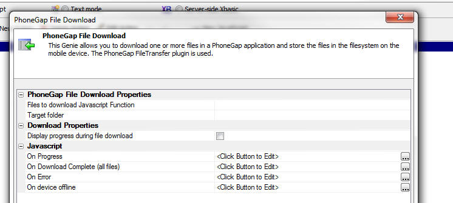
IMPORTANT: Your PhoneGap application must include the Device, File, File Transfer plug ins.
Properties of note in this builder include:
PhoneGap - File System Action - Action Javascript - A collection of actions that make working with files in the mobile device file system easier.
When you choose this action, you can select from the following list of file system actions:
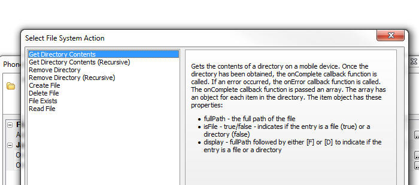
Note: All PhoneGap file system actions are asynchronous. When you define any of these actions you specify a success function that gets called once the PhoneGap action has successfully completed.
List Control - Detail View - Photos in PhoneGap Applications - Previously, when you built a disconnected application (using List controls with associated Detail Views) you were limited as to how many photos you could capture while you were disconnected because the photos had to be stored (as base64 encoded data) in the browser's Local Storage cache until a connection was available and you could synchronize the data. On most mobile devices, Local Storage is limited to about 5MB.
Also, if the data you were loading from your server onto a mobile device contained photos, the number of records you could retrieve from the server and keep on the mobile device was limited because the photos had to be stored along with your data in Local Storage on your device.
Now, if your application uses PhoneGap, you can use the file system on the device to store your photos and you can capture a large number of photos while you are disconnected, without having to worry about the limits of Local Storage. Future versions of Alpha Anywhere will also allow you to capture video and audio while you are disconnected.
NOTE: Photos, videos and audios are collectively labeled as 'media' files in this topic.
Quick Summary of Steps to Use PhoneGap File System
for Photos:
- Photo fields in your SQL database must be character fields.
- Create a List control with a Detail View on your UX component.
- In the Detail View, set the control type for the Photo fields to
Image.
- In the List builder go to the
Detail View pane and set the
Media and other Linked Files
properties. Most importantly, specify if the media files should
be uploaded to Amazon S3 or the Alpha Anywhere server. It is also
recommended that you check the
Automatically download media files... property so that your
photos in your existing data are available when you go offline.
- In the List builder, go to the
Fields pane and set the
control type for the Photo fields to
Image. Also, if you have
specified that the media files should be uploaded to the Alpha Anywhere
server, edit the Image Capture
and Storage properties to specify the folder where the uploaded
photos should be stored.
- Add a button to the Detail View to capture an image using the camera.
Define the click event for this button using the
Image Capture for List-Detail
View action in Action Javascript. In the builder for this action
set the Image Capture Method
to Phonegap and set the
Data capture mode to
Filename.
Watch Video - Part 1
Watch Video - Part 2
Watch Video - Part 3
NOTE: In order to use this feature, your PhoneGap application must include these PhoneGap plug-ins: Camera, Console, Device, File, File Transfer, Media, Media Capture.
Similarly, when you retrieve data from the server to store on your device, there is no need to store the photos in Local Storage. The photos can be downloaded and stored in files on the device. This will substantially increase the amount of data you can load onto your device.
In order to use the file system for your images (rather than Local Storage), you configure the Image Capture for List-Detail View - Camera/Photo Library action in action Javascript to use the 'Filename' option (rather than the 'Base64' option). See below for more detail.
When you sync the List with the server database, the photos (and other media files, once support for videos and audios is made available) are first uploaded (to the Alpha server or to Amazon S3) and then once the media files are all uploaded, the data in the Lists are synchronized.
Before examining how to configure the Image Capture for List-Detail View - Camera/Photo Library action in action Javascript and the List Detail View to use this option, it is helpful to understand more about what happens behind the scenes when you capture photos, and then sync the data in your List controls.
Behind the Scenes
When you take a picture, the List data for a row in the List might look like this (where the file in the picture field is a local file on the mobile device):
{Name: 'Fred Smith', picture: 'file://folder_in_the_file_system/image1.jpg'}
Note: If you had not set the action
that captured the picture to use the 'filename' option, the data in
the List might have looked like this (note that the picture field
contains a long string of base64 encoded image data):
{Name: 'Fred Smith',
picture: 'xysshdh24g22334hack46h2dk43hahdh...........'}
When you sync the List data, the media files (the photo in this case) are first uploaded to the server. Let's assume you are uploading media files to S3. The URI of the image on S3 might be something like:
https://yourS3bucketName.s3.amazonaws.com/image1.jpg
After the media files have been successfully uploaded to the server, the data in the List are changed as follows:
{Name: 'Fred Smith', picture: 'https://yourS3bucketName.s3.amazonaws.com/image1.jpg'}
The data in the List can then be synchronized with the server database. The following record would be written to the database:
Name Picture
Fred Smith https://yourS3bucketName.s3.amazonaws.com/image1.jpg
Once the data synch operation has completed, the data in the List is again changed back to:
{Name: 'Fred Smith', picture: 'file://folder_in_the_file_system/image1.jpg'}
The reason to change the data in the List back to its original state is that there is no need to reference a remote image (on say S3) when the local copy of the image is already available in the device file system.
Taking Your Media Files With You When You Go Off-line
If the data in your List has references to remote files (e.g. photos, videos, audio files, etc.) that are located on remote servers (such as the Alpha server, or Amazon S3), you can retrieve those files and store them in the file system on the mobile device. By doing this, you ensure that even when you are disconnected, your application can still reference these files.
Assume that a typical row in the SQL table that you are querying to populate the List contains data like this:
Name Picture
Fred Smith https://yourS3bucketName.s3.amazonaws.com/image1.jpg
When you retrieve data from the server, the JSON representation of the data in a typical row in the List might look like this:
{Name: 'Fred Smith', picture: 'https://yourS3bucketName.s3.amazonaws.com/image1.jpg'}
The picture field is pointing to an image on Amazon S3 and this image will not be available if you are not connected. However you can fetch the image while you do have a connection, store the image in the file system, and update the data in the List to something like this:
{Name: 'Fred Smith', picture: 'file://folder_in_the_file_system/image1.jpg'}
Notice that the picture field in the List no longer points to the remove server, but instead is pointing to a file on the mobile device.
Orphaned Files
Assume that when the List is initially populated, the data in the List are:
[
{Name: 'Tom Smith', picture: 'https://yourS3bucketName.s3.amazonaws.com/image1.jpg'},
{Name: 'Jan Toms', picture: 'https://yourS3bucketName.s3.amazonaws.com/image2.jpg'}
]
When you fetch the media files, the following files will be stored in the file system on the mobile device:
Assume that the user then does another query and retrieves this data with which to populate the List:
[
{Name: 'Tom Smith', picture: 'https://yourS3bucketName.s3.amazonaws.com/image1.jpg'},
{Name: 'Ian King', picture: 'https://yourS3bucketName.s3.amazonaws.com/image3.jpg'},
{Name: 'Jack Jon', picture: 'https://yourS3bucketName.s3.amazonaws.com/image4.jpg'}
]
At this point, the file system on the device will contain these files: 'image1.jpg', 'image2.jpg', 'image3.jpg' and 'image4.jpg', Notice that it still contains a file called 'image2.jpg', but there is no data in the List that references this file. 'image2.jpg' is an 'orphan' file and it can be deleted. The List Detail View has settings that allow you to automatically delete orphan files (see below). There are also events that are fired before and after orphan files are deleted.
Configuring Photo Capture to Use the File System
In order to capture photos in disconnected application you will need a List control with an associated Detail View. Let's assume that the List control is bound to a SQL table that has these fields
NOTE: When you are capturing base64 data, the photo field could be a character field, or a binary field. But if you want to use the file system on the mobile device for your photos, your photo field must be a character field.
Assume that you have have added a List control that is bound to this table to your UX. The control type for the photo field (imageChar) in the Detail View should be set to Image.
First you will need to edit the List control and go to the Fields pane and ensure that the control type for the imageChar field is set to Image. Since imageChar is a character field the List does not set its default type to Image.

You should then add a button next to this Image control and set the action on this button to Image Capture for List-Detail View - Camera/Photo Library.
When you click the smart field to configure this action, the builder will open as shown below:
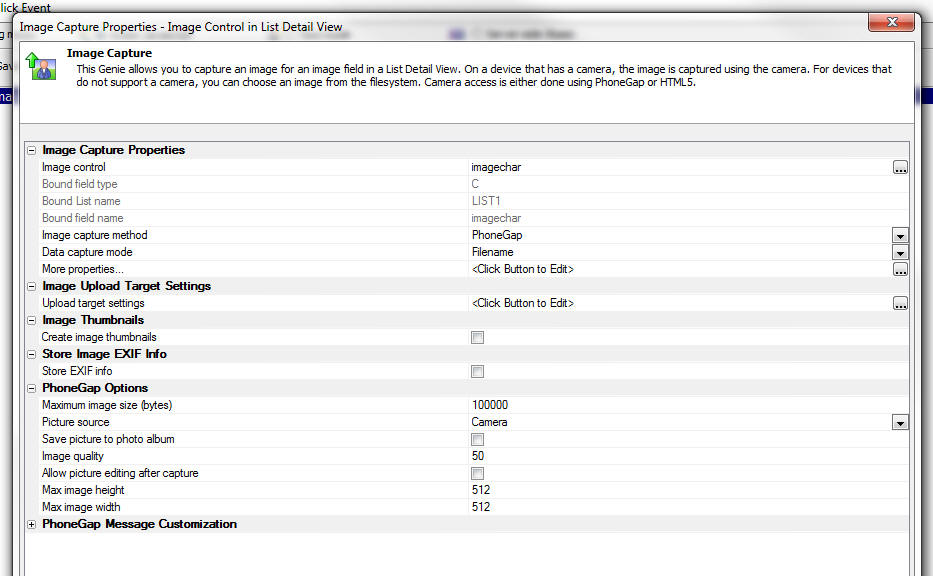
Note that the builder has several properties shown as read-only properties.
In this example, the target field (i.e. the Bound field type) is a character field. Therefore we have the option of uploading the image to either Amazon S3, or the Alpha Anywhere server when the data in the List are synchronized.
NOTE: If the Bound field type is a binary field then uploading the image to Amazon S3 is not an option. The image can only be uploaded to the Alpha Anywhere server.
NOTE: More properties... are actually stored in the List control settings. It is merely a convenience that you can edit these setting in this builder. Open the List builder and go to the Field pane to see the settings for each image field.
NOTE: Upload target settings are actually stored in the List control settings. They are not stored as part of your Action Javascript definition. It is merely a convenience that you can edit the Upload target settings from within this builder. If you open the List builder and go to the Detail View pane, Media and Other Linked Files (PhoneGap Application Only) section, you will the upload settings.
NOTE: Upload target settings apply to all image fields in the List (and any child Lists with pre-fetched data that are linked to this List). For example, assume that you have two image fields in your List. You might have one button to capture a photo for the first image and another button to capture a photo for the second image. If both of these buttons are configured to use the Filename option for the Data capture mode, then both of these images will be uploaded to the same target (either the Alpha Anywhere server, or Amazon S3). It is not possible to upload the first image field to S3 and the second image field to the Alpha Anywhere server.
Upload Target Settings Dialog
The Upload Target Settings Dialog allows you to define if the media files should be uploaded to the Alpha Anywhere server or to Amazon S3. There are two ways to get to this dialog:
The Upload Target Settings dialog is shown below.
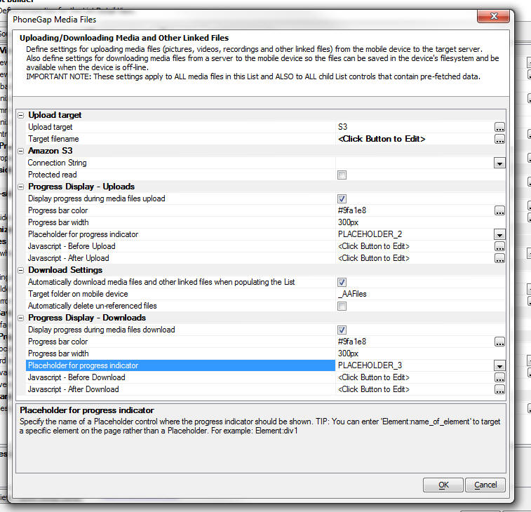
NOTE: In the case where you are not using PhoneGap, you can still access photos in your data when you are offline. However, the amount of data you can load into the List will be limited because the photos are stored in Local Storage along with the List data. In order to store images in the List data so that they are available when you are offline, the photo field in your database must be a binary field (as opposed to a character field - which is required if you are using the PhoneGap option) and you must configure the List to embed the image data (as base64 encoded data) into the List (by checking the Embed images into HTML property for the image field in the List settings, Fields pane).
Methods
The following methods are available
Events
The following client-side events have been added:
UX Component - Optimizing Initial Load Time - When a UX component is opened, the layout of the component is computed from the UX component definition. In a large component that can take some time and the component will appear to be slow to open.
NOTE: If the component is opened from a button on
a parent component, and the action that defines how the
component is opened uses the 'Use cached UX Component'
option, the second and subsequent times the button on
the parent component is clicked, the UX will open
quickly.
A new option in the UX allows you to pre-render the component layout at design-time, thus speeding up the load time for the component at run-time.
NOTE: Not all use cases are appropriate candidates for this option. In particular, if you have controls on your UX that are shown/hidden based on a user's security group, or based on session variables, then you should not use this option. The reason is that at design-time when the component is rendered, it is not know what the value of the session variables or group assignments are.
TIP: You can easily check if a component uses
security and/or server-side show hide expressions by
click the Menu button and then selecting the 'Security
and server-side show/hide settings in component...' menu
choice.
To turn on this optimization feature go to the Properties pane in the UX builder and check the 'Pre-render component at design-time' property.

When you check this property you will see two additional properties:
TIP: When you save a pre-rendered component at design-time, you might have Xbasic code in functions you have defined that is meaningless at design-time, but is nevertheless being called when the component is being pre-rendered. You can test if you are in pre-render mode by checking the flagPreRender property of the rtc object that is passed to all server-side code in the e object. For example:
function someXbasicFunction as c (e as p)
if eval_valid("e.rtc.flagPreRender") then
if e.rtc.flagPreRender then
exit function
end if
end if
.... your code
end function
json_sqlQuery() Function - Allows you to filter a JSON array using a simple SQL query syntax. For example assume you have a JSON string as shown below. The JSON is an array of objects. You can think of this as a table with the following fields: firstname, lastname, city and state.
dim json as c
json = <<%str%
[
{firstname: 'John', lastname: 'Smith', city: 'Boston', state:
'MA'},
{firstname: 'Fred', lastname: 'Jones', city: 'Cambridge',
state: 'MA'},
{firstname: 'Tom', lastname: 'King', city: 'New York', state:
'NY'}
]
%str%
Assume that you want to apply a filter to this string to retrieve certain records and also to sort the result.
The SQL that you would need to express your query might be:
select * from JSONTABLE WHERE state = 'MA' ORDER BY lastname
Or if you would like to use arguments in your SQL, you might express your query as:
select * from JSONTABLE WHERE state = :whatstate ORDER BY lastname
Here is how you can use the json_sqlQuery() function:
dim args as sql::arguments
args.add("whatstate","MA")
dim jsonResult as c
json2 = json_sqlQuery(json,"select * from jsontable
where state = :whatstate ORDER BY lastname",args)
The resulting string will be:
[
{firstname: 'Fred', lastname:
'Jones', city: 'Cambridge', state: 'MA'},
{firstname: 'John', lastname: 'Smith', city: 'Boston', state:
'MA'}
]
UX Component - List Control - Persisting List to Local Storage - The UX component has a property that allows you to minify the data before it is put into Local Storage, thereby reducing the amount of space needed to stored the List data.

When you check the Minify data option now, any blank fields in the JSON data are automatically removed and system fields that are used internally in the List (these are field that have a leading '*' in their name) are also removed. This can result in a significant reduction in the amount of space needed to save a List in Local Storage.
UX Component - SQL - Native SQL and Stored Procedures
- You can now enter native SQL statements (including SQL
to execute Stored Procedures) in the SQL Statement for a
List that is based on a SQL data source.
Previously if you wanted to base a List on native SQL,
or on a Stored Procedure you had to use a Custom data
source. However, when you used a custom data source you
then had to write your own code to handle pagination and
server-side filtering.
Now, pagination and server-side filter all work
regardless of whether the SQL for the List is portable,
native or a Stored Procedure.
If you apply a server side filter to a List that is
based on a Stored Procedure, or a native SQL statement
that cannot be parsed, Alpha Anywhere will execute the
SQL (without the filter/order clause) and then apply the
filter/order to the data that is retrieved from the
database server.
For example, suppose you based on List on this SQL
statement:
exec getAllCustomers
The you apply a server-side filter to the List:
Country = 'USA'
Since the Stored Procedure can only return all customers
and since it (presumably) was not designed to take an
arbitrary 'where' clause, Alpha Anywhere will execute
the Stored Procedure and then apply where filter to the
data after it has been returned by the database server,
but before it is sent to the List control.
Storage Connection Strings - Amazon S3 - Connection String Builder - Region Name - The dialog now uses 'friendly' region names that match the region names used in the AWS Management Console.

Web Applications = Development Server - The Alpha
Anywhere Development Server now allows an unlimited
number of sessions from localhost clients (i.e. browsers
running on the same system) without requiring an
Application Server license. This extends the existing
Development Server functionality that has always allowed
5 sessions from any client. Localhost clients are no
longer counted towards the 5 session limit, so a
developer may do unlimited testing using local browsers
and device emulators, and still test from 5 non-local
clients such as an actual mobile device, a coworker's or
client's computer, etc.
Previous versions of Alpha allowed an unlimited number
of localhost sessions and no non-local sessions when
running the server without a license.
Web Security - Password Validation - The password
validation in the web security now supports regular
expressions in the Text Format. Previously, if a regular
expression was used for validation, it had to be added
as a custom expression. Publishing to IIS does not
support custom expressions, so a custom expression
should be converted to a regular expression if possible.
PhoneGap Builder - File Opener Plugin - The File Opener plugin has been added to the options screen in the PhoneGap Builder.
More info on the plugin is available here.
http_fetch() Function - Validation has been added to the host specified for the HTTP request. Users have occasionally specified a full URL as the host name, which has caused a failure. The new validation logic will extract the host name from the URL if one is mistakenly provided and allow the HTTP request to be completed
UX Component - List Control - Scroller - You can now dynamically show/hide the scroller for a List control. This is useful if you are dynamically populating the List and under some circumstances that are so few rows in a List that the scroller is not wanted, but in other cases there will be many rows in the List and the scroller would be wanted.
The List's .setDisplay() method is used for this as follows:
var lObj = {dialog.object}.getControl('myList');
lObj.setDisplay('scroller',false); //hide
lObj.setDisplay('scroller',true); //show
Other parts of the list that can be controlled with the .setDsiplayMethod() are:
Grid Component - .filterCheckedRows() Method - Now takes an optional argument to filter the unchecked rows as opposed to the checked rows.
Syntax:
{grid.Object}.filterCheckedRows([flagUncheckedRows])
UX Component - DataBound UX Components - Refreshing Schema Information - The UX builder has an option to automatically refresh the stored schema information every time the UX is opened for editing. For complex data bindings, this can slow down the time taken to open the UX for editing. If you know that the table schema has not changed, there is no need to refresh the stored schema in the UX and you can therefore speed up opening the UX for editing by skipping this step. When you specify that the schema should be refreshed when the UX is edited, there is now a new option to prompt for confirmation each time the UX is opened.

a5_getExifInfo() Function - Extract EXIF information from an image.
Syntax
P result = a5_getExifInfo(c imageFilename)
The result object that is returned has these properties
UX Component - Action Javascript - Populate Controls in an Unbound UX - New options if no matching record found - If the specified primary key is not found in the table you can now specify that the values in the databound controls should be cleared, you can also suppress the error message, and you can call a Javascript function.
See 'Errors and No Match Found' section in the genie.
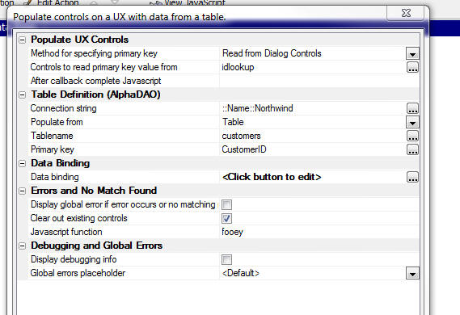
Faster Startup - Alpha Anywhere now starts up faster because the licensing check is now done in a background thread.
PhoneGap - Index.HTML Meta Tags - When you build a PhoneGap app, a new option in the PhoneGap builder now allows you to insert custom META tags in the index.html file that is generated for your PhoneGap app.
A common use case for this feature is to turn off iOS auto-detection of phone numbers and email addresses.

Web Applications - Context Object Documentation - The Context object is available to all server side code that executes in the context of a Web application (for applications that use the Alpha Anywhere server and for those that use the Alpha Anywhere plug-in for IIS). This object has an extensive set of methods and properties that allow you to get information about the request and the response to interact with the security framework.
Click here to see Context object documentation.
json_parse() Function - Parsing Javascript Object Literals - The JSON parse function now takes an optional second argument to indicate if the JSON being parsed is a Javascript object literal rather than a JSON string. For example, consider the following Xbasic code which defined an Xbasic object (i.e. dot variable):
dim p as p
p.name = "Fred"
p.sayHello = "{javascript}function() { alert('hello');}"
Now, generate a Javascript object literal. Pass in .t. as the second argument to vartojson() to indicate that we want an Javascript object literal and not a JSON string.
dim jsObject as c
jsObject = vartojson(p,.t.)
Here is what the resulting string looks like:
{
name: 'Fred',
sayHello: function() { alert('hello');}
}
Now, in order to be able to parse this object literal back to Xbasic, we use the json_parse() function but we set the optional second argument to .t.
dim pj as p
pj = json_parse(jsObject ,.t.)
?pj.name
= "Fred"
?pj.sayHello
= "{javascript}function() { alert('hello');}"
UX Component - List Control - Template Items - a5-item Attribute - Template Items are a powerful new way to efficiently add event handlers to the HTML markup used in the List template. Template items are added to the HTML markup by adding an a5-item attribute to the markup, as explained below.
Regardless of whether the List is defined as a free-form or columnar layout, every row displayed in the List is created by merging data into the row template. For a free-form List, there is a single template for the entire row and for a columnar List, there is a template for each column in the List. The template is HTML with placeholders for the List data.
For example, the template for the Firstname field in a columnar List might be:
{Firstname}
The template for a free-form List might be:
{Firstname} {Lastname}
{City} {State} {Zip}
You might want to add an event handler so that when the user clicks on the Firstname field, an event fires. You might change the template for the Firstname field to:
When the user clicks on the Firstname field in any row of the List, the event1() Javascript function should be called.
While inserting the onClick attribute into the that wraps the {Firstname} placeholder seems easy enough there are two problems with it:
Both problems can be solved by using template items. The template could be defined as:
In the above example, 'item1' is the name of a template item. The event handlers for the 'item1' template item are defined in the Template Item editor.
To define template items, you can either click the Quick Access... button at the bottom of the List Builder window and then select 'Template Items' from the menu.

Or, you can click the Template 'items' hyperlink in the Column Template of Layout Template editor.

When you open the Template Items editor you get a screen that looks like this:
You can define as many template items as you want. For each item you define event handlers for the Click, Double Click and Right Click events.
You can also set the 'Selectable' property. If this property is set, then when the user clicks on the item, the row in which the user clicks is selected. Otherwise, the row is not selected.
When you insert a template item into the HTML markup you can insert an optional 'item argument'. The item argument follows the item name, delimited by a colon. In the example below, 'item1' is the item name and 'argumentValue' is the item argument. The purpose of the item arguments is to pass additional information to the Javascript event handler.
The Javascript event handlers for the item can reference:
When you are editing the List template the Template 'items' hyperlink also gives you access to a special genie that makes it easy to insert items into the template:

UX Component - List Control - onFieldClick, onFieldDblClick, onFieldRightClick Events - New events have been added to the List that fire when you click, double click or right click on fields in the List.
Contrast these events with the onClick, onDblClick, etc. event which fire when you click on a row (as opposed to a field) in the List.
When the onFieldClick, onFieldDblClick or onFieldRightClick events are fired, the e object that is passed into the event handler has these properies:
NOTE: The above events are only implemented for Label and RawData control types.
varToJsonHash() Function - Converts an Xbasic property array to a JSON hash
Syntax:
C jsonHash = varToJSonHash(p propertyArray, c hashProperty [, L flagSpecialTags [, L flagCondense [, flagUseDoubleQuotes ]]])
Where:
Example:
Consider the following Xbasic property array:
DIM P[0] as p
p[].name = "John Smith"
p[..].address = "123 Main Street"
p[..].age = 23
p[].name = "Fredia Malt"
p[..].address = "456 Center Lane"
p[..].age = 33
We can convert this to a JSON hash, using the 'name' property as the hash index as follows:
dim jsonHash as c
jsonHash = vartojsonHash(p,"name")
The resulting JSON string looks like this:
{
'John Smith' : {address: '123 Main Street',age: 23},
'Fredia Malt' : {address: '456 Center Lane',age: 33}
}
In this next example we use the flagSpecialTags property
DIM P[0] as p
p[].name = "John Smith"
p[..].address = "123 Main Street"
p[..].age = 23
p[..].sayHello = "{javascript}function() { alert('hello John') }"
p[].name = "Fredia Malt"
p[..].address = "456 Center Lane"
p[..].age = 33
jsonHash = vartojsonHash(p,"name", .t.)
The resulting JSON string is:
{
'John Smith' : {address: '123 Main Street',age: 23,sayHello:
function() { alert('hello John') }},
'Fredia Malt' : {address: '456 Center Lane',age: 33}
}
AlphaDAO - SQLServer Driver - Faster Connections - There are two changes in the SQL Server Extension driver:
As a result of both changes, the connection times are now in the microsecond range when connecting to a local machine.
UX Component - Edit Combo - Stored Value is Different than Display Value - Resolving Value Message - When you define an Edit-Combo that sets the stored value to be different than the display value, and the Edit-Combo is populated using an Ajax callback, you can now control the message that is shown when the stored value is resolved into a display value. By default the message:
Resolving:
is shown while the Ajax callback that resolves the
stored value is running. But you can customize this
message or even eliminate it by setting the message text
to
UX Component - List Controls - Detail View - Parent/Child Data - In disconnected applications, when you define parent-child relationships between List controls you must set the child List's 'Pre-load data' property to true.
However, when you are building a connected application you might still want to define a parent-child relationship between Lists and you might want to define a Detail View for each List to allow editing of the List data, but you might not want to pre-load the child data (since Alpha Anywhere can easily fetch the child data as needed as you have a connection).
Previously, if you did not have the pre-load option checked, you were not allowed to edit data in the child Lists (using the child List's Detail View).
Now, you can edit data in the child Lists, but you must specify linking values in the optional Linking fields section. The data you fill into these properties is used to ensure that the values in the linking fields are automatically set to the corresponding values in the parent List record when insert or updates are performed.
a5_sql_schema_to_json() Function - Takes a schema of a SQL database and generates a JSON representation of the schema showing all tables in the database, and their relationships.
Example:
Type the following commands in the Interactive window:
dim cn as sql::Connection
?cn.Open("::Name::northwind")
= .T.
dim sn as sql::Schema
?cn.GetSchema(sn)
= .T.
dim jsonSchema as c
jsonSchema = a5_sql_schema_to_json(sn,{ show_field_type_info : true })
showvar( jsonSchema)
UX Component - Action JavaScript - Geolocation Functions- A new option, Get accurate position within a designated radius has been added to the Action JavaScript Geolocation functions. When enabled, you may specify a desired accuracy radius. The returned lat/lon will fall within the desired accuracy radius if at all possible. This option calls a new custom method that has been added to the navigator.geolocation object called getAccuratePosition(). This method uses the geolocation watchPosition() method to attempt to get position data within a specified accuracy radius. The method will time-out at the maximum wait time and will return the last known location, even if the accuracy does not meet the desired accuracy target.

The maximum wait time defines the maximum amount of time in ms to wait for a geolocation change event.
If Ignore first result is checked, the first geolocation point returned will not be used. Some devices return cached location data for the first result, which is, in most cases, inaccurate.
The returned geolocation data can be accessed through the {dialog.object}.getGeolocation() method.
Example code for the 'Callback function' in the above image:
function gotResults() {
var e = {dialog.object}.getGeolocation();
alert('Lat = '+e.latitude+' Lon = '+e.longitude);
}
UX Component - Client-side Group Breaks - Aligning Summary Values with List Columns - The List control allows you to insert client-side group breaks in a List and to display summary values in the group headers and footers. In a columnar List layout you typically want to align these summary values with the appropriate List columns.
A new genie in the Header/Footer builder make this easy to do. The genie generates a sample Javascript function that you can easily modify.
Watch Video
Download Component
UX, Grid, TabbedUI and Custom Components - Local CSS and Linked CSS Files - SASS - When you define local CSS (at the Local CSS definitions property), or when you link in CSS files you can now use SASS syntax in your CSS definition.
NOTE: For more information on SASS syntax see http://sass-lang.com/
In the case of linked CSS files your CSS file should have a .scss extension and when you specify the name of the linked CSS files you should include the .scss extension.
TIP: You can turn off automatic SASS
processing of your local CSS definitions by adding this property to the
Advanced, Other Properties section in the builder:
tmpl.sassProcessor =
.f.
UX and Grid Builder - Editing HTML Content - Script Tags - When you add a
json_flatten() Function - Takes a JSON string that defines an array of hierarchical objects and 'flattens' the array.
This function is useful for Reporting where the report data source is set to a Custom data source that returns JSON data. If the JSON data that is returned is hierarchical, then you will need to 'flatten' it in order to get it into an appropriate format for the report writer.
The syntax for json_flatten() is
c output = json_flatten(C jsonIn, c template)
The format of the template is shown in the following example.
Consider the following JSON String:
[
{
"id": "alfki",
"name": "customer 1",
"__a5crc": -253329,
"orders": [
{
"orderId": 1,
"orderData": "12/1/2013",
"ordcust": "1|||alfki",
"orderDetails": [
{
"lineitemId": 1,
"prodId": 1,
"qty": 3,
"ordprod": "1|||1"
},
{
"lineitemId": 4,
"prodId": 3,
"qty": 2,
"ordprod": "1|||3"
}
]
},
{
"orderId": 3,
"orderData": "12/3/2013",
"ordcust": "3|||alfki",
"orderDetails": [
{
"lineitemId": 6,
"prodId": 4,
"qty": 9,
"ordprod": "3|||4"
},
{
"lineitemId": 7,
"prodId": 3,
"qty": 1,
"ordprod": "3|||3"
}
]
}
]
},
{
"id": "bolid",
"name": "customer 2",
"__a5crc": -194126,
"orders": [
{
"orderId": 2,
"orderData": "12/2/2013",
"ordcust": "2|||bolid",
"orderDetails": [
{
"lineitemId": 2,
"prodId": 6,
"qty": 6,
"ordprod": "2|||6"
},
{
"lineitemId": 3,
"prodId": 9,
"qty": 7,
"ordprod": "2|||9"
}
]
}
]
}
]
The JSON object defined by the above string shows an array of customers with embedded orders. For each order, there are embedded line-items.
The structure of the JSON object is
Customers
Orders
Order Details
The json_flatten() function takes two arguments - the JSON string you want to flatten, and a template that defines which properties in the input JSON you want to map to the output JSON.
Assume that the following template is specified:
{
"id" : "id" ,
"name" : "name" ,
"orders" : [
{
"orderId" : "orderId" ,
"orderData" : "orderData" ,
"orderDetails" : [
{
"lineitemId" : "lineitemId" ,
"prodId" : "prodId" ,
"qty" : "qty"
}
]
}
]
}
If you 'flatten' this JSON using the above template, you will get the following output:
[
{
"id": "alfki",
"name": "customer 1",
"orderId": 1,
"orderData": "12/1/2013",
"lineitemId": 1,
"prodId": 1,
"qty": 3
},
{
"id": "alfki",
"name": "customer 1",
"orderId": 1,
"orderData": "12/1/2013",
"lineitemId": 4,
"prodId": 3,
"qty": 2
},
{
"id": "alfki",
"name": "customer 1",
"orderId": 3,
"orderData": "12/3/2013",
"lineitemId": 6,
"prodId": 4,
"qty": 9
},
{
"id": "alfki",
"name": "customer 1",
"orderId": 3,
"orderData": "12/3/2013",
"lineitemId": 7,
"prodId": 3,
"qty": 1
},
{
"id": "bolid",
"name": "customer 2",
"orderId": 2,
"orderData": "12/2/2013",
"lineitemId": 2,
"prodId": 6,
"qty": 6
},
{
"id": "bolid",
"name": "customer 2",
"orderId": 2,
"orderData": "12/2/2013",
"lineitemId": 3,
"prodId": 9,
"qty": 7
}
]
Notice that the template has omitted the '__a5crc' in the input property. The template indicated which properties were to be extracted from the input JSON. It also indicates that the property name should be called in the output JSON.
For example, the template indicates:
"id" : "id"
Had that been:
"id" : "CustomerId"
The output JSON would have named the 'id' property 'CustomerId'.
Here is a simpler example:
dim json as c
json = <<%str%
[
{"id" : 1, "name": "John", "kids" : [ {"name": "callie"},{"name"
: "griffin"} ]},
{"id" : 2, "name": "Tom", "kids" : [ { "name" : "betty" } ]}
]
%str%
dim template as c
template = <<%str%
{"id" : "id", "name" : "firstname", "kids" : [ {"name":
"name"} ] }
%str%
dim json2 as c
json2 = json_flatten(json,template)
json2 = json_reformat(json2)
Here is what json2 looks like:
[
{
"id": 1,
"firstname": "John",
"name": "callie"
},
{
"id": 1,
"firstname": "John",
"name": "griffin"
},
{
"id": 2,
"firstname": "Tom",
"name": "betty"
}
]
The json_flatten() function can also be used to simply map property names in the input JSON to new property names in the output JSON. For example, consider the following script:
dim json as c
json = <<%str%
[
{"id" : 1, "name": "John"},
{"id" : 2, "name": "Tom"}
]
%str%
dim template as c
template = <<%str%
{"id" : "id", "name" : "firstname"}
%str%
dim json2 as c
json2 = json_flatten(json,template)
json2 = json_reformat(json2)
showvar(json2)
The resulting JSON will look like this:
[
{"id" : 1, "firstname": "John"},
{"id" : 2, "firstname": "Tom"}
]
PhoneGap- Modified The Default Location For Persistent Files - Previous versions set the Persistent File Location property to "Compatibility" mode on both Android
and iOS devices. It has now been changed to "Internal" for Android and "Library" for iOS. This is the recommended setting on Android to ensure the files are
contained within the app folder and that the files are deleted when the app is deleted. Under iOS, the files are always in the app folder, however, files in the
Library folder are not available to iTunes nor are they synchronized to iCloud.
When "Compatibility" mode is set as the persistent file location for an Android PhoneGap app:
When "Compatibility" mode is set as the persistent file location for an iOS PhoneGap app:
In general "Compatibility" mode is NOT the recommended setting.
If you have used the PhoneGap file plug-in in previous versions, the default setting will make your app files inaccessible.
The setting will not change for existing PhoneGap apps because the previous "Compatibility" setting will remain within the configuration file.
Your app will only be affected if you delete the previous PhoneGap project and create a new one.
You can change this setting by enabling Show Advanced Options in the Configuration Options settings of the PhoneGap App Builder Genie.
Once the Show Advanced Options is enabled, you can change the persistent file location as required
Web Applications - Web Projects Control Panel - 'Search all files in this Project' Command - This command will now search in report, label and letter file (.i.e. .a5rtp, .a5lab and .a5ltr). The data source definition of the report layout (not the report body itself) will be searched.
UX Component - Action Javascript - PhoneGap - File System Actions - A new action in Action Javascript allows you to perform actions on the file system of the mobile device on which your UX is running.
NOTE: File system actions are only supported for PhoneGap applications.
The actions currently supported are:
All of these actions are performed asynchronously. For each action you specify the Javascript to execute once the action has successfully completed. If the action fails, the Javascript you specify for the on failure action is executed.
Because the actions are asynchronous, you cannot simply define an Action Javascript that calls two file system actions sequentially. For example, assume that you defined an Action Javascript that did this
This would likely fail because the second action (write a file to the new directory) would be executed immediately after the first action (before the new directory had actually been created).
In order to make the above work, the second action (write a file) needs to be called in the first action's onSuccess function.
The asynchronous nature of file system actions makes it tricky to write complex scripts that perform many file system actions
In the above example, you would need to convert your Action Javascript to text mode and then rearrange the code.
For example, assume you defined the above two actions using Action Javascript. Once you converted to text mode your code would look like this:
{dialog.object}.phoneGapCreateDirectory('dir1', function() { //ok}, function() { //fail } );
{dialog.object}.phoneGapCreateFile('dir1/file1.txt','some data',function() { //ok }, function() {//fail },false);
To re-organize the code so that the write file action happens after the new directory has been created, we simply paste the action into the create directory's onSuccess function:
{dialog.object}.phoneGapCreateDirectory('dir1', function() {
//ok
{dialog.object}.phoneGapCreateFile('dir1/file1.txt','some data',
function() { //ok },
function() {//fail },false);
}, function() { //fail } );
UX Component - PhoneGap File System Methods - The following methods have been added to the UX for working with files on the mobile device.
NOTE: File system actions are only supported for PhoneGap applications.
| Create a directory | {dialog.object}.phoneGapCreateDirectory(dirName, onComplete, onError) |
| Create a directory (recursively) | {dialog.object}.phoneGapCreateDirectoryRecurse(dirName, onComplete, onError) |
| Read a directory | {dialog.object}.phoneGapGetDirectory(dirName, onComplete, onError) |
| Read a directory (recursively) | {dialog.object}.phoneGapGetDirectoryRecurse(folder, onDirComplete, onDirError) |
| Remove a directory | {dialog.object}.phoneGapRemoveDirectory(dirName,onSuccess,onError) |
| Remove a directory (recursively) | {dialog.object}.phoneGapRemoveDirectoryRecurse(dirName,onSuccess,onError) |
| Delete a file | {dialog.object}.phoneGapDeleteFile(fileName,onSuccess,onError) |
| Check if a file exists | {dialog.object}.phoneGapFileExists(fileName,onResult,onFailed) |
| Read a file | {dialog.object}.phoneGapReadFile(fileName,onReadFile,onReadFileERROR) |
| Create a file | {dialog.object}.phoneGapCreateFile(fileName,text,onCreatedFile,onCreateFileERROR,flagAppend) |
UX Component - Action JavaScript - Stripe Checkout- A new Action JavaScript has been added to the UX component that allows you to easily use Stripe Checkout.
Stripe Checkout, and the Stripe API, allow you to process credit card payments from within your desktop web or mobile app.
You will need to obtain your unique test and live authentication/api keys from Stripe prior to working with Stripe Checkout within your app.
See the Stripe Website to setup your account.

A typical use case is to assign the action to a button click event, once the total of all items to be purchased has been computed.
Specifying your Stripe API Keys: Stripe will issue you a total of four authentication/api keys. One set is for testing and one set is for a live app.
The keys can be entered in explicitly within the Action Javascript builder or you may specify the keys within your project properties
(click the Project Properties button when the Web Control Panel has
focus).
Entering the Stripe Checkout keys in the Project Properties
Entering the Stripe Checkout Keys in the Project Properties allows you to easily use Stripe Checkout within multiple components. Be careful to
enter the test keys (typically prefixed with sk_test and pk_test) and the live keys (typically prefixed with sk_live and pk_live) in the appropriate fields.
The secret key is used server side when the server is communicating to the Stripe API with the token supplied by Stripe Checkout. The secret key is never revealed client side.
Stripe App Type: The app type can be Test or Live. Use Test for all of your testing and when you are ready to go live you must switch this property to Live and republish the app. If you are building a PhoneGap app, make sure to rebuild the PhoneGap app and upload to PhoneGap Build.
Icon Image: The icon image is displayed at the top of the Stripe Checkout component. The recommended minimum size is 128 x 128 px. Supported image types include .gif, .jpeg and .png.
Currency type: This specifies the currency of the amount being charged. The code entered here is the 3 letter ISO country code. Stripe offers support for a worldwide range of currencies. You can accept payments in your supported currencies from almost any credit card and debit card no matter where the customer lives. Customers in other countries may be charged additional fees by their bank.
Charge description: A general description of the product or service being purchased. The JavaScript you enter here can simply return a string (like the example below), return the value contained
within a control or return the result of a JavaScript function, defined within the UX component's JavaScript Functions property.

Charge amount: The amount (in cents) that is being charged. The JavaScript you enter here may simply return a number (example: return 1235; for a $12.35 charge),
may read the value of a control (make sure you convert to cents!) or may return the result of a JavaScript function, defined within the UX component's JavaScript Functions property.

OnStripeCheckoutComplete: This event fires after Stripe has attempted to process the payment with the token supplied by Stripe Checkout. The JavaScript you enter here
can examine the results returned from Stripe by calling the {dialog.object}.getStripeResults() method (see the sample code below). The {dialog.object}.getStripeResults method
returns either a Stripe charge object with a wide range of properties or an error.
See Stripe Charges Doc for more information.
HTTPS For Your Site All submissions of payment info using Stripe Checkout are made via a secure HTTPS connection. However, in order to protect yourself from certain forms of man-in-the-middle attacks, it is suggested that you serve the page containing the payment form with HTTPS as well.
UX Component - Image Upload Action Javascript - Mobile - Amazon S3 - When defining an Image Upload action for a UX component that is run on a mobile device you can specify in the image should be uploaded directly to Amazon S3 rather than to the Alpha Anywhere server.
This option is only available if the image is bound to a character field in the Table to which the UX component is bound.
Image upload in a mobile application uses the camera, or the photo library to select the image.
The option to upload to S3 is available for both HTML5 camera access and PhoneGap camera access.
NOTE: In the case where you are building a PhoneGap application, it is very important that when you build your PhoneGap project you include all of the necessary plugins when you define your PhoneGap project. You must include the File, FileTransfer and Camera plugins.
The ability to upload file images to Amazon S3 when using the Image Upload action in Action Javascript for the 'Desktop' mode was released previously. More information about this feature can be found in this topic: Action Javascript - Image Upload Action - UX and Grid Component - Amazon S3
UX Component - Android - Client-side Events - onKeyboard Event - A new event has been added that fires when the keyboard comes up, or is dismissed. This event is only supported on Android devices.
NOTE: The reason that the event is not supported on iOS is that under iOS the reported screen size of the device does not change when the keyboard is up.
NOTE: If you have set the UX quirks mode
keyboardAffectsScreenSizeCalc property to true
for backward compatibility then the
onKeyboard
event will not fire. For example:
{dialog.object}._quirks = {
keyboardAffectsScreenSizeCalc: true};
UX Component - List Control - .setValue() Method - New Options - Several new options have been added to the List control's .setValue() method. The options allow
Examples:
Select all records in a List:
var lObj = {dialog.object}.getControl('MYLISTNAME');
lObj.setValue({select: 'all'});
Select records by Group name (deselecting any existing selections):
var lObj = {dialog.object}.getControl('MYLISTNAME');
lObj.setValue({
select: 'group',
groups: ['CA','MA'],
additive: false
})
Select records by Group name (preserving any existing selections):
var lObj = {dialog.object}.getControl('MYLISTNAME');
lObj.setValue({
select: 'group',
groups: ['NY'],
additive: true
})
Select all rendered records in a 'Virtualized' list (if there are 100 records per 'page' and the List has (say) 2,000 records then there are 100 rendered records that will be selected):
var lObj = {dialog.object}.getControl('MYLISTNAME');
lObj.setValue({
select: 'view',
additive: false
})
UX and Grid Component - Javascript Actions - Filter List - The Define Javascript Action dialog now has a filter control to allow you to easily filter the list of actions. This is useful because some developers now have a large number of Javascript Actions defined in their components.
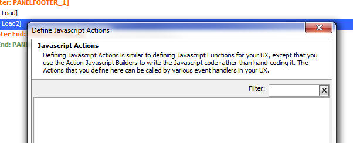
a5_json_viewer() Function - The A5_json_viewer() function can be used to open a viewer for JSON data.

Xbasic - CURL Genie - The code generated by the Xbasic CURL Genie is now more flexible. Instead of generating a constant for the post body length, it now generates a variable. For example, assume that you paste this CURL command into the genie.
curl --data "param1=value1¶m2=value2" https://example.com/resource.cgi
The generated output from the genie will now be:
dim cf_1 as extension::CurlFile
dim flag_1 as l
dim ce as extension::Curl
ce = extension::Curl.Init()
ce.setOpt("URL","https://example.com/resource.cgi")
ce.setOpt("NOPROGRESS",1)
dim posted_fields as c = ("param1=value1¶m2=value2")
ce.setOpt("POSTFIELDS",posted_fields)
ce.setOpt("POSTFIELDSIZE_LARGE",
len(posted_fields) )
ce.setOpt("USERAGENT","curl/7.40.0")
ce.setOpt("MAXREDIRS",50)
ce.setOpt("CAINFO",a5.Get_Exe_Path()+"\caroot\ca-cert.pem")
ce.setOpt("CAPATH",a5.Get_Exe_Path()+"\caroot")
ce.setOpt("SSH_KNOWNHOSTS","C:\Users\Cian\AppData\Roaming/_ssh/known_hosts")
ce.setOpt("TCP_KEEPALIVE",1)
ce.SetOpt("FILE",cf_1)
flag_1 = ce.Exec()
if flag_1 then
showvar( "Headers: "+crlf()+cf_1.GetHeaders()+crlf()+"Content:"+crlf()+cf_1.GetContent())
else
showvar("error: " + ce.Error() )
end if
ce.close()
File.to_property() Function - Can now automatically de-serialize a file that was serialized using property_to_string(), property_to_blob() or json_generate().
Example:
dim src.fname as c = "john"
dim src.lname as c = "public"
file.From_string("c:\data\sample.txt",property_to_string(src))
file.From_string("c:\data\sample.json",json_generate(src))
file.From_blob("c:\data\sample.dat",property_to_blob(src))
dim p1 as p
file.to_property("c:\data\sample.txt",p1)
? p1
= fname = "john"
lname = "public"
dim p2 as p
file.to_property("c:\data\sample.json",p2)
? p2
= fname = "john"
lname = "public"
dim p3 as p
file.to_property("c:\data\sample.dat",p3)
? p3
= fname = "john"
lname = "public"
UX Component - Static HTML Web Sites - Publishing to Amazon S3 - If you have a static UX component (i.e. the component does not make any callbacks to an Alpha Anywhere server), you can publish the static HTML site to Amazon S3. The advantage of this is that you don't need to publish your site to an Alpha Anywhere server and the site will be accessible from any browser that has an internet connection.
VERY IMPORTANT - The Amazon S3 bucket that you publish to must be configured to allow 'Public Read' otherwise when you try to access the application Amazon will return a 'Permission Denied' error. To set the correct policy on your Amazon bucket, you can use this JSON setting string in the Amazon Web Services console.
{
"Version": "2008-10-17",
"Statement": [
{
"Sid": "AllowPublicRead",
"Effect":
"Allow",
"Principal":
{
"AWS": "*"
},
"Action": [
"s3:GetObject"
],
"Resource": [
"arn:aws:s3:::specify_the_name_of_your_bucket_here/*"
]
}
]
}
Web Applications - Publishing - Check Security Before
Publish - You can now check if any pages,
components, or reports in the list of files to be
published are set as 'Always Denied' in the web
security. This is useful if publishing new pages or
components to verify the security is set before the new
elements are published. The check is only performed if
security is active, and will check all pages, and
components and reports if component security is
activated. Most other files have security set by file
extension.
If the option is selected and the file list to publish
includes pages, components, or reports that are set as
'Always Denied', a list of these files will be shown
before publish. You can continue with the publish or
cancel and correct any errors.
This option can be selected at publish, and a default
value for the option can be set in the publish profile.
The option can also be set separately for right click
publish.
Web Applications - Publishing - Publish Page Security
as Binary - Some projects may have very large number
of entries in the 'Pages.SecuritySettings' security
file. The file is normally stored as a text file, but if
it is very large (over 1 MB for example), it may load
slowly on the application server when the security is
loaded. This security file can be converted to a binary
file when published which will load much faster. If the
security cache timeout is set to 0 to never check for
updates, a slow load time will only impact the first
request for a project.
a5_url_fromStorageJSONformat() Function - Generates a signed URL to download a file from Amazon S3 storage.
The a5_url_from_storageJSONformat() function can be used to display/download a file from storage (e.g. Amazon S3) directly, with very little load on the Alpha server. The purpose of the function is to take a JSON string that defines the address of an object in storage (e.g. Amazon S3) and to generate a signed URL that can be used to download the object directly to the client from storage without having to first download the object to the Alpha server and then have the Alpha server send the file to the client.
The JSON string format that defines the address of an object in storage is:
{cs: 'storage connection string', object: 'name of object', source: 'vendor'}
NOTE: Currently the only vendor supported is Amazon S3 so vendor must be set to 'S3'
NOTE: The storage connection string is defined by selecting the Tools, Storage Connection Strings menu when the Web Projects Control Panel has focus. When you define storage connection strings you have the option of encrypting the storage connection string. You must NOT encrypt the storage connection string or else Alpha Anywhere will not be able to parse the storage connection string to determine your storage credentials.
For example, assume you have a named storage connection string called 'myS3bucket'. A JSON string that defines the address of an object called 'ProductPrices.pdf' would be:
{cs: 'myS3bucket', object: 'ProductPrices.pdf', source: 'S3'}
To generate a URL to display or download this object you would do the following:
dim address as c
address = <<%txt%
{
cs: 'myS3bucket',
object: 'ProductPrices.pdf',
source: 'S3'
}
%txt%
dim url as c
url = a5_url_from_storateJSONformat(address)
The resulting URL would look something like this (assuming that the bucket name specified in the connection string was 'myBucket'):
https://s3.amazonaws.com/myBucket/ProductPrices.pdf?AWSAccessKeyId=key&Expires=expiration&Signature=signature
Where:
key - your access key - as defined in the storage connection string
expires - indicates how long the URL can be used for (only applies if the object was uploaded to storage as 'Protected Read')
signature - a special signature based on the credentials specified in the storage connection string.
By default, the expires property is 240 seconds. That means that if the URL is used more than 240 seconds after it was generated, Amazon S3 will return a 'permission denied' error. The a5_url_from_storageJSONformat() function takes an optional second argument where you can specify how long the URL is good for in seconds. The default value for this parameter is 240.
File Upload - Amazon S3 - A new action has been added to Action Javascript for the UX component to upload files to a bucket in Amazon S3 storage.
NOTE: This action is not available for the Grid Component. However, the standard 'File Upload' and 'Image Upload' actions in Action Javascript, which are supported in the Grid now supports an option to target the upload to Amazon S3.
Watch Video
- Part 1
Watch Video
- Part 2
The benefit of this method is that the upload occurs directly to the Amazon servers without putting any load on the the Alpha Application Server.
NOTE: There is a small load on the Alpha Server for each file that is uploaded because a callback has to be made to the Alpha server to sign the URL used for the upload. This is necessary because the secret key for your Amazon account is stored on the Alpha server.
Features of the Amazon S3 File Upload include:
IMPORTANT: Before you can upload files to Amazon S3, you must configure your Amazon bucket to allow CORS support. CORS (Cross-Origin Resource Sharing allows you to make callbacks to a different server than the server (the Amazon server in this case) from which the page was originally loaded (your Alpha server). To configure your bucket you will need to open the AWS console. You can click the 'Setting CORS Support on your Amazon Bucket' in the Action Javascript builder for more information.
In order to create an action to upload files to Amazon S3, use Action Javascript. Select the 'File Upload = Amazon S3 Storage' action.
The genie for this action is shown below:

Method for specifying Amazon S3 credentials and bucket - There are two ways in which you can specify the credentials for your Amazon S3 bucket. You can specify a named storage connection string, or you can use the 'Explicit' option, in which case you will need to specify your Amazon access key, secret and bucket name.
NOTE: To create a named storage connection string, go to the Tools menu when the Web Projects Control Panel has focus and select the Storage Connection Strings menu item.

Allow multiple files - If you check this box, the user will be able to select multiple files. The files will be uploaded in parallel.
If you check this box then you can specify value for the Max total file size property, which is the maximum combined size of all selected files. By default, this property is set to -1, which means no maximum.
Display progress during upload - If you check this property, then progress will be displayed during the file upload.
NOTE: If you do not check this property, you can still create your own progress display by adding custom code to the Javascript On Progress event.
Allow cancel - Specify if the user can cancel the upload after it has been started, but before it completes.
Progress indicator type - The progress can be displayed either as a text that shows the percentage complete, or as a bar.
In the image below, progress is shown for a multiple file upload using the 'bar' option. Note that the Allow cancel property was also checked, and so a small button to the right of the bar is shown where the user can click to cancel the upload.

This next image shows progress using the 'text' option.

Placeholder for progress indicator - You must specify the name of a Placeholder control where the progress will be shown.
Authenticated read - Allows you to specify whether the file that is uploaded to S3 is 'public read' or 'authenticated read'. A 'public read' file can be read by specifying the URL of the object on Amazon S3. For example, assume you upload a file called 'Image1.jpg' and you use the same object name on S3 (i.e. you don't specify any code in the Target object name on Amazon S3 event so that the name of the object on Amazon is the same as the filename of the file on the client-machine), you will be able to read the file using this URL:
http://
If the Authenticated read property is checked then you can retrieve an object from S3 using Xbasic functions in server-side code.
For example, assume you wanted to retried 'Image1.jpg' which had been uploaded to S3 with the Authenticated read property turned on, you could perform an Ajax callback that executed this code to retrieve the file and save it to a local file called c:\myfiles\Image1.jpg.
dim cs as c
cs = "::storage::YourStorageConnectionStringName"
a5storage_getitem_as_file(cs,"Image1.jpg","c:\myfiles\Image1.jpg")
The full list of a5storage helper functions is shown below:
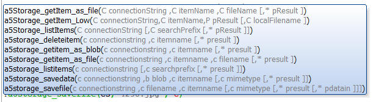
Validating File Selection
You can specify a maximum file size for any file that the user can select. By default this is set to -1, which means no maximum.
If the Allow multiple files property is checked you can also specify a maximum total file size for all files combined.
You can specify list of file types that the user can select in the Allowed file types property. You can enter a comma delimited list of file extensions. For example
.png,.jpg,.jpeg
You can also customize the error messages that are shown if a rule is violated. For example, in the image below, the message that will be shown if the user selects a file that is larger than 1,000,000 bytes is
File exceeds max allowed size of [maxfilesize]
[maxfilesize] is a placeholder that will be replaced at run-time.
You can also completely customize the display of validation error
messages by defining your own on Validate Error event handler in the
Javascript Events section. You can also use language and text dictionary
tags (
If you define a custom on Validate Error handler then you should blank out the default messages so that the system messages do not display.
Javascript Events
The genie exposes the following Javascript events:
Target object name on Amazon S3 - If this event is not defined, the name of the object in the S3 bucket will be the same as the name of the object on the client machine. For example, if the user uploads a file called 'sales_analysis_march_2015.xlsx', the name of the file in the Amazon bucket will be 'sales_analysis_march_2015.xlsx'.
Your code in this event can reference these variables:
However, you can add code to this event to compute a different name on S3. Your Javascript code must return the name you want to use. For example, assume you want to store the uploaded file in a folder called 'sales analysis' then your Javascript code in this event will be
return 'sales_analysis/' + e.name
Before file select - fires after the user clicks the button to initiate the action, but before any files are selected. If your code executes return false, the action is aborted.
After file select - fires after the user has selected the file(s) to upload, but before any uploads have actually started. Your code can reference a Javascript variable called e, which is an array of objects containing information about each file that was selected. If your code executes return false, the action is aborted. You can use this event to perform custom validation on the selected files before initiating the upload. If you are writing a custom onProgress event handler you can use this event to set up the HTML for your custom progress indicator.
On progress - Fires each time progress information is returned by Amazon. You can use this event to create a custom progress handler. You code can reference these variables:
On Upload Complete - Individual File - (If multiple files are allowed) - fires after each individual file has been uploaded.
On Upload Complete - All Files - (If multiple files are allowed) - fires after all files have been uploaded.
On Upload Complete - (If only a single file is allowed) - fires after the file has been uploaded.
On validate error - Fires if any file violates the file rules (maximum size or allowed type).
File Download - Amazon S3 - A new option has been added to the File Download action in Action Javascript to allow you to download files that are stored in Amazon S3 storage.
The File Download dialog allows you to specify the File Download 'Type' as 'Amazon S3 Storage'.
Watch Video - Part 1
Watch Video - Part
2

Once you set the type as Amazon S3 Storage you can specify additional properties. These include:

Download Mode - Direct and Indirect Mode
When you download a file from Amazon S3 you have the option of using Direct or Indirect mode. Indirect mode is most like a regular file download, excepting that the file must first be retrieved from Amazon S3 before it can be sent to the user. The user will be prompted to save the file on his computer. This mode is inefficient because the file has to first be retrieved from Amazon S3 before it can be sent to the user. Depending on the size of the file being retrieved, this can place a heavy load on the Alpha Anywhere server.
The Direct method on the other hand is much more efficient because the file is downloaded directly to the client from Amazon S3 storage. A lightweight callback is still made to the Alpha Anywhere server to 'sign' the URL used to retrieve the file from S3, but this callback places very little load on the server.
When you download using the Direct method there are some additional considerations that you have to be aware of. The typical way in which the download is accomplished is by setting the URL of a hidden IFrame element on the page (which Alpha Anywhere automatically includes on the page) to the URL of the object on S3. So, for example, consider the case where the user wants to download a .xlsx file from Amazon S3. The URL to this object might be something like:
https://s3.amazonaws.com/bucketnameOnS3/myspreadsheet.xlsx
Setting the src property of the hidden IFrame to this URL will cause the browser to display a prompt asking the user if they want to save the file. The browser does this because it does not have a built-in handler for .xlsx files.
Now consider the case there the user wants to download a .pdf file from storage. In this case the URL to this object might be something like:
https://s3.amazonaws.com/bucketnameOnS3/mypdf.pdf
However, browsers typically do have built-in handlers for .pdf files and so setting the src property of the hidden IFrame to this URL will not result in the user being prompted to save the file. Instead, the browser will actually render the PDF, but the user will not see it because the IFrame is hidden.
Therefore, the Download Action builder prompts for the ID of the IFrame where PDFs will be rendered (TIP: Set the initial address of this IFrame to about:blank) . The user will still not receive a prompt to save the file, but they will see the PDF document rendered in the IFrame that they specified. Once the PDF has been rendered, they will be able to right click on it and then save it to their machine (since the PDF render feature of the browser exposes this option).
A similar situation exists for image files and therefore the ID of an Image element must be supplied to render the images that are downloaded from S3.
The ID of the elements for PDF and Image files are specified at these prompts in the builder:
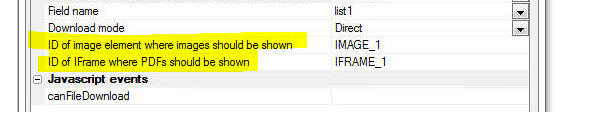
Action Javascript - Image Upload Action - UX and Grid Component - Amazon S3 - The Image Upload action allows you to upload an image and store the image in a field in the table to which the UX or Grid component is bound.
In the case where the image is bound to a character field in the target table you now have the new option of uploading the image to Amazon S3 storage rather than to the Alpha Anywhere server.
Watch Video
- Part 1
Watch Video
- Part 2
Watch Video
- Part 3
Uploading the image to Amazon S3 storage is an extremely efficient solution because it places minimal load on the Alpha server (both for uploading the image and then subsequently displaying the image when the component is run).
When you choose the option to upload to Amazon S3 storage you can either upload the image as:
NOTE: The Image Upload builder has a property called Authenticated read. To use the 'public read' option, the Authenticated read property should not be checked. To use the 'protected read' option, the Authenticated read property should be checked.
When you upload using the 'public read' option, the image is uploaded to Amazon S3 and then the URL to the image is stored in the character field in the database. For example, this URL might look like:
https://s3.amazonaws.com/yourBucketNamehere/imageFileName
This URL can be pasted into a browser address bar and the image from Amazon S3 storage will be shown. In other words, it is not necessary to supply any credentials in order to see the image.
When you upload using the 'protected read' option, the image is uploaded to Amazon S3 as a protected file and the value that is stored in the character field in the database is a special JSON string that contains information about the storage connection string and the object name on Amazon S3. For example:
{cs: 'name of your storage connection string', object: 'name of object on S3', source: 'S3'}
NOTE: When you check the Authenticated read property you must use the Named Storage Connection String option as the Method for specifying Amazon S3 credentials.
When the component is rendered, the Alpha server automatically takes this JSON encoded string and computes a special signed URL that can be used to retrieve the image from S3. This special signed URL expires after a certain amount of time (current set to 240 seconds).
When an image is upload to S3 the work flow is as follows:
When the component is run, if the image field in the current row that is being displayed, contains the special JSON encoded string which is used for protected reads, the Alpha Anywhere server converts this JSON string into a signed Amazon S3 URL that can be used to retrieve the image.
To use the Amazon S3 image upload option in the Image Upload genie, select the Upload target property and set it to AmazonS3 as shown in the image below.
The options for the Upload target property are:
Once you select AmazonS3 as the upload target the Amazon S3 Storage Properties section is displayed, allowing you to set your Amazon S3 properties. For a complete discussion on these properties see the topic that documents the 'File Upload - Amazon S3' action in Action Javascript.
Action Javascript - File Upload Action - UX and Grid Component - Amazon S3 - The File Upload action allows you to upload a file and store the file in a field in the table to which the UX or Grid component is bound.
In the case where the file is bound to a character field in the target table you now have the new option of uploading the file to Amazon S3 storage rather than to the Alpha Anywhere server.
Watch Video - Part 1
Watch Video - Part
2
Uploading the file to Amazon S3 storage is an extremely efficient solution because it places minimal load on the Alpha server when the file is uploaded. In addition, once the file has been uploaded to Amazon S3, when the file needs to be downloaded, there are options to configure the download so that the download takes place directly from Amazon S3 to the client, placing no load on the Alpha server, or in the case of a protected read (see below), placing minimal load on the Alpha server.
When you choose the option to upload to Amazon S3 storage you can either upload the file as:
NOTE: The File Upload builder has a property called Authenticated read. To use the 'public read' option, the Authenticated read property should not be checked. To use the 'protected read' option, the Authenticated read property should be checked.
When you upload using the 'public read' option, the file is uploaded to Amazon S3 and the File Upload action builder gives you an option of storing the URL to the file in the character field, or a special JSON string that contains information about the file's location on S3.
If you choose the URL option, the format of the data stored in the field is:
https://s3.amazonaws.com/yourBucketNamehere/fileName
This URL can be pasted into a browser address bar and the file from Amazon S3 storage will be downloaded, (or shown -- if the browser has a built-in handler for the file MIME type). It is not necessary to supply any credentials in order to retrieve image.
If you choose the JSON option, the format of the data stored in the field is:
{cs: 'name of your storage connection string', object: 'name of object on S3', source: 'S3'}
When you upload using the 'protected read' option, the JSON option is the only option.
NOTE: When you check the Authenticated read property you must use the Named Storage Connection String option as the Method for specifying Amazon S3 credentials.
When a file is upload to S3 the work flow is as follows:
To use the Amazon S3 file upload option in the File Upload genie, select the Upload target property and set it to AmazonS3 as shown in the image below.
The options for the Upload target property are:
Once you select AmazonS3 as the upload target the Amazon S3 Storage Properties section is displayed, allowing you to set your Amazon S3 properties. For a complete discussion on these properties see the topic that documents the 'File Upload - Amazon S3' action in Action Javascript.
Xbasic Modules - Live Preview - If you do a 'Full Preview' when doing Live Preview, Xbasic Modules that are used in your Xbasic code are now automatically published to the Live Preview folder.
Reports - Layout Table Reports - 'Keep Row Together' Property - A new property is available for Layout Table reports. This property will prevent a page break in the middle of the row. This property is useful for 'growable' row content, such as HTML and Linked Reports.

Alpha DAO - ODBC - New SQL Connection Property =
A5ODBCTableList - There is a new property available
on the ODBC connection string dialog labeled 'ODBC Table
List' and identified in the connection string as
A5ODBCTableList.
The default value for A5ODBCTableList is false; meaning
no change in behavior. When set to true, the selected
vendor behavior will continue for most functionality.
The one exception will be listing tables. This will
defer to the ODBC driver as you would see if you used
'ODBC' as your vendor.
This new option provides a fallback for ODBC drivers
giving better control over the list of tables than the
native syntax implementation.
One use case for this option is to limit the number of
tables displayed in AS/400 (DB2 iSeries); which tend to
include an entire library list (like a path in Windows)
and can be quite large. The DB2 iSeries driver has
optional parameters for the library list that can be set
when creating a DSN; and which our connection string is
unaware of. Checking 'ODBC Table List' when connecting
to the AS/400 DB2 iSeries driver through an ODBC DSN
defers to the driver itself to create the table list.
UX Component - List Control - Export Data to Excel or Ascii - You can now export data in a List control to either Excel or to Ascii files.
After the export file has been created you can either download the file to the client, or call an Xbasic function to further process the exported file. A typical use case where you might want to call an Xbasic function to process the exported file would be if you wanted to email the file to a list of recipients, or upload the file to cloud storage, such as Amazon S3 storage.
In the case where the List is based on a SQL query you have the option of:
Consider the case where you have defined a List and have turned on the pagination feature. You might have set the page size to 100 rows. The query that the List is based on might have 1,000 records, but the List will only show 100 rows of data at a time. If the export is based on the 'Data in the List' the export file will have 100 rows in it (because the List only has one page of data - 100 rows - in memory at any time). However, if the export is based on 'Data in the List Query' the export file will have 1,000 rows in it (subject to the Max Records setting which might limit the number of rows in the export file).
To export data in a List you can use Action Javascript to define the code.


In the case where the List is based on a SQL query, the builder shows the 'Export what' property which can be set to 'Data in List query' or 'Data shown in List'.
If the 'Export what' property is set to 'Data in List query' the 'Maximum number of records to export' property is shown.
In the case where the 'Export what' property is set to 'Data shown in List' or if the List is not based on a SQL query (in which case the data that is exported is always the 'Data shown in List'), the 'Customize field sizes and column heading in export file' property is shown.
NOTE: The 'Customize field sizes and column heading in export file' property is only shown if the 'Export format' is Excel.
This property allows you to customize the column headings in the Excel file and control the data types of the data in the excel file.

To customize fields, click the smart field for the 'Customize field sizes and column heading in export file' property.
A build opens up where you can enter a CR-LF delimited list of definition - one for each field you want to customize.
The syntax for the definition can be shown by clicking the 'Show syntax help' hyperlink.
The syntax allows you to specify the data type, size and column heading of each column in the Excel file.
UX Conponent - List Control - List with Detail View - .addTableRows() Method - Insert Rows - The .addTableRows() method now has new options to allow you to add the new row at a specified position in the List (i.e. insert rows), rather than at the end of the List (append rows). For information on the .addTableRows() method, click here.
UX Component - Tab Controls - Method For Selecting Active Pane - Automatic - Nested Tabs - If you had nested tab controls and the outer tab was set to use the 'Automatic' method for selecting the active pane, the watch expression that selected the active pane was not being generated correctly.
UX Component - Android - Scrolling - Fixed an issue where (in certain cases), after editing in a text control in a component, you could no longer scroll a Panel Card to the top or bottom of the Panel Card.
UX Component - onSynchronize Server-side Event - Open UX in Window - Cached Option - If a data-bound UX component was opened in a pop-up window and the allow caching of the child UX feature was turned on, and if the child UX had a long-running onSynchronize event, it was possible for the primary keys in the child UX to get overwritten with the wrong values the second and subsequent times the child UX was opened. If this occurred, any edits to data made in the child UX would have been applied to the wrong record.
UX and Grid Component - Amazon S3 - File and Image Upload - Uploading files to S3 buckets that were not in the default US East region was not working correctly.
UX Component - Container Width 100% - Break - On some browsers, if you have a two consecutive containers, each with a width of 100% and you do not have the break between the containers turned on, you might get strange behavior when you scroll the Panel Card that contains that containers. Turning on the break between the containers resolves the issue. Now, if you set a container's width to 100%, the break in the Container End is automatically turned on.
TabbedUI Component - onLogout Event - Fixed various issues with the onLogout event.
Grid Component - AlphaDAO - Compound Primary Key - If you specified that a Grid had a compound primary key and you selected the columns in the Primary Key in the order in which they should appear in the Primary Key, Alpha Anywhere would define the Primary Key in the order in which the columns existed in the schema. For example, if you specified that the primary key was Lastname, Firstname, but the schema order was Firstname, Lastname, the primary key was defined as Firstname, Lastname. To fix the problem you must edit the existing grid and reselect the primary key columns.
UX Component - {dialog.object}.panelGet() Method - Previously, if you called this method with an invalid Panel name, the method returned the top-most Panel (root Panel). Now, false is returned.
UX Component - List Control - Multiple Layouts - onOrientationChange - If a List has a separate layout for Landscape and Portrait mode, now, when changing orientation, the selected row is remembered when the List layout is changed.
UX Component - Edit Combo - Different Stored and Display Values - Data Source Type Xbasic Function - Previously different display and stored values were only supported if the data source was AlphaDAO. Now, it is supported for Xbasic Functions.
Grid and UX Component - Export to Excel - Text Dictionary Tags - Text dictionary tags in column headings were not honored when exporting to Excel or Ascii files
Grid and UX Component - Export to Excel - SQL Databases - Dates - Dates are now exported using a date format that such that when the Excel file is opened the dates are shown using the regional settings of the machine. Previously the dates used a format that matched the regional settings of the server.
AlphaDAO - Postgres - Geography Searches - Fixed bugs in geography searches. Radius search was failing and case of search field was not properly preserved when the SQL WHERE clause was composed.
copy_folder() Function - Under some circumstances, the copy_folder() function did not copy files.
UX - List Control - Server-side Summary Fields - Under some circumstances the server-side summary fields values were not available in the 'summary' object when the afterServerSideSummaryFieldsComputed event was fired.
Grid Component - Read Only Grid - .getValue() Method - Empty Values - If the .getValue() method was used to read the value in a control that was empty, the method would return ' ' for the value rather than a blank string.
Javascript Library - Date Object - .fromFormat() Method - The Alpha Anywhere Javascript library add a .fromFormat() method to the Javascript date object prototype. Under some circumstances (when using 'yyyy-MM-dd' as the date format string) strings representing date values were not correctly parsed into date objects.
UX Component Builder - Moving Controls Up/Down - Fixed an occasional error that was reported when moving controls up/down in the UX Component builder.
UX Component - onOrientationChange Event - Android - Fixed an issue where the onOrientationChange event did not fire on Android devices after the first orientation change, and then after that, it fired, but reported the wrong orientation. This bug resulted from know bugs with the Android orientation event that cause the screen size to be reported incorrectly when the orientation event is fired. We have worked around this issue by introducing a 300 ms delay after the system reports an orientation change before we read the screen size.
When computing the orientation on Android, the keyboard position is now ignored. Previously on Android if the screen was in (say) portrait mode and the keyboard came up, the onOrientationChange event would fire and report that the screen was in landscape mode. The onOrientationChange would also fire when the keyboard was dismissed. This is because when the keyboard is visible, the screen size that Android reports is affected by the size of the screen. On iOS, the keyboard does not affect the reported screen size.
If, for backward compatibility reasons, you want to use the old method on Android where the keyboard does affect the reported screen size, add this code to the onRenderComplete client-side event:
{dialog.object}._quirks = { keyboardAffectsScreenSizeCalc: true};
Navigation Component - iOS - Navigation component menus did not operate well on iOS devices.
Report Server - Temp File Cleanup - Under certain conditions temporary files created for SQL based reports were not being deleted when the report was completed. These files are now immediately deleted when the report is finished. The report server now uses the temporary file cleanup setting from the parent Application server to remove other old temporary files created by the report server.
UX Component - List with Detail View - Image Capture - Fixed an issue when a UX component had more than one Detail View image capture field on it.
UX Component - Panel Card - Text Area Control - Scrolling - Fixed an issue with scrolling text in a text area control when the control was in a Panel Card.
Excel Import - Determining Field Type of Imported Data - Made a change to Excel import so that more rows of the sheet are examined in order to determined the field type of each column in the Excel sheet.
UX Component - Arguments - Bound to Session Variables - If an argument value was bound to a session variable, the argument value was not getting updated on Ajax callbacks if the value of the session variable was changed after the component was initially rendered. Also, if the session variable was set in the onDialogInitialize or onDialogExecute server-side event, the argument values were not getting reset to the new value of the session variables.
Video Component - Opening from Button on uX Component - Under some circumstances, if you had a button to open a Video component on a UX component, it would fail.
UX Component - PhoneGap - Linked Javascript Files - {HeadSection} Directive - If a UX component linked a Javascript file and specified the special {HeadSection} directive, the linked file was not copied into the PhoneGap project folder.
Web Applications - Web Security - New Password
Encryption - A new password encryption process has
been added that generates a much longer encrypted value
for a password. This is considerably more secure than
previous encryption methods as a password cannot be
decrypted even if a person has the project's password
encryption key.
The security settings genie now has a new property on
the 'User Id
and Password Options' tab under 'Password
Options'. If password encryption is selected, a 'Password
use legacy encryption' option is shown. When
checked, the system will use the legacy encryption
method used in earlier Alpha Anywhere builds for any new
passwords entered. If the option is not checked, any
new passwords entered will use the new password
encryption process.
New security systems will use have the 'Password
use legacy encryption' property un-checked by
default and will use the new encryption process.
Existing security systems will initially have the 'Password
use legacy encryption' property checked and will
continue to use the older encryption methods. The
property can be changed at any time and will only impact
new passwords being
entered. Existing passwords are not converted when the
property is changed. The new process will still use any
existing encryption key that has been defined for the
web security.
This system is compatible with previous Alpha Anywhere
builds as passwords encrypted in previous versions will
still work. It is not necessary to convert any existing
passwords.
However, all existing passwords in a project or
published application can be converted to the new scheme
if desired with a new utility function.
The function 'a5ws_RefreshPasswordEncryptionUtility()'
can be run from the development program interactive
window or the application server interactive window.
When run from the development program, a list of all
projects in the workspace that have security will be
shown (unless there is only one project). When run on
the application server, a list of all applications in
the webroot that have security will be shown (unless
there is only one application).
The function will convert all previously encrypted
passwords in the selected application or project to the
new password encryption. If the optional parameter 'UseLegacy'
is set to True, all passwords will be converted back to
the legacy encryption scheme.
NOTE: Only Alpha Anywhere builds after release build 2614-4409 can recognize passwords that are encrypted with the new method. If you want to roll back to build prior to 2614, you must first run the utility to convert all passwords back to the legacy encryption used in the earlier builds.
If you change the encryption key or add a new key, all
existing passwords will be lost, and will need to be
re-entered.
Recommended Action
UX Component - Tab Controls - Fixed a bug where the UX would fail if the last control in a Tab Pane was hidden and the previous control was any type of container end control.
a5_merge_JSON_into_template() Function - Application Server - The a5_merge_JSON_into_template() function did not work when called from Xbasic code running in the Application Server. It only worked in the Development Server.
Xbasic Code - File System Dictionaries - Fixed a bug when exporting code to a File System Dictionary that was not relative to the Workspace.
UX Component - Arguments - OnSynchronize and OnDialogExecute Events - Under some circumstances argument values shown in the server-side onSynchronize and onDialogExecute events did not reflect the argument bindings that had been defined.
Javascript Code Editor - Code Colorization of Commented Out Code - Code in commented out sections was not always colorized correctly. This was a cosmetic bug - it had no effect on application.
Reports - SQL Data Source - Image File Reference Fields - Fixed a bug where Image File Reference fields were not working correctly.
Grid Component - Row Expander - Scroll Position on Page - If a Grid had been scrolled on the page and then a Row Expander for a row near the bottom of the page was opened and the user clicked on one of the rows in the Grid shown in the Row Expander, the parent Grid would scroll back to the top of the page. This is fixed now, but you can also work around the issue by using a master template in the child Grid and wrapping the master template in a div with a position:relative; style attribute. For example
UX Component - Panel Cards - Tab Control - Hidden Controls - If a UX component used Panel Cards and you had a Tab Control in one of the Panels, if the last control in a given Tab Pane was hidden, the UX would fail. This is now fixed but you can also work around the bug by simply moving the hidden control up so that is is no longer the last entry for the Tab Pane.
UX Component - Pop-up Window - Google Map - As a result of a recent change Google made to Google Maps, the following pattern had stopped working:
When the UX was run the map, which should have been hidden because the window had not yet been shown, should have been hidden, but was not. This is now fixed.
List Control - Image Fields - Missing Images - In some situations, the 'missing image' for a field that did not have an image, was not being displayed.
Grid Component - Geography Search - Radius Search - If you performed a search for all records within a specified radius of a point and you specified that the search result should be sorted by distance from the center point, then if you tried to navigate to the next page of records in the search result you would get an error.
UX Component - List Control - Using a Slider Control to Scroll a List - Say you have a List control and you want to put a Slider control under the List to scroll the List. Assume that the name of the Slider control is 'Slider1'
Step 1 - Put this code in the List's AfterRenderComplete event
var s = {dialog.object}.getControl('Slider1');
var l = {dialog.object}.getControl('{dialog.listId}');
s.min = 0;
s.max = (l._data.length -1);
s.refresh();
This code sets the min/max values on the slider to match the row count of the List.
Step 2 - Put this code in the Slider control's onSlide event:
var l = {dialog.object}.getControl('LIST1');
//the value of the slider while it is being
dragged is in arguments[0].value
var val = arguments[0].value
l.scrollToItem(val);
UX Applications - PhoneGap - iOS Native Date Picker - If your UX component allows editing for date field fields you might want to use the native iOS Date Picker in your app. This is easily done by:
1. Setting the HTML5 type for the textbox where you edit the value to 'date'
2. Setting the display format for the textbox to yyyy-MM-dd
3. If the UX uses a List control with a Detail View the client-side display format for the date field can be set in the List Control, Fields tab.
UX Component - List with Detail View - Searching while Offline - When you use the List Detail View genie to create a List control with an associated Detail View and Search part, the genie inserts code like this in the Search button's click event:
{dialog.object}.getControl('name_of_the_list').searchList({searchMode :
'auto'});
The 'auto' in the .searchList() method means:
1. if the List is not dirty then do a server-side search
2. if the List is dirty do a client-side search (because doing a
server-side search would repopulate the List and blow away your unsynchronized
edits)
If your List is not dirty and you do not have a connection, the command will do a server-side search (because the List is not dirty), but because there is no connection, the search will obviouslyfail.
Once approach is to test for connectivity before doing the search, and if there is no connection, then automatically switch to a client-side search. For example, you can change the code in the button's click event to:
var flag = {dialog.Object}._getOnlineStatus();
if(flag) {
// device is connected - ok to so a server-side search
{dialog.object}.getControl('name_of_the_list').searchList({searchMode :
'auto'});
} else {
// device is not connected - must do a client-side search
{dialog.object}.getControl('name_of_the_list').searchList({searchMode : 'clientSide'});
}
UX and Grid Component - Tab Controls - Right to Left - For Hebrew and Arabic applications you might want the Tab buttons on a tab control to be displayed right to left, rather than the standard left to right format.
To do this, you can add the following CSS markup to the Local CSS property in the component.
.{dialog.style}TabTButton, .{dialog.style}TabTButtonSelected, .{dialog.style}TabBButton, .{dialog.style}TabBButtonSelected {
float: right;
}
Application Server - Silent Install - The Alpha Anywhere server installation program can be run in 'silent mode' by using the /S command line switch.
For example:
a5v12_AppServer.exe /s
However, the first time you install the Alpha Anywhere server on a machine you will need to specify your license key. Since you are doing a silent install, you cannot enter the license key in the Application Server UI as you normally would do.
You can add the license key to a special registry key and Alpha Anywhere will automatically install the license if it is found in this registry location.
The registry key in which you must install your license number varies depending on whether you are running on a 32 bit or 64 bit operating system.
The following command line shows how you can add your license number to the appropriate registry key
For 64 bit operating systems
reg add "HKLM\SOFTWARE\Alpha Software\Alpha Anywhere Application Server
12.0\httpd" /v ActivateLicense /t REG_SZ /d "yourlicensenumber"
For 32 bit operationg systems
reg add "HKLM\SOFTWARE\Wow6432Node\Alpha Software\Alpha Anywhere
Application Server 12.0\httpd" /v ActivateLicense /t REG_SZ /d "yourlicensenumber"
The commands to add the registry key should be executed before you
run the Alpha Anywhere install.
You can also specify the install path and the install group when you run the installer by setting Environment variables before you run the installer.
The installer reads the following environment variables
For example, from the Windows command prompt:
SET A5_MAINDIR=c:\AlphaAnywhere\Server
PDF Report Print on Development Server But Not Production Server - Occasionally we here from developers who report that their PDF reports are working fine on their Development server but when they deploy their application to their production server, the PDF reports do not print. The error that is report is:
Report did not print. Error reported was:
The error indicates that the Amyuni Printer Driver (also called the 'Alpha Five Printer') did not install properly on your server machine when the Alpha Anywhere Application Server was installed.
Here are some things you can check to resolve the problem:
That indicates the print driver did not install. This can happen for a couple reasons.
The first issue can be checked and corrected fairly easily. Log onto
the server machine with administrator rights. Open the "Devices and
Printers" from the Windows control panel and see if the driver for
"AlphaFivePrinterV4p5" is installed. If it is, then open the "Printer
Properties" and verify the printer is assigned to a port. Normally, it
is assigned to a NUL port.
If the printer isn't listed, open Windows Explorer or My Computer, and
look for the folder that contains the Alpha Anywhere Application Server
program. It would normally be at:
C:\Program Files (x86)\a5V12 ApplicationServer
Find the subfolder named "AmyuniV4" and find the file "InstallAmyuniPrinters.exe". Right
click on the file and select to "Run as Administrator". A window should
open showing the progress. If it fails to install, check any error
message. If it fails, the last issue may be the problem as Windows may
not install any print driver if the spooler is not running.
If the driver is installed, or installs correctly, then the problem may
be is the user rights. If running the Application Server as a service
with srvany, or under AlwaysUp, make sure the user login is not the
"Local System Account". That account does not normally have printing
privileges. Is is best to run the program under a user with full
administrator rights
UX Components - Panel Cards - Child Components that Open in a Parent Component Panel -- A common pattern when building mobile applications using the UX component is to have a master component with one or more Panel Cards and then have buttons that open child components in a Panel Card in the master component.
When utilizing this pattern be sure to turn off the 'Body can scroll' property for the target Panel (i.e. the Panel in which the child UX will be rendered).
| UX Component | Hiding/Showing/Enabling/Disabling Buttons in a Button List Control |
You can use Javascript to dynamically hide,
show, enable and disable buttons in a Button
List control on a UX component. You can also
dynamically add and remove buttons from the
Button List. In this video we show the Javascript to dynamically alter the Button List. Watch Video Download Component Date added: 2015-01-30 |
Web Applications - Publishing Using FTP - CURL - When you publish your web application to an ISP, your publishing profile will typically specify that the method for publishing the files is FTP.
You then have the option of using either the built-in FTP features in Alpha Anywhere, or using an external FTP client.
If you choose to use the built-in FTP features in Alpha Anywhere, you now have a new option of using CURL FTP. Unlike the standard FTP feature in Alpha Anywhere (which uses Active mode), the CURL FTP option supports passive mode. Passive move is more reliable as is has enhanced error checking and error messages.
NOTE: Some FTP servers require passive mode and will not support the standard built-in Alpha Anywhere FTP features, which use active mode. In this case you must use the CURL FTP option.
To select the CURL option, check the 'FTP Publish with CURL' property in the Profile Editor dialog.
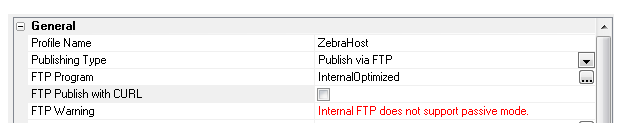
Passive mode FTP is slower than active mode FTP, especially when uploading a lot of files, rather than one large zipped file. Therefore it is recommended that you only use the CURL FTP option when using the 'InternalOptimized' option (which zips all of the files to be published into a single zip file).
UX Component - List Control - Disconnected Data Entry - Preventing Duplicate Records when Connectivity is Lost - When you are working with disconnected data in a List control there is a small possibility of a synchronization request being submitted to the server more than once - resulting in the possibility of duplicate records in the database.
To understand how this might happen, consider what happens when the user clicks the 'Synchronize' button on a device to synchronize edits that were made while offline.
Obviously, in order for the server to receive the synchronization request, the user must have a connection. But suppose that AFTER the user sends a synchronization request to the server, but BEFORE the server completes the work and can send a response back to the client, the client looses connectivity.
The server will continue processing the updates to the server and will do all of the synchronization requests contained in the package sent from the client. The server does not know that the client is now offline and so, after it completes all of the work, it will send a response to client indicating which rows were successfully synchronized. However, since the client is now offline, the client will not receive this message from the server. This means that all of the rows on the client that were edited are still marked as 'dirty' (even though the server has successfully applied all of the edits).
Now assume that the client gets its connection back and the user clicks the 'Synchronize' button again. The client will send a JSON package to the server and this package will include all of the updates that were previously sent to the server.
In order to protect against this possibility, a special server-side log can be used to prevent synchronization commands from being executed more than once.
In order to turn on the server-side synchronization log, edit the List control and on the Detail View pane, check the Use server-side synchronization log table property.
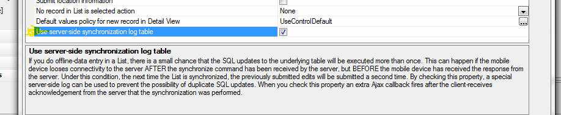
Before you can check this property however, you must first define the setting for the Synchronization Log Table. To define these settings, click the Project Properties button when the Web Projects Control Panel has focus.
Scroll to the Offline Data Synchronization Log Table Settings section and set the properties for the table. You can map this table to an existing table in your SQL database or Alpha Anywhere can create a new table for you with the correct table structure.
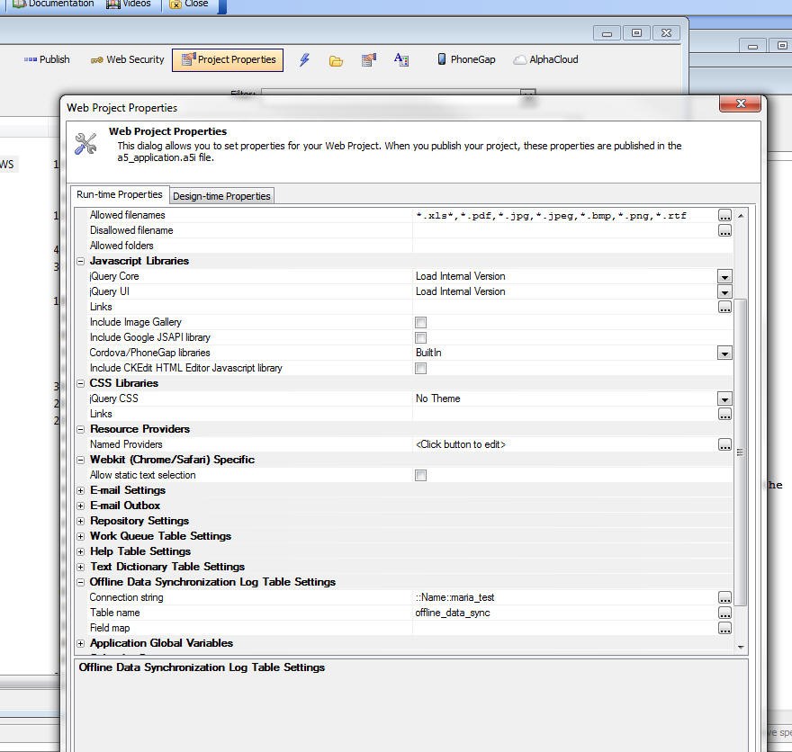
UX Component - List Control - Dynamic Images - Client-Side - Fixed an issue with dynamic, client-side images in a List control. Image did not display correctly after data in the List had been edited.
Grid Component - Linked Grids - Detail View - New Record - If a child Grid was linked to a parent Grid, when going to the new record in the child Grid's Detail View, the linking fields in the Detail View were not filled in with the linking values as they should have been.
Reports - Native SQL - Dynamic Filter at Runtime - If a report was based on native SQL, rather than portable SQL, then if you tried to apply a dynamic run-time SQL filter to the report, the dynamic filter was ignored. Now, the dynamic filter will be added to the native SQL query for the report. However, because this may be combining a native SQL query with a portable dynamic filter, there is no guarantee that the resulting SQL statement will execute correctly.
Video Finder - A bug was introduced in the previous update that prevented the Video Finder from opening.
UX Component - Signature Capture - Build 2682 introduced a bug when saving data from a signature capture control.
Grid Component - Linked Grids - Up/Down Keys - In some cases when using the up/down keyboard navigation keys to navigate in the child grid, the keystrokes were being handled by the parent Grid.
| UX Component | Dynamically Re-populate the Choices in an Edit-Combo using Javascript |
The choices shown in an edit-combo can be
dynamically repopulated at run-time using
Javascript. Watch Video Date added: 2014-12-21 |
| UX Component | Constraining an UX that has Panels to an Element Rather Than Entire Window |
When a UX component that uses Panels is
rendered, by default it consumes the entire
window (only true if UX uses Panels). That means
that if you have created an .a5w page to render
the component and placed HTML markup on the page
that you would like to be rendered in addition
to the UX component, that markup will be
overwritten by the UX. An advanced property of
the UX now allows you to specify that the UX
should be constrained to an element, rather than
the entire window. In this video we show how an .a5w page can be defined with a DIV to contain the UX and how the UX can be configured so that it is constrained to this DIV element. (Requires build 4411 or above). Watch Video Download Component Date added: 2014-12-22 |
Publishing Web Applications - Publishing Profiles - Lock Profile - A new property has been added to each publishing profile. The 'Lock' property allows you to lock a profile to prevent accidental publishing to a deployed application.
The 'Lock' property can be set to blank (not locked), 'Locked' or 'Locked with password'.
At publish time, if you select a profile that has been locked, the publish will be aborted. If you select a profile that is 'locked with password', you will be prompted for a password before publish continues.
UX Component - List Control - List Builder - Resizeable - The List builder dialog window is now resizeable.
ui_bitmap_info_get() Function - Image Type - Now can return the image type of image binary data.
Syntax:
c type = ui_bitmap_info_get(b blobImageData,"T")
Example
dim b as b
b = file.to_blob("c:\images\image1.jpg")
? ui_bitmap_info_get(b,"T")
= "JPG"
UX Component - List Control - Numeric Fields - Client-side Display Format - The List Builder now allows you to specify a client-side display format for numeric fields. Previously you had to define a client side display format by directly editing the template for the field. This method is easier than editing the template.
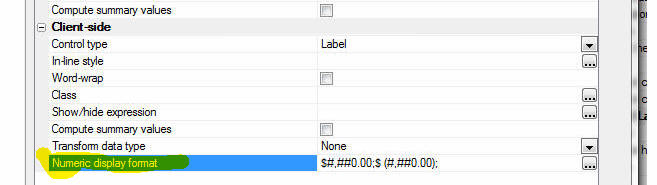
AlphaDAO - MS SQL Server - DateTimeOffset Field Type - Support has been added for the SQL Server DateTimeOffset field type.
The Alpha Anywhere support for the SQL Server DateTimeOffset type works as follows:
UX Component - Web Security Server-Side Action Scripts - The web security action scripts in a UX component now allow the password to be optional in the variable mapping even if the security setting require a password. The password is optional if the component can only edit an existing security record. The password mapping is required if the component can add a new user security record. A warning message will appear when the action script is saved if a password variable is not specified.
Xbasic Code Editors - JSON Strings - Real-time Validation - If you use the specify <<%json%... %json% delimiters to enter a long string of JSON data, the Xbasic editor will perform real-time validation on the JSON data.
For example, in the image below, the JSON has an error because of the trailing comma after the last property (age: 23). Notice the squiggly red line indicating the error. If you click on the error indicator you will see the error message.
Reports - Free-form Reports - Text Dictionary Tags
- You can now use text dictionary tags
(
For example, you can set the label of a column to
Next, turn on the text dictionary feature in your web application by going to the Web Projects Properties dialog when the Web Projects Control Panel has focus and specify the connection string and table name for your text dictionary.
To define entries in the Text Dictionary select the 'Text dictionary...' menu item from the 'Reports', 'Label' or 'Letter' menu while you are editing the report, label or letter.
json_to_xml() Function - ATOM Format - The json_to_xml() function can now generate XML using the "atom" format:
For example:
js = <<%str%
{
"OrderId":10248,
"ProductID":11,
"UnitPrice":14,
"Quantity":12,
"Discount":0
}
%str%
dim xml as c
xml = json_to_xml(js)
dim format as c
format = <<%str%
{ "format" : "atom"}
%str%
dim xml as c = json_to_xml(js,"",format)
xmlns:d="http://schemas.microsoft.com/ado/2007/08/dataservices">
UX Component - Panels - Render Position - By default, when a UX component that has Panels is rendered, it consumes the entire window. In certain cases you might want to constrain the UX to a particular element.
The 'Render position type for UX component with Panels' property allows you to constrain a UX with Panels to a specified element. The default for this property is 'window'

Dynamic Connection Strings - Field Validation - Cross-file Validation Rule - Was not honoring dynamic connection strings.
UX Component - PhoneGap - Windows Phone 8.1 - Ajax callbacks in PhoneGap applications on Windows Phone 8.1 were not working.
AlphaDAO - SQL Server - Varchar fields - Memory Leak - Fixed a memory leak when executing update statements that used arguments.
UX Component - List Control - Detail View - Image Capture using Camera - PhoneGap - Fixed an issue where the image was lost when the data was synchronized. This issue only occurred in PhoneGap applications.
UX Component - List Control - No Records in List Message - List Virtualization - The 'no records in list' message did not display if List Virtualization was turned on.
Security Framework - Editing an Existing User - Under some circumstances you would get an error when trying to edit the properties of an existing user account.
UX Component - Client-side onSynchronize Event - Changed the order in which this event is fired. It is now fired after the code that sets argument values in the stateInfo object has executed.
UX Component - Chart Control - Javascript Events - If you executed an event (say a click on a pie chart slice) and the data that was passed to the event handler had single quotes in it, you would get a Javascript error.
UX Component - Tab Controls - Panels - Fixed a bug rendering nested Tab controls when the UX used Panels.
Web Applications - Security Framework - Alternate Login - Under certain conditions, when a new user was added a duplicate record in the security tables was being created.
UX Component - Buttons - Label Position - If a button (or other non-data control) had its label position set to some value other than 'None' the control did not render correctly. This bug was introduced in the previous update.
Grid Component - Edit-combo - v.hasStoredValue Error Message - If a Grid that contained an edit-combo was built using an older version of Alpha Anywhere and then run using Version 3.1 you would get an error stating that the v.hasStoredValue property was not found. The solution was to edit the edit-combo and then re-save it. Now, it is no longer necessary to edit edit-comb control and re-save it.
PhoneGap Build - Unable to Log-in to PhoneGap Build from the PhoneGap Genie - As a result of a change in the ca-cert.pem certificate file (in the CARoot folder in the Alpha Anywhere executable) that was made in build 4410, you were not able to log into PhoneGap. This update installs a new ca-cert.pem file which fixes the problem.
Chrome Browsers - Making Text Selectable - By default when running a component (Grid or UX) in Chrome, the static text (not the text in textarea or textbox) is not selectable. Alpha Anywhere does this automatically so that when a component is run on a mobile device, you do not unintentionally select text when dragging on different parts of the screen.
However, in a desktop application you might want the static text to be selectable. Here is how you can do this for a Grid:
Specify that the Grid has a master template. Then define a custom template using this HTML markup:
In the case of a UX component, add a Container control around any controls that you want to be selectable and then set the in-line style of the container to:
-webkit-user-select: text;
Xbasic - OLE Automation - Implementing Callback Event Handlers in Xbasic - This topic discusses how you can write Xbasic code to handle callback events when running OLE automation code.
For example, consider the following Xbasic code that uses the ADODB.CONNECTION object to connect to SQL server and then execute a SQL command.
dim adow as ADODBOleWrapper
dim conn as p = ole.create("adodb.connection" )
conn.Open("driver={SQL Server};server=LOCALHOST;database=Northwind")
conn.Execute("select * from customers")
conn.Close()
When this code executes, it will raise these events:
In order to handle these events with Xbasic code you need to pass in an optional second argument to the ole.create() method.
First, to get the function prototype for the event handlers you can use this method:
dim events as c
events = ole.Class_Event_Prototypes("
showvar(events)
Once you have the function prototypes, you can create an Xbasic class using this pattern:
define class ADODBOleWrapper
'Your class code goes here
implementation EventHandler as OLE::A5Events
'your Xbasic code to handle the
callback functions goes here
end implementation
end class
Note that the class has a special 'implementation' section where the OLE callback handlers are defined.
For example, let's create a real class that writes the name of the event that was raised to a property of the class (called 'traceEvents').
define class ADODBOleWrapper
dim traceEvents as c
function TraceEvent as v(event as c)
self.traceEvents = self.traceEvents + event
end function
implementation EventHandler as OLE::A5Events
function begintranscomplete as v(TransactionLevel as N,pError as
a,adStatus as a,pConnection as p)
self.TraceEvent("begintranscomplete "+TransactionLevel+crlf())
end function
function committranscomplete as v(pError as a,adStatus as a,pConnection
as p)
self.TraceEvent("committranscomplete "+crlf())
end function
function connectcomplete as v(pError as a,adStatus as a,pConnection as
p)
self.TraceEvent("connectcomplete "+crlf())
end function
function disconnect as v(adStatus as a,pConnection as p)
self.TraceEvent("disconnect "+crlf())
end function
function executecomplete as v(RecordsAffected as N,pError as a,adStatus
as a,pCommand as a,pRecordset as p,pConnection as p)
self.TraceEvent("executecomplete "+crlf())
end function
function infomessage as v(pError as a,adStatus as a,pConnection as p)
self.TraceEvent("infomessage "+crlf())
end function
function rollbacktranscomplete as v(pError as a,adStatus as
a,pConnection as p)
self.TraceEvent("rollbacktranscomplete "+crlf())
end function
function willconnect as v(ConnectionString as C,UserID as C,Password as
C,Options as a,adStatus as a,pConnection as p)
self.TraceEvent("willconnect "+crlf())
end function
function willexecute as v(Source as C,CursorType as a,LockType as
a,Options as a,adStatus as a,pCommand as p,pRecordset as p,pConnection
as p)
self.TraceEvent("willexecute "+crlf())
end function
end implementation
end class
As you can see, this class defined a method called TraceEvent() which writes to the 'traceEvents' property of the class instance.
In the Implementation section, the event handlers are all defined and they call the TraceEvent() method (using self.TraceEvent() ) to write the name of the event that was just fired to 'traceEvents' property of the class instance.
Now, putting this all together, we can rewrite the OLE automation code as follows:
'DIM an instance of the class
dim adow as ADODBOleWrapper
'pass the class into the ole.create() call
dim conn as p = ole.create("adodb.connection" , adow )
conn.Open("driver={SQL Server};server=LOCALHOST;database=Northwind")
conn.Execute("select * from customers")
conn.Close()
'show the value of the class instance 'traceEvents'
property
showvar( "Events " + crlf() +adow.traceEvents )
This next example is a different take on the previous example in which .open(), .execute() and .close() are implemented as methods of the class instance.
define class ADODBOleWrapper2
dim conn as p
dim traceEvents as c
function TraceEvent as v(event as c)
self.traceEvents = self.traceEvents + event
end function
implementation EventHandler as OLE::A5Events
function begintranscomplete as v(TransactionLevel as N,pError as
a,adStatus as a,pConnection as p)
self.TraceEvent("begintranscomplete "+TransactionLevel+crlf())
end function
function committranscomplete as v(pError as a,adStatus as a,pConnection
as p)
self.TraceEvent("committranscomplete "+crlf())
end function
function connectcomplete as v(pError as a,adStatus as a,pConnection as
p)
self.TraceEvent("connectcomplete "+crlf())
end function
function disconnect as v(adStatus as a,pConnection as p)
self.TraceEvent("disconnect "+crlf())
end function
function executecomplete as v(RecordsAffected as N,pError as a,adStatus
as a,pCommand as a,pRecordset as p,pConnection as p)
self.TraceEvent("executecomplete "+crlf())
end function
function infomessage as v(pError as a,adStatus as a,pConnection as p)
self.TraceEvent("infomessage "+crlf())
end function
function rollbacktranscomplete as v(pError as a,adStatus as
a,pConnection as p)
self.TraceEvent("rollbacktranscomplete "+crlf())
end function
function willconnect as v(ConnectionString as C,UserID as C,Password as
C,Options as a,adStatus as a,pConnection as p)
self.TraceEvent("willconnect "+crlf())
end function
function willexecute as v(Source as C,CursorType as a,LockType as
a,Options as a,adStatus as a,pCommand as p,pRecordset as p,pConnection
as p)
self.TraceEvent("willexecute "+crlf())
end function
function ping as v()
self.TraceEvent("PING "+crlf())
end function
end implementation
function adodbolewrapper2 as v ()
self.conn = ole.create("adodb.connection",self)
end function
function Open as v( connectionString as c )
self.conn.Open(connectionString)
end function
function Execute as v( sqlStatement as c )
self.conn.Execute(sqlStatement)
end function
function Close as v( )
self.conn.Close()
end function
end class
To test this example:
'dim an instance of the class. this class has a constructor function
'which will execute when the class is dimmed
dim adow as ADODBOleWrapper2
'now call the methods of the class instance
adow.open("driver={SQL Server};server=localhost;database=Northwind")
adow.execute("select * from customers")
adow.close()
showvar( "Events "+crlf() + adow.traceEvents )
| UX Component | Tutorial - Uploading Files using the File Upload - User Defined Action |
There are two different actions in Action
Javascript for uploading files from a UX
component. If the UX component has been 'data
bound' then the 'File Upload' action is
appropriate. But if the UX component is not data
bound, or if you want to write your own handler
for the binary data that was uploaded to the
server, the 'File Upload - User Defined' action
should be used. When you use the File Upload - User Defined action, an Xbasic function that you define is called after the file (or multiple files if you choose to allow multiple files to be uploaded) has been uploaded. Your Xbasic function is free to process the uploaded data in any way. In this video we show how the File Upload - User Defined action can be used to save the uploaded data to a file on the server. Watch Video - Part 1 Watch Video - Part 2 Download Component Date Added: 2014-10-02 |
| UX Component | Tutorial - Uploading Files and Images to a Data Bound UX Component |
When you upload a file or an image to a data
bound UX component, the assumption is that you
want to store the uploaded image or file in the
record to which the UX component is bound. You
can either store the binary data that was
uploaded in a field in the record, or you can
save the binary data that was uploaded into a
file on the server and then store the filename
of the file in a character field in the record. In this video we show how image upload and file upload to a data bound UX component can be done. Images and files are uploaded to both binary and character fields in the record. Introduction Watch Video - Part 1 File Upload to a Character Field Watch Video - Part 2 Watch Video - Part 3 Watch Video - Part 4 File Upload to a Binary Field Watch Video - Part 5 Watch Video - Part 6 Image Upload to a Character Field Watch Video - Part 7 Watch Video - Part 8 Image Upload to a Binary Field Watch Video - Part 9 Download Component (Note: The zip file also contains the MySQL SQL script to create the table that the UX component is based on.) Date Added: 2014-10-02 |
| UX Component | Using the CSS Calc() Function Instead of Flex Layout Containers to Create Dynamically Sized Controls |
A common requirement when building UX components
is to create a row of controls where some of the
controls are fixed size and the other controls
dynamically contract or expand to consume the
remaining space on the row. Typically, the Flex Layout container is used to achieve this design goal, but the built-in CSS calc() function is an alternative (and simpler) way for achieving the same result. The drawback of the calc() function is that not all versions of the Chrome browser on older Android devices support the CSS calc() function. In this video we contrast the use of Flex Layout containers and the CSS calc() function. Watch Video Download Components Date Added: 2014-10-12 |
| UX Component | Getting the Display Value in a DropdownBox Control |
When you define the choices in a Dropdownbox
Control you can specify both the display value
and the stored value for each choice in the
control. When you read the value from the
control (using the .getValue() method), the
stored value is returned. In some cases you
might want to read the 'display' value. In this video we show how you can write a small amount of Javascript to read the dropdownbox control's display value. Watch Video Download Component Date Added: 2014-10-13 |
| UX Component | Intro to JSON |
JSON is ubiquitous in Web application
development. Having a good understanding of JSON
is very helpful in building web applications. In
this series of videos we introduce you to
various ways in which you can work with JSON on
the server side (using Xbasic) and on the
client-side (using Javascript). We show how JSON is the ideal way for sending complex data from the client to the server, or from the server to the client (in an AJAX callback). Using Xbasic on the server-side to work with JSON Watch Video - Part 1 Watch Video - Part 2 Watch Video - Part 3 Using Javascript on the client-side to work with JSON Watch Video - Part 1 Watch Video - Part 2 Using JSON to send complex data to the server from the client Watch Video - Part 1 Watch Video - Part 2 Using JSON to send complex data from the server to the client Watch Video - Part 1 Watch Video - Part 2 Watch Video - Part 3 Advanced example - sending complex data from the server and formatting the data for presentation on the client side using a template Watch Video - Part 1 Watch Video - Part 2 Watch Video - Part 3 Watch Video - Part 4 Download component Date Added: 2014-10-15 |
| UX Component - Disconnected Applications | Showing Which Fields Have Been Edited |
When you have a List with an associated Detail
View and you edit the data in one of the rows of
the List, an icon (whose appearance you can
customize) is shown in the List row to indicate
that the List row has data that has been edited,
but not yet synchronized. In this video we show how you can indicate the dirty fields in a List row that has been edited. You can specify a custom CSS class to apply to the Detail View control if the field value has been edited. Watch Video Download Component Date Added: 2014-10-18 |
| UX Component - Mobile Applications | Panel Navigator with a Button Bar To Select Active Panel - Quick Start Templates |
A common design pattern when building mobile
applications is to use a button bar in the
footer of the screen to select the active 'page'
in the application. The selected button should
be highlighted so the user knows which button
corresponds with the current page. In this video we show how you can use a built-in template to get a quick start on your application if you want to use this pattern. We explain what's going on behind the scenes so that you understand how the component works. Watch Video - Part 1 Watch Video - Part 2 In the next video we show how the component can be extended to allow for more navigation buttons that can been seen at once on a phone. The user can drag scroll horizontally on the button bar to see the other buttons. Watch Video Date Added: 2014-10-28 |
| UX Component | Video Player Control |
The UX Component now includes a Video Player
control. Previously, to include videos in the UX
component, you created a Video Player component
and embedded the Video Player component in
a UX control. Using the new Video Player control
is much easier.
In addition, there are new actions in Action
Javascript that allow you to perform actions on
the Video Player control. Watch Video Download Component Date Added: 2014-11-15 |
| UX Component | Embedded Components - Delay Render - Techniques |
(This video is aimed at advanced developers.) A
common pattern in large applications is to
design a UX component that has several embedded
components. The embedded components are
typically on different Panel Cards that are all
wrapped in a Panel Navigator. The embedded
components all have their 'Delay render till
visible' property set to true so that the
initial load of the parent UX is not slowed
down. However, while the user is working on PanelCard 1 (for example), you might want to fire off a Ajax callback to load PanelCard2's embedded components in the background so that when the user does eventually navigate to PanelCard 2, the embedded component has already been loaded and the user does not perceive any delay. This video shows how this can be done. Watch Video Download Components Date Added: 2014-11-19 |
| UX Component | Using a 'Slider' to Display the Value in a Numeric Field |
In a List control that display numeric values,
instead of displaying the number, you might
instead want to use a 'slider' to represent the
numeric values. This video shows how the template for the numeric field can be easily modified to display the number using a 'slider'. Watch Video Download Component Date Added: 2014-11-19 |
| UX Component - List Control | Displaying a Google Map in Each Row of a List |
In this video we show how you can add a Google
Map to each row in a List to display the
position of a point in the current row on a map. Watch Video Download Component Date Added: 2014-11-19 |
| UX Component | Printing a Report Using Same Filter/Order as a List Control |
A common pattern in Grids is to have a button on
a Grid that prints a report showing the same
records that are in the current Grid query. Now
you can use a similar pattern for List controls
on a UX component. In this video we show a UX with a List control. The List control is based on a SQL query and the UX has a button that allows you to perform a server-side filter on the List (for example, search for all records in France or Denmark). The UX has a button that prints a report that is based on the same SQL tables as the List and automatically uses the same filter for the report as the List. Watch Video Date added: 2014-11-27 |
| Miscellaneous | Javascript File Editor |
When you edit a Javascript File from the Web
Projects Control Panel, the editor used to edit
the file was previously a modal editor. It has
now been rewritten to use a MDI window, which
means you can leave the editor open while you
work on other files. Also, the editor has an
integrated Interactive Window that allows you to
test Javascript code. Watch Video Date added: 2014-11-30 |
| UX and Grid Component | Xbasic Function Library |
When a component makes an Ajax callback, an
Xbasic function that you define handles the
callback. This function is typically defined
within the component (in the Xbasic Function
Declarations section). This means that the
function definition cannot be used in some other
component. By defining the function in an Xbasic Function Library that is linked into the component, you can now easily define Xbasic functions that can be shared among multiple components. NOTE: Xbasic Function Libraries are an alternative to compiling your functions into an .aex file. Watch Video Date added: 2014-11-30 |
| Miscellaneous | Xbasic Modules |
An Xbasic Module is a file that contains Xbasic
function and class definitions. The code defined
in a module can be made available to other
Xbasic code by using the require() function. This video demonstrates how Xbasic Modules can be used. Watch Video Date added: 2014-11-30 |
| UX Component - List Control | Image Capture Using the Camera in the List Detail View - Disconnected Applications |
A common requirement in a mobile application is
to be able to capture images using the camera on
the device. It is also a common requirement that
the application work when it is disconnected
(i.e. there is no internet connection
available). In this video we show how to build a disconnected mobile application that supports image capture. Watch Video - Part 1 Watch Video - Part 2 Watch Video - Part 3 Watch Video - Part 4 Watch Video - Converting the app to a mobile layout - Part 1 Watch Video - Converting the app to a mobile layout - Part 2 Download Component Date added: 2014-12-18 |
WorldPay API - A new XBasic class called WorldPayAPI::SoapActions has been added to support the WorldPay Online Commerce Suite. All of the documented methods of the WorldPay SOAP API are included in this class.
For more information on the WorldPayAPI Xbasic class, click here.
json_to_xml() Function - Convert JSON to XML - Takes a string of JSON data and converts it to XML.
Syntax
c xml = json_to_xml(c json, c attribute)
Example
dim json as c
json = <<%txt%
{
"firstname" : "john" ,
"lastname" : "public" ,
"num" : [1,2,3] ,
"flag" : true ,
"place" : { "state" : "Texas"}
}
%txt%
dim xml as c
xml = json_to_xml(json,"person")
The resulting XML string looks like this:
UX Component - List - Detail View - Client-side Events - 'hasClientSideValidationErrors' - A new client-side event has been added. the 'hasClientSideValidationErrors' event fires when the user tries to save Detail View edits back to the List and one or more controls in the Detail View has a client-side validation error.
UX Component - Action Javascript - Camera - A new action has been added to Action Javascript to allow you to capture an image using the camera on a mobile device.
The 'Image Capture - Camera/Photo Library' action allows you to specify some Javascript code to execute once the image has been acquired. Your Javascript code can reference:
NOTE Contrast this action with the 'Image Capture for List-Detail View - Camera/Photo Library' which also allows you to capture an image using the camera. This action however, is specifically for an Image control in a List View with a Detail View. The 'Image Capture - Camera/Photo Library' action simply returns the image data (base 64 encoded) and the native file URL (in the case where PhoneGap is being used). It is up to the developer to decide what to do with the base64 encoded data or file URL.

UX Component - Detail View - New Records - Default Values - When you define a List control with a Detail View you can specify Javascript code to return the default value for a field when a new record is created in the Detail View. A new option has been added to the List builder to allow you to automatically use the default value that was defined for the control to which the List field is bound for new record default values.
For example, assume:
When you click the New Record button in the List Detail View, the default value for the FIRSTNAME control (i.e. the control to which the FNAME List field is bound) will be set to 'Sam' because there was an explicit Default value rule set in the List builder. The default value of 'Sam' will be used even though the FIRSTNAME control defined a default value of 'Fred'.
However, assume that you now edit the List and delete the Default value Javascript code for the FNAME field. Now, when you create a new Detail View record, the default value shown in the FIRSTNAME control is governed by the setting of the 'Default values policy for new record in Detail View' property in the List builder.
This property can either be set to:
UX Component - List Control - Detail View - Image Capture using Camera/HTML5 - Disconnected Applications - You can now build mobile, disconnected applications, that include the ability to capture images using the camera on the device. When running on a device that does not have a camera, the image to use can be selected from the file system.
To create a button to capture a new image for an Image control in a List Detail View use the 'Image Capture for List-Detail View - Camera/Photo Library' action.
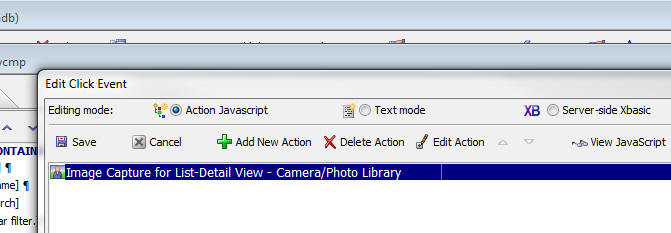
For more information on capturing images in the List Detail View, click here and search for 'camera'.
Application Server - Report Server - HTML Reports - By default, the Report Server is only used for PDF reports. Now, you have the option of offloading your HTML reports to the report server.
To turn this feature on, go to the Project Properties dialog and check the 'Use for HTML Reports' property.

urlencode() Function - New Parameters to Make Signing Requests when Using oAuth Easier - The urlencode() function now takes optional arguments that are useful when working with APIs that require oAuth authentication. In many of these APIs, the request body must be specially encoded.
The flags that you can use are:
Examples:
? urlencode("text-value=foo bar;")
= "text%2dvalue%3dfoo%20bar%3b"
? urlencode("text-value=foo bar;","u")
= "text%2Dvalue%3Dfoo%20bar%3B"
? urlencode("text-value=foo bar;","s")
= "text%2dvalue%3dfoo bar%3b"
? urlencode("text-value=foo bar;","r")
= "text-value%3dfoo%20bar%3b"
? urlencode("text-value=foo bar;","o")
= "text-value%3Dfoo bar%3B"
rsa_hash() function - Generates a RSA digital signature of the data using the key and SHA1, or any other signing method supported by the .NET framework.
Syntax
c result = rsa_hash(c data, C key [, c algorithm])
Example
dim parameters as b = "name=some url parameters"
' Pull the RSA private key out of the file
dim pemFile as c = file.to_string("c:\
pemFile = word(pemFile,2,"-----BEGIN RSA PRIVATE
KEY-----")
pemFile = word(pemFile,1,"-----END RSA PRIVATE
KEY-----")
pemFile = alltrim(pemFile)
? rsa_hash(parameters,pemFile)
=
"EA1c/M2q9QhxTE/EgV5gljzAzeg8Xhj+0DY/7qzF4RXskp5g6ZDimRGJu1f........."
UX Component - {dialog.object}.activateControlContainer(UXControl) Method - Previously this method would activate the Tab or Accordion pane in which the specified UX Control had been placed. Now, the method will also activate the PanelCard in which the control has been placed.
UX Component - List Control - Detail View - No Record in List is Selected Action - A new property has been added to the List control to allows you to specify the action if no record is currently selected (which can happen if the List's 'Allow null selection' property is not checked).
The options are:
Note: If you have not defined any default values for fields then there is little difference between the 'None' option and the 'NewRecord' option because in both cases the Detail View will be enabled and will not have any default values filled in. If the user edits data in the Detail View and then clicks the Save button, a new row will be added to the List.
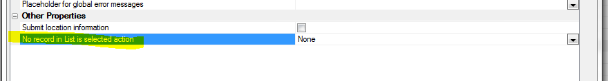
Grid Component - Query By Example Menus - Internationalization - The menus that are shown in Query by Example can now be internationalized.

A new property in the Query-by-Example Row section
allows you to specify if the entries in the menu should
be wrapped in Language Tags (

Once you have wrapped the menu strings in tags, you can go to the Language definitions or Text dictionary properties section in the Grid builder to define the replacement strings for each language you want to support.
Web Applications - Xbasic Function Libraries - When you build a web component that does Ajax callbacks, you typically define the Xbasic function that handles the Ajax callback in the component itself (in the Xbasic Function Declarations section of the component). Alternatively you can create a .AEX file that creates a library of global Xbasic functions that your component can call.
Now a new method is now available. The Web Projects Control Panel now has a new category called Xbasic Function Library.
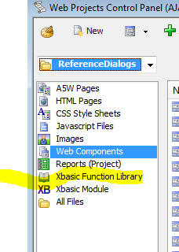
An Xbasic Function Library is a text file with a .a5xbfl extension that is stored in your Web Project. This file contains definitions for one or more Xbasic functions.
To use an Xbasic Function Library in a component you must link the file by specify the Xbasic Linked files property in the component. You can link as many Xbasic Function Library files as you want.

The benefit of using Xbasic Function Library files over defining the Xbasic function directly in the component is that you can share function definitions across multiple components. Xbasic Function Library files are text files, which makes them easy to manage in a source control system (such as Git), and they are easier to work with than .aex files (which provide an alternative method for sharing Xbasic function definitions across multiple components).
NOTE: If an Xbasic function is defined in both the Xbasic Function Declarations section within a component and also in a linked Xbasic Function Library file, the locally defined function is used.
Web Applications - Xbasic Modules - The Web Projects Control Panel now has a new category called Xbasic Module.
An Xbasic Module is a text file with a .a5xbm extension. It is stored in the web project folder. The purpose of an Xbasic Module is to allow you to package Xbasic functions and class definitions so that they can easily be used in other Xbasic code you write.
NOTE: Xbasic Modules are very similar to the concept of Node modules.
An Xbasic Module must end with an exports command that defines which functions and classes the Module 'exports' (makes available to the calling code).
To use an Xbasic Module in your Xbasic code you use the require() function to 'register' the Module.
The require()
function can take an optional CRLF delimited string of
search paths. By default the
require()
function will look in the Web Root (if you are running
live) and in the Web Project Folder (if you are in
Working Preview). If the file is not found there, it
will search for the module in the
For example, assume you had defined the following Xbasic Module called MyXBModule.a5xbm.
The module file was defined as follows:
function greeting as c (name as c )
greeting = "Hello " + ut(name) + " the time is now: " + currentDate()
end function
function currentDate as c ()
currentDate = date()
end function
exports.sayHello = greeting
Notice that the module defines two functions, but only the greeting() function is 'exported' (i.e. made public). Also notice that the greetings() function was exported as sayHello. This means that to the calling code the function sayHello() can be called (but not the internal greetings() function).
Now assume you had define an .a5w page with this code:
<%a5
dim pxb as p
pxb = require("myxbmodule")
?pxb.sayHello("jim")
%>
The Xbasic code in the .A5w page uses the require() function to register the 'myxbmodule' Xbasic Module and assigns the function to a namespace called pxb. Then, to call any of the exported functions, you must use the pxb prefix.
Modules can be loaded recursively. For example, in the definition of a module can reference another module.
What is the Difference between an Xbasic Function Library and an Xbasic Module?
On the surface an Xbasic Function Library and an Xbasic Module seem similar in that they are both files in which you can define multiple Xbasic functions.
However an Xbasic Module only makes 'public' certain of the functions and classes it defines (through use of the 'exports' keyword) and the exported functions are all in their own namespace and must be called using the namespace prefix.
On the other hand an Xbasic Function Library must be linked into a component before any of the functions defined in the library can be called. The functions defined in the Xbasic Function Library are in the same namespace as any locally defined functions in the component itself.
CSS Files - MDI Editor - When you edit a CSS file in the Web Projects Control Panel, the editor is now an MDI window. Previously, a modal window was used. Because the window is a MDI window, you can edit multiple CSS files at once and you can keep the CSS editor open while you edit other files.
Javascript Files - MDI Editor - When you edit a Javascript file in the Web Projects Control Panel, the editor is now an MDI window. Previously, a modal window was used. Because the window is a MDI window, you can edit multiple Javascript files at once and you can keep the Javascript editor open while you edit other files.
Also, while you are editing Javascript files you can test your code by executing it directly in the code editor. You can also switch to the Interactive Windows to test different Javascript code snippets.
NOTE: When you test code in the Javascript editor you are not testing it in the context of the browser. That means you can't test code that assumes that the DOM is present. Also certain Javascript global objects such as window and document are not defined. The alert(), function is also not defined.
The Interactive Window pane in the Javascript editor is shown below. The window is divided into two sections. The top section is the Javascript code that you want to test and the bottom window shows results.
You can print text to the results window by using any of the following functions in your Javascript code:
NOTE: When you are done testing your Javascript, be sure to remove or comment out any print(), printJSON() or printJSONCompact() functions in your code as these functions only are defined in the context of the Javascript editor.
UX Component - Lists - Printing Reports Using Same Filter as List - A common pattern in Grids is to have a button on a Grid that prints a report showing the same records that are in the current Grid query. Now you can use a similar pattern for List controls on a UX component.
NOTE: This feature is only for Lists and Reports based on SQL tables.
When you define the filter and order for the report in the Action Javascript genie you can use these special functions
currentListFilter("NameofList")
currentListOrder("NameOfList")
For example, if your UX component has a List called CUSTOMERS, you might specify the report filter and order as :
currentListFilter("CUSTOMERS")
currentListOrder("CUSTOMERS")
Reports - Custom Data Sources - Previously, when you created a Report in Alpha Anywhere you could choose to base the report on a SQL data source, or a native .dbf table.
Now you can specify that the report is based on a Custom data source.

NOTE: When creating 'Project reports' (Reports defined in the Web Projects Control Panel), the option to base the report on a .dbf table is not available.
When you specify a custom data source the following dialog appears:
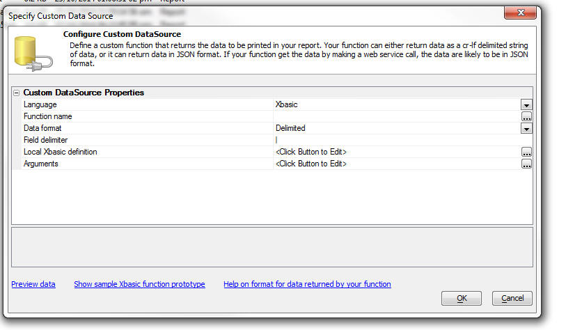
You specify the name of an Xbasic function that will return the data to be printed by the report.
The Xbasic function can return data in one of two formats:
In both cases, the Xbasic function returns a string of data (that is either in delimited or JSON format - explained below).
The function prototype for the Xbasic function is (assuming you specified that the Function name was myDataFunction in the Function name property in image shown above):
function myDataFunction as c (e as p)
myDataFunction = <<%txt%
......the delimited, or JSON format data goes here
%txt%
end function
Notice that the function takes a single input parameter, e.
The e object that is passed into the function includes the value of any arguments that were passed into the report.
For example, assume that you specified that the Custom Data Source uses an argument called whatCountry. Your Xbasic function can reference the value in this argument as follows:
dim country as c
country = argVal(e.arguments,"whatCountry")
Understanding the Format of the Delimited Data Your Custom Function Must Return
The delimited option allows you to return a CR-LF delimited list of data. Each row in the data that are returned represents a row of data in your report. The 'fields' in the data are typically delimited with a pipe character (e.g. |), but you are free to specify any delimiter. For example, here is how a simple Xbasic function could be defined to return some data for a report.
function myXBfunction as c (e as p)
dim txt as c
txt = <<%txt%
Firstname|Lastname|City
Fred|Smith|Boston
John|Jones|London
%txt%
myXBfunction = txt
end function
Notice that the first row of data in the string that is returned by the function are the field names. In this example, the field names are Firstname, LastName and City.
The first row of data can optionally include additional information that defines the data type and size of each field.
For example:
function myXBfunction as c (e as p)
dim txt as c
txt = <<%txt%
Firstname=C20|Lastname=C30|City=C20|DOB=D|Salary=10.2
Fred|Smith|Boston|12/6/1972|86500.00
John|Jones|London|11/5/1982|76000.00
%txt%
myXBfunction = txt
end function
For Character fields, the format is defined as Cw where 'w' is the size of the field. For Numeric fields, the format is defined as Nw.d where 'w' is the size of the field and 'd' is the number of decimal places.
The following field type codes can be used:
Understanding the Format of the JSON Data Your Custom Function Must Return
The JSON data that your function returns can be Simple or Complex.
Simple JSON
For Simple JSON, the string that you return is just an array of JSON objects, For example:
function myjson as c(e as p)
myjson = <<%json%
[
{"Firstname" : "Fred", "Lastname" : "Smith"},
{"Firstname" : "Harry", "Lastname" : "Jones"}
]
%json%
end function
In this case since no schema is supplied the data are all considered to be character type of length 1024 characters. While the advantage of this format is that is extremely simple, it does mean that you will need to adjust the size of each field you place on your report because its default size will likely be too large.
Complex JSON
For Complex JSON, the string that you return is an object with two properties, schema and data. The schema object defines the schema of the data (for example, field type, size, etc.) and the data property is an array of JSON objects that define the data for the report. For example:
function myjson as c(e as p)
myjson = <<%json%
{
"schema" : { "firstname" : { "type" : "C" , "width": 30 }
, "lastname" : { "type" : "C" , "width": 30}
, "company" : { "type" : "C" , "width": 30}
, "age" : { "type" : "N" , "width" : 3, "decimal" : 0 }
},
"data":
[
{"firstname":"Fred", "lastname":"Smith", "company" : "Alpha Software", "age" : 30},
{"firstname":"John", "lastname":"Jones", "company" : "Beta Software", "age" : 23}
]
}
%json%
end function
In the above example, we have specified the size and type of each field in the data array. Notice that we have also specified the number of decimal places for the numeric field.
The data types supported in the schema are:
Note: If you specify that a field uses the Date (D), Date/Time (T) or Short time (Y) format in the schema, the data in the data array must be a string in UTC date format. For example: 2014-10-27T23:06:50.361Z. The date part format is yyyy-mm-dd and the time part uses GMT. In the case of a Short time field, the date portion of the UTC date string is ignored.
The schema also allows you to extract data from objects within each row and to map property names in the data array to different names. For example in the data shown below, the address property is an object with two sub-properties.
{
"name": "Fred Smith",
"company" : "XYZ Corp",
"address": {
"street": "Main Street",
"number": 23
}
}
Shown below is how the function would be defined to return the JSON data. Notice that the JSON object has both a schema and a data property. The schema indicates what fields will be available to the report. The list of fields specified by the schema are: name, companyName, street and number.
Notice that the data array does not have a property called companyName. It has a property called company. So the schema property for the companyName field indicates that the source of this field is the company property in the data array. Similarly, the street field in the schema is mapped to the address.street property in the data array.
If the definition for a field in the schema omits the source property, then the source is the same as the item name. For example the definition for the name field in the schema shown below does not have a source property, therefore this field is mapped to the name property in the data array.
function myjson as c(e as p)
myjson = <<%json%
{
"schema": {
"name": {
"type": "c",
"width": 30
},
"companyName: {
"source": "company",
"type" : "c",
"width" : 30
},
"street": {
"source": "address.street",
"type": "c",
"width": 40
},
"number": {
"source": "address.number",
"type": "n",
"width": 5,
"decimal": 0
}
},
"data": [
{
"name": "Fred Smith",
"company" : "XYZ Corp",
"address": {
"street": "Main Street",
"number": 23
}
},
{
"name": "John Jones",
"company" : "ABC Corp",
"address": {
"street": "Corner Road",
"number": 3
}
}
]
}
%json%
end function
In the next example, we show how the JSON object that you specify can include image data. The binary data for the image are encoded as base64 strings. The example shows the complete function definition. Notice that the schema indicates that the image field will be stored as a PNG. Notice also that in the first record, the base64 encoded data in the image property does not include the MIME type at the start of the base64 encoded data. This data is therefore presumed to be a PNG image since the schema indicates that the image is a PNG type. Notice however, that the second row of data in the data array has a MIME type prefix on the base64 encoded image data. The data for the image is for a BMP image. The image will therefore be converted from BMP to PNG automatically.
function myjson as c(e as p)
myjson = <<%json%
{
"schema" : {
"name" : { "type" : "C" , "width": 30 },
"image" : { "type" : "Png" }
},
"data":
[
{"name":"John Smith", "image" : "iVBORw...(data truncated for readability)....AAAElFTkSuQmCC" },
{"name":"Jane Smith", "image" : "data:image/bmp;base64,Qk02AwAAA...(data truncated for readability)....AAAADYAAAAAA=="}
]
}
%json%
end function
UX Component - Action Javascript - Dial Telephone Action - A new action has been added to Action Javascript to allow you to dial a telephone number.
The number to dial can either be static (i.e. specified at design time), or it can be read from controls on the UX, columns in a List, or returned by a Javascript function.
Apperian EASE Integration, Mobile Application Management -Added support for Apperian which allows you to publish your PhoneGap apps directly to the Apperian EASE platform.
The Apperian EASE platform can secure, manage and deploy enterprise mobile apps for all platforms.
Apperians mobile application management platform provides:
To publish apps to the Apperian Ease platform, you will need to setup an Apperian account. See the Apperian Web Site for more information.
To enable the Apperian features, from within the PhoneGap App Builder, check the Enable Apperian EASE Integration Options.

Next, enter your Apperian account credentials and make sure to specify the correct Apperian server. Different servers are used for US and non US accounts.
Once the Apperian features have been enabled, a number of optional items are enabled within the PhoneGap App Builder.


The Apperian Admin Console will display all of the apps you may have previously published to the Apperian EASE platform.
To Add A New App To Apperian
Make sure to download and save the app bundle for the target platform. The app bundle files will be automatically
saved to the appDownloads folder of the PhoneGapProjects target project directory.
Next click the Add App button and fill out all of the required information for submission to Apperian.
All of the fields must has valid data and the version number should include a decimal, ie: 1.20, 0.20, 2.52, etc.
The app.bundle.id will be automatically retrieved from the app bundle.

To Update An Existing App
Click the update button. You do not need to upload a new app bundle unless the files have changed.
You can simply edit the information and save.

To Access the Apperian EASE Platform
Log in to your Apperian EASE account at Apperian.
Once you've logged in, you will see the files and data that have been uploaded from Alpha Anywhere.
Further deployment options will be set within the Apperian EASE Management Console.
Keep in mind that you can update the app within Alpha Anywhere and update the app bundle and app meta data
anytime.

AlphaDAO Connection Strings - Mask Passwords - Previously, the connection string builder masked (i.e. obfuscated) the password by using high order characters. For example, a password of 'alpha' would be masked as ''. Now, the connection string builder uses a different technique to mask password that does not use high order characters. The reason for this change is so Alpha Anywhere IIS server can correctly interpret the connection strings.
Passwords masked using the new scheme will now have the 'A5:B64' prefix.
If you edit an existing connection string, the existing masked password will be masked using the new scheme.
NOTE: The reason that the connection string builder masks passwords is so that someone looking over your shoulder as you define a new connection string will not see the real password. This is much like the way a login dialog will mask your password as you enter it.
You do not have make any changes to your existing applications because of this change.
However, if you edit an existing connection string, or you add a new connection string and then publish your application, you will need to ensure that the server is also running this build or a higher build.
There are two methods on the SQL::Connection object that allow you to mask and unmask as string
For example:
dim cn as sql::connection
?cn.MaskPassword("alpha")
= ":A5:B64:YWxwaGE="
?cn.UnMaskPassword(":A5:B64:YWxwaGE=")
= "alpha"
PDF Reports - Set Maximum Allowed Time - You can now set a timeout for PDF reports. This is useful to prevent tying up the Application Server (or Report Server if the Report Server is enabled) for a long time in the event the user requests a report that might take too long to process.
To set the maximum allowed time for a PDF report, open the Project Properties dialog from the Web Control Panel. By default, the timeout is set to 0 seconds (which means that reports will run to completion, regardless of how long they might take).
It is recommended that you set this property to a non-zero value.

UX Component - Video Player Control - The UX component now includes a built-in video player control. Previously, to add video playing functionality to a UX component, you had to first create a stand-alone Video Player component and then embed the Video Player component into your UX component.

The Video Player Control supports YouTube, Vimeo,
Viddler and HTML5 video players.
The player supports many options specific to the type of
player used.
NOTE The 'auto play' option does not work on mobile devices as it is disabled in an effort to conserve bandwidth.
An 'automatic sizing' option is included to adjust the
video player size on device orientation change. This
feature is important on Android devices.
A typical use case is to include a panel navigator with
two panel cards. The first panel card contains a list
control that may display the video title, the second
panel card includes the video player control. When the
user taps on a row in the list, the second panel card is
transitioned into view and the video may be played.
Download a sample component that demonstrates this
use case.
HTML Reports in Components - Display limit -
Large reports (more than 1,000 records) may be slow to
open when created as HTML reports. This will add load to
the application server and slow the server response. You
can now set a limit on the number of records to display
in a report opened as HTML. This will allow a large
report to open faster as a preview of data in the
report. If the report is then printed as PDF or
exported, the full number of records will be in the
final report.
The HTML Report Viewer Options will show an option for
'Maximum records to display' if the initial view is
HTML. An embedded report in a UX will show the property
in the Report definition. Set the value to 0 to show all
records, or set a value to limit the maximum records to
display. The limit only applies to HTML reports. A
reasonable upper limit is 1,000 records as larger
reports may be slow to generate.
You can set a 'More records' message with placeholders
and a style for the message container. This message will
be added to the bottom of the report if the number of
actual records in the report is greater than the display
limit. The message will not be shown if the number of
records in the report is less that then display limit.
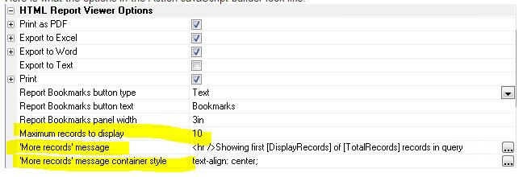

UX Component - Data-Bound Image Field - Image File Transformation Template - If you have image fields that are bound to a character field (that contains the image filename), you need to define the 'Image File Transformation Template' to resolve the image name stored in the table. The Image File Transformation Template can now include field placeholders. For example
{folder}\
If the current record you were viewing had a value of c:\project1 for the 'folder' field, the images for this record would be found in the c:\project1 folder.
UX Component - Hide Container Window - New methods and actions in Action Javascript have been added to hide (i.e. close) a 'container' window.
A 'container' window is a pop-up window that is defined in the UX by wrapping controls in a 'Container' and setting the sub-type to 'Window'.
Opening a container window has always been easy as there is an explicit method in Action Javascript to open a container window and there is a corresponding method ( {dialog.object}.showContainerWindow() ) in the UX object.
However, closing the window programmatically involved first getting a pointer to the actual window object that was created and then calling that object's .hide() method.
Now, the UX object has a new method:
{dialog.object}.hideContainerWindow(containerName);
UX Component - List Control - Client-side Display Format for Date, DateTime and Short-time Fields - A new property has been added to the 'Fields' pane in the List Builder to allows you to set the client-side display format for date, date/time and short-time fields.

The builder for the 'Date/time display format' field allows you to set the format to:
If you choose
If you choose

Grid and UX Component - Action Javascript - File Upload - User Defined Action - A new property has been added to the builder for the 'File Upload - User Defined Action'.
The 'Xbasic function arguments array mode' property can be set to either 'Filename' or 'Data'.
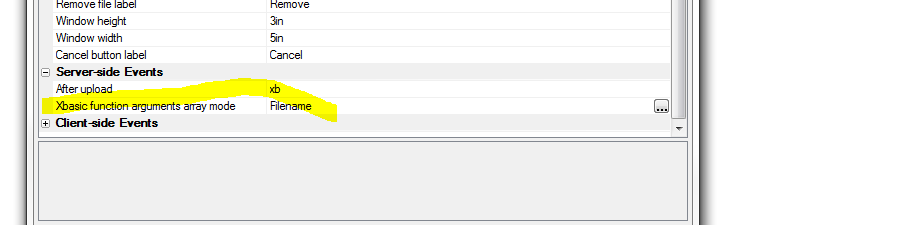
For all existing actions this property is set to 'Data'. For all newly defined actions, this property will default to 'Filename'.
When the upload is complete, the 'After upload' Xbasic function is called. This function gets passed an array (in the 'e' object that is passed into the function) that contains information about each of the files that was uploaded.
For example, if the 'Data' option is selected, and (say) the user uploaded two files. the e object passed to the 'After upload' function will contain these properties:
e.fileArray[1].file.characterSet - character set of the
uploaded file
e.fileArray[1].file.contentType - MIME type (e.g.
'application/octet-stream')
e.fileArray[1].fileName - filename of the file on the
client machine
e.fileArray[1].encoding - For text files, specifies the
encoding type
e.fileArray[1].data - data that was uploaded.
e.fileArray[1].file.dataType = Either 'text' or 'binary'
e.fileArray[2].file.characterSet - character set of the
uploaded file
e.fileArray[2].file.contentType - MIME type (e.g.
'application/octet-stream')
e.fileArray[2].fileName - filename of the file on the
client machine
e.fileArray[2].encoding - For text files, specifies the
encoding type
e.fileArray[2].data - data that was uploaded.
e.fileArray[2].file.dataType = Either 'text' or 'binary'
Note that the array has a .data property that contains the data that was uploaded.
On the other hand, if the 'Filename' option is selected the array will not have the .data and file.dataType properties. Instead it will have a property called 'tempFileUploadedData' that contains the filename of the temporary file on the server where the uploaded data was saved. So, in the case where the user uploaded two file, the e object will contain:
e.fileArray[1].tempFileUploadedData
e.fileArray[2].tempFileUploadedData
It is recommended that for your existing actions you edit the action and change the mode to 'Filename'. This will require that you also change your Xbasic function that processes the uploaded data because the array passed to your function will no longer has a .data property.
The benefit of the 'Filename' option over the 'Data' option is that the uploaded data is never loaded into memory. If you use the 'Data' option, the uploaded data is read into memory. This consumes virtual memory on your server and may result in server errors if you have a large number of users uploading files (or just one user uploading a huge file).
With the 'Filename' option, your application will be able to handle larger file uploads, or more users concurrently uploading files.
Security Framework - Alternative Login - Microsoft Live Connect - The Alpha Anywhere alternative login feature now supports user authentication using Microsoft Live Connect.
The developer site for configuring a new Live Connect application can currently be found at:
https://account.live.com/
UX Component - New Quick Start Templates - When you create a new UX component, two new quick-start templates are available:

Watch Video - Part 1
Watch Video - Part 2
Watch Video- Part 3
Xbasic - UTC Date - Convert To and From - Xbasic functions have been added to convert UTC date strings to Xbasic date or time objects.
Examples:
? date_to_utc_date(now())
= "2014-10-28T17:23:27.681Z"
? date_to_utc_date(date())
= "2014-10-28"
? date_from_utc_date( "2014-10-28T17:23:27.681Z")
= 10/28/2014 01:23:27 68 pm
? now()
= 10/28/2014 01:23:36 06 pm
? date_from_utc_date("2014-10-28")
= {10/28/2014}
? date_from_utc_date( "2014-10-28T17:23:27.681Z" , "D")
= {10/28/2014}
? date_from_utc_date("2014-10-28","T")
= 10/27/2014 08:00:00 00 pm
Web Applications - Publishing Application - Command Line Options - Typically when you publish your web application you do it using the user interface in Alpha Anywhere. You start the process starts by clicking the Publish button on the Web Control Panel.
However, there may be cases where you would like to automate the process by creating a batch file that automatically invokes the publishing operation.
A new function, a5w_publish2() has been added to make it easier to do command line publishing.
This function takes either a dot variable or a JSON object that defines the publishing options. The function can be called from a batch file, as described below.
The a5w_publish2() function allows you to set values for the following publish options:
TIP: To view help for this function, enter the following command in the Interactive Window:
a5w_publish2("help")
The dot variable or JSON object that you pass into the a5w_publish2() function can set a sub-set of these properties.
To use the .dot variable syntax:
dim ops as p
ops.profile = "Profile1"
ops.publish_type = 1
dim flag as l
flag = a5w_publish2(ops)
To use the JSON syntax:
dim flag as l
flag = a5w_publish2("{profile: \"Profile1\",
publish_type: 1}")
Assume that you have a Workspace called 'c:\MyWorkspaceFolder\MyWorkspace.adb' and you want to publish all files in the 'project1' folder using the 'profile1' web publishing profile.
You could create the following batch file to do the publish.
Note: The batch file would be all on one line. The line breaks shown below are not part of the code.
C:\Program Files (x86)\alpha5.exe "C:\MyWorkspaceFolder\MyWorkspace.adb"
-COMMAND="a5w_publish2(\"{profile: 'profile1', projName:
'project1', publish_type: 1, exitAfterPublish: true}\")"
UX Component - Client-Side Events - securityNotAuthenticated and securityPermissionDenied Events - Two new client-side events have been added to the UX component.
When an Ajax callback is made and the server sends back a '401' status code in the response, the securityNotAuthendicated event will fire.
If the server sends back a '403' status code in the response, the securityPermissionDenied event will fire.
You can manually set the status code in an Ajax response (for example, if you want to test the events) by setting the
Response.StatusCode
property in the Xbasic function that handles the Ajax callback.
NOTE: Typically, when defining these events, you will also set the Security permission denied action property in the Other section of the UX properties to Fire client-side security events.
For example, assume you have a button on UX component that does an Ajax callback. The function that handles the callback is myXBFunction. Your could define the function as follows:
function myXBFunction as c (e as p)
Response.StatusCode = 401
end function
These events are primarily intended for use in a UX component that contains an integrated login section (for example in a mobile application where the UX has Panel Navigator with at least two Panel Cards and the Login controls are on Panel Card 1 and the afterLogin event sets focus to Panel Card 2).
In the case where the UX contains an integrated login section, these events can be used to direct a user back to a panel or section used for login on a UX component. For example, the UX may have login controls on a panel, PANELCARD_1. The securityNotAuthendicated event could set focus back to that panel.
{dialog.object}.panelSetActive('PANELCARD_1',true);
If the event was fired from a child component, the event
in the child component could redirect the user back to
the login panel.
var po = {dialog.object}.getParentObject();
if(po) {
po.panelSetActive('PANELCARD_1',true);
}
If the child was opened in a window, the child event
could also close the window. If the child UX had a
control named 'list1', the event would be:
var po = {dialog.object}.getParentObject();
if(po) {
var ele = {dialog.Object}.getPointer('list1');
{dialog.Object}.closeContainerWindow(ele);
po.panelSetActive('PANELCARD_1',true);
}
UX Component Security Permission Denied Action Property - The UX component has a new property to set the server permission denied action.

This is the action the security system will take when a request is made from this component and the request is denied because of security restrictions.
This can occur if a UX attempts to open another component that has login restrictions and no one is logged in, or the user has insufficient permission to see the component being requested. The security action will also be taken if the current component has login restrictions, the login has expired, and some request is made to the server, such as a request to refresh a control or do a server-side sort on a column in a list control.
The new property UX property is
Security
permission denied action in the
Other
section of the UX properties.
The default action is Redirect to login page. This action will allow the security to redirect to the login or insufficient permission page as set in the security settings.
The action Fire client-side security event will cause the server to return either a 401 status code if the login has expired, or a 403 status code if a user is logged in, but not allowed to access the requested component. This will fire either the securityNotAuthenticated or securityPermissionDenied client-side events.
This action is currently only available in UX
components. The action applies to only Ajax requests
made from the component. A UX component ('parent'
component) can open other UX components ('child
components'). If any of the child components have a
login restriction, and this action is set to fire the
client side events on any of the components, the
recommended 'best practice' is to set the property to
fire the client side event on all of the child
components and the parent component. This should be set
even if the parent component is always allowed.
UX Component - List Control - Templates - Date Formatting - Typically the data in a List control is all text data. So even though a column in the List might be displaying a date value, the actual data in the List data array for that column is still a string.
The only exception to this is if the List is populated using Javascript and in the Javascript array that was used to populate the List, the column was explicitly set to a Javascript data object. Or, the data in the column was explicitly cast to a date object by setting the Transform data type property on the Fields pane in the List builder.
The template used to display data in the list allows you to specify an optional format.
For example, say you have a column in the List called 'OrderDate', the template for that column in the List will be:
{OrderDate}
However, say you wanted the display format for the OrderDate to be yyyy-MM-dd (e.g. 2014-12-25), then you can add a format directive to the template. For example:
{OrderDate:date('yyyy-MM-dd')}
However, the above format directive only works if the data in the 'OrderDate' column in the List are a date object.
But, as previously discussed, in many cases, the data in the List are all strings of text, so you cannot use the above format directive unless you first cast the data to a date object. When working with Lists that have updateable Detail Views, casing date strings to date objects introduces other complexities and it would be desirable to not have to cast the date string to a date object, but rather to be able to simply format the date string.
To do this, a new format directive has been added. For example:
{OrderDate:dateString('MM-dd-yyyy','yyyy-MM-dd')}
This directive takes two date formats. The first date format is used to parse the date string into a date object and the second date format is the output format.
UX Component - List Control - Detail View - Showing
Edited Fields - When you have a List with an
associated Detail View and you edit the data in one of
the rows of the List, an icon (whose appearance you can
customize) is shown in the List row to indicate that the
List row has data that has been edited, but not yet
synchronized.
You can now indicate the dirty fields in a List row that
has been edited by specify a custom CSS class to apply
to the Detail View control if the field value has been
edited.
For example in the image shown below, you can see that the first row in the List has been edited, and you can now also see that the field in that row that was edited was the city field that was changed to 'Frankfurt'.

To indicate the CSS class that you want to apply to dirty fields, open the List builder and set the 'Dirty control class name' property.

In the above example, the dirtyField CSS class was defined as follows:
.dirtyField {
background: #f6f9c2;
}
Watch Video
Download Component
Export Data - .dbf Tables - Delimited Data - A new option has been added to the export operation so that you can optionally suppress escaping characters.
The 'Disable Character Escapement' property has been added to the export options.
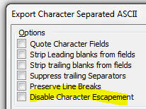
Consider a table that has this data:
| Name | Comment |
| Fred "J" Smith | This is a comment with a trailing \ |
| Hank Kaplan | No comment |
If you export the data and specify that the fields should be quoted, the exported data looks like this:
"NAME","COMMENT"
"Fred \"J\" Smith","This is a comment with a trailing
\\"
"Hank Kaplan","No comment"
Note that quotes in the data itself are escaped and that the trailing backslash in the data is also escaped.
This data could be successfully re-imported in Alpha Anywhere.
However, if you check the new 'Disable Character Escapement' property, the data will be exported as follows.
Note that the quotes in the data are converted to single quotes and the trailing backslash in the data is not escaped.
This data could NOT be successfully re-imported into Alpha Anywhere.
"NAME","COMMENT"
"Fred 'J' Smith","This is a comment with a trailing \"
"Hank Kaplan","No comment"
UX and Grid Component - File Download Action Javascript - You can now specify a dynamic 'client-side filename' by specifying the name of a Javascript function to call. For example, you can specify the following for the 'client-side filename':
function:myfunc
Where 'myfunc' is the name of the Javascript function you want to call to generate the client-side filename. You function must return a url encoded value.
AlphaDAO - Connection Strings - Dynamic - A dynamic connection string is a connection string that is resolved at the time the database connection is opened, rather than at the time the connection string is defined.
Alpha Anywhere has allowed for dynamic connection strings for some time now by allowing you to create a named connection that starts with DynamicConnection_. For example
DynamicConnection_MyCustomApplication
The actual value of the dynamic connection string is resolved by referring to a session variable called:
session.__protected__MyCustomApplication
which defines the actual connection string to be used.
The value of this session variable is typically set when the user logs into the application. For example, it might be set to:
::Name::User1Connection
Now, a new way of creating dynamic connection strings is available using the ::EVAL:: prefix in the named connection string, rather than the ::Name:: prefix.
Prefixing a connection string with ::EVAL:: causes the connection string to be evaluated as an Xbasic expression.
For example, consider the following connection string:
::EVAL::MyFunctionThatReturnsAConnString()
When an AlphaDAO connection is opened using the above string, the MyFunctionThatReturnsAConnString() is evaluated and the return value (which would typically be a named connection string with the ::Name:: prefix) is used as the connection string.
In this next example, the dynamic connection string uses an in-line Xbasic expression:
::EVAL::if(User = "Fred","::name::Fred","::name::EverybodyElse")
UX and Grid Components - Javascript Actions - Copy/Paste - You can now copy and paste Javascript Actions from one component to another component (of the same type). For example, you might have defined several Javascript Actions in component called 'UX1' and now you are building a new UX component and you would like to copy some of the Javascript Actions from 'UX1' to your new UX component.
Create PDF File from HTML - helper::HtmlToPdf Class - Xbasic now has a new class that allows you to convert HTML to PDF.
The helper::HtmlToPdf class has methods that allow you to convert HTML to PDF or a URL to PDF.
The following example code can be pasted into a new script in the Code editor and executed.
dim hp as helper::HtmlToPdf
dim html as c
html = <<%html%
This shows how you can turn any html into a pdf
dir_create_recurse("c:\mypdffiles")
hp.SaveHTMLToPdf(html,"c:\mypdffiles\mypdf.pdf")
'now open the file
sys_open("c:\mypdffiles\mypdf.pdf")
The helper::HtmlToPdf class exposes these methods:
The helper::HtmlToPdf class exposes these properties:
UX Component - List - Detail View - Client-side Validation - Client side validation was not being performed on all of the controls in the Detail View when the user tried to save Detail View edits back to the List. As a result, it was possible to save edits to the List when client-side validation errors should have prevented this. (The validation errors would still have been caught server-side when a sync operation was performed, and bad data could not have been entered into the database.)
UX Component - Android Mobile Devices - Keyboard - Responsive Events - Under some circumstances on Android mobile devices, if the device was in portrait mode and the keyboard came up, the UX would indicate that it was now in landscape mode even though the device orientation was still portrait.
Application Server - HTML Reports - Memory Leak - Fixed a memory leak in the Application Server when doing large HTML reports.
Application Server - Security Framework - SQL Tables for Security Tables - Postgres - Converting the security tables to use a Postgres database was failing. This is now fixed.
Label Reports = Setting an Image as the Background - In some case, setting an image as the background for a label was failing.
UX Component - List Control - Detail View - Incremental Refresh - Fixed an issue with incremental refresh in the case where the UX had multiple Lists in a parent-child relationship and the top-level parent List was based on a SQL statement that joined multiple tables and the top-level List pre-fetched the data for the child Lists.
UX Component - List Controls - Data Type Casting - The List Control allows you to cast the data type in any List column to a date object, number or logical value (by setting the Transform data type property on the Fields pane in the List builder). However, after data in the list was updated, or new rows were added to the List, the data casting rules were not being applied to the new data.
UX Component - List Control - Detail View - Editing a Value that Was Previously NULL - A change has been made in the SQL that gets generated when you edit the value in a field that was previously NULL.
UX Component - List Control - .getValue() method - Reading Value in List Column - The .getValue() method can get the value in a control, or in an individual column in a List control.
When reading the value in a control, there is no concept of a null value (since the UX does not have the concept of setting a control value to null).
However, List columns can contain null values and previously, when you read the value of a List column that contained a null value, .getValue() returned a null value, which was inconsistent with how .getValue() works when reading a control's value. Now, .getValue() returns a blank string when reading the value in a List column that is null.
For example
var = value = {dialog.object}.getValue('list::LIST1::CustNum');
now returns a blank string if the 'CustNum' column in LIST1 in the selected List row is null. Previously it returned null.
Note that you can still determine if a List column really does contain a null value as follows:
//get a pointer to 'LIST1'
var lObj = {dialog.object}.getControl('LIST1');
//get data in first selected row of the List
var _d = lObj.getData(lObj.selection[0]);
//read the value of the 'CustNum' property in the data
object
var _v = _d['CustNum']; //_v will be null if the
data in the column is null
PhoneGap - Web Security Framework - Fixed an issue with the Web Security Framework when running in a PhoneGap shell. Redirecting to the login page after a session timeout, or after an attempt to load a resource for which you did no have permission was not working correctly.
UX and Grid Component - Wait Message - Fixed a case where the wait message was not getting cleared after an Ajax callback had completed.
UX Component - File and Image Upload - Internet Explorer - Fixed a case where a Javascript error was generated when the file or image upload window was opened. Only happened in IE when in the UX component.
UX Component - Panel Navigator - Opening a Child Component in a Panel Card inside a Navigator - Fixed an issue where a child component was being opened in a Panel Card inside the Panel Navigator. After the child component was opened, the swipe gesture to move to a different Panel in the Navigator was causing a Javascirpt error.
Grid Component - Grid Based on Stored Procedure - If a Grid was based on a Stored Procedure and a surrogate Primary Key for query was defined, the _keys array in the Grid Object was not getting defined.
UX and Grid Component - Edit-Combo Control - Dynamically Populating Choices Using Javascript - The choices in an edit-combo control can be dynamically set using Javascript. For example, say you have an control on a UX called 'TEXTBOX1' and you want to dynamically set the choices in the edit-combo. The following code can be used:
var obj = {Dialog.object}.getControl('TEXTBOX1');
var newData = [
{COMPANYNAME: 'Alpha Corp'},
{COMPANYNAME: 'Beta Corp'},
{COMPANYNAME: 'Gamma Corp'}
]
obj.setData(newData);
UX Component - List Control - Freeform Layout - Hyperlinks - When you create a free-form List layout you can use any HTML that you want to lay out each row in the List. Your HTML template will include placeholders for the various fields in the List.
For example:
Name: {name}
Address: {address}
Because the template is HTML, you might expect to be able to add hyperlinks. For example:
This will not work because the List is configured to handle all events. However, you can make this pattern work by adding markup to your html to stop event propagation. For example:
With the addition of event handlers for the onclick and ontouchstart events which stop event propagation, the hyperlink will work as expected.
UX Component - PhoneGap Applications - Ajax Callback URL - Setting Dynamically at Runtime - When you build a PhoneGap application you have to specify the URL for Ajax callbacks in the PhoneGap genie.
When you perform any action in your PhoneGap application, the callback is made to the server address specified in the URL for Ajax callbacks property in the PhoneGap genie.
However, you might be building an app where you don't know what server the app will be running on (i.e. you don't know what server the app will be making its Ajax callbacks to) and so you would like to be able to set the URL for Ajax callbacks after the app has loaded.
Here is how this can be done.
First, when you specify the URL for Ajax callbacks, set the URL to some placeholder value. For example:
replaceMe
Next, put a textbox on your UX component where the user can enter the address of the server to which they will be making callbacks. For example, assume that this text box is called: ServerAddress.
Then put a button on the UX to set the callback URL. The callback URL is a property of the UX object (i.e. {dialog.object}. It is called ajaxURL.
Define the following Javascript for this button:
//read the server address from the serverAddress textbox
var prefix = {dialog.object}.getValue('SERVERADDRESS');
//the address should look something like this:
//'http://www.myserver.com/folderWhereAppWasPublished/';
//notice that the server address has a trailing forward slash
//read the existing callback URL
//it will start with 'replaceMe' since that is what you specified
//in the PhoneGap genie
var url = {dialog.object}.ajaxURL
//replace the placeholder with the server address
url = url.replace('replaceMe/',prefix);
//set the URL
{dialog.object}.ajaxURL = url;
Having done this, Ajax callbacks made to the server will now work. But what happens the next time the user loads the application? The Ajax URL will be wrong. You would want the Ajax URL to be automatically set correctly without requiring the user to go through the steps of having to enter the server address again.
The solution to this problem is to store the callback URL in local storage and then to restore from local storage whenever the application is started.
To do this, you would add code like this to the end of the above Javascript:
localStorage.setItem('AJAXCALLBACKURL',url)
In the onRenderComplete client-side event, you would add this code to restore:
//read url from local storage.
var url = localStorage.getItem('AJAXCALLBACKURL');
//if value exist, set the UX's ajaxURL property
if(url != null) {
{dialog.object}.ajaxURL = url;
}
UX Component - List Control - UX Component 'Dirty State' - Just like standard UX Components controls (such as Textbox, Textarea, RadioButton, etc), the List control is bound to a UX component variable. When the value in any control changes the UX component is considered to be 'dirty'. So for example, if you open a UX and then select a row in a List, ghe UX will go from 'clean' to 'dirty'.
In some use cases you might not want the UX go to 'dirty' when the user is making selections in a List. You can easily do this by adding some code to the onBeforeSelect and onSelect event in the List.
Here is the code to add to the List's onBeforeSelect event:
var flagUXIsDirty = false;
//see if the UX is already dirty
flagUXIsDirty = {dialog.object}._dirtyRows[0];
//store the dirty state of the UX in a variable in the
List object
this._flagUXIsDirty = flagUXIsDirty;
Here is the code to add to the List's onSelect event:
//if the UX was not dirty when you selected the row
//set the UX state back to clean after the row is selected.
//you need to use a timeout with a small delay.
if(this._flagUXIsDirty == false) {
setTimeout(function() {
{dialog.object}._setRowState(1,false);
},10);
}
Reporting - Group Breaks - mrec_eof() Function - The mrec_eof() function is useful if you want to put some conditional text in the header, detail or footer of the last group in a parent group.
The mrec_eof() function takes a group name as an argument and returns .t. or .f. depending on whether the you are in the last group within a series of groups.
Consider a report that has two levels of grouping. The top-most group is State and the inner group is City.
For a given state, there will be multiple city groups. For example, NY might have groups for Albany, Buffalo and New York City. E.g.
New York
Albany
Buffalo
New York City
When the 'Albany' group is printing, the following function will return .f.
mrec_eof(grp->city)
When the 'Buffalo' group is printing, the function will also return .f..
But, when the 'New York City' group is printing, the function will return .t. because 'New York City' is the last group within the parent group ('State').
Assume further that the states in the report are:
New York
Oregon
Washington
When the New York and Oregon groups are printing, the following expression will return .f. because both New York and Oregon are not the last groups in the list of states.
mrec_eof(grp->state)
However, when the Washington group is printing, the function will return .t. because Washington is the last group in the list of states.
Say you wanted to put some text in the group footer for the City group, but only if you were printing the group footer for the last group in a given state. To do this you would define a calculated field that referenced mrec_eof(grp->state). For example:
calc1 = if(mrec_eof(grp->city), "Last city in state","More cities...")
Similarly, you might define another calc field:
calc2 = if(mrec_eof(grp->state), "Last state","More states...")
For example
NY
Albany
Group footer for Albany - calc1 = "More cities..."
Buffalo
Group footer for Buffalo - calc1 = "More cities..."
New York City
Group footer for New York City - calc1 = "Last city in state"
Group footer for NY - calc2 = "More states..."
....
Washington
Olympia
Group footer for Olympia - calc1 = "More cities..."
Seattle
Group footer for Seattle - calc1 = "Last city in state"
Group footer for Washington - calc2 = "Last state"
Disabling a Hyperlink - A Behind the Scenes Look At How The UX Binds
Events
A user wrote about a case where he had a hyperlink control on a UX
component. The hyperlink had an click event which displayed an alert and
then 'disabled' the hyperlink by calling the
.setDiabled() method of
the UX component.
The actual code in the hyperlinks' click event was:
alert('I was clicked');
{dialog.object}.setDisabled('HYPERLINK_1');
When running the component in the UX builder with the Mobile
Simulator turned on, or on a mobile device the behavior of the component
was as expected. The first time the user clicked or tapped the hyperlink
the alert would display and then the next time he clicked or tapped on
the hyperlink nothing would display.
However, when running in a browser (or in the UX builder) with the
Mobile Simulator turned off, the behavior was not as expected. Every
time the user clicked the hyperlink the message displayed - the
{dialog.object}.setDisabled('HYPERLINK_1')
had no apparent effect.
Why?
Actually, there is a lot going on here behind the scenes.
First, if you run the component and then look at the source to see how
the click event was bound to the hyperlink, you will see code like this:
$e.add('DLG1.V.R1.HYPERLINK_1',A5.d.evnts.click,function(e)
{
alert('click event');
DLG1_DlgObj.setDisabled('HYPERLINK_1');
},
this,false,'DLG1.V.R1.HYPERLINK_1');
The $e.add() function
is a function in the Alpha Anywhere Javascript library that allows you
to bind events to DOM elements. It is really just a wrapper around the
built in Javascript .addEventListener()
function, but it works with older browsers that don't support the
.addEventListener()
function.
We only need to focus on the first three arguments passed to
$e.add()
First some background on events. The click event is fired when you
click or tap on an HTML element. On a desktop browser, the event fires
as soon as you click on the element. But on a mobile device there is a
300ms delay before the event fires. The reason for the delay is that the
browser on the mobile device is a 'touch enabled' device and when you
tap on the hyperlink it is not sure if the tap is really a tap, or just
the start of some type of dragging gesture. So it waits for 300ms and
then if it determines that you did not start some type of drag gesture,
it decides that you really meant to fire the click event.
This 300ms delay makes your apps feel unresponsive. So Alpha Anywhere
implements a special 'abstractclick'
event on touch enabled devices that fires immediately when the element
is tapped.
The A5.d.events.click
variable is how we allow the user to define a generic click handler, but
at runtime we either bind the code to the built-in 'click'
event or to the 'abstractclick'
event that Alpha Anywhere implements.
So, when running in a browser that is not touch enabled,
A5.d.evnts.click
resolves to 'click' and when running on a browser that is touch enabled,
A5.d.events.click will
resolve to 'abstractclick'.
However, when running on a browser that is not touch enabled, if you
have the Mobile Simulator turned on,
A5.d.events.click will
resolve to 'abstractclick'.
So getting back to the $e.add()
method that the UX uses to bind the event handler to the hyperlink. If
you are on a non-touch enabled device, the code that is being executed
is:
$e.add('DLG1.V.R1.HYPERLINK_1','click',function(e) { code to run when
hyperlink is clicked });
And when on a touch enabled device (or when running in the Mobile Simulator):
$e.add('DLG1.V.R1.HYPERLINK_1','abstractclick',function(e)
{ code to run when hyperlink is clicked });
So now that we know which event is really firing when the user
clicks/taps the hyperlink, lets try to understand why disabling the
hyperlink only seemed to work on a touch enabled browser (or when
running in a Mobile Simulator).
The way in which the code is 'disabling' the hyperlink control is by
calling the UX component's .setDisabled()
method. Here is how the
.setDisabled() method is implemented internally in the Alpha
Anywhere Javascript library:
HTML only allows you to disable form element. Form elements are input
controls and buttons. A hyperlink is not an input control. There is no
concept in HTML of a 'disabled' hyperlink.
So to be clear, the command:
{dialog.object}.setDisabled('HYPERLINK_1')
did nothing more than this:
var ele = {dialog.object}.getPointer('HYPERLINK_1');
//set the value of a 'disabled' property to true
ele.disabled = true;
We could just as easily have set the value of any other 'made up'
property name. For example:
ele.myFicticiousProperty = 'some value';
In the case of the hyperlink element, the 'disabled' property is, in
effect, a 'made up' property. As explained, there is no concept in HTML
of a 'disabled' hyperlink.
So, why does it appear that disabling the hyperlink works on a touch
enabled browser or in the Mobile Simulator, when, as we have discussed,
hyperlinks cannot be disabled?
The reason, as it turns out, is that when Alpha Anywhere fires an
abstract event on an element it checks first to see what the value of
the element's 'disabled'
property is. If the 'disabled'
property ti set to true, it does not fire the event.
In other words, when an 'abstractclick'
event is fired, the event will no do anything if the element's
disabled property is
true.
So now we understand what's going on here. When the component is run on
a non-touch enabled device, the built-in HTML click event is bound and
since hyperlinks cannot be disabled, the event fired every time the
hyperlink is clicked.
But when the component is run in a touch enabled browser (on in the
Mobile Simulator), the abstract 'abstractclick'
event is fired and this event does honor the value of the 'disabled'
property on the element.
So, how could the user have gotten this to work on both touch-enabled
and non-touch browsers? Simple. Just add a line of code to the event
handler:
if(this.disabled) return false;
alert('click event');
{dialog.object}.setDisabled('HYPERLINK_1');
After the .setDisabled()
method has been called on the hyperlink, reading the element's 'disabled'
property will return true. So
this.disabled will be true after the
.setDisabled() method
has been called.
UX Component - List Control - Detail View - A bug was introduced in build 2442 that caused the Detail View to not populate correctly in certain rare situations when a row in the List was selected.
Application Server - Reports - Under certain circumstances, a report would print correctly the first couple of times it was printed, and then start to fail.
UX and Grid Component - Grid Linked Content Section - .getParentObject() Method - If a UX or Grid was opened in a parent Grid's Linked Content Section, the child component could not use the .getParentObject() method to get a pointer to the parent Grid.
| Tabbed UI Component | Using Alternative Login |
The 'Alternative Login' feature allows a user to
log in to an application using their credentials
from a social network, such as Google, Twitter,
LinkedIn, etc. The UX component allows you to build Login dialogs that allow users to log into an application using an Alternative Login. The integrated login feature in the Tabbed UI, however, does not allow you to expose Alternative Logins. Therefore, if you want to allow a user to login into an application that uses the Tabbed UI, you must use a UX component in the Tabbed UI to do the log in. In this video we show how this can be done. Watch Video Date Added: 2014-09-11 |
| UX Component | Downloading a Google Chart as a Bitmap |
In the video 'Using Google Charts as an Alternative to the
Built-in Chart Controls' we showed how you can
use Google Charts in a UX component. In this
video we show how you can add a button to the UX
to download a Google chart as a bitmap image.
The user can then save the image to disk, or
print the image. Note: Not all Google chart types support this feature. Watch Video - Part 1 Watch Video - Part 2 Download Component Date Added: 2014-09-13 |
| Xbasic | Working with SQL Databases |
A common requirement in server-side events
handlers (including custom Ajax callbacks) is to
write some Xbasic code that manipulates data in
a SQL database. Xbasic has a very powerful set of objects (called AlphaDAO) for interacting with SQL databases. In this video we give a quick overview to using Xbasic to work with SQL databases. (For a full introduction and tutorial on using Xbasic to work with data in SQL databases, go to the Help, Open Documentation menu command and type 'Using Xbasic with SQL Tables' in the filter box.) Watch Video - Part 1 Watch Video - Part 2 Watch Video - Part 3 Watch Video - Part 4 |
| Xbasic | Calling Into Node.JS from Xbasic |
Node.js is a popular technology for implementing
server-side utilities. Xbasic has very tight
integration with Node and it is possible to
create Node services that can be called from
Xbasic. In this video we show how a Node service can be defined and then called from Xbasic. Watch Video - Part 1 Watch Video - Part 2 Watch Video - Part 3 |
UX and Grid Component - Ajax Callbacks - OnComplete Javascript - A new option has been added to the method that makes an Ajax callback from the Grid and UX component. You can now specify Javascript to run when the callback is complete.
This option has been exposed in the Action Javascript Ajax Callback action as shown in the image below:
The Javascript that you specify is run after the callback is complete and after any Javascript returned by the callback function has executed.
To specify the after callback complete Javascript in the UX or Grid's .ajaxCallback() method, you set the onComplete property in the optional optionsObject passed in.
For example:
{dialog.object}.ajaxCallback('','','myXbasicFunction','','',{onComplete: function() {
alert('callback is complete')
}
})
Tabbed UI - Integrated Login Feature - When the Login window is opened, the User name field is now automatically given focus. Previously the user needed to explicitly click on the user name control. In addition, when the password field has focus, pressing the Enter key will now execute the Login button.
Security Framework - Importing Data into the User Table - The previous import method, a5ws_ImportUsersDBF(), did not support import into SQL based security tables. The import feature has been rewritten and a new method, a5ws_ImportUsers(), is available. The import will now properly add records into SQL security tables.
The a5ws_ImportUsers() method can be used to import data into either .dbf security tables or SQL security tables. When importing into .DBF tables security tables, this new method is up to twice as fast.
TIP: You can also now use the a5ws_ImportUsers() function from the Interactive Window of the Application Server control panel to import users into your security tables on your server. When you use this function from the Interactive Window it will display a list of all web projects that have security and you can select the project into which you wish to import data.
Xbasic - Node.JS - Extending Server-side Functionality using Node.js - Node.js is a popular program for writing server side utilities in Javascript. Alpha Anywhere now has tight integration with Node and you can now define your own Node modules that can be called from Xbasic.
Watch Video - Part 1
Watch Video - Part 2
Watch Video - Part 3
To create a new 'Node Service' that can be called from Xbaisc, you create a new .js file in the Node_Services folder in the Alpha Anywhere executable folder. The syntax for this .js file is the syntax you would use for any Node module.
To call a Node service from Xbasic, you:
In the following example, we have defined a trivial Node service that takes as its input two variables, 'firstname' and 'lastname' and sends back a string showing: Hello firstname lastname.
The Node service in this example is called 'hello'. Therefore the '_command' property of the JSON command object is set to 'hello'
You must also set an '_id' property in the JSON command object. This can be any value. Using a UUID for this value is convenient.
The Node service is called using the .NodeRequest() method and the result is returned as a JSON string with properties for the error text (if there was an error) and 'result' - the result of the request. The JSON response can be parsed to get Xbasic varibles, or the json_extract() function can be used to extract the 'result' property.
dim n as helper::V8
dim p as p
'generate an id for the request we are about to send to Node.
'we just use a GUID for convenience
p._id = api_uuidcreate()
'set the _command property. This is the name of the Node
service we want to call
p._command = "hello"
'specify any variables you want to pass to the Node service
p.firstname = "Nellie"
p.lastname = "Jones"
'convert the Xbasic .dot variable to a JSON string.
dim jsonCommand as c
jsonCommand = json_generate(p)
?n.NodeRequest(jsonCommand)
= {"_id":"id1","error":"","result":"Hello Nellie Joness"}
Here is how the corresponding Hello.js file is defined. This file must be in the Node_Services folder in the Alpha Anywhere executable folder. This is a standard Node module. It can 'require' any other Node modules that you have written, or that have been installed using NPM (the Node Package Manager).
exports.handler = function(packet,response,sendResponse)
{
var e;
var attachments = null;
var msg = 'Hello ' + packet.firstname
+ ' ' + packet.lastname;
response.result = msg;
sendResponse(response,attachments);
};
If you edit the .js file in the Node_Services folder after having called it, your edits will not be seen until you shutdown the Node service. The next time you call the Node service you will see a short delay as Node starts up.
To shut down the Node service you can all the .NodeShutDown() method on the helper::V8 object instance. For example, in the above example the helper::V8 object instance was called 'n', so the following command will shut Node down.
n.NodeShutdown()
NOTE: Node.exe is automatically installed in the Alpha Anywhere executable folder when you install Node. You do not need to install Node yourself.
UX Component - Client-side Events - onPhoneGapReady - This event fires when the UX component is running in a PhoneGap shell and the PhoneGap library has been loaded.
NOTE: The existing onCordovaReady event has been deprecated and will be removed at some point. Move any code defined for the onCordovaReady event to the onPhoneGapReady event.
UX Component - {dialog.object}.phoneGapLoaded() Method - Returns true if the UX component is running in a PhoneGap shell.
List Control - Detail View - Disconnected Application - Count Records to Be Synchronized - A new method gives a count of the number of unsynchronized records.
Syntax:
object = {dialog.object}.countRecordsToSynch(listId)
Returns an object with properties showing the number of records that have not yet been synchronized with the server. The object has these properties: count, updatedRecords, newRecords, deletedRecords. 'count' is all dirty records (edits, inserts and deletes), 'updatedRecords' is all records that were edited, 'newRecords' is records that were added and 'deletedRecords' is records that were deleted.
Example:
var o = {dialog.object}.countRecordsToSynch(listOrders)
alert('You have ' + o.count + ' records to synchronize')
List Control - Detail View - New Events to Transform Data Before Display and Save - When you define a List control with a Detail View, two new properties are exposed for each List field.
These properties allow you to transform the data before it is displayed in the Detail View and before the Detail View is saved back to the List. The code you you specify in these two properties must 'return' the transformed value.
The Javascript for both of these properties can refer to
this._value
to get the default value that the Detail View control should be populated with when the user clicks on a Detail View row and to get the default value that the List should be updated with when the user clicks the Save button to save the Detail View back to the List.
For example, say that in the List data for row 2, the value for the Lastname field was 'Smith'.
In the onDetailViewPopulate event, you might specify this Javscript
return this._value.toUpperCase()
When the user clicked on row 2, the value shown for the Lastname field in the corresponding Detail View control would be:
SMITH
even though the actual data in the List for that field was 'Smith'.
Similarly, in the onListUpdate event, you might specify this Javascript:
return this._value.toLowerCase()
When Detail View edits were saved back to the List, the List would be updated with the the lowercase version of the data in the Lastname field
UX and Grid - Edit-Combo - Filter choices by searching anywhere in field - Previously, in an edit-combo, as you typed into the textbox, the choices were filtered, starting the search with the first letter in the entry. Now, you can set the 'Search style' property to search anywhere in each entry.
For example, if the choices in the edit-combo were
Austria
France
USA
UK
and you typed 'U' in the textbox, the choices would be filtered to
USA
UK
Now, if you set the 'search style' to 'Anywhere in field', the choices will be filtered to
Austria
USA
UK

UX Component - HTML Editor - Toolbar Icons - You can now customize all of the icons used in the HTML editor toolbar.
Reports - SQL - Native SQL - Previously, if a report was based on a custom SQL statement and the SQL type was set to 'Native', during execution of the report the SQL statement was parsed (sometimes more than once). Parsing the SQL was necessary in order to determine if the report used arguments that were not defined (and therefore if a prompt should be shown for missing arguments) and in order to add in dynamic filters and order definitions.
In certain cases, the native SQL being passed to the report engine was so complex that parsing the SQL added a substantial delay to rendering the report.
Now, if you specify that the report data source uses native SQL the SQL query for the report will never be parsed. It will simply be passed to the database engine to execute.
As a result of this change if your native SQL statement uses arguments and you do not pass in values for all of the arguments used in the SQL, the report will no longer be able to dynamically prompt for missing argument values. Also if you are attempting to dynamically add a filter or order to the report at runtime, this will no longer work in the case were the report is based on native SQL.
UX Component - List Control - Scroller - Previously, the 'scroller' feature was only supported for Lists if the UX style was set to iOS7, AndroidDark or AndroidLight. Now, the scroller is supported for all styles.
UX Component - Security Framework - Error Messages - Errors returned from the server-side Action Scripts to validate web security values, save web security values, and change web security passwords may not display property if the UX uses Panels, a placeholder is specified for the UX component validation errors, or the option to show errors in a popup window is selected. This is now fixed. The Action Scripting actions in the server-side events must be edited to apply the change. Select any of the web security actions in a server-side event and select "Edit action". Click OK to save and the code will be updated.
Grid Component - Oracle 9i - Fixed an issue using a Grid with Oracle9i.
UX Component - Textbox and Textarea Controls - Help Icon - Container With Layout Mode - If a textbox or textarea control had its help icon turned on, and if the icon was displayed left or right of the control and if the UX layoiut mode was set to 'Container width' (the default mode), the icon would show above or below the control. This is now fixed.
UX Component - Data Binding - Views - Auto-increment - Entering new records into a UX component that was bound to a View (rather than a Table) which had an auto-increment primary key would fail. The record was inserted, but not refreshed after insert.
UX Component - Display Wait Message on Ajax Callback - In some cases the wait message was not being cleared after the callback completed and the screen remained in a locked state.
UX and Grid Components - Lookup Grids - SQL - Filter - If you defined a Lookup Field that used a Grid based on a SQL database and you specified that the Lookup Grid had both a static filter and a dynamic filter, you would get an error when opening the lookup Grid. The error only happened if the static filter was defined as a 'base' filter.
Grid Component - Image Download - Detail View - Image download of an image field in the Detail View part was not working correctly.
Grid Component - File Upload Action - New Record Rows - Uploading a file on a new record row caused an error.
UX Component - HTML Editor - Container Window - If you added a textarea control (configured as an HTML editor) into a Window Container, then when the window was displayed, the HTML editor was displayed, but you could not type into the editor.
Grid and UX Builder - Working Preview - Internet Explorer V10 and Earlier - If you had IE10 or earlier installed on your computer, in some cases you would get a Javascript error when testing a component in Working Preview.
AlphaDAO - Oracle - Returning a Resultset from a Stored Procedure - Returning a SQL::Resultset object from an Oracle stored procedure can be tricky depending on which version of Oracle you are using.
As an alternative to returning a resultset from a stored procedure, you can use an Oracle function.
In this example we show how a resultset is returned using an Oracle function.
NOTE: The Oracle database used in this example was created by using the Workspace Upsize Genie (see the 'Tool' menu when the Control Panel has focus) to upsize the sample Alphasports Workspace that ships with Alpha Anywhere.
dim cn as sql::Connection
dim flag as l
flag = cn.open("::Name::oracle_alphasportsUpsize")
dim sql as c
sql = <<%str%
create or replace FUNCTION REFCURSOR_CUST(p_city IN VARCHAR2) RETURN
SYS_REFCURSOR AS p_recordset SYS_REFCURSOR;
BEGIN
OPEN p_recordset FOR select FIRSTNAME, LASTNAME, BILL_CITY from CUSTOMER
where bill_city LIKE p_city;
return p_recordset;
END REFCURSOR_CUST;
%str%
'Oracle does not like CRLF in statements, so convert CRLF to spaces
dim sql2 as c
sql2 = stritran(sql,crlf()," ")
'Execute the SQL statement to define the function
flag = cn.Execute(sql2)
dim sql::arguments
args.add("Whatcity","Boston")
'Execute the function. Notice the 'from dual'
syntax that Oracle requires
flag = cn.Execute("select REFCURSOR_CUST(:whatcity) from dual",args)
dim rs as sql::resultset
rs = cn.ResultSet
dim txt as c
txt = rs.ToString()
showvar(txt)
Here is what we see:
Mary McDonald Boston
Richard Queen Boston
If you are using Oracle 12, you have the option of using implicit cursors in a stored procedure.
The above function definition could be written as the following stored procedure:
CREATE OR REPLACE PROCESURE SP_GETCUSTOMERS (p_city IN VARCHAR2)
AS
p_recordset SYS_REFCURSOR;
BEGIN
OPEN p_recordset FOR SELCT FIRSTNAME, LASTNAME, BILL_CITY FROM CUSTOMER WHERE BILL_CITY LIKE P_city;
DBMS_SQL_RETURN_RESULT(p_recordset);
END;
UX Component - In-Control Buttons - Delete Text - Only Show Icon if Existing Text - The In-Control Button feature of a textbox allows you to embed icon inside a textbox. A typical use for for this feature is to allow the user to easily clear out existing text in the control.
You might want the icon to only show if there is existing text in the textbox, as shown in the the screenshots below.
 |
In order to do this you will need to add code to t he Click action for the in-control button and to the onKeyUp event for the textbox control.
You will also need to add code to the onRenderComplete client-side event of the UX to set the initial state of the icon.

Here is the code you need to add to the Click action:
//clear the value in the control
{this}.value = '';
//get a pointer to the element that contains the
icon and hide it
var ele = $('{dialog.ComponentName}.V.R1.TXT1.CUSTOMBUTTONSTATIC.0')
ele.style.display = 'none';
Here is the code to add to the onKeyUp event for the textbox.
//get a pointer to the element that contains the icon
var ele = $('{dialog.ComponentName}.V.R1.TXT1.CUSTOMBUTTONSTATIC.0');
//if there is text in the control, show the icon,
else hide the icon
if(this.value == '') {
ele.style.display = 'none';
} else {
ele.style.display = '';
}
Here is the code for the onRenderComplete client-side event to set the initial state of the icon:
var ele = $('DLG1.V.R1.TXT1.CUSTOMBUTTONSTATIC.0')
ele.style.display = 'none';
We are pleased to announce Alpha Anywhere Version 3. This release contains a huge number of new features, enhancements, performance improvements and bug fixes.
The standout feature in the release are the enhancements made to the List control to support building disconnected mobile applications. See the 'Features' section for details.
| UX Component | Tree Control - Populating Data using Javascript |
The data in a tree control on a UX component can
easily be set using Javascript. In this video we
show how to repopulate the entire tree, or
dynamically add a node to an existing tree. Watch Video Download Component |
| UX Component | Submitting all of the Data in a List Control on an Ajax Callback |
When an Ajax callback is made, the data in the
variables on the UX are submitted, but the data
in List controls are not submitted. There may be
situations where you want to submit all of the
data that are currently in a List control to the
server. In this video we show how you can 'harvest' the data that is in a List control and then submit that data to the server when you make an Ajax callback. Watch Video - Part 1 Watch Video - Part 2 Download Component |
| UX and Grid Component | Using Chrome for Working Preview - Debugging Javascript using the Chrome Debugger; |
When you are in the Component builders, the
Working Preview window now allows you to choose
whether you want to use Internet Explorer or
Chrome. Using Chrome has several benefits, including the ability to 'detach' the Working Preview window so that it can be moved to a second monitor and be kept open while you continue to design your component. You can also use the Chrome Debugger to debug your Javascript or inspect elements on the page. Watch Video - Part 1 Watch Video - Part 2 |
| UX Component | List Control - Custom Control - Client-side |
When you define a List control in a UX
component, one of the 'control types' that you
can insert into the List is a 'Custom Control'.
A 'custom control' is computed with an Xbasic
function. Because Xbasic is used to render the
custom control, it means that the custom control
is rendered server-side when the List is
initially rendered. If your UX component has
code that modifies data in the List, the
server-side custom control is obviously not
re-rendered. Therefore, you might want to define your custom control using client-side Javascript. This video shows an approach to creating client-side custom controls in a List component. Watch Video Download Component |
| UX Component - List Control | Vertically Justifying Data in a Row |
By default, data in a columnar List control is
vertically top justified. In a Grid, on the
other hand, data in a Grid row is vertically
middle justified. In a Grid this is easily done
because the generated HTML for a Grid uses an
HTML table. The generated HTML for a List is not
based on an HTML table, and so middle justifying
the data is a little trickier. In this video we show how you can vertically middle justify data in a List row. Watch Video Download Component |
| UX Component - List Control | Displaying Data From Twitter |
The Twitter API returns data in JSON format. The
List control on a UX component is easily
populated with JSON data. The Twitter API,
however, is a little tricky to work with because
it requires an OAuth authorization before you
can call the API functions. Xbasic contains two
built-in functions that simplify this. In this example we show how you can easily build a List control that displays Tweets that are retrieved by making a REST API call to Twitter. In the example we use built-in Xbasic functions to get a 'bearer token' from Twitter. Once we have this token, we can make calls to the Twitter API to get data in a JSON format that is used to populate the List control. IMPORTANT: The video shows selecting the Twitter List from the 'Defined Controls' section of the UX builder toolbox. This has been changed. You should now select the 'Twitter_Display_Tweets_in_a_List_Control' sample UX Component template in the dialog that appears when you create a new UX component. Watch Video - Part 1 Watch Video - Part 2 Watch Video - Part 3 Watch Video - Part 4 |
| Reports | Suppressing Blank Rows in a Layout Table Report |
The Layout Table report editor exposes a
property that you can set for each row in the
Layout Table to suppress the row if it is blank. In this video we show how blank lines in a Layout Table Report are suppressed. We also discuss how the report writer determines that a row is 'blank'. Watch Video |
| UX Component | Setting Content of Scrollable Containers/Windows |
Normally, you can set the content of an element
in a component by simply getting a pointer to
the element and then setting the element's .innerHTML
property. However, if the element whose content
you are setting has been configured to allow
drag scrolling, setting the .innerHTML directly
will destroy the drag scroll settings and the
new content will no longer be scrollable. The solution to this problem is to use the A5.u.element.setContent() function to set the element's content. Watch Video - Part 1 Watch Video - Part 2 Download Component |
| UX Component | Edit-Combo Control - Specifying a Different Stored Value from the Display Value |
Dropdownbox controls allow you to specify that
the stored value is different from the display
value. For example, the control might display a
'ProductName' but the stored value in the
control might be the 'ProductId'. Edit-combo box controls can now also be configured to store a different value than their display value, just like a Dropdownbox control. The benefit of using an Edit-combo control over a Dropdownbox control is that you can display multiple columns of data in the choice list and you can dynamically populate and filter the choices in the list with an Ajax callback every time the control is opened. In this video we show how to configure an Edit-combo control to store a different value from its display value. Watch Video |
| Interactive Window | Executing Shell Commands Directly from the Interactive Window |
You can now execute shell commands directly from
the Interactive Window. You no longer have
to open a separate CMD window to execute shell
commands. This can be a very useful time saver
for developers. For example, when building an application that uses REST APIs, it is common for the API documentation to show how you can use CURL to execute the REST command. Using the Interactive Shell, CURL commands can be executed directly from the Interactive Window. Watch Video - Part 1 Watch Video - Part 2 |
| UX Component | Dynamic Images - Client-Side |
When you add a 'Dynamic Image' column to a List
control to display an image in the List that is
based on other data in each List row you can
specify if the computation of what image to show
should be server-side, or client-side. If
server-side, your expressions that define the
conditional tests are specified in Xbasic. If
client-side, your conditional expressions are
expressed in Javascript. The benefit of client-side dynamic images is that the image will be automatically recomputed when the data in a List row is updated. In this video we show how client-side Dynamic Images can be defined and then we show another technique for creating client-side Dynamic Images using the List's Computed Columns feature. This second technique has the advantage of offering more flexibility. Watch Video - Part 1 Watch Video - Part 2 Download Components |
| UX Component | Client-side Template Tutorial |
Client-side templating allows you to generate
HTML for display by merging a data object into a
template. The client-side template library in
Alpha Anywhere is extremely powerful and can be
compared with similar functionality in 3rd party
templating libraries, such as Mustache.js and
Handlebars.js. In this video we show how a complex template can be designed to display data (a list of Orders with OrderItems for each order) in a richly formatted display. The video shows how the templating system can compute values, including summary values. Watch Video - Part 1 Watch Video - Part 2 Watch Video - Part 3 Watch Video - Part 4 Watch Video - Part 5 Watch Video - Part 6 Watch Video - Part 7 Watch Video - Part 8 Watch Video - Part 9 |
| UX Component - PhoneGap | Displaying .PDF, .XLSX, .DOCX Files |
Unlike desktop browsers, the browsers on mobile
devices typically do not have built-in handlers
for displaying .pdf, .xlsx, .docx and certain
other types of files. If your mobile application is wrapped using PhoneGap you can easily use the built-in native document viewer on both Android and iOS devices. In this video we show how to build a PhoneGap app that can display .pdf and Microsoft Office files. Watch Video |
| UX Component - PhoneGap | Using Native Transitions |
If you wrap a UX component in a PhoneGap shell
you can now use native transitions to animate
certain Panel Cards in your app into view. This
feature relies on the Native Transitions
PhoneGap plugin (iOS only). In this video we show how the Native Transitions plugin can be called. Watch Video |
| Web Security Framework | Alternative Logins - Logging into an Application using Google, Facebook, LinkedIn or Twitter |
When the Application Server Security Framework
is turned on you can require that a user must
log into an application before they can use it.
A user will enter the userid and password
associated with their account in the Security
Framework in order to log into the application.
You can provide an option for a user to login to their account using the credentials from a social network as an alternative to their account userid/password. You can also allow someone to log into an application using social network credentials and then automatically create a new account in the Application Server Security Framework for that user. These videos demonstrate this functionality. If you have not yet read the documentation on Alternative Login, it is recommended that you read the documentation before watching the videos. Click here to read the documentation. Video 1 - Setting up the Providers Video 2 - Creating Named Providers Video 3 - Configuring Web Security Video 4 - Adding Alternative Login to a UX Component Video 4 - Testing Alternative Login |
| UX Component - List Control | Dialing a Phone Number Shown in the List |
When running on a phone, it is a common
requirement to be able to dial a phone number
that is displayed on screen. For example, you
might have a List control showing contact names
and for each name you have an associated phone
number. In this video we show how you can configure a hyperlink control in the List to dial a phone number. Watch Video |
| UX Component - List Control | Displaying a Custom Message in the List if the List has No Records |
A common requirement in a List is to show a
custom message if the List has no records. The List control has built-in properties to make this easy. You can also automatically center the message horizontally and vertically in the List. Watch Video |
| Video Finder | Finding Videos in the Video Library |
There are a large number of videos that have
been recorded to demonstrate and explain various
features in Alpha Anywhere. The Video Finder
application (accessed from the Help menu) allows
you to search for videos. In Alpha Anywhere V3,
the Video Finder application has been completely
rewritten to make finding videos even easier and
faster. The new Video Finder application has been implemented as a UX component with two List controls - one for the list of categories, and one to list the videos in each category. This video discusses the new Video Finder application. Watch Video |
| UX Component - List Control | Introduction to the List Control Detail View |
The List control can have an associated Detail
View. The Detail View allows you to see details
for the currently selected row in the List. The
Detail View can be updateable, allowing you to
update data that is in the List. In this video we show how you can add a Detail View to a List. We show two different genies that you can use - one for setting up a List with a Detail View, and another for adding a Detail View to an existing List. IMPORTANT: Lists with Detail Views are the essential building block for applications that can work while you are disconnected. For more information about the features of Lists with Detail Views, see the videos in the 'UX Component - Disconnected Applications' category. Even if you do not need to build mobile applications that work while disconnected, the information regarding Lists and Detail Views in these videos will be relevant. Watch Video - Part 1 Watch Video - Part 2 Date Added: 2014-09-07 |
| UX Component - List Control | Contrasting Data Binding at the UX Level with Data Binding at the List Level to Update a SQL Database |
When you want to update data in a SQL database
using a UX component you previously could define
Data Binding properties for the UX component,
then define a server-side action that loaded the
primary keys of the records you wanted to edit
and another server-side action to save the edits
back to the SQL database. Now, using a List control with an updateable Detail View, you can perform edits on a SQL database using the List and its associated Detail View. In this video we contrast the two methods of performing CRUD (create, read, update, delete) operations on a SQL database using Data Binding and List controls. Watch Video - Part 1 Watch Video - Part 2 Download Components Date Added: 2014-09-07 |
| UX Component - List Control | List Control Search Part |
The List control has a built-in Search Part that
allows you to perform searches on the database
that is used to populate the List. (This is very
much like the Search Part in a Grid component). The Search Part in the List can be configured in three different ways: - individual fields for the Search Part (allowing the user for example to enter criteria in a Name, City or Country field) - a single keyword field (allowing the user to enter criteria in a single field then then searching for matches in multiple fields) - query by form (allowing the List's Detail View to be used to enter the search criteria) In this video we show how the various options can be used to search a List. Watch Video - Part 1 Watch Video - Part 2 Watch Video - Part 3 Watch Video - Part 4 Download Components Date Added: 2014-09-07 |
| UX Component - Disconnected Applications | Introduction |
You can build applications that are designed to
work when you are disconnected. The UX component
and the List control are the fundamental
building blocks of these types of applications. In this video overview we show how a UX component is built using a List control with an associated Detail View to display and edit data, how the data in the List is persisted to Local Storage and then how the edits made to the List data are synchronized with the server. We also show how your disconnected data can be 'hierarchical' - i.e. a list of customers, with orders for each customer and order details for each order. Watch Video 1 - Setting up a List with a Detail View using the Quick Setup Genie Watch Video 2 - Editing Data and Persisting Data to Local Storage Watch Video 3 - Introduction to Hierarchical Data Structures For more information on building disconnected applications, click here. Date Added: 2014-09-07 |
| UX Component - Disconnected Applications | Editing Data While Offline and then Synchronizing the Data |
When you build an application for disconnected
operation, the List control is the basic
building block for the application. The List
control is used as the 'offline' data storage.
The data in the List control can be thought of
as an in-memory table. Edits to this data are
persisted to Local Storage and then are pushed
to the server to synchronize with the server
database when a connection is available. In this video we look at how data in the List are edited and then synchronized with the server database. Watch Video Date Added: 2014-09-07 |
| UX Component - Disconnected Applications | Editing Data While Offline - Behind the Scenes - What Data are Stored in the List |
In order to get a better understanding of how
the data in a List control are stored to support
disconnected operation, this video shows how you
can debug into the internal data that is stored
in the List when the user edits, enters and
deletes records. Watch Video Date Added: 2014-09-07 |
| UX Component - Disconnected Applications | Synchronization Errors - Validation Errors |
When a user synchronizes edits to data that were
made while they were offline, there is the
possibility of synchronization errors. These errors can typically result because the user entered a value in a field that was rejected by some server-side validation logic, because of a write conflict, or because the database rejected the edit. In this video we show how synchronization errors that result from server-side validation errors and database errors are handled. Watch Video - Part 1 Watch Video - Part 2 Date Added: 2014-09-07 |
| UX Component - Disconnected Applications | Synchronization Errors - Write Conflicts |
When a user synchronizes edits that were made
while they were offline, there is the
possibility that some other user edited and then
synchronized the same data before the user had a
chance to synchronize his/her edits. If this happens a write conflict will occur and the user will be notified that the synchronize operation could not be completed. The user will have to choose how to resolve the conflict. The developer also has the option of handling write conflict errors programmatically. In this video we show how write-conflict errors are handled. Watch Video - Part 1 Watch Video - Part 2 Watch Video - Part 3 Date Added: 2014-09-07 |
| UX Component - Disconnected Applications | Synchronization Events |
When data in a List control is synchronized with
the server database there are a number of events
that fire (on both the client-side and the
server-side) that give you a lot of control over
the process and allow you to inject custom code
to be executed. In this video we discuss some of the events that fire when data are synchronized. Watch Video Date Added: 2014-09-07 |
| UX Component - Disconnected Applications | Custom Synchronization Handlers |
When the user synchronizes a List that is based
on a SQL database, Alpha Anywhere automatically
generates the SQL statements to perform the
various CRUD (create, read, update, delete)
operations. However, if your List is based on a custom datasource (for example, a web service), then you must write your own functions to handle synchronization of the data. In this video we show an example of how custom handlers can be written to synchronize data. Watch Video - Part 1 Watch Video - Part 2 Download Component Date Added: 2014-09-07 |
| UX Component - Disconnected Applications | Incremental Refresh |
After a List has been populated with data from
the server you can perform incremental refreshes
on the List data to retrieve any edits that have
been made to server data. Unlike a full refresh,
only rows that have been edited are sent to the
client, resulting in a much smaller payload
being sent to the client compared to a full
refresh of the List data. You can also set a 'synchronization policy' in the List definition to specify that every time edits to the List data are synchronized with a server an incremental refresh of the List should also be performed. Watch Video Date Added: 2014-09-07 |
| UX Component - Disconnected Applications | Geographic Data - Capturing Location Information when the User Edits Data |
You can configure a List so that every time the
user enters a new record, or edits a record, the
user's location will be stored. This allows you
to create applications where you capture the
location of the device at the time a record was
edited or entered. In this video we show how this is done. Watch Video - Part 1 Watch Video - Part 2 Download Component Schema for MySQL Table Used in Component Date Added: 2014-09-07 |
| UX Component - Disconnected Applications | Geographic Data - Capturing Location Information when the User Synchronizes Data |
In a previous video we show how location
information can be captured at the time the user
edits a record in the List. But you can also
capture location information at the time the
user synchronizes the data. In this video who show how to configure the List to submit location information at the time the user synchronizes the List. Watch Video Download Component Schema for MySQL Table Used in Component Date Added: 2014-09-07 |
| UX Component - Disconnected Applications | Geographic Data - Geocoding Data |
In order to perform geography searches on your
data (for example, find all records that are
within 5 miles of my current location), you need
to geocode the data in your table. For example,
if you have captured the address for the record,
when the record is synchronized, you can make a
call to a geocoding service to get the
latitude/longitude for the record. Then when the
record is written to the database you can also
compute the location field value so that
geography searches are possible. In this video we discuss the features that the List control exposes to support working with geographic data. Watch Video Download Component Schema for MySQL Table Used in Component Date Added: 2014-09-07 |
| UX Component - Disconnected Applications | Setting Default Values for Fields in New Records |
When you enter a new record in a List with a
Detail View you might want to set default values
for certain of the fields in the Detail View. The List builder allows you to execute Javascript code to compute the default value for each field in the List. This allows for sophisticated computations for the default value, including setting the default value for a field to the value that was just entered into the previously entered record. Watch Video Date Added: 2014-09-07 |
| UX Component - Disconnected Applications | Synchronizing Data in Batches |
If the user has made a large number of edits
while they were offline you might want to
synchronize the data in batches, rather than
sending all of the edits to the server at once.
In this video we show how you can configure the synchronization process so that data are sent to the server in batches. Watch Video Download Component Date Added: 2014-09-07 |
| UX Component - Disconnected Applications | Delaying Populate List Till Active Search |
In an application designed for disconnected
usage, the user will typically load a subset of
the database onto their mobile device while they
have connection. This is usually done by adding a Search Part to the primary List control in the component and specifying the the List should not be populated until the user has performed a search to retrieve the 'records of interest'. TIP: For more information on how to set up the Search Part for a List control see the video titled 'List Control Search Part'. Watch Video Date Added: 2014-09-07 |
| UX Component - Disconnected Applications | Settings Maximum Number of Records that a Search Can Return |
In an application designed for disconnected
usage, the List controls in the UX component
hold the data that will be available while the
user is offline. These Lists are populated when
the user does a search to retrieve the 'records
of interest' that they want to have available to
them while they are on-line. Since the amount of data that can be held on a mobile device is limited, you will typically want to ensure that the user does not enter search criteria that retrieve too many records. In this video we show how you can set limits on how large a result a user search is permitted to return. Watch Video Date Added: 2014-09-07 |
| UX Component - Disconnected Applications | Persisting Data to Local Storage |
When you build an application for disconnected
operation you need to be sure that the data in
the application is persisted to Local Storage so
that edits that are made to any data are not
lost if the application is restarted before the
user has had a chance to synchronize the data
with the server. Watch Video - Part 1 Watch Video - Part 2 Watch Video - Part 3 Date Added: 2014-09-07 |
| UX Component - Disconnected Applications | Working with Hierarchical Data |
The data for disconnected applications are
stored in List controls. In many types of
applications the data you need to work with is
hierarchical. For example, you might have a list
of customers. Each customer has orders and each
order has order details. In a connected application, you can make an Ajax callback to the server when a user selects a different customer to fetch to orders for that customer. However, in a disconnected application you cannot make callbacks to the server, so when the user selects a customer, the orders for that customer must already have been retrieved from the server so that the data can be shown without making an Ajax callback. The List control can easily be populated with hierarchical data. In this video we explain how a List control is populated with a customers, each customers' orders, and each order's details. Watch Video - Part 1 Watch Video - Part 2 In this follow on video we show how new records can be added to child tables and how the new records are automatically linked to their parent. In the video we show how a new order is added for the selected Customer record and then how new order detail records are added for the new order. When the data are synchronized, the linking fields are automatically filled in - the customer Id is filled into the new order record and the order id is filled into the new order detail records. Watch Video - Part 3 Download Component Date Added: 2014-09-07 |
| UX Component - Disconnected Applications | Managing Local Storage |
When you build an application that is designed
for offline use (i.e. a disconnected application), the data in
the List controls, and the variables in the UX
component are persisted to Local Storage. In this video we show how you can manage the data in Local Storage using the built-in Local Storage manager and using methods of the UX component. Watch Video - Part 1 Watch Video - Part 2 Date Added: 2014-09-07 |
Building Disconnected Mobile Applications - The UX component now allows you to build mobile applications that work while you are disconnected.
The following videos will give you a quick overview of building disconnected applications in the UX component:
Watch Video 1 - Setting up a List with a Detail
View using the Quick Setup Genie
Watch Video 2 -
Editing Data and Persisting Data to Local Storage
Watch Video 3 - Introduction to Hierarchical
Data Structures
For detailed information about this feature, click here.
UX Component - List Control - Detail View and Search Part- List controls can now have an updateable Detail View and an integrated Search Part.
This feature is central to building disconnected applications, but should also be of great interest to developers of traditional desktop web application. (See the section in the detailed information - see link below - that contrasts Data Binding with updateable Lists).
For detailed information about this feature, click here.
Application Server - 64 bit Machines - Alpha
Anywhere is now compiled using a special compiler switch
that allows access to more system RAM when running on a
64 bit machine. As a 32bit application, the amount of
system RAM that Alpha Anywhere can access is limited to
approximately 2GB. Now, up to 4GB of system RAM can be
accessed. As a result of this change larger files can be
uploaded, more simultaneous uploads can be performed,
more sessions can be handled, and server restarts
because of memory fragmentation should be needed less
frequently.
Video Finder - The Video Finder (accessible from the Help/Video Finder menu) has been completely rewritten. The Video Finder now loads much more quickly and searches are much faster. Also, you can now click the 'Preferences' button on the toolbar to specify if the Video Finder should be opened in a MDI window or a modeless window. The modeless window option is useful if your computer has two monitors because it allows you to drag the Video Finder window to the second monitor and keep it open while you are working.
UX Component - List Control - Custom 'No Records in
List' Message - A common requirement in a List is to
show a custom message if the List has no records.
The List control has built-in properties to make this
easy. You can also automatically center the message
horizontally and vertically in the List. See image
below.
Watch Video

UX Component - List Control - Hyperlink - Telephone - You can now configure a hyperlink control in a List to dial a telephone number. This is particularly useful in mobile applications that are run on a phone.
Assume you have a List control with this data:
name|phoneDisplay|phoneDial
John Smith (home)|(555) 555-5555|+15555555555
John Smith (mobile)|(555) 555-5556|+15555555556
The List data contains both the phone number to display in the List and the phone number to actually dial. Notice that the phone number that should be dialed includes the +1 prefix to indicate that this is a U.S. phone number. The phone number to be dialed must start with + and then the country code (1 in the case of the U.S.).
The phone number to be dialed can also include special directives. For example you can insert 'p' in the number to indicate a one-second pause and 'w' to indicate 'wait for dial tone'.
Using the sample data shown above, to configure the hyperlink to dial the telephone number in the 'phoneDial' field, but display the number shown in the 'phoneDisplay' field, you would set the 'Action type' property to 'Telephone', the 'Phone number' field to '{phoneDial}' (note that the placeholder is case-sensitive) and the 'Hyperlink text' property to '{phoneDisplay}', as shown in the image below.
It is permissible for the value passed in as the phone number to dial to include spaces and parentheses. For example, +1(555) 555-5555 is a valid number to dial.

If, for example, your List data had separate fields for the phone number (called 'phone' for example) and country code (called 'code' - without the leading + in the data), you could set the 'Phone number' field to:
+{code} {phone}
UX Component - List Control - Hyperlink - E-mail - You can now configure a hyperlink control in a List to open the associated e-mail client and fill in the 'to' address with a field.
To configure a hyperlink to open an e-mail client, set the 'Action type' to 'Email' and the 'Email address' to the value you want to put into the email client's 'to' address field. You can use placeholders in the 'Email address' property to refer to data in a field in the current row of the List.
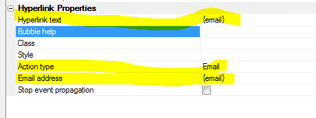
UX Component - List Control - Hyperlink - Specifying a Target HRef - Previously, when you added a hyperlink control to a List, the action associated with the hyperlink was always some Javascript code. Now you can define standard HTML hyperlinks with an 'href' attribute that specifies the hyperlink target.
To specify a hyperlink target, set the 'Action type' to 'Href' and then specify the 'Hyperlink address'. You can use a placeholder for the address. For example if your List has a field called 'address', you can specify the 'Hyperlink address' as {address}.
The hyperlink address must include the protocol if the target is not a page in the application webroot. For example, to display bing.com, you would need to set the target to 'http://www.bing.com', but to display a page called 'page1.a5w' in the current webroot, you would just need to set the target to 'page1.a5w'.

Client-Side Template Tester - User Interface Improvements - The user interface in the client-side template tester window has been enhanced. The window is now resizable and has separate tabs for JSON Data, Template, Javascript and CSS.
As you edit in any of these windows the template preview is automatically updated in the right part of the window.
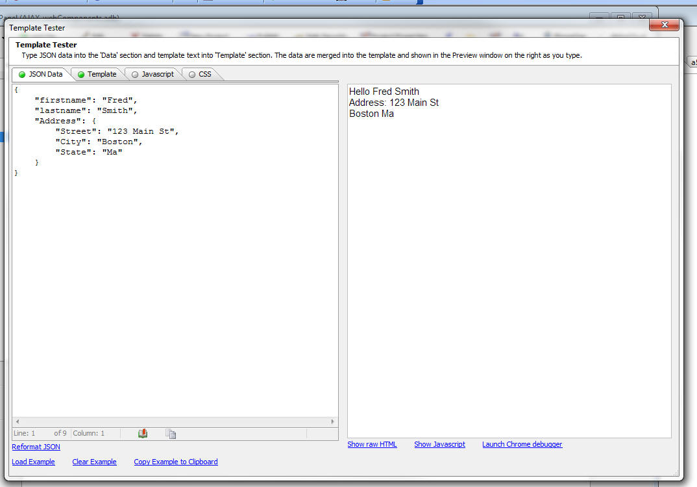
json_reformat_safe() Function - Reformats as string of JSON data with line-breaks and optional indentation.
Syntax:
c json_text = json_reformat_safe(json_text [, flagIndent = .t.])
For example:
dim json as c
json = <<%txt%
{firstname: 'Fred', lastname: 'Smith', Address: {
Street: '123 Main St',
City: 'Boston',
State: 'Ma'
}
}
%txt%
?json_reformat_safe(json)
= {
"firstname": "Fred",
"lastname": "Smith",
"Address": {
"Street": "123 Main St",
"City": "Boston",
"State": "Ma"
}
}
NOTE: json_reformat_safe() wraps the lower level json_reformat() function. The json_reformat() function only accepts 'properly formed' JSON strings (property names must be double quoted and string values must be double quoted). json_reformat_safe() will automatically convert JSON strings where property names are not quoted and strings are single quoted.
json_extract() Function - Extracts a property from a JSON object .
Syntax
c text = json_extract( C json_text, c property_name)
NOTE The JSON text passed to the function must be properly formed (i.e. use double quotes on property and string names). You can use json_reformat_safe() to 'clean' up the JSON string before calling json_extract.
For example:
dim json as c
json = <<%txt%
{
name: 'Fred',
address: {
street: '123 Main St',
city: 'Boston',
state: 'MA'
}
}
'json_extract() requires properly formed JSON, so
'we first call json_reformat_safe()
dim json2 as c
json2 = json_reformat_safe(json)
?json_extract(json2,"name")
= "Fred"
?json_extract(json2,"address")
= "
{
street: '123 Main St',
city: 'Boston',
state: 'MA'
}
"
%txt%
Grid Component - Export - Comma Delimited ASCII - Quoting Fields with Commas - If the data you are exporting has commas in the data, the fields with commas are now quoted. If there are quotes inside a field, the quotes are escaped as double quote (e.g. "").
UX Component - Image Upload - Clear Image - Action Javascript has a method to upload an image and save the uploaded image in a field in the table that the UX is bound to. However there was no easy way to clear out a previously uploaded image - and set the field back to a null value. A new action in Action Javascript now support the 'Delete Image' action.
UX Component - Security Framework - Alternative Login - Login with Google, Facebook, Twitter and LinkedIn - You can now allow users to log into an Alpha Anywhere application using a 'social network' login.
The social network logins are referred to as 'alternative logins' because they provide an alternative way for a user to log into their account in the Alpha Anywhere security system using their social network credentials, rather than the userid/password associated with their account in the Alpha Anywhere security system.
The Alternative Login features are exposed as new actions in Action Javascript for use in a UX component.
For complete details on the Alternative Login feature click here.
Video 1 - Setting up the Providers
Video 2 - Creating Named Providers
Video 3 - Configuring Web Security
Video 4 - Adding Alternative Login to a UX Component
Video 4 - Testing Alternative Login
NOTE: In a previous pre-release build we added support for Google's OpenID protocol.Google has deprecated this protocol, and therefore we will not be supporting it in Alpha Anywhere. If you attempted to test the OpenID protocol in a pre-release build, please send a bug report and we can provide instructions on removing the OpenID elements as they are not compatible with the current system, which is based on oAuth.
Xbasic - CURL - CURL is a popular utility that can be used for many tasks, such as making REST API calls. CRUL is now exposed as a top level Xbasic object, allowing you to execute CRUL commands from your Xbasic code.
Many APIs are documented using CURL examples.
You can use a built-in genie to convert a CURL command into an Xbasic script.
To get to the CURL genie, right click on white space in the Xbasic code editor and select the 'Genies...' command. The select the 'CURL command to Xbasic....' command.
This opens the CURL to Xbasic Genie where you can type in a CURL command then then click the 'Generate Xbasic' button to generate the Xbasic code to execute the specified CURL command.

For more information on the Xbasic CURL object, click here.
Xbasic - Parsing a Name/Value String - extension::URIQuery Class - Xbasic now has a new utility class that makes it very easy to parse name/value pairs in a 'query string'.
The following Interactive Window session demonstrates use of this class:
dim qs as c = "name=fred&city=boston&country=&age=25"
dim postQ as extension::URIQuery
postQ.ParseURIQuery(qs)
?qs
= "name=fred&city=boston&country=&age=25"
?postq.age
= "25"
?postq.country
= ""
?postq.ToJson()
= {"name":"fred","city":"boston","country":"","age":"25"}
Template Tester - Tools Menu - The Template Tester can now be opened directly from the Tools menu when the Web Control Panel has focus.
The Template Tester is useful when you are constructing templates that generate HTML by expanding data in an object. See 'Client-side Templates' in the Release Notes for information on templates.
NOTE: While templates are documented in a section called 'Client-side Templates' this is somewhat misleading because you can also use templates in server-side code using the a5_merge_JSON_into_template() Xbasic function.
Client-side Template Enhancements - Client-side Templates (first introduced in build 2091 - 4284 - see Release Notes for more information) have been enhanced.
The {*root} Tag
Previously if the data you passed into the A5.u.template.expand() function was an array (as opposed to an object with an array as property of the object), you could not use the {*header} and {*footer} directives in your template to generate a header or footer for the array data.
Now, you don't have to artificially structure your data as a top level object with an array as a property of the object. The {*root} tag is now supported when the data passed in is an array.
Consider the following sample data:
var data = [
{firstname: 'Fred', lastname: 'Smith'},
{firstname: 'John', lastname: 'Jones'}
]
and the following template:
var template = [
'{*root}',
'{*header}There are {root.length} people
{/*header}',
'{firstname} {lastname}
',
'{*footer}Count: {root.length} {/*footer}',
'{/*root}'
].join('');
This data and template will product this output:
There are 2 people
Fred Smith
John Jones
Count: 2
Because the template uses the {*root} tag, the data that is passed in is implicitly restructured as:
var data = {
root: [
{firstname:
'Fred', lastname: 'Smith'},
{firstname:
'John', lastname: 'Jones'}
]
}
Escaping the { and } Characters in a Template
The { and } characters in a template indicate placeholders for merged data. If you want to explicitly output either of these characters you can escape them using a leading backslash.
Assume that the data you pass to the template expander is:
{firstname: 'Fred'}
Assume that you want the output from the template to be
{Fred}
You would define your template as:
\{{firstname}\}
Pre-processing Arrays Before They are Expanded
You can now pre-process arrays before they are expanded.
For example, assume you have the following data:
var data = {
company: [
{firstname: 'Fred', lastname:
'Smith'},
{firstname: 'John', lastname:
'Jones'},
{firstname: 'Andrea', lastname:
'Jones'},
{firstname: 'Margo', lastname:
'Jones'}
]
}
And the following template:
var template = [
'{company}',
'{firstname} {lastname}
',
'{/company}'
].join('');
This template and data combination will result in this output:
Fred Smith
John Jones
Andrea Jones
Margo Jones
But, say you only wanted to output the top two customers. To do this you would need to pre-process the company array before it was expanded. You can specify the name of a function (which can be a global function, or a function in a namespace) to call before an array is expanded using the @functionName directive in the placeholder for the array.
For example, notice in the template below, the placeholder for the company array specifies that the processCompany function should be called before the data are expanded:
var template = [
'{company@processCompany}',
'{firstname} {lastname}
',
'{/company}'
].join('');
The array pre-processor function gets called with three arguments
Your array pre-processor function must return the array that you want to render.
Here is how the processCompany array pre-processor function could be defined:
function processCompany(data,temp,root) {
//limit to first two items in the array
data = data.slice(0,2);
return data;
}
The resulting output is now:
Fred Smith
John Jones
Now assume you want to first sort the data by the 'firstname' property, then return the top two entries. In this case, the array pre-processor function would be defined as:
function processCompany(data,temp,root) {
//sort on the 'firstname' property
data.sort( function(a,b) {
if (a.firstname < b.firstname) return
-1;
if (a.firstname > b.firstname) return
1;
return 0;
}
)
//limit to first two items in the array
data = data.slice(0,2);
return data;
}
The resulting output is now:
Andrea Jones
Fred Smith
An important use for the array pre-processor function is to compute summary data for the array. See Using the Special "root" and "temp" Variables in Templates below. You can compute all of the summary values your template needs in a single function, rather than defining separate functions for each summary value your template outputs.
Using the Special "root" and "temp" Variables in Templates
You can use the special "root" and "temp" variables in a template by enclosing them in [ and ].
The example below demonstrates the use of both [root] and [temp] in the template.
Download component that demonstrates this example.
TIP: To watch a video of how the template used in this example was developed, watch these videos:
Watch Video - Part 1
Watch Video - Part 2
Watch Video - Part 3
Watch Video - Part 4
Watch Video - Part 5
Watch Video - Part 6
Watch Video - Part 7
Watch Video - Part 8
Watch Video - Part 9
For example, consider the following data set:
var data = [
{
orderId: 1,
date: '1/1/2014',
orderItems: [
{itemId: 1, qty: 3, price: 23.4},
{itemId: 23, qty: 2, price: 3.3},
{itemId: 7, qty: 5, price: 5.3}
]
},
{
orderId: 2,
date: '1/2/2014',
orderItems: [
{itemId: 31, qty: 7, price: 3.8},
{itemId: 17, qty: 4, price: 9.2}
]
},
{
orderId: 3,
date: '1/5/2014',
orderItems: [
{itemId: 11,
qty: 9, price: 13.3},
{itemId: 27,
qty: 2, price: 19.2},
{itemId: 6,
qty: 19, price: 3.6},
{itemId: 7,
qty: 22, price: 9.1}
]
}
]
The data are an array of order objects. Each order has a nested array called 'orderItems' that have the order items for that order.
Assume that you would like the template to render as shown below:
| # | Item Id | Quantity | Price | Extended Total |
| 1 | 1 | 3 | $23.40 | $70.20 |
| 2 | 23 | 2 | $3.30 | $6.60 |
| 3 | 7 | 5 | $5.30 | $26.50 |
| Count: 3 | Avg Quantity: 3.33 | Avg Price $10.67 | Total: $103.30 |
| # | Item Id | Quantity | Price | Extended Total |
| 1 | 31 | 7 | $3.80 | $26.60 |
| 2 | 17 | 4 | $9.20 | $36.80 |
| Count: 2 | Avg Quantity: 5.50 | Avg Price $6.50 | Total: $63.40 |
| # | Item Id | Quantity | Price | Extended Total |
| 1 | 11 | 9 | $13.30 | $119.70 |
| 2 | 27 | 2 | $19.20 | $38.40 |
| 3 | 6 | 19 | $3.60 | $68.40 |
| 4 | 7 | 22 | $9.10 | $200.20 |
| Count: 4 | Avg Quantity: 13.00 | Avg Price $11.30 | Total: $426.70 |
There is a lot going on in this example. The template for this example is shown below.
Items of note in this example include:
Here is the template for this example:
| # | ',Item Id | ',Quantity | ',Price | ',Extended Total | ',
|---|---|---|---|---|
| {[countOneBased]} | ',{itemId} | ',{qty} | ',{price:number(\'$#,###.00\')} | ',{qty*price:number(\'$#,###.00\')} | ',
| Count: {[temp].itemCount} | ',', | Avg Quantity: {[temp].averageQuantity:number(\'#.00\')} | ',Avg Price {[temp].averagePrice:number(\'$#,###.00\')} | ',Total: {[temp].totalExtendedPrice:number(\'$#,###.00\')} | ',
The array pre-processor function for the 'orderItems' array is defined as follows:
function orderItemsPreProcessor(data,temp,root) {
var totalQuantity = 0;
var totalPrice = 0;
var totalExtendedPrice = 0;
var extendedPrice = 0;
var _d = '';
for(var i = 0; i < data.length; i++) {
_d = data[i];
extendedPrice = _d.qty * _d.price;
totalExtendedPrice =
totalExtendedPrice + extendedPrice;
totalPrice = totalPrice + _d.price;
totalQuantity = totalQuantity + _d.qty;
}
//the first time this function is called temp.grandTotal will be undefined
//so we initialize it to 0
if(typeof temp.grandTotal == 'undefined') temp.grandTotal =
0;
//we can then accumulate the grand
total for all orders
temp.grandTotal = temp.grandTotal + totalExtendedPrice;
temp.averagePrice = (totalPrice /
data.length);
temp.averageQuantity = (totalQuantity / data.length);
temp.totalExtendedPrice = totalExtendedPrice;
temp.itemCount = data.length;
//it is CRITICAL that the pre-processor function return an
array to be expanded
//even though this function has not modified the data in the
'data' array,
//it must still return the 'data'
array
return data;
}
Templates Can Reference Functions in Any Namespace and Can Take Arguments
Previously, when a template referenced a function, the function needed to be defined as a global function. Now, templates can reference functions an arbitrary namespaces.
Consider the following simple example:
Data:
var data = [
{firstname: 'Fred', lastname: 'Smith'},
{firstname: 'John', lastname: 'Jones'}
]
Javascript function definition:
(Notice that the function takes two arguments and is in the 'obj' namespace.)
var obj = {
fullname: function(fn,ln) { return 'Hello ' + fn + ' ' +
ln + ''}
}
Template:
(Notice that the template calls the function in the 'obj' namespace and passes in argument values from the current row.)
var template = '{firstname} {lastname} Function call is
output here: {@obj.fullname(firstname,lastname)}
'
The output HTML produced is:
Fred Smith Function call is output here: Hello Fred
Smith
John Jones Function call is output here: Hello John
Jones
Defining Custom Formatters
Templates can format data before it is output using the built-in format directives. For example, you can format a number so that it has $ and two decimal places by using the :number() format directive.
For example:
{price:number(\'$#,###.00\')}
However, you can also define your own custom format directives. This is done by adding functions to the A5.u.template.formats object.
Consider the following example:
Data:
var data = {
company: [
{firstname: 'Fred', lastname:
'Smith', phone: 7815551234},
{firstname: 'John', lastname:
'Jones', phone: 2125551234},
{firstname: 'Jane', lastname:
'Jones', phone: 4155551234},
{firstname: 'Margo', lastname:
'Jones', phone: 4325551234}
]
}
Template:
var template = [
'{company}',
'{firstname:formatName(\'l\')} {lastname:formatName(\'u\')} {phone:phoneNumber}
',
'{/company}'
].join('');
Notice the template uses custom formatters for the each of the fields. Both 'firstname' and 'lastname' use a custom formatter called 'formatName' and in one case an argument value of 'l' is passed in (to format the data as lower case) and in the second case, an argument value of 'u' is passed in (to format the data as upper case).
The 'phone' field uses a custom formatter called 'phoneNumber'. This formatter does not take any arguments.
To define these two custom formatters, the following Javascript is used to add the format functions to the A5.u.template.formats object:
A5.u.template.formats.formatName = function(value,flag)
{
if(flag == 'u') return value.toUpperCase();
else if(flag == 'l') return value.toLowerCase();
else return value;
}
A5.u.template.formats.phoneNumber = function(value) {
return value.toFormat('=(###)-###-#####');
}
Notice that the custom format functions all get passed 'value' - the value to be formatted.
Arguments Passed to Template Functions
If a template function does not explicitly specify arguments, the implicit arguments passed to the function now include the special 'temp' and 'root' variables.
For example, consider the following template snippet:
{@myCustomFunction}
This template function does not specify any arguments.
Therefore the 'implicit' arguments for the function
called are:
Previously, only 'data' and 'context' were passed to the function.
Where context is a string with the name of the variable that the function was being called in the context of. For example, in a {*header} or {*footer} directive for an array called 'company' the 'context' would be 'company'. Hhowever in an individual item in the company array, the context would be blank (as the context is implicit).
UX Component - List Control - Dynamic Images - Client-Side - The List control now allows you to define client-side Dynamic Image fields.
Previously, Dynamic Images were computed on the server. This meant that if the List was populated dynamically using Javascript code, the Dynamic Images would not be computed.
The Dynamic Image builder now allows you to specify the type of Dynamic Image.

If you choose the 'Client-side' option, then you must enter the condition expressions using Javascript. Keep in mind that Javascript is case-sensitive, you must use double equals (i.e. ==) and not a single equals for equality tests, and that strings must be single quoted. Also, when referring to a field in the current row, the field name is prefixed with data. .
The major benefit of client-side dynamic images is that if the data in a List row is edited, the Dynamic Image is immediately recomputed.
Watch Video - Part 1
Watch Video - Part 2
Download Components
UX and Grid Components - Javascript - Trapping Syntax Errors - When you save a component, Javascript function declarations are checked for syntax errors. Also when you edit the Javascript for an event handler, the syntax is checked for syntax errors. Previously this functionality was available, but was turned off by default. Now, it is turned on by default because a more robust method for checking Javascript syntax is used. (Based on the Node.JS 'Grasp' module).
If you want to disable Javascript syntax checking, go to View, Settings, Preferences, Javascript.
OLE Automation - Named Parameters - You can now use named parameters in an OLE automation call. The technique for doing this involves defining a dot variable with the parameters, then passing in the dot variable to the OLE method.
Previously, if you want to specify a value for an optional parameter you had to supply values for all of the optional parameters preceding the one you wanted to define. This could be very tedious.
For example, consider the function prototype for the Microsoft Word .open() method.
.Open(FileName, [ConfirmConversions], [ReadOnly], [AddToRecentFiles],
[PasswordDocument],
[PasswordTemplate], [Revert], [WritePasswordDocument], [WritePasswordTemplate],
[Format],
[Encoding], [Visible], [OpenAndRepair], [DocumentDirection], [NoEncodingDialog],
[XMLTransform])
As this prototype shows, only the first argument (FileName) is required. All other arguments are optional. If you wanted to supply a value for (say) the 'ReadOnly' argument, you would need to specify a value for the 'ConfirmConversions' property as well.
Now, you can define a dot variable and define property values for just the arguments you want to set.
For example:
Dim wrdApp As P 'Word.Application
Dim wrdDoc As P 'Word.Document
wrdapp = ole.create("word.application")
'define a .dot variable and define the arguments you care about
dim args as p
dim args.FileName as c = "e:\files\hello.docx"
dim args.ReadOnly as l = .t.
'pass in the .dot variable to the OLE .open() metehod
wrdDoc = wrdapp.Documents.Open(args)
OLE Automation - Bubble-help for OLE Methods - The Xbasic editor and Interactive window now show the argument list for OLE methods. This is especially useful when you want to use named parameters and pass in a dot variable to the method because it lets you see the argument names, which you will use in the dot variable.
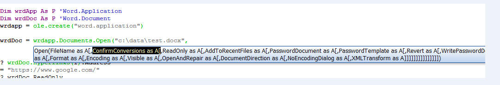
Interactive Window - Shell Commands - You can now execute shell commands directly from the Interactive window. Examples of the different use cases for this feature include:
Watch Video - Part 1
Watch Video - Part 2
Any command with a $ prefix that you enter in the Interactive window is considered to be a shell command. For example, type the following in the Interactive window:
$dir c:\windows
For detailed information on the Interactive window shell commands click here.
Action Javascript - Open .a5w Page Action - Page URL - If the page URL is specified by a placeholder that references fields in the current component, or uses placeholders in the URL, you can now specify that the value in individual placeholders should not be URL encoded by entering the placeholder name as:
{nourlencode:placeholderName}
For example:
{nourlencode:field1}
By default all placeholder values are URL encoded when they are replaced in the URL.
UX Component - Edit-Combo Control - Specifying
Different 'Stored' and 'Display' Values -
Dropdownbox controls allow you to specify that the
stored value is different from the display value. For
example, the control might display a 'ProductName' but
the stored value in the control might be the 'ProductId'.
Edit-combo box controls can now also be configured to
store a different value than their display value, just
like a Dropdownbox control.
NOTE: If you configure an Edit-combo to have a different stored value from its display value, then you must check the option to only allow the user to select values in the choice list. The user cannot type arbitrary values into the control.

The benefit of using an Edit-combo control over a
Dropdownbox control is that you can display multiple
columns of data in the choice list and you can
dynamically populate and filter the choices in the list
with an Ajax callback every time the control is opened.
Watch Video
jQuery - Make Safe for Alpha Anywhere - a5_make_jQuery_safe() Function - Many jQuery Javascript files are written using the $ object as a proxy for the jQuery object. This makes it impossible to use these files in AlphaAnywhere without first editing the files and changing the $ object to the jQuery object. This can be a tedious process because a simple search and replace will not work as that would replace the $ string literal.
The a5_make_jQuery_safe() function converts all references to the $ object to 'jQuery' while leaving $ in variables names and strings unchanged.
NOTE: This function is built on top of the Node.JS GRASP module.
Syntax:
L flag =a5_make_jquery_safe(c filename [, flagCreateBackup = .t. ])
If fileCreateBackup is .t. a file with the extension of .old is created with the original text in the file.
HTML Reports - No Records in Report - If an HTML report has no records in it, it previously displayed a blank page. Now a 'No records in report' message is shown.
UX Component - A5.u.element.setContent() Function -
Normally, you can set the content of an element in a
component by simply getting a pointer to the element and
then setting the element's .innerHTML property. However,
if the element whose content you are setting has been
configured to allow drag scrolling, setting the .innerHTML
directly will destroy the drag scroll settings and the
new content will no longer be scrollable.
The solution to this problem is to use the
A5.u.element.setContent() function to set the element's
content.
Watch Video - Part 1
Watch Video - Part 2
Download Component
Syntax
A5.u.element.setContent(element,html [, options])
Where:
Example:
//get a pointer to the 'CONTAINER_1' container
var ele = {dialog.object}.getPointer('CONTAINER_1');
var string = 'define some long string of html here';
string = string + 'end of string';
var settings = {animation: {allow: true}};
var settings: {
fireEvent: false, //fire the scroll event
mode: 'into-view', //mode can be 'into-view', 'top', 'bottom'
axis: 'both', //which axes do you want to scroll on
offset: {x: 0, y: 0}, //offset from the element that you are
scrolling to
animation: {allow: true, duration: 300} //animation
}
//scroll the element 'span1' into view
var obj = {element: 'span1', settings: settings};
A5.u.element.setContent(ele,string,obj);
//in this next example, instead of scrolling an element into view,
//we scroll to position 0,0 in the new content
//get a pointer to the 'CONTAINER_1' container
var ele = {dialog.object}.getPointer('CONTAINER_1');
var string = 'define some long string of html here';
string = string + 'end of string';
var settings = {}
var obj = {x: 0, y:0, settings: settings};
A5.u.element.setContent(ele,string,obj);
Temp File Folder - Temporary Files - Code has been added to more aggressively clean up any temporary files that Alpha Anywhere created in the temp file folder. To turn on this feature for the development version go to the View/Settings/Preferences menu and set the value for the 'TEMP files' property.
To specify the setting in the Application Server (or the Development Server), go to the 'Advanced' tab in the server control panel.
Reports - Layout Table Reports - Suppress Blank Rows - A new property has been added for each row in a Layout Table report that makes it easy to suppress the entire row in the report if all of the columns in that row are blank.
To set the property, click in the vertical ruler to the left of the row whose property you want to set.

Then, in the property sheet, set the 'Suppress Blank' property.

A row is considered to be blank if the expression that defines the contents for each column in the row is a NULL value (i.e. equals the value returned by the null_value() function).
Note that:
UX Component - List Control - Show/Hide List Footer -
.rowExpander() Method - Each row in a tabular
List layout can have an optional 'List Item Footer'.
(Similar to a row expander in a Grid component). The
initial state of the List Item Footer can be opened, or
closed. The
Syntax:
Where:
Twitter - New functions have been added to make working with the Twitter API easier. Working with the Twitter API now requires that you use OAuth. The following two functions have been added:
Watch Video - Part 1
Watch Video - Part 2
Watch Video - Part 3
Watch Video - Part 4
twitter_getBearerToken() Function - Gets a 'bearer token' from Twitter.
Syntax:
c bearerToken = twitter_getBearerToken(C client_id, C client_secret)
The client_id and client_secret must be obtained from Twitter. Go to dev.twitter.com and create an application. Once you have created an application, you can get the keys.
The bearerToken that is returned will allow you to make Twitter API calls.
Typically you will only need to get the bearerToken once in your application. You can then save it in a session variable for use throughout your application.
The source code for the twitter_getBearerToken() function might be of interest to some developers, and is shown below:
function twitter_getBearerToken as c ( client_id as c ,
client_secret as c )
'DESCRIPTION:Uses OAuth 2.0 to get a bearer token from
Twitter.
'LIMITATIONS:X
dim bl as b = client_id+":"+client_secret
dim cf_1 as extension::CurlFile
dim flag_1 as l
dim slist1[2] as c
slist1[1] = "Authorization: Basic "+base64encode(bl)
slist1[2] = "Content-Type: application/x-www-form-urlencoded;charset=UTF-8"
dim ce as extension::Curl
ce = extension::Curl.Init()
ce.setOpt("URL","https://api.twitter.com/oauth2/token?grant_type=client_credentials")
ce.setOpt("NOPROGRESS",1)
ce.setOpt("USERAGENT","curl/7.34.0")
ce.setOpt("HTTPHEADER",slist1)
ce.setOpt("MAXREDIRS",50)
ce.setOpt("CAINFO",a5.Get_Exe_Path()+"\caroot\ca-cert.pem")
ce.setOpt("CAPATH",a5.Get_Exe_Path()+"\caroot")
ce.setOpt("CUSTOMREQUEST","POST")
ce.setOpt("TCP_KEEPALIVE",1)
ce.SetOpt("FILE",cf_1)
flag_1 = ce.Exec()
if flag_1 then
dim result as p = json_parse(cf_1.GetContent())
twitter_getBearerToken = result.access_token
end if
ce.close()
end function
twitter_clientApiCall() Function - Allows you to call a REST API function in Twitter.
Syntax
C result = twitter_clientApiCall( c bearerToken, c request)
The bearerToken must have previously been obtained using the twitter_getBearerToken() function.
Example:
The following Interactive window session shows how you can get 10 tweets for 'London'
dim bt as c = getBearerToken("YourUserKeyHere","YourUserSecretHere")
dim url as c
url = "/search/tweets.json?q=london&count=10&lang=en&type=recent"
json = twitterClientApiCall(bt,url)
'make the JSON 'pretty'
json = json_reformat(json,.t.)
json = convert_utf8_to_acp(json)
showvar(json)
This example gets a user time line
dim bt as c =
getBearerToken("YourUserKeyHere","YourUserSecretHere")
dim url as c
url = "/statuses/user_timeline.json?count=100&screen_name=twitterapi"
json = twitterClientApiCall(bt,url)
'make the JSON 'pretty'
json = json_reformat(json,.t.)
json = convert_utf8_to_acp(json)
showvar(json)
The source code for the twitter_clientApiCall() function might be of interest to some developers, and is shown below:
function twitter_clientApiCall as c ( bearerToken as c ,
request as c )
'DESCRIPTION:Make a REST call to the Twitter API using a
bearerToken that was obtained using the
twitter_getBearerToken() function
'LIMITATIONS:X
dim slist1[1] as c
slist1[1] = "Authorization: Bearer "+bearerToken
dim cf_1 as extension::CurlFile
ce = extension::Curl.Init()
ce.setOpt("URL","https://api.twitter.com/1.1"+request)
ce.setOpt("NOPROGRESS",1)
ce.setOpt("USERAGENT","curl/7.34.0")
ce.setOpt("HTTPHEADER",slist1)
ce.setOpt("MAXREDIRS",50)
ce.setOpt("CAINFO",a5.Get_Exe_Path()+"\caroot\ca-cert.pem")
ce.setOpt("CAPATH",a5.Get_Exe_Path()+"\caroot")
ce.setOpt("TCP_KEEPALIVE",1)
ce.SetOpt("FILE",cf_1)
flag_1 = ce.Exec()
if flag_1 then
twitter_clientApiCall = cf_1.GetContent()
end if
ce.close()
end function
UX and Grid Component - Tab/Accordion Control - onLeave and onBeforeLeave Events - Two new events have been added to the Tab and Accordion Control. The events can be defined at the control level or at the individual pane level.
Report Server - Logging - A new logging feature
has been added for the Report Server. The report server
log is turned on automatically when the logging is
active on the server, which turns on the access and
error logs. With these logs on, be sure to set the
logging to rotate on size and daily to keep the files
sizes under control and easier to manage.
The report Server log data will look like this
[Fri Jul 11 06:58:34 2014] StartRpt
bb8f711ef8a8487f87a528b315827120
C:\A5Webroot\AppServerDemoV12\NWEmployees.a5rpt
C:\Users\Jerry\AppData\Local\Temp\tmp983.pdf
[Fri Jul 11 06:58:35 2014] Finished
bb8f711ef8a8487f87a528b315827120
C:\A5Webroot\AppServerDemoV12\NWEmployees.a5rpt
C:\Users\Jerry\AppData\Local\Temp\tmp983.pdf
| Value | Description |
| [Fri Jul 11 06:58:34 2014] | Date and time of the action |
| StartRpt | The action, which will be "StartRpt", "Finished ", or "RptError" if no error was reported, but the report was not created. |
| bb8f711ef8a8487f87a528b315827120 | A unique identifier that is assigned to each report at build time |
| C:\A5Webroot\AppServerDemoV12\NWEmployees.a5rpt | The report definition requested |
|
C:\Users\Jerry\AppData\Local\Temp\tmp983.pdf |
The physical file created - often a temp file as
shown here |
By matching the identifier, the time to build a report
can be calculated from the timestamp. This can help
identify reports that are slow to build.
If a report has a start action, but no finished or error
action, that would indicate the report server has not
finished the report.
If the action is "RptError", this error may be noted in the Xbasic error log and a special mini-dump file created in the Xbasic log folder. This mini-dump file will have a name syntax similar to "A5ReportServer_20140710115412520.a5dmp" This file can be used by Alpha Software to evaluate the report properties of a failed report.
UX Component - List - Client-side Events - New events have been added.
Xbasic - MongoDB - NoSQL document databases are becoming popular for certain types of applications. A new MongoDB class has been added to Xbasic to make it easy to query, update and manage a MongoDB database from Xbasic.
Technical Note: The Xbasic mongo class it built on top of the MongoDB node.js driver.
Xbasic - CouchDB - You can now query, update and manage a CouchDB NoSQL database from Xbasic.
Performance Improvements in Following Functions and Methods - Major performance improvements in
Web Applications - Security Framework - Active Directory - The Security Framework for Web Applications now supports Active Directory. That means you can authenticate a user using an Active Directory server.
UX, Grid, TabbedUI and PageLayout Components - Working Preview - Chrome - When you use Working Preview you now have the option of using either Internet Explorer, or Chrome. Previously, Working Preview automatically used Internet Explorer.
The benefits of using Chrome for Working Preview include:
Watch Video - Part 1
Watch Video - Part 2
The Working Preview window now has new hyperlinks at the bottom of the screen.
When Internet Explorer is being used, the menu looks like this:

Clicking on the Internet Explorer hyperlink will bring up a dialog that will allow you to change to Chrome. Your choice is stored as part of the component definition. You can choose to use Internet Explorer for some components and Chrome for others.
When Chrome is used for Working Preview, the menu has more options.
The 'Detach Working Preview Window' is particularly useful because it creates a separate, detached window for Working Preview. This window can be moved to a second monitor and be left open while you return to the Design pane to continue editing your component.
You can set the Detached Working Preview window to update immediately every time a property is changed.
NOTE: For very large components, setting the Detached Working Preview to automatically update is not recommended as the delay in updating the Working Preview window will make setting properties seem sluggish.
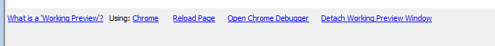
Debugging Javascript Using the Chrome Debugger
To use the Chrome Javascript debugger, you must insert the
debugger;
command into the Javascript that you want to debug.
You must also, click the 'Open Chrome Debugger' hyperlink before you execute the code you want to debug. This will open the Chrome Debugger in a background window.
You can then invoke the code that you want to debug. When the debugger; command is hit, the Javascript will pause and the Working Preview screen will show:
You can then click the 'Open Chrome Debugger' hyperlink again, and it will bring the Chrome Debugger window to the forefront:

UX Component - List Control - New Methods - New method have been added to the List control that fire when the data in the list are changed. The methods are:
The events fire when the .populate(), updateRow(), appendRows() and removeRows() methods are called.
If the 'before' events return false, the corresponding action does not occur.
UX Component - Mobile Simulator - Now includes iPhone5 option in dropdownbox to select simulator size.
UX Component - Action Javascript - Wait Message - Auto Close After Setting - You now have control over how long to wait before the wait message is closed. By default, the setting is 5000 milliseconds.

email_send_mandrill() function - Sender Name Alias - Support for specifying an alias for the sender name has been added. The dot variable that is passed into the email_send_mandrill() function can now have a .from_name property.
For example:
ms.from_name = "Sales at Alpha" 'friendly name - optional
Here is a complete example
'create a .dot variable to define the message
dim ms as p
ms.send_to = "john@acme.com:John Smith,sally@acme.com:Sally Jones"
ms.from_email = "sales@alpha.com"
ms.from_name = "Sales at Alpha" 'friendly name - optional
ms.subject = "Information You Requested"
ms.message_html = "Here is the information you requested."
dim pResult as p
pResult = email_send_mandrill("mysecretkey",ms)
UX Component - List Control - .scrollToClosestValue() Method - Scrolls to the closest record in the List.
Syntax:
Where
Example:
Scroll the List so that the first Customer with a Lastname starting with 'M' is shown at the top of the List
var lObj = {dialog.object}.getControl('list1');
lObj.scrollToClosestValue('m',true,top,{allow: true, duration: 200})
UX Component - List Control - Tabular Layout - Sorting Columns - Custom Javascript - When a user clicks on a column heading in a List to sort the data on that column, you can specify if the sort should take place client-side or server-side (only appropriate if the List is based on a SQL or DBF data source). Now, a new option has been added to the list of choices. The 'Javascript' option allow you to specify your own Javascript code to execute.
UX Component - Repeating Sections - Set Active Row - setRepeatingSectionActiveLogicalRow() Method - A new method is now available for setting the active row in a Repeating Section.
{dialog.object}.setRepeatingSectionActiveLogicalRow(sectionName,logicalRowNumber)
The logical row number of a row in a Repeating Section and its physical row number are the same, unless rows have been deleted from the Repeating Section. When a row is deleted from a Repeating Section it is not really deleted, it is only hidden.
So, for example, assume that a Repeating Section had 5 rows to start with and then the first three rows were deleted. There would now be two visible rows, (logical row number 1 and 2), but the physical row numbers for these two rows would be 4 and 5. In order to set focus to the last visible row in the Repeating Section (logical row 2, but physical row 5) you can now use the new .setRepeatingSectionActiveLogicalRow() method.
This is more convenient than having to first call the ._repeatingSectionLogicalToPhysicalRow() to convert the logical row number to a physical row number, and then calling the .setRepeatingSectionActiveRow() method.
UX Component - List Control - .getVisible() Method - Returns an object with two properties 'start' and 'end' which contain the zero based row numbers of the rows in the List that are currently visible.
var lObj = {dialog.object}.getControl('list1');
var obj = lObj.getVisible();
alert(obj.start + ' to ' + obj.end);
UX Component - List Control - onNavigate Event - The onNavigate event fires when the List has been scrolled. The e object passed into the event handler has two properties:
UX Component - Hide/Show Controls - .setControlDisplay() Method - A new method is exposed that can be used to show/hide controls. The method will hide/show the control and also its label (if the control has a label).
{dialog.object}.setControlDisplay(name, flag [, mode [, animatationJSON]])
The animJSON object has two properties:
NOTE: If you specify animation, you must load jQuery. To load jQuery, go to the Web Project Properties dialog and turn jQuery on.
Example:
{dialog.object}j.setControlDisplay('FRAME_1',false,'d',{type: 'fade',duration: 3000});
UX Component - Validation - Show/Hide Expressions - If a control has been hidden by a client-side show hide expression, the control is no longer validated.
AppLauncher Component - Browser Flags - A new option allows the query string that loads the target component to suppress the browser flags from showing in the query string. Instead, the browser flags are stored in a session variable called session.__browserFlags.
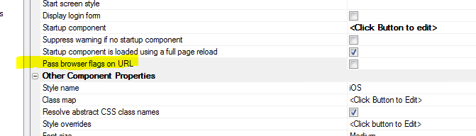
UX Component - List Control - .scrollToItem() method - This method now has new options that allow you to control where the target row will be in the List. Previously, the List was scrolled so that the target row became visible. But you could not control whether the target row was positioned at the top, or bottom of the List.
Now, you can pass in an optional object to the method with settings. For example:
var listObj = {dialog.object}.getControl('list1');
listObj.scrollToItem(50,{mode: 'top' ,animation: {allow:
true, duration: 200},offset: {x: 0,y: 0}});
Options for 'mode' are: top, bottom, in-view
The offset settings control the number of pixels at the top or bottom of the list between the List edge and the scrolled to row.
UX Component - ButtonList Control - Static JSON - A new option has been added to populate a ButtonList control. The Static JSON option allows you to enter some static data in JSON format as the data source for the ButtonList.
UX Component - List Control - Get List Row Number from Element Method - A new method of the List control allows you to get the List row number (zero based) from an element in the row.
For example, assume that you have a List with a freeform layout and a button in the freeform Layout with this code:
The getRow() function would be defined as:
function getRow(ele) {
//get a pointer to the list - assume list is called 'LIST1'
var lObj = {dialog.object}.getControl('LIST1');
//get the row index by calling the .indexFromElement() method.
//'ele' is a pointer to the button in the List row.
var index = lObj.indexFromElement(ele);
}
PhoneGap Builder - Now uses a token based authentication feature so that once you have successfully logged into the PhoneGap build service, all further interaction with the PhoneGap build service is done using the token (until the token expires - currently set for 24 hours after login). The benefit of this approach is that interacting with the PhoneGap build service is faster as we no longer need to authenticate each time.
UX Component - List Control - Javascript Function Datasource - If a List control specifies a Javascript function as its data source, when the .refreshListMethod() is called an Ajax callback is no longer fired (as it was meaningless). Instead, the function that populates the list is called and the List is repopulated with the function results.
UX and Grid Component - Edit-combo and Auto-suggest Control - The height property was not being honored if it was set to a value that included the 'max' keyword.
UX Component - Testing if the Alpha Anywhere Server is Available - The UX component now supports a new method, .serverIsAvailable() that tests if the Alpha Anywhere server is available. This is a more comprehensive test than simply testing if an Internet connection is available.
NOTE: Contrast this method with the UX component's ._getOnlineStatus() method. This method merely tests if there is an internet connection. It does not make an ajax callback to the Alpha Anywhere server. Is merely uses the HTML5 navigator.online property. The .serverIsAvailable() method, on the other hand, does a lightweight callback to the Alpha Anywhere server to test if the server is available.
The syntax for the .serverIsAvailable() method is:
{dialog.object}.serverIsAvailable( [timeOut [, successFunction [, errorFunction]]);
If you don't specify a timeOut, the default value is 300 milliseconds.
The 'successFunction' parameter allows you to pass in an Javascript function to be called once it is determined that the Alpha Anywhere server is available.
The 'errorFunction' parameter is called if the server is not available.
The function will set these variables in the global A5 Javascript object:
_serverAvailable - true/false
_serverCheckTime - the time the server availability was last checked.
Example:
Execute the 'refreshList' action is the server is available.
function success() {
{dialog.object}.playAction('refreshList');
}
{dialog.object}.serverIsAvailable(300,success);
Grid and UX Component - Search - QBE Syntax - Combining Multiple Wildcard Searches with AND - If your search style is set to 'Exact match' and you enter search criteria that use wildcards, and you have QBE syntax turned on, then you can enter search criteria in the following form:
%string1%,%string2%
This will be interpreted as a search for any record that contains either string1 or string2 in the field.
However, you may want to find records that contain
string1
AND string2.
You can now do this using the
&&
operator in your search definition, rather than the
comma.
Application Server - The Application Server now uses an updated default SSL cipher list to enhance the security of SSL-enabled servers. The new cipher list is based on https://wiki.mozilla.org/Security/Server_Side_TLS
UX Component - List Control - Frame - Modern - Show/Hide - If a List control was in a Frame container and the frame was defined as a modern frame that could be shown/hidden and if the initial state of the frame was hidden, the List controls in the Frame did not render properly when the frame was shown.
UX and Grid Components - Pop-up Modal Windows - Resizing - In some cases, when resizing a modal pop-up window, the window content would not redisplay properly after you stopped resizing the window.
Application Server - SSL - Test Certificates - Firefox - Certificate extensions are no longer generated into self-signed certificates when using the Application or Development Server Settings dialog to generate a self-signed certificate or calling directly from INET::SSLContext::CreateTestCertificate(). Version 31 of Firefox no longer accepts deprecated certificate extensions and this change corrects that problem.
IMPORTANT: You will have to regenerate your self-signed certificate.
UX Component - Map Control - onZoom Event - This event was not firing.
UX and Grid Component - Working Preview - Chrome - Memory Leaks - When using Chrome for Working Preview while building UX and Grids components there is a small memory leak that forces you to have to restart Alpha Anywhere occasionally. A number of these memory leaks have been fixed.
NOTE: This comment does NOT apply to the Application Server - it is only for the Development version.
UX Component - Logical Checkbox - Client-side Show/Hide - If you have defined a text label for the control, the text label was not being hidden when the control itself was hidden.
HTML Layout Reports - A number of minor bugs have been fixed. For example, scrolling HTML Layout reports in a mobile application when the report was shown in a pop-up window did not work the second time the report was opened.
Grid Component - File Upload - User Defined Action - Working Preview - Using this action in Working Preview had previously been supported, but got broken in a recent update. This is now working again.
UX Component - Tab Controls - Embedded Components - Server-side Show/Hide or Security - If a server-side show/hide expression or security group setting removed an embedded component from a tab pane at run-time, a Javascript error would occur.
UX Component - Panel Header/Footer - Container Height - The container height property was honored for a Panel Header or Footer.
Grid Component - Edit Row on Demand - afterRowSwitchFromEditable Client-side event - This event was not firing if the row you were editing was implicitly set to not-editable mode because the user clicked to edit another row and the Grid was set to edit one row at a time.
UX and Grid Component - Javascript Actions - Fixes a recently introduced bug where a Javascript Action that used Action Javascript to open a child component in a div on the parent component failed.
Report Editor - Layout Table Reports - Static HTML Cells - Now honor the font and alignment properties applied at the cell level.
Report Editor - Layout Table Reports - Row size to fit - Now works when row contains static HTML content.
UX Component - List Control - Client Side Summary - Client Side Filtering - Fixed an issue where the client-side summary values were not recalculated if a client-side filter was applied to the List.
UX Component - List Control - Client Side Summary - Fixed an issue where the items in the csSummary object were not upper case, as documented. Also, the count summary value was only being computed if the data in the field was numeric.
UX Component - Lookup Columns - Columnar Layout - If there was no matching row in the lookup List, the data in the List would be misaligned in the List columns.
Grid and UX Component - Lookup Grids - Dynamic Filter - If a Lookup Grid had a dynamic filter, the filter was being applied as a 'user filter' rather than as a 'base filter'. This meant that if the user clicked the 'Clear Search' button on the Lookup Grid, the dynamic filter was removed.
Grid and UX Component - Javascript Actions - Fixed an issue that could have resulted in the .playAction() method invoking the wrong action.
UX Component - Slider - Date Values - Two Value Mode - When a two value slider was configured to show date values, the dates were off by when when you set the value on the date start/end.
Reports - Named Datasources - Fixed a recently introduced issue with reports that use named data sources (not to be confused with named connection strings which do not have any issues).
UX and Grid Components - Client-side Expressions - Date Fields - Client side expressions (for example, show/hide, enable and calculated fields) that are based on controls whose data type is set to 'Date' or 'Time' now treat the controls as true Javascript date objected.
For example, say you had a UX with two input controls (called say 'DATE1' and 'DATE2') and a button. Say you defined as show/hide expression for the button as follows:
DATE1 > DATE2
Assume that the client side date format was set to MM/dd/yyyy and that the values in the two controls were '04/20/2000' and '02/01/2000'.
Previously, this expression was evaluated as as string expression. So the string '04/20/2000' was compared to the string '02/01/2000'.
This might have led to the correct result in some circumstances, but would not have been correct in other circumstances. For example, say that the client side date format was set to dd/MM/yyyy. Now the two values for the date controls would be '20/04/2000' and '01/02/2000' and comparing these two values as strings would lead to a different result.
Now, the input controls are converted to real Javascript data objects (in other words, the date string values are automatically parsed using the setting for the client side date format) and the client-side expression is evaluated using true date values.
Previously, some uses might have implemented their own solution to this problem by defining a custom Javascript function to use in the show/hide expression. For example, the show/hide expression might have been specified as:
compareDates(DATE1,DATE2)
And the compareDates function would have been defined as:
function compareDates(d1,d2) {
var _d1 = new Date();
var _d2 = new Date();
_d1.fromFormat(d1,'MM/dd/yyyy');
_d2.fromFormat(d2,'MM/dd/yyyy');
if(_d1 > _d2) return true;
else return false;
}
If you had previously implemented this pattern, you will now get an error because the inputs to the compareDates() function (d1 and d2) are now date objects and not strings.
UX Component - List Control - Cascading Lists - DBF Tables - Allow Null Selection - If you had defined cascading List controls (i.e. a child List whose data depends on the selection in its parent List) and the List data source was .dbf tables, and the parent List was set to not allow a null selection, then when the UX initially rendered, the child List was not populated, as it should have been. The child List was only populated after the user clicked on a row in the parent List.
Edit-Combo, Auto-Suggest and List Controls - Web Applications - Touch Enabled Computers - Windows 8.* - If you are running a web application on a touch enabled computer under Windows 8.*, Edit-combo, Auto-suggest and List controls will not display a vertical scroll bar because the assumption is that the user will use touch gestures on the list to scroll the data.
This assumption is valid for a mobile application that does not support mouse interaction, but in a web application on a machine that does support mouse interaction, you would want to see a vertical scroll bar.
You can turn off drag scrolling (and thus cause the vertical scroll bar to appear), by executing the following Javascript code:
A5.u.drag.useDragScrolling = 'never';
If your application is running in a Tabbed UI, a good place to inject this code is in the Tabbed UI's 'Javascript to run on startup' property.

In the case of a Grid, you can use the onGridRenderComplete client-side event.
UX Component - Define Custom Watch Events - The client-side 'calculated fields', 'enable expression' and 'show/hide' expressions all generate watch expressions that automatically fire when the 'watched' variables change.
You can completely bypass these properties and instead define your own watch expressions.
For example, the following code can be placed on the client-side beforePrepare event to define a custom watch event that updates the value in 'TEXTBOX1' whenever the value in 'TEXTBOX2' changes.
{Dialog.Object}.dialogWatches['MY_WATCH_EVENT'] = {
watch: ['TEXTBOX2'],
variables: [],
updateColumn: 'TEXTBOX1',
onChange: function(data) {
var dialog = {};
var summary = {};
{Dialog.Object}._getDialogVariables(dialog,summary,data);
var txt2 = {dialog.object}.getValue('textbox2');
{Dialog.Object}.setValue('TEXTBOX1',
{dialog.object}._functions.myFunc2(txt2) );
}
}
Using CSS Icon Images and Bitmap Images - A5.u.icon.html() Function - The Alpha Anywhere Javascript library contains a useful utility function that makes working with CSS Icon images and regular bitmap images easier.
The issue is somewhat complicated because the HTML markup to display
a bitmap image uses the
tag, whereas the HTML markup for a CSS Icon image uses a
tag with special
class names.
The A5.u.icon.html() function takes the name of the image you want to display and generates the appropriate HTML markup. It is also able to interpret the special syntax Alpha Anywhere uses to assign an in-line style to CSS Icons.
For example:
var icon1 = A5.u.icon.html('cssIcon=fa fa-align-center fa-2x {color: blue;}');
will return the following HTML markup:
and:
var icon2 = A5.u.icon.html('images/$$application.chrome.png.a5image');
will return this HTML markup:

UX Component - List Control - Using the Client-side Computed Columns Feature to Display Dynamic Images in a List - The Computed Columns property allows you to define computed (virtual) columns to display in a List. The computed columns can display dynamic images (i.e. images that are based on data in the current row). For example, you could define the following Computed Column:
data.DYNAMICIMAGE = function(data,index) {
if(data.State == 'MA') {
return A5.u.icon.html('cssIcon=fa fa-align-center
fa-2x {color: #f6b5b5;}');
}
else if(data.State == 'CA') {
return A5.u.icon.html('cssIcon=fa fa-align-center
fa-2x {color: blue;}');
}
else if(data.State == 'NY') {
return
A5.u.icon.html('images/$$application.chrome.png.a5image');
}
else return 'Not Defined';
}(data,index);
UX and Grid Component - Sending E-mail From the Client Using Mandrill - Alpha Anywhere has well documented methods for sending email from a web component. These method are all server-side method. An Ajax callback is made to the server and the e-mail is sent from the server. However, it is possible to send an e-mail directly from the client without involving the Alpha Anywhere server at all using the Mandrill Mail service.
The technique discussed here uses the XMLHttpRequest object to make a REST call to Mandrill.
function sendMailData() {
//data for the message
var url = "https://mandrillapp.com/api/1.0/messages/send.json"
var json = {
"key": "Your Mandrill key here",
"message": {
"to": [
{
"email": "test@gmail.com"
}
],
"from_email": "customerservice@gmail.com.com",
"subject": "Message Subject",
"html": "Message text here",
"text": "Text form of message",
"preserve_recipients": false
},
"asynch": false,
"ip_pool": null,
"send_at": null
}
var obj = {};
obj.url = url;
obj.json = json;
return obj;
}
function sendMail() {
var obj = sendMailData();
var _url = obj.url
var params = JSON.stringify(obj.json);
var _xhr = new XMLHttpRequest();
_xhr.open('POST',_url,true);
_xhr.timeout = 5000;
_xhr.setRequestHeader("Content-type",
"application/x-www-form-urlencoded");
_xhr.setRequestHeader("Connection", "close");
_xhr.ontimeout = function(e) {
alert('error - timeout');
}
_xhr.onload = function(e) {
if(this.status == 200) {
alert('sent');
} else {
alert('failed')
}
}
_xhr.send(params);
}
UX Component - Drag Scrollable Elements (including Lists) - Dynamically Turning Scrolling On/Off - You can dynamically turn scrolling on/off on certain elements, including List controls.
The basic steps are:
1. Get a pointer to the element
2. Call this code:
A5.u.drag.setDisabled(element,dragType,value)
For example:
//get a pointer to the List obj
var lObj = {dialog.object}.getControl('mylist');
//get a pointer to the scrollable part of the List
var ele = $(lObj.contId+ '.CONTENTWRAPPER');
//disable scrolling
A5.u.drag.setDisabled(ele,'scroll',true);
//now enable scrolling
A5.u.drag.setDisabled(ele,'scroll',false);
The dragType parameter can be 'scroll' or 'custom'. 'Custom' is used for 'drag' actions that are not 'scroll' actions. For example, a Carousel uses a custom drag, not a 'scrolling' drag.
Basic Authentication - How to Create an .A5W Page that Requires Basic Authentication - Basic Authentication is a simple HTTP form of authentication.
As defined in Wikipedia:
HTTP Basic authentication (BA) implementation is the simplest technique for enforcing access controls to web resources because it doesn't require cookies, session identifier and login pages. Rather, HTTP Basic authentication uses static, standard HTTP headers which means that no handshakes have to be done in anticipation.
If you create simple web services in Alpha Anywhere, you might want to use basic authentication on the .a5w page that implements your web service.
In the example page below, basic authentication is used. In this trivial example, the only user Id/password combination that is valid is Alpha/Anywhere. However, the example could easily be extended to do a database lookup to authenticate the user.
When this page is called (by some other program that is trying to consume the web service implemented by this page), it is assumed that the headers will have been set to supply the user id and password.
If you try to call this page from a browser, the browser will prompt for a user id and password
<%a5
if ("Authorization: Basic " $ Request.Headers)
'extract the 'Authorization'
from the request header
dim EncodedUserAndPass as c =
filter_string(Request.Headers,"Authorization: Basic ", crlf())
EncodedUserAndPass = word(EncodedUserAndPass,2,": Basic")
EncodedUserAndPass = alltrim(EncodedUserAndPass)
'the authorization is base64 encoded. decode it.
dim DecodedUserAndPass as b =
base64decode(EncodedUserAndPass)
'extract the username and password
dim Username as c =
word(DecodedUserAndPass, 1,":")
dim Password as c = word(DecodedUserAndPass, 2, ":")
'here is where you could do a database lookup to authorize the user
if (Username = "Alpha" .and.
Password = "Anywhere")
? "Authorized as " + Username
'this is where you would implement the web service.
'at this point, the user has been authorized.
'for example, you might respond with some JSON data
'e.g. data = "{name: 'alpha', city: 'Boston'}"
'?data
else
?"Bad username or password"
'if you want to present the user with another change to log in, uncomment this
'Response.StatusCode = "401"
'Response.StatusDescription = "Not
Authorized"
'Response.Headers.Add("WWW-Authenticate",
"Basic")
end if
else
Response.StatusCode = "401"
Response.StatusDescription = "Not Authorized"
Response.Headers.Add("WWW-Authenticate", "Basic")
end if
%>
UX and Grid Component - Edit-Combo - Dynamically Repopulate Choices - When you define an Edit-Combo control, the builder allows you to specify that the choices shown in the edit-combo should be computed at render time, or dynamically, by making an Ajax callback every time you open the edit-combo.
If you choose the option to populate the edit combo at render time, you might still want to programmatically change the choices in the edit combo.
Here is the Javascript showing how it can be done:
//get a pointer to the edit-combo for 'TEXTBOX1'
obj = DLG1_DlgObj.fieldHelpers['TEXTBOX1'];
//define the new date for the edit-combo
var _d = ['Red','Green','Blue','Orange'];
//call the .setData() method to repopulate the
edit-combo
obj.setData(_d);
If you want to generate the new choices for the edit-combo by making an Ajax callback to the server, here is how the Xbasic function that handles the callback might be written:
This example is where the edit-combo shows a single column of data.
function xb_refreshData as c (e as p)
dim cn as sql::Connection
cn.open("::Name::northwind")
sql = "select customerid from customers where country = 'uk'"
cn.Execute(sql)
rs = cn.ResultSet
dim txt as c
txt = rs.ToString()
dim data as c
data = js_list_to_array(txt)
dim js as c
js = "var obj = {dialog.object}.fieldHelpers['TEXTBOX1']; "
js = js + "var _d = " + data + ";"
js = js + "obj.setData(_d);"
xb_refreshData = js
end function
This example is where the edit-combo shows a multiple columns of data.
function xb_refreshData as c (e as p)
dim cn as sql::Connection
cn.open("::Name::northwind")
'note that we alias the columns in the SQL statement with field names
'that are capitalized. this is because Javascript is case-sensitive and the
'property names in the JSON data that is used to populate the edit-combo
'are all capitalized. the column aliases will be uses for the property names
'when the .ToJSONObjectSyntax() method is called.
sql = "select customerid as [CUSTOMERID], contactname as [CONTACTNAME] from customers where country = 'uk'"
cn.Execute(sql)
rs = cn.ResultSet
dim txt as c
txt = rs.ToJSONObjectSyntax()
dim data as c
data = "[" +
stritran(alltrim(txt),crlf(),"
dim js as c
js = "var obj = {dialog.object}.fieldHelpers['TEXTBOX1']; "
js = js + "var _d = " + data + ";"
js = js + "obj.setData(_d);"
xb_refreshData = js
end function
UX and Grid Controls - Button Icons and Text - Setting Dynamically - In the case of 'advanced' buttons (all buttons in a UX are, by default 'advanced' buttons and 'Action Buttons' in a Grid are 'advanced' buttons), you can dynamically set the button icon, or button text by setting properties in the underlying button object, then refreshing the button object.
For example:
var bc = {dialog.object}.getControl('MYBUTTON1');
bc.icon = 'cssIcon=FontAwsomeIconHere';
// optionally you can also set 'hoverIcon', 'pressedIcon',
and 'disabledIcon'
bc.refresh();
UX Component - List Control - Cascading Lists - Delay Render - The UX component makes it very easy to create cascading Lists. For example, say you have 3 Lists:
You can easily configure the orders List to specify that the customer List is its parent List and the orderDetails List to specify that the orders List is its parent.
If you specify that a List has a parent, then when you click on a row in the parent List, ajax callbacks are automatically made to refresh the child Lists.
Now, assume that each List is placed in its own PanelCard and the PanelCards are wrapped in a PanelNavigtor. Further assume that for each List you have checked the 'Delay render till visible' property.
The desired behavior is that when the UX is initially rendered, ONLY the customer List is rendered. Then when the user clicks on a row in the customer List, a single ajax callback is made to populate the order List and the PanelCard that contains the orders List gets focus.
Next, when the user clicks on a row in the orders list, again a single ajax callback is made to populate the orderDetails list and the PanelCard containing OrderDetails gets focus.
However, if you set up your UX as described above, when you click on a row in the customer List, you will notice that there are two ajax callbacks and that the orders List is refreshed twice - not once as desired. The first ajax callback occurs because the customer List automatically refreshes all of its child Lists when the user selects a row in the List. The second callback occurs because the PanelCard that contains the orders List gets focus and the orders List was configured to render when it becomes visible.
To solve this problem here is how the setup of the UX component must be changed.
So, for example, in the onSelect event for List1 (the customer List), the following code is executed:
var l = {dialog.object}.getControl('list2');
l._hasBeenRendered = false;
var l = {dialog.object}.getControl('list3');
l._hasBeenRendered = false;
{dialog.object}.panelSetActive('PANELCARD_2');
This event sets the ._hasBeenRendered property for list2 and list3 to false, and then gives focus to PANELCARD_2. When PANELCARD_2 gets focus, list2 is rendered (an ajax callback is made). This is the only callback that is made. Because the orders List (list2) no longer has its 'Has Parent List' property set, no callback triggered by simply clicking on a row in the customer list.
Similarly, the onSelect event for List2 (the orders List), the following code is executed:
var l = {dialog.object}.getControl('list3');
l._hasBeenRendered = false;
{dialog.object}.panelSetActive('PANELCARD_3');
The sample component which uses Northwind demonstrates the concepts discussed in this topic.
UX Component - List Control - Sort Icon Position - By default, when you sort the data in a List column, the sort icon shows to the right of the Column heading. If you are working with a RTL language, such as Arabic or Hebrew, you might want the sort icon on the left of the column heading (as shown below):

This is easily done by customizing the component style. You can either make a change to the style sheet (which will affect all of your components). Or you can make a local change to affect just the UX that you are designing.
To define the changes so that they are local to the current component, edit the 'Local sub-theme definition' as shown below:
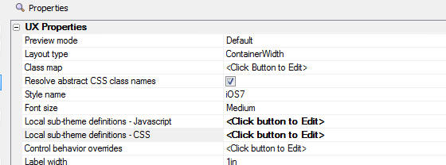
Edit the Javascript as shown below.
You can start by clicking the 'Show style.js file for current style' hyperlink. The search for 'listbox'. Copy the JSON to the clipboard and paste into the editor. You will need to wrap the pasted text in opening and closing curly brackets as shown in the image. The make the edit shown in yellow highlight below.
You will also need to make this change to the CSS:
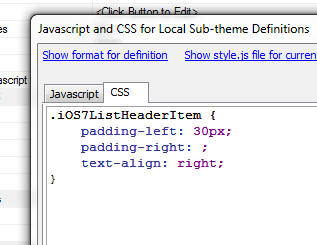
Of course, if you are not using iOS7, but some other style, you will need to use the appropriate style names.
UX Component - Tree Control - How to Save and Restore the Open/Close State of Tree Nodes - Consider a UX that has a tree control with multiple levels of nested branches. Assume that the user has carefully navigated in the tree, opening some branches, while leaving others closed. The user would then like to save the 'state' of the tree so that at a future time, they can easily restore the state of the tree to its current state.
This is easily done with some simple Javascript that captures and restores the state. Below are two function. The first captures the tree state and stores it in a variable in the Dialog object. The second restores the tree state.
function getstate() {
//get a pointer to the tree control
var t = {dialog.object}.getControl('tree1');
//get the tree data and stringify
it.
var js = JSON.stringify(t.data);
//store in a variable in a dialog
object
{dialog.object}.treeData = js;
}
function setstate() {
//get a pointer to the tree
var t = {dialog.object}.getControl('tree1');
//get the stored data. parse it into an object
var d =
JSON.parse({dialog.object}.treeData);
//reopulate the tree
t.populate(d);
}
UX Component - Map Control - List Control - Add Markers to Map Using Data From List - Assume you have a List control with multiple records. Each record has a lat/lng value. You would like to add a marker to the map for each row in the List. You can certainly do this by using a built-in action in Action Javascript to 'Add multiple markers to a map'. However, the Action Javascript action involves making an Ajax callback.
Since the List already has lat/lng data for all of the markers you want to add to the map, it would be nice to be able to add the markers to the map without having to do an Ajax callback.
Here is a working example.
To do this, add a button to the List that calls the addMarkers() function.
Here is the definition of the addMarkers() function
function addMarkers() {
//get a pointer to the list
var lObj = {dialog.object}.getControl('list');
//get the list data
var _d = lObj._data;
//get a pointer to the map control
var m1Obj = {dialog.object}.getControl('map1');
m1Obj.removeMarkerGroup('GROUP1');
var _dr = '';
//loop through all of the rows in the list
//reading the 'name', 'city', 'state', 'latitude' and 'longitude'
//columns in the list.
for (var i = 0; i < _d.length; i++) {
_dr = _d[i];
delete _s;
_s = {};
_s.group = 'GROUP1'
_s.title = _dr.name ;
_s.detail = {};
_s.detail.has = true;
_s.detail.data = _dr.city + ' - ' + _dr.state;
m1Obj.addMarker('MARKER_' +
i,[Number(_dr.latitude),Number(_dr.longitude)],_s);
}
m1Obj.viewMarkerGroups('GROUP1');;
}
UX Component - Tabular Lists - Showing and Hiding Lists - When a columnar List is shown after initially having been hidden, the List will not render correctly until is has been explicitly refreshed. Here is how you can refresh a columnar List so that it displays correctly after having been shown:
var lObj = {dialog.object}.getControl('mylist');
lObj.refresh();
NOTE: This comment does not apply to free-form Lists. Free-form Lists do not need to be explicitly refreshed.
PhoneGap Application - iOS StatusBar - In iOS, it is common to have the status bar at the top of the screen (with time, Wifi, and battery information) display as an overlay of the app. For many designs this can be a problem. You might rather have the "old" style of having a separate status bar above the active area of the screen. You might also want to specify the color of the background of that bar (for example, to match or complement the top of your app) and text. PhoneGap gives you an optional "Status Bar" 3rd Party plug-in to customize the status bar on iOS.
See example code in next topic.
Android Back Button - In Android, users often expect the device's "Back" button to control the app. By default, in PhoneGap, this will just exit the app and go back to the previous app. If you have popup windows, or detail views, the users will expect (and their fingers will be trained) to dismiss pop-ups or go back up the view list. See "Navigation with Back and Up" on the Android Developers web site: http://developer.android.com/design/patterns/navigation.html
Here is some code that can be placed in your app (such as in the
Javascript functions or the onRenderComplete Client-Side Event:
// PhoneGap start up and initialization
document.addEventListener('deviceready', function() { // PhoneGap
started
var platform = device.platform;
switch (platform) {
case "Android":
// back button support
document.addEventListener('backbutton', handleBackButton, false);
break;
case "iOS":
if (typeof
StatusBar === 'undefined') break;
// configure statusbar in iOS 7+
StatusBar.overlaysWebView(false);
// Light statusbar text color. Use StatusBar.styleDefault() for dark
text.
StatusBar.styleLightContent();
StatusBar.backgroundColorByHexString("#3355AA"); // Hex RGB value,
similar to CSS
break;
}
}
);
function handleBackButton(e) { // Android back button event handler
// Go through UI items in priority order to do "back"
operation
var winobj = {dialog.Object}.getWindow('INTROWINDOW'); // Is
this window popped up?
if (!winobj.hidden) {
winobj.hide(); // no - hide and
finish
return;
}
winobj = {dialog.Object}.getWindow('SETTINGSPOPUP'); //
another potential window
if (!winobj.hidden) {
winobj.hide();
return;
}
. . .
var panel = {dialog.object}.panelGet('OVERALLLAYOUT'); // is
a docked panel being shown?
if (panel.state.dockPanelShown) {
panel.hideDock(); // yes - hide it
and finish
return;
}
if (canGoBack()) { // do normal user-initiated "back"
operation in app (like a browser)
doBackForward(+1);
return;
}
// nothing left - exit app
e.preventDefault();
navigator.app.exitApp();
}
Note that the "back" handling seems to work in Android 4.3, but may not
work in earlier versions.
Xbasic Classes - Property Getter and Setter Functions - You can create special .get() and .set() functions to read and write property values in a class. For example, in the class below the 'foo' property of the class has a .get() and .set() function. These functions are automatically invoked when you try to set or get the value of the classes' .foo property.
define class mynamespace::mySampleClass
dim _foo as c = "hello"
function sampleMethod1 as v()
ui_msg_box("sampleVar1",sampleVar1)
end function
function foo.get as c ()
foo.get = _foo
end function
function foo.set as v (value as c )
_foo = upper(value)
end function
end class
Using this class:
dim x as mynamespace::mySampleClass
?x.foo
= "hello"
x.foo = "Goodbye"
?x.foo
= "GOODBYE"
Calling SOAP Web Services From Xbasic - This topic shows 'real world' examples of Xbasic code that call SOAP web services.
Examples are provided here for WorldPay (a credit card processing company), Kareo (a medical billing software company) and Norman G Jensen, Inc (a provider of freight brokerage services).
The source code is extensively commented and is intended as a learning vehicle to help you write code to call these and other similar SOAP web services.
WorldPay
WorldPay provides credit card processing as a web service. For more
information go to
http://www.worldpay.com/us.
The function below encapsulates the process of charging a credit card using the
world pay service.
This example was provided by Max Hammond, who has extensive experience using
Alpha Anywhere with SOAP web services.
FUNCTION WorldPay_ProcessCC AS CallResult (acctid AS C, ccname
AS C, ccnum AS N, amount AS N, expmon AS N, expyear AS N )
dim Result as CallResult
on error goto errorWp_ProcessCC
dim webLink as c = "https://trans.worldpay.us/Web/services/TransactionService?wsdl"
dim assemblyFile as C = "C:\Program Files (x86)\a5V12\WorldPayService.DLL"
dim webEndpoint as c = "https://trans.worldpay.us/Web/services/TransactionService"
dim sv as DOTNET::Services
dim ay as DOTNET::AssemblyReference
ay.FileName = assemblyFile
' This extra call does the heavy lifting and registers the assembly DLL.
' If the assembly does not exist, create one.
if .not. File.Exists(ay.FileName)
if .not. sv.GenerateWCFWebServiceClientFromURL(webLink,
ay.FileName)
Result = sv.CallResult
end if
end if
' Load the assembly into the Alpha Anywhere type system.
if Result.Success
if .not. sv.RegisterAssembly("WorldPay", ay)
Result = sv.CallResult
end if
end if
if Result.Error
goto doneWp_ProcessCC
end if
' Set up HTTP Binding
' The binding object determines how we will communicate with the web service.
' This includes the underlying network transport, credentials
dim b as System::ServiceModel::BasicHttpBinding
b.MessageEncoding = System::ServiceModel::WSMessageEncoding::Text
' The settings below will depend on the service.
' We want sufficient capacity to retrieve very large nested structures.
' If you get an error that you have exceeded a size, make the adjustment here.
b.MaxReceivedMessageSize = 10485760
b.maxBufferSize = 10485760
b.MaxBufferPoolSize = 10485760
b.ReaderQuotas.maxDepth = 32
b.ReaderQuotas.MaxStringContentLength = 10485760
b.ReaderQuotas.MaxArrayLength = 16384
b.ReaderQuotas.MaxBytesPerRead = 4096
b.ReaderQuotas.maxNameTableCharCount = 16384
' Set up the security.
' In this case, we are using transport level security a UserName credential over
SSL and will provide a user name credential.
b.Security.Mode = System::ServiceModel::SecurityMode::Transport
b.Security.transport.ClientCredentialType =
System::ServiceModel::HttpClientCredentialType::None
b.Security.Transport.ProxyCredentialType =
System::ServiceModel::HttpProxyCredentialType::None
b.Security.Transport.Realm = ""
b.Security.Message.ClientCredentialType =
System::ServiceModel::BasicHttpMessageCredentialType::UserName
b.Security.Message.AlgorithmSuite =
System::ServiceModel::Security::SecurityAlgorithmSuite::Default
' Create an endpoint. This is the address information needed to find the service on the web.
dim endpoint as system::ServiceModel::EndPointAddress = new System::ServiceModel::EndPointAddress(webEndpoint)
' Create Client for WorldPay Service using endpoint and bindings
dim Client as WorldPay::TransactionSOAPBindingImplClient = new
WorldPay::TransactionSoapBindingImplClient(b, endpoint)
' Create Web Request using WorldPay Client
dim WebRequest as WorldPay::processCCSaleRequest
WebRequest.ccinfo = new WorldPay::CreditCardInfo()
WebRequest.ccinfo.acctid = acctid
WebRequest.ccinfo.ccname = ccname
WebRequest.ccinfo.ccnum = ccnum
WebRequest.ccinfo.amount = amount
WebRequest.ccinfo.expmon = expmon
WebRequest.ccinfo.expyear = expyear
' Make Web Service Call to WorldPay
dim WPResponse as p
WPResponse = Client.ProcessCCSale(WebRequest)
' End process in error or success
goto doneWp_ProcessCC
errorWp_ProcessCC:
on error goto 0
Result.Code = error_code_get()
doneWp_ProcessCC:
WorldPay_ProcessCC = Result
END FUNCTION
Kareo
Kareo Medical Billing Software provides a comprehensive web service to manage practices. For more information go to
http://www.kareo.com.
The sample code below was provided by Max Hammond, who has implemented a product using Alpha Anywhere and Kareo.
The following functions are included:
FUNCTION GetAppointments as CallResult (WSDLWebLink as C, ServiceWebLink as C,
AssemblyFile as C, CustomerKey as C, User as C, Password as C, ConnectionString
as C, PracticeName as C)
on error goto errorGetAppointments ' To catch the dim of service objects
dim Result as CallResult
' This extra call does the heavy lifting and registers the assembly DLL
CreateService(WSDLWebLink, ServicePointWebLink, AssemblyFile)
dim RequestHeader as Kareo::www::Kareo::com::api::Schemas::RequestHeader
RequestHeader.CustomerKey = CustomerKey
RequestHeader.User = User
RequestHeader.Password = Password
dim AppointmentsRequest as
kareo::www::kareo::com::api::schemas::GetAppointmentsReq
dim GetAppointmentsRequest as Kareo::GetAppointmentsRequest
AppointmentsRequest.RequestHeader = RequestHeader
GetAppointmentsRequest.request = AppointmentsRequest
dim Service as Kareo::KareoServicesClient = CreateService(WebLink,
EndPointWebLink, AssemblyFile)
' Create the filter for the GetAppointments call
dim filter as Kareo::www::kareo::com::api::schemas::AppointmentFilter
filter.FromLastModifiedDate = date()-30
filter.ToLastModifiedDate = date() + 10
filter.PracticeName = PracticeName
AppointmentsRequest.Filter = filter
' Set the fields you want populated in the return by marking them as true
dim fields as Kareo::www::kareo::com::api::schemas::AppointmentFieldsToReturn
fields.AllDay = .t.
fields.AppointmentReason1 = .t.
fields.AppointmentReason10 = .t.
fields.AppointmentReason2 = .t.
fields.AppointmentReason3 = .t.
fields.AppointmentReason4 = .t.
fields.AppointmentReason5 = .t.
fields.AppointmentReason6 = .t.
fields.AppointmentReason7 = .t.
fields.AppointmentReason8 = .t.
fields.AppointmentReason9 = .t.
fields.AuthorizationEndDate = .t.
fields.AuthorizationID = .t.
fields.AuthorizationInsurancePlan = .t.
fields.AuthorizationNumber = .t.
fields.AuthorizationStartDate = .t.
fields.ConfirmationStatus = .t.
fields.CreatedDate = .t.
fields.EndDate = .t.
fields.ID = .t.
fields.LastModifiedDate = .t.
fields.Notes = .t.
fields.PatientCaseID = .t.
fields.PatientCaseName = .t.
fields.PatientCasePayerScenario = .t.
fields.PatientFullName = .t.
fields.PatientID = .t.
fields.PracticeID = .t.
fields.PracticeName = .t.
fields.Recurring = .t.
fields.ResourceName1 = .t.
fields.ResourceName10 = .t.
fields.ResourceName2 = .t.
fields.ResourceName3 = .t.
fields.ResourceName4 = .t.
fields.ResourceName5 = .t.
fields.ResourceName6 = .t.
fields.ResourceName7 = .t.
fields.ResourceName8 = .t.
fields.ResourceName9 = .t.
fields.ServiceLocationName = .t.
fields.StartDate = .t.
fields.Type = .t.
' Create the GetAppointmentsRequest object with the request information
dim Response as p
' Make the service call
Response = Service.GetAppointments(GetAppointmentsRequest)
' Get the appointment information out of the response.
AppointmentsResponse = Response.GetAppointmentsResult
if AppointmentsResponse.ErrorResponse.IsError
Result.Code = -1
Result.Text = AppointmentsResponse.ErrorResponse.ErrorMessage
elseif .not. AppointmentsResponse.SecurityResponse.SecurityResultSuccess
Result.Code = -2
Result.Text = AppointmentsResponse.SecurityResponse.SecurityResult.ToString()
else
Result = LoadAppointments(AppointmentsResponse.Appointments, ConnectionString)
end if
Result.Code = error_code_get()
goto doneGetAppointments
errorGetAppointments:
on error goto 0
doneGetAppointments:
on error goto 0
GetAppointments = Result
END FUNCTION
The functions below make it easier to populate service requests.
FUNCTION CreateService as Kareo::KareoServicesClient(DefinitionWebLink as C,
EndPointWebLink as C, AssemblyFile as C)
' Make sure the client proxy DLL is created and loaded and create a client proxy
(an object we can make service calls on).
dim Result as CallResult = RegisterServiceDLL(DefinitionWebLink, AssemblyFile)
if .not. Result.Success
error_generate(Result.Code)
end if
' Set up HTTP Binding
' The binding object determines how we will communicate with the web service.
' This includes the underlying network transport, credentials
dim b as system::ServiceModel::BasicHttpBinding
b.MessageEncoding = System::ServiceModel::WSMessageEncoding::Text
' The settings below will depend on the service.
' We want sufficient capacity to retrieve very large nested structures.
' If you get an error that you have exceeded a size, make the adjustment here.
b.MaxReceivedMessageSize = 20485760
b.maxBufferSize = 20485760
b.MaxBufferPoolSize = 10485760
b.ReaderQuotas.maxDepth = 32
b.ReaderQuotas.MaxStringContentLength = 10485760
b.ReaderQuotas.MaxArrayLength = 16384
b.ReaderQuotas.MaxBytesPerRead = 4096
b.ReaderQuotas.maxNameTableCharCount = 16384
' Set up the security.
' In this case, we are using transport level security a UserName credential over
SSL and will provide a user name credential.
b.Security.Mode = System::ServiceModel::SecurityMode::Transport
b.Security.transport.ClientCredentialType =
System::ServiceModel::HttpClientCredentialType::None
b.Security.Transport.proxyCredentialType =
System::ServiceModel::HttpProxyCredentialType::None
b.Security.Transport.Realm = ""
b.Security.Message.ClientCredentialType =
System::ServiceModel::BasicHttpMessageCredentialType::UserName
b.Security.Message.AlgorithmSuite =
System::ServiceModel::Security::SecurityAlgorithmSuite::Default
' Create an end point object to represent the address of the server.
dim e as system::ServiceModel::EndPointAddress = new
System::ServiceModel::EndPointAddress(EndPointWebLink)
' Create the service object using the binding and the endpoint
dim MyService as Kareo::KareoServicesClient = new Kareo::KareoServicesClient(b,
e)
' There are some quotas that are harder to set.
' This utility function will take care of this in one place.
SetSvcGraphObjectQuota(MyService)
CreateService = MyService
END FUNCTION
FUNCTION RegisterServiceDLL as CallResult (WebLink as C, AssemblyFile as C)
' This function retrieves the Web Service Definition Language (WSDL) XML file
and generates a local .NET proxy.
' The proxy assembly is registered in Alpha Anywhere as a namespace (set of
types) and can be used
' as any other .NET type to make web service calls.
on error goto errorRegisterServiceDLL
dim Result as CallResult
dim sv as dotnet::Services
dim Assembly as dotnet::AssemblyReference
'Create Web Service Client and Register
Assembly.FileName = AssemblyFile
if .not. File.Exists(AssemblyFile)
if .not. sv.GenerateWCFWebServiceClientFromURL(WebLink, AssemblyFile)
Result = sv.CallResult
end if
end if
if Result.Success
if .not. sv.RegisterAssembly("Kareo", Assembly)
Result = sv.CallResult
end if
end if
goto doneRegisterServiceDLL
errorRegisterServiceDLL:
on error goto 0
Result.Code = error_code_get()
doneRegisterServiceDLL:
on error goto 0
RegisterServiceDLL = Result
END FUNCTION
FUNCTION SetSvcGraphObjectQuota as CallResult (Service as P)
' This utility function sets the maximum number of objects in the serializer.
' The serializer packages and unpackages the request as it is send over the Web.
' You should only need to do this for services that return large amounts of
data.
dim Result as CallResult
on error goto errorQuota
Operations = Service.Endpoint.Contract.Operations
for i = 1 to Operations.Count
Operation = Operations[i]
Behaviors = Operation.Behaviors
Enumerator = Behaviors.GetEnumerator()
while Enumerator.MoveNext()
Current = Enumerator.Current
if Current.gettype().FullName = "System.ServiceModel.Description.DataContractSerializerOperationBehavior"
Current.MaxItemsInObjectGraph = 2147483647
end if
end while
next
goto doneQuota
errorQuota:
Result.Code = error_code_get()
doneQuota:
SetSvcGraphObjectQuota = Result
END FUNCTION
Norman G. Jensen
Norman G. Jensen, Inc (JGJ) provides US and Canadian customers brokerage, freight forwarding, warehousing,
distribution and consulting services to North American importers and exporters.
For more information about the
company see http://www.ngjensen.com.
This script example downloads the service definition, generates and loads a
client proxy assembly and then calls a service
function that accepts raw XML requests.
dim WebLink as C = "https://forms.ngjensen.com/library/aes_jt_service.php?wsdl"
dim DLLName as C = "c:\temp\aesV12.dll"
dim EndPointWebLink as C = "https://forms.ngjensen.com/library/aes_jt_service.php"
dim Result as CallResult
' Test Values - See Jensen documentation for actual values.
Authorization = 12345
IPAddress = "127.0.0.1"
XML = "
Result = CreateDLL(WebLink, DLLName)
if Result.Sucess
Result = RegisterNamespace(DLLName, "submit_xml")
end if
if Result.Success
Result = SubmitXML(EndPointWebLink, Authorization, IPAddress, XML)
end if
FUNCTION CreateDLL as P (WebLink as C, AssyFile as C)
CreateDLL = new CallResult()
if File.Exists(AssyFile)
end function
end if
dim Service as DotNet::Services
if .not. Service.GenerateWebServiceClientFromURL(WebLink, AssyFile)
CreateDLL = Service.CallResult
end if
end function
FUNCTION RegisterNameSpace as P (AssyFile as C, NameSpace as C)
' Load the assembly and register the types in Alpha Anywhere
RegisterNameSpace = new CallResult()
dim Service as DotNet::Services
dim AssyRef as DotNet::AssemblyReference
AssyRef.FileName = AssyFile
Dim Result as CallResult
if .not. Service.RegisterAssembly(NameSpace, AssyRef)
RegisterNameSpace = Service.CallResult
end if
end function
function SubmitXML as C (EndPointWebLink as C, Authorization as C, IPAddress as
C, XML as C)
dim AES as submit_xml::AES_Methods
dim cc as c
cc = AES.js_submit_xml(Authorization, IPAddress, XML)
SubmitXML = cc
end function
UX Component - List of Switches - A common design pattern in mobile applications is to have a series of switch controls to set logical values. The screenshot below shows how this might look.

Here are some of the important settings for each switch control:

Notice that the 'Control Container Classname' property property has been set to a custom class name. The definition is shown below.
In the CSS, we first set the control container to have a relative
position - which means all absolutely positioned child elements will be
positioned relative to the parent - allowing parent width and position
to be honored be the child.
We then set the first level of child DIVs (of which there is only one -
the switch itself - the label is a LABEL element) to have an absolute
position, a specific width, and a right location of 0px - which means it
will stick to the right of the parent.
.switchCtrlGroup {
position: relative;
}
.switchCtrlGroup > div {
position: absolute;
right: 0px;
width: .75in;
}
Web Application - PhoneGap - If you have a lot of
applications in PhoneGap build, retrieving the app icon
for each app can be slow because the PhoneGap build API
does not have a call to retrieve all icons at once. You
have to call the API once for each app. Therefore, a new
property has been added to the Get Icon Timeout
Threshold property. If you set this property to
AlphaDAO - MySQL - Numeric Fields with 7 or More Decimals - Fixed an issue with MySQL where you could not enter numbers with more than 6 decimal places.
Grid Component - Setting State Variables - Fixed an issue where setting state variables using the e._state pattern was not working in the AfterInsert, AfterUpdate and AfterDelete server-side events.
| UX Component | Multi-select List Control - Icon to Indicate Selected Rows |
The Button List control (and the Checkbox
control - configured to render as a Button List)
can show an icon on selected items. The List
control can also be configured to allow multiple
selections (like a Button List or Checkbox), but
it does not show an icon on the selected rows to
indicate the row has been selected (it shows
selected rows using a different row color). In this video we show how you can easily display an icon on the selected rows. The technique uses a custom CSS class. Watch Video - Part 1 Watch Video - Part 2 Download Component |
| UX Component | Making a TextArea Fill a PanelCard |
Controls such as Lists and Maps have a 'Fill
container' property that allow you to
automatically cause the List or Map to fill the
Panel Card in which the control is contained.
Other controls, such as Text Areas, do not have
this property. In this video we show how you can configure the UX so that the Text Area control automatically fills the Panel Card in which it is contained. Watch Video Download Component |
UX and Grid Component - Image Upload Action - Image Scaling - Fixed issue with scaling image after it was uploaded.
Calendar Component - Editing Events - Fixed an issue editing an event the second and subsequent time. This issue was introduced in build 2089.
UX Component - Phone Gap - Fixed an issue with PhoneGap where Ajax callbacks were failing and images that were loaded from the server were failing.
AlphaDAO - SQL::TableInfo - ParseTableName() Method - A new static method has been added to the SQL::TableInfo object. The .ParseTableName() method takes a fully qualified tablename and returns the base table name, owner, schema and catalog for the table.
For example
dim CatalogName as C
dim SchemaName as C
dim OwnerName as C
dim BaseTableName as C
dim FullName as C = "dbo.[hello.world]"
dim ti as sql::tableinfo
?ti.ParseTableName(CatalogName, SchemaName, OwnerName,
BaseTableName, FullName)
= .T.
?CatalogName
= ""
?SchemaName
= ""
?OwnerName
= "dbo"
?BaseTableName
= "dAgency.06"
?fullname
= "[dAgency.06]"
UX Component - Action Javascript - Panel Actions - Navigate Action - History - The 'Navigate' action now has new options. The options with the 'History' prefix allow you to navigate through the Panel Navigator's history (much list the way a browser's history button works).
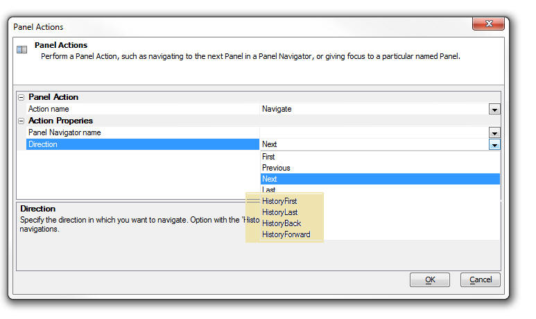
Code Editors - Xbasic and Javascript - Bookmarks - You can now get quick access to any bookmarks you insert into the script or function you are editing by clicking the 'Bookmark' icon on the status bar.
A bookmark is any comment that starts with //.
For example:
'//bookmark1 (Xbasic)
//''Bookmark1 (Javascript)
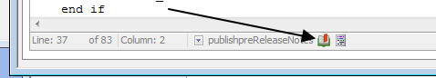
AlphaDAO - Listing Tables in a Database - When
you use the
As a result of this, many of the builders you use in AlphaAnywhere that require you to select a table only present a list showing the first 1000 tables in the database. Now, a new setting in the Settings dialog box allows you to set the maximum number of tables returned in a table listing.
To open the Settings dialog box, select the top-level View menu, then select Settings.

If you are using AlphaDAO to get your own listing of tables in an object, the SQL::TableFilter object which is passed into the .listTables() and .listTablesWithTypes() method now allows you to set the .MaximumTablesInList property on the SQL::TableFilter object. Set this property to -1 for no limit.
For example:
dim sqlFilter as sql::TableFilter
sqlFilter.IncludeAliases= .t.
sqlFilter.IncludeAllCatalogs= .F.
sqlFilter.IncludeAllOwners= .F.
sqlFilter.IncludeAllSchemas= .T.
sqlFilter.IncludeLinkedTables= .f.
sqlFilter.IncludeSynonyms= .t.
sqlFilter.IncludeSystemTables= .f.
sqlFilter.IncludeTables= .t.
sqlFilter.IncludeViews= .t.
sqlfilter.MaximumTablesInList = 2000
dim cn as sql::connection
cn.open("::name::myconnection")
dim list as c
list = cn.listTables(sqlFilter)
Tip: You can use the Xbasic helper function to list tables and automatically honor the setting you have defined in the Settings dialog. The helper functions are a5_list_tables() and a5_list_tables_with_types(). The functions take the connection object as the first parameter and the sql::tableFilter object as the second parameter.
AlphaDAO - Connection Strings - Postgres - Specifying the Default Schema - When working with a Postgres database that contains multiple schemas, you can specify the default schema in the connection string. Unfortunately, at this point, the connection string dialog does not let you specify the default schema, but you can easily edit the generated schema to add the necessary directive to set the schema.
For example:
{A5API='PostgreSQL',A5Syntax='PostgreSQL',A5UseServerSidePrepare=Y,A5InitialCommand='SET SCHEMA ''TestSchema''', Database='Alphasports', Password='alpha',Port='5432',Server='localhost',UserName='postgres'}
In this example, the following directive has been added to the connection string:
A5InitialCommand='SET SCHEMA ''TestSchema'''
Notice that the entire argument to the A5SetInitialCommand is enclosed in single quotes. Therefore the schema name, which must also be enclosed in single quotes uses escaped single quotes (a double single quote).
UX Component - List Control - Multi-Select - If the List control was configured to allow multiple rows to be selected, when the UX was submitted, the selections in the List were not being returned as an array, as they should have been. Instead, they were being returned as a '\n' delimited string. This bug was introduced in the last update.
| Grid Component | Opening a UX from a Button on a Grid and Passing Information Into the UX |
You can open a UX component from a button on a
Grid using several different actions in Action
Javascript. For example, there are built-in
actions to edit the data in the current row of a
Grid using a UX. But sometimes you want to simply open a UX and pass information from the current row in the Grid to the UX. In this video we show how this is easily done by defining arguments in the UX component and then automatically setting the value of these arguments when the UX is opened. Watch Video - Part 1 Watch Video - Part 2 Download Component |
Application Server - OpenSSL - 'HeartBeat' Bug - The Application server now uses Version 1.0.1g of the 3rd party OpenSSL library which Alpha Anywhere uses. This updated library patches the so called 'HeartBeat' vulnerability in the OpenSSL library.
UX Component - List Control - Group Summaries - If you are using the {dialog.object}.groupSummary() method in a Group header or footer, you will need to edit the component and change the method to
this.groupSmmary()
The .groupSummary() function is now a method of the List object. Previously is was a method of the UX object.
Application Server - Warning. A
change has been made to the web security system to load the security
much faster. This change alters one of the published security files. If
a project is published from the latest pre-release to an older
application server, the older application server will report a 500
internal server error as it won't be able to read the new file.
The application server should be the same build
as the development program.
| UX and Grid Component | E-mailing a Report |
A common pattern in both the UX and Grid
component is to place a button on the component
to print a Report and display the Report in a
window, div or TabbedUI pane. However, instead
of displaying the Report, you might want to send
it as an email. The Action Javascript action to Print a Report has an option to call an Xbasic function when the Report has printed. In this video we show how you can use this option to e-mail the report using the Mandrill e-mail service. (Note: The sample function prototype shown in the video is only available in build 4241 or above.) Watch Video - Part 1 Watch Video - Part 2 |
| UX Component | Cross-domain Ajax Callback |
A cross-domain Ajax callback is a callback that
takes places to a server that is in a different
domain than the domain from which the component
was loaded. In this video we show how a callback is made to the Apple iTunes store and we contrast the difference between making the callback directly to the Apple site versus making a callback to the Alpha server first and then having the Alpha server make the call to the Apple site. Watch Video - Part 1 Watch Video - Part 2 Watch Video - Part 3 Download component |
| UX and Grid Component | Using CSS Icons from the Font-Awesome Icon Font Library |
The Font-Awesome CSS Icon library (http://fontawesome.io) is bundled with Alpha
Anywhere and can be used in the UX, Grid and TabbedUI
components. In this video we show how to use the Font-Awesome font library and CSS icons in general. Watch Videos - Part 1 Watch Videos - Part 2 Watch Videos - Part 3
|
| UX and Grid Component | Using 3rd Party Icon Font Libraries (CSS Icons) |
There are many 3rd party Icon Font (CSS Icons)
libraries that can be used with Alpha Anywhere.
In this video we show how you can go to a source
of icon fonts (http://www.fontello.com/)and
download a font library that can then be
installed into Alpha Anywhere. Watch Video |
| UX Component | Using CSS Icons in a List - List Menus |
A common pattern in mobile applications is to
use a List control as the menu. This list
control is then displayed in a Panel Window that
animates in from the left side of the screen.
Icons are typically displayed for each menu
choice. CSS Icons are ideal for these types of
icons. In this video we show how a List can be
easily configured to display a menu. Each item
in the List has a CSS Icon in it. Watch Video |
| UX Component - Mobile Applications | Creating a 'Split-View' using the Pre-Defined 'Split-View' Template |
A common pattern in mobile application is the
'split-view' which shows a menu on the left and
a work area on the right. On a phone, were space
is limited, the menu is hidden and only shown on
demand, but on a tablet, the menu is always
shown. In this video we show how you can quickly
create a UX component that implements a
split-view by selecting one of the pre-defined
'split-view' templates. We then explain some of
the concepts behind the component. Watch Video - Part 1 Watch Video - Part 2 Watch Video - Part 3 |
| UX Component | Split Buttons |
A split button is displayed as a regular button
and a smaller button with a dropdown icon. You
can have different event handlers for the
dropdown button portion of the button and the
regular portion of the button. When space is
constrained, you can use a single split button
to perform many tasks, while still giving the
user single click access to the last selected
task. In this video we show how you can use split buttons in your applications. Watch Video - Part 1 Watch Video - Part 2 Watch Video - Part 3 Download components |
| UX Component | List Control - Lookup Columns |
The List control allows you to define 'lookup
columns' where the data in the column is 'looked
up' either by calling a Javascript function
(that you define), or by looking up the value in
some other List. A typical use case for this is a List that shows Order Details. Each row in the list has a 'productId' field. You would like to display the product name for each product id. In this video we show how to define Lookup Columns in a List. Watch Video Download Component (You will need to change the connection string for both lists to point to the sample Northwind database). |
| UX Component | List Control - Client-side Grouping and List Navigator |
Group breaks can be inserted into the List
control. The group breaks can be 'server-side'
group breaks, or 'client-side' group breaks. The
advantage of 'client-side' group breaks is that
they can be dynamically applied to the data in
the List. That means you can easily switch from
grouping the data by 'Lastname' to grouping by
'City', etc. You can also display summary values
in the group headers and footer. For lists that have group breaks (regardless of whether the group breaks were computed server-side or client-side), you can also display a List Navigator, which allows the user to easily scroll a long List. In this video we give an overview of client-side group breaks and the List Navigator. Then, we go into depth on setting up client-side grouping using Action Javascript (to apply the group breaks after the List is initially rendered) and in the List definition itself (so that when the List is initially rendered, the group breaks are shown). We also show how summary data can be inserted into a List header or footer. Watch Video - Overview Watch Video - Part 1 Watch Video - Part 2 Watch Video - Part 3 Watch Video - Part 4 Download components |
| UX Component | List Control - Using Native SQL For List Data |
When you create a List control that is based on
SQL data, you must use Alpha Anywhere 'portable'
SQL. If you want to base you List on 'native'
SQL (which includes stored procedures), you must
define a 'custom' data source for the List and
then in the Xbasic function that returns the
data, you can use your native SQL. In this video we show how this can be done. Watch Video - Part 1 Watch Video - Part 2 Download Component |
| UX Component | Drag and Drop - Dragging Rows from a Source List to a Target List |
A common design pattern in applications is to
allows users to drag items from one List to
another. The Alpha Anywhere Javascript library contains powerful drag and drop functions that allow you to easily enable this type of functionality. In this video we show how you can create a UX with two List controls and drag rows from one List to the other. Watch Video In this video we explain the Javascript code that enables this functionality: Watch Video - Part 1 Watch Video - Part 2 Watch Video - Part 3 Watch Video - Part 4 Download component Addendum. The previous videos show drag/drop on a List using a mouse. However, the previous examples do not work on some mobile devices because on iOS (for example), the 'up' event fires on the element that initiated the 'down' event (and not on the element on which the up event took place, as you might have expected). The next video explains how the component shown in the previous videos can be slightly rewritten so that it works on a mobile device (and as a bonus, also allows re-ordering of the rows within a List). Watch Video Download component |
| UX Component | List Control - Range Searches |
The List control has a built-in action in Action
Javascript to filter the List. An Ajax callback
to the server is made and the query that
populates the List is executed with a filter
that is computed based on values in the search
control on the UX. Now, you can easily perform
'range' searches, as shown in this video. NOTE: Another way to perform a 'range' search is to use a single search control, turn on the 'Allow QBF' option and then enter the search value as a range using the .. (two dots) synax. For example, to search for quantity between 10 and 20, you would enter 10..20 in the search control. Watch Video |
| UX Component | Absolute Layout Container - Save as PDF |
The Absolute Layout container in a UX allows you
to place controls at absolute locations,
typically using a bitmap image of a form as a
background. You can use an action in Action
Javascript to save the contents of the Absolute
Layout container as PDF file and then download
the PDF to the client, or call some Xbasic
function to process the PDF file. This video shows how this is done using Action Javascript. Watch Video |
| UX Component | Internationalization - Language and Text Dictionary Tags |
Language or Text Dictionary tags are typically
used to internationalize the strings in a UX
component. However, adding the tags to a large
component can be tedious. This video shows how
the Internationalization Helper can be used to
automate this task. Watch Video |
| UX Component | Client-side Formatting for Numeric Data and Templates |
You can use format directives in the Templates
that the UX component List control uses to
display data. This allows you to easily format
numbers (for example show thousands separated by
commas with 2 decimal places) and apply
templates to strings (for example, show
'5551234567' as (555) 123-4567) The video shows how you can insert a format directive into a List template using the Number Format Genie. Watch Video |
| UX Component | Using a List Control to Display Detail Information (in Field/Value Pairs) for a Record |
A common pattern in mobile applications is to
display a List of records and then when the user
clicks on a row in the List to display a list of
fields and corresponding values for the row the
user clicked on, with one field/value pair per
line. In this video we show how a second List can be used to display the field/value pairs and how this List can be dynamically populated when the user clicks on a row in the main List of records Watch Video - Part 1 Watch Video - Part 2 Download component Addendum: In this video we show how you can enhance the UX by showing a message in the Detail List when no record is active in the primary List. Watch Video |
| UX Component | Dynamically Populating a List with Data from a SQL Database |
Populating a List dynamically with data from a
SQL database is a very common pattern in
application development. In this video we show
how this is easily done. In the video we show how a List control on a UX can be populated with customers in a country. The country is selected from a dropdown control. Watch Video - Part 1 Watch Video - Part 2 Download component |
| UX Component | Transform Data Type of List Data |
By default, the data type for each field in a
List is a Javascript string. In some cases you
might want the data type for a column to be a
Javascript date or number object. A benefit of transforming dates into true Javascript date objects is that you can then use date formatting in the template for the List. For example, when displaying a field called OrderDate in the the List, instead of specifying {OrderDate} in the template, you might specify {OrderDate:date('yyyy-MM-dd')} Watch Video Download component |
| UX Component | List Virtualization - Optimizing the List for Large Number of Rows |
When you are working with List controls that
contain a large number of rows (say several
thousand rows), it is advisable to turn on the
List's 'virtualization' feature. With
virtualization turned on, the List will only
render a small number of rows at a time (the
visible rows and some additional rows above and
below the visible rows). Turning on List Virtualization will dramatically reduce both the time taken to load the List and the amount of memory consumed by the List. Watch Video Download component |
| UX Component | List Control - Modeless Preview Window in List Builder |
When you are designing a List control in a UX
component, the List Builder is a modal dialog.
This means that you need to first close the List
Builder before you can preview the UX component
to see how your List control looks. However, while you have the List Builder open, you can click the Preview button to open a modeless preview window which you can keep open whiel you are working in the List Builder. Simply clicking on the Preview button will quickly refresh the preview shown in the window. Watch Video |
| UX Component | Action Javascript - Merge Data into Template |
Alpha Anywhere has a very powerful client-side
template engine that allows you to merge
Javascript data into templates to produce HTML
output that can then be displayed on your
component. This functionality is exposed in the 'Merge data into client-side template' action in Action Javascript. NOTE: Other videos explain the template syntax in more detail. Watch Video Download Component |
| UX Component | Using the Template Tester to Help Design Templates - Tutorial on Template Syntax |
The client-side template engine in the UX
component is very powerful, but to be able to
take full advantage of its power it is necessary
to understand the syntax used in the templates. In this video we demonstrate how to use the Template Tester and we walk through the various examples that are built into the Template Tester. The video gives an extensive overview of the template syntax. Watch Video - Part 1 Watch Video - Part 2 Watch Video - Part 3 Watch Video - Part 4 Watch Video - Part 5 Watch Video - Part 6 Watch Video - Part 7 Watch Video - Part 8 |
| UX Component | List Control - Column Resizing |
The List control allows you to specify that
columns in the list are resizable. This video shows how you can set the resizable property at the individual column level. Watch Video Download Component |
| UX Component | Destroy Child UX Component |
A common pattern when building large mobile
applications is to break the app into multiple
sub-component which are called from a master
component. Once the child component is no longer needed, it is useful to be able to delete the component from memory in order to conserve the limited memory available in the browser. The {dialog.object}.destroyChildComponent() method can be used to delete child UX components from memory, as shown in this video. Watch Video Download Components |
| UX Component | Generate a component at run-time using Xbasic |
In most cases, the UX components that your
application uses will be built at design-time.
However, there may be use cases for UX
components that are generated dynamically at
run-time using Xbasic. The a5wcb_createDialogUsingXbasic() allows you to generate a UX component using Xbasic. In this video we show how a button on a UX makes an Ajax callback to generate a UX on the fly. Another button then opens this dynamically generated UX component. Watch Video Download Component |
| Code Editor | Highlighting Opening and Closing 'Pair' Delimiters |
When editing Xbasic or Javascript code, html,
JSON etc. it is often helpful to be able to see
the start and end of different 'pairs'. For
example in an Xbasic function call, highlighting
the opening an closing parentheses. Or in a
Javascript function, highlighting the opening
and closing curly braces. In some HTML text, the
opening and closing tags (e.g. , ,
, etc.) |
| UX Component | Using the List Scroller to Move Through the Rows in a List |
When working with virtualized Lists, it is
possible to have Lists that have a very large
number of rows. Navigating a very large List by
drag scrolling on the List body could be
cumbersome. To facilitate navigating large
Lists, a 'List scroller' can be added to the
List. The scroller shows a message while you are
dragging on it showing which row in the List
will be shown if you were to stop dragging on
the scroller. Using the scroller, you can very quickly navigate to any row in the List. The List Scroller is not limited to virtualized Lists. It can also be used with non-virtualized Lists. In this video we show how to add a List Scroller to a List and we show how you can quickly navigate to the last row in a virtualized List that contains 100,000 row of data. Watch Video Download component |
Application Server - OpenSSL - 'HeartBeat' Bug - The Application server now uses Version 1.0.1g of the 3rd party OpenSSL library which Alpha Anywhere uses. This updated library patches the so called 'HeartBeat' vulnerability in the OpenSSL library.
Postgres ODBC Driver - Version 9.03.01.00 - Bugs - Postgres has introduced a bug in the latest version of their ODBC driver that affects the Grid component. The only solution is to roll back to a previous version of the ODBC driver, or turn off write conflict checking for all updateable fields in the Grid.
Specifically, the driver fails when an expression is
included in the WHERE clause that tests a bound variable
for NULL-ness.
Here is a summary of the bug:
Consider the following sample Interactive window session:
dim args as sql::arguments
args.add("tags", "rain, snow")
?cn.execute("select * from test_table where :tags is
null", args)
This will fail and the error reported is:
The PostgreSQL ANSI ODBC driver reports 42P18 - ERROR:
could not determine data type of parameter $
Update: A work around has been added in the SQL generated by the Grid Component so that Grids will work with the 9.03.01.00 ODBC driver.
AlphaDAO - Postgres - Connection String - Changes
In Default Values Set By the Alpha Anywhere PostgreSQL
Extension Driver
The Alpha Anywhere PostgreSQL extension driver now
defaults the following connection string attributes:
Protocol=7.4-1
UseServerSidePrepare=1
Previously only the following were set:
B8=1 // B8 = UnknownsAsLongVarchar (rather than varchar)
B9=0 // B9 = Bools as Char
ByteaAsLongVarBinary=1
If these defaults do not work for your installation for
some reason, you will need to create and ODBC DSN and
use the Alpha Anywhere ODBC driver.
Setting Protocol=7.4-1 has been demonstrated by one
customer to dramatically improve performance with
PostgreSQL 9.3 on large batches of inserts (about 25%).
Reports - HTML Reports - Export to PDF, Excel, Word - International Dates - If your date format was set to dd/mm/yyyy then if you printed an HTML report that used dates in its filter expression and then you clicked a toolbar icon to export the report to PDF, Excel, or Word, the date filter was not applied correctly.
Reports - Quick Report Genie - Summary Fields - Fixed a bug where the Genie would crash if you edited a field that had summary values.
UX Component - Responsive Design Genie - Absolute Layout Containers - Textbox Controls with In-Place Buttons - Fixed an issue that caused the textboxes to not display.
TabbedUI Component - HTML Reports - Reports with Parameters that are Set to Prompt at Runtime - If you had an HTML report that was set to prompt for parameters at runtime, the first time you ran the report, the report would render correctly. But if you tried to run the report a second time (by entering new parameter values, but NOT first closing the Tab Pane), the report did not render.
UX Component - AbsoluteLayout Container - Text Control - Fixed a bug with text controls in an AbsoluteLayout container which caused controls that followed the text control to render in the wrong position.
Reports - Export to Word - In some cases, numeric fields in a report would not export correctly to Word.
UX Component - Absolute Layout Container - PanelOverlay Container - Content in an AbsoluteLayout container that was inside a PanelOverlay container did not render correctly.
Web Applications - Security Framework - MySQL - Under certain circumstances using MySQL tables for web security, deleting a user could fail. This has now been fixed.
Web Security Framework - CSS Icon Fonts - The new iOS7 and Android style sheets use icon fonts. The images were not displaying if the security framework was enabled because the font files did not have the appropriate security settings.
The web security framework will now recognize the the
new font files for CSS icon fonts. The page security
must be opened from the web security menu to add the new
types to the page security. Then publish any page to
add the new settings to security. If the Security cache
lifetime is set to 0, the application server must be
stopped and restarted to apply the changes.
UX and Grid Component - Edit-Compo - Populate using Ajax Callback - If an edit-combo is dynamically populated using an Ajax callback, previously, the Order By property was ignored and the list was automatically ordered by the columns in the display list. Now, the order by clause is honored. Many SQL databases do not allow an order by clause on columns that are not in the select list. Therefore, you may need to ensure that the columns in your order by clause are also in the list of fields to display.
Grid Component - Font-Awesome - Live Preview - When you did a Live Preview from a Grid component that used Font-Awesome CSS Icons, the Font-Awesome files were not getting published to the Live Preview folder.
Layout Table Reports - Absolute Position Cell - Calculated Fields - If you created a cell in a Layout Table report that used Absolute Positioning and placed calculated fields in the absolute layout, the calculated fields were not shown in the Absolute Layout editor when you opened the editor a second time to make edits to the cell.
Web Applications - Report Server - SQL Reports - Under some circumstances, a report based on a SQL database would fail to print when using the Report Server. The error message was reporting that the connection string could not be resolved.
UX Component - Signature Capture Control - Tab Control - If a signature capture control was placed in a tab pane that was not initially visible, when the tab pane was made visible the control did not work.
Desktop Applications - Security - If you set permission on a .dbf table to disallow edits, changes or deletes, the permissions were not being honored.
UX Component - Server-side Save Records to Table(s) Action - User Defined Events - Aborting the Action - The help in the function prototype for the various events (such as beforeRecordInsert, beforeRecordUpdate, etc.) describe that you can abort the action by setting
rtc.abort = .t.
The help is wrong. It should have read:
e.rtc.abort = .t.
e.rtc.abortReason = "Reason"
Desktop Applications - Forms - Embedded Browses - Entering New Records - There was a cosmetic issue during data entry into a one-to-one child table in an embedded browser. Consider the following set:
TableMaster===>TableChild1---->TableChild2
If you were entering a new record into the embedded browse and you entered a value in the field in TableChild1 that links TableChild1 to TableChild2 and there was no matching record in TableChild2 (in other words, you were creating a new record in both TableChild1 and TableChild2, rather than the more common case of a new record in TableChild1 that links to an existing record in TableChild2), then as soon as you tabbed out of a field in TableChild2, the data you entered would disappear. When you saved the record, the data you entered would then show up. This is fixed.
UX and Grid Component - Edit-Combo - Static Choices - The 'Filter method for required selection' property was not shown if the choices were set to 'Static'. (This property was shown for 'Dynamic' choices).
On Firefox, if you do not set this property to 'Progressive' and you have set the 'User must select from list' property to true, then you will not be able to hit the tab key to tab out of the control to the next control in the form.

Xbasic - Passing Function Arguments By Referencing - Array Indexers - If a numeric value was passed into a function and then that value was as an array indexer, it failed. For example:
function myFunc as c (arr as p, byRef myIndex as n)
dim result as c
result = arr[myIndex].name
myFunc = result
end function
However, if you did this, it would have worked:
function myFunc as c (arr as p, byRef myIndex as n)
dim result as c
result = arr[myIndex.value].name
myFunc = result
end function
Desktop Applications - Forms and Browse - Lookup Field Rules - Display a Dropdown - Fixed an issue when you could not edit entries in a control that was defined as a lookup.
Calendar Component - TabbedUI - If you had a TabbedUI component that opened multiple calendar components, then buttons in the popup UX component would only render in the last calendar component that was opened.
UX Component - Signature Capture Control - Data Binding to .DBF Tables - Fixed an issue in the signature control if the UX was bound to .dbf tables.
Grid Component - Tree Control Navigator - Session Variables in Custom SQL Statement - If you specified a custom SQL statement for any level of the tree and used session variables in the WHERE clause, the query would fail.
Grid Component - Search Part - Cascading Dropdown Boxes - 'Explicit' Option - If the 'Explicit' option was used for defining the filter for the child Dropdown box, the child Dropdown was not populated correctly when its parent's value was changed. This bug only happened for controls in the Search part.
Grid Component - Radiobutton and Checkbox Controls - 'Not in List' Rule - Numeric Fields - The 'Not in List' property was not exposed for Numeric fields.
UX Component - Map Control - Bulk Add Marker - If the latitude sub-series name in the Data Series was not called 'latitude' and the longitude sub-series name was not called 'longitude' the action would throw an error.
UX Component - RadioButton and CheckBox Controls - Render as ButtonList Option - Events - When you check the property to render a RadioButton or CheckBox control as a ButtonList, the standard Javascript events that can be defined for a RadioButton or CheckBox are meaningless. ButtonsLists expose two Javascript properties:
Therefore, when you check the 'Render as ButtonList' property all of the standard Javascript properties in the Property Sheet are hidden and the onClick and onSelect events, which are standard for ButtonLists are now exposed.
UX Component - Panels - Internet Explorer V11 - Fixed some issues with Panels not working correctly under IE11.
Security Framework - Security Log in - The
security log in process no longer checks user id and
password values to see if they meet validation rules.
The process will now attempt to log in with any
non-blank value. This check is now only performed when
user credentials are created or edited.
Xdialog - UpperCase Only Input Control - A new directive, ^, allows you to specify that an input control will only accept uppercase characters. If the user types in a lowercase character, it will convert to uppercase. Previously you could have created a template to only accept uppercase, but that would have prevented the user from entering non-alphabetic characters.
For example:
ui_dlg_box("Convert to Upper","[%^%.10name]")
Using a template:
ui_dlg_box("Convert to Upper","[%X=LLLLLLLLLL%.10name]")
UX Component - Additional Resource Files Property - A new property has been added to the UX builder that allows you to specify the names of any additional resource files. These are files in the Web Project folder that you want to ensure get published every time you publish the UX component.
This property is in the 'Other' section of the UX Properties pane in the UX builder.
Additionally, if this component has been specified as the 'initial' component in a PhoneGap project then these files are automatically copied into the PhoneGap project that is submitted to PhoneGap build.
The files entered into this list must be in the form of a cr-lf list of relative filenames (relative to the Web Project folder).
UX Component - List Control - Scrollers - List scrollers allow you to quickly navigate to a particular record in a List. You can drag on the scroller in much the same way that you drag on the 'thumb' portion of a scrollbar in a desktop application. When you stop dragging on the scroller, the corresponding row in the List is brought into view.
Watch Video
Download component
While you are dragging on the scroller, a message is displayed showing what record would be shown if you were to stop dragging. The contents of the message is completely customizable. It is actually a standard HTML List template and it supports all of the template features for List controls. The message can display fields from the data in the List.
The List scroller is particularly useful for virtualized Lists because a virtualized List can contain a very large number of rows. Using the scroller you can quickly navigate to any row in the List without having to drag scroll one screen at a time.
However, List scrollers are not limited to virtualized Lists. They can also be used with non-virtualized Lists.
(See below for information on Virtualized Lists).
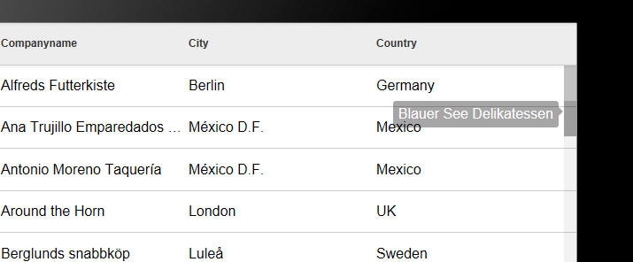
To turn on the List scroller, check the 'Has scroller' property on the List Properties pane in the List builder.
You can use placeholders for any field in the List in the template.

UX Component - Customizing the Scroll Indicator - When you are drag scrolling on a List (or any container that supports drag scrolling), scroll indicators are displayed. You can now customize the appearance of these scroll indicators (or even turn them off).
To customize the scroll indicator settings, click the smart field for the 'Custom scroll indicator settings' property.

UX Component - List Control - Fixed Headers and Footers - List controls have always supported 'data' headers and footers. Data headers appear before the first row of data (below the List titles) and after the last row of data. When the List is scrolled, the data header and footer can scroll out of view.
Fixed headers and footers, on the other hand, appear above and below the List and are always visible regardless of how the List has been scrolled.
To turn on fixed headers and footers, check the appropriate property in the List Properties pane in the List builder.
TIP: To insert controls in the header or footer (e.g. input controls, buttons, etc), add the control to the UX and wrap then in an 'Injectible' container. The inject the contents into the header or footer as shown in the image below. When you open the header or footer editor you will see a hyperlink that generates the required code.

Code Editor - Highlighting - The code editor now highlights opening and closing parentheses, curly braces html tags (when editing HTML text) and long string delimiter (e.g. <<%txt% .... %txt%).

In the image below, the long string has curly braces (it is a JSON object). Because the long string uses the special
%html% delimiter, the curly braces are highlighted.

When the braces are highlighted, the right click menu has a new option - Select Pair... - which selects all of the text between the opening and closing brace.

The following keyboard shortcuts can be use when a 'pair' has been identified (i.e. the editor is highlighting the start and end of a pair.
Grid Component - Action Scripting - Send e-mail Action - Mandrill - Now supports the Mandrill service as a method for sending the e-mail.
Grid Component - Action Scripting - Send e-mail Action - Dynamically Computing Message Body -
The message body can now be dynamically generated using an Xbasic function.
UX Component - Action Scripting - Send e-mail Action - A new action is now available in Action Scripting to send an e-mail. This is the same action that is exposed in server-side Action Scripting in the After Dialog Validate server-side event handler.
CSS Editor - Source View - Quick Navigator - When you are editing CSS in the Source tab of the CSS editor, the toolbar now has a quick selector that allows you to quickly jump to any rule. For example in the screenshot below, clicking on the down arrow icon in the status bar has opened a menu showing all of the selectors in the code being edited.

JSON_standardize() function - Takes non-standard JSON and standardizes it. Also corrects for trailing commas in the JSON (which are illegal)
For example:
?json_standardize("{name: 'Fred', age: 21}")
{
"name": "Fred",
"age": 21
}
?json_standardize("{name: 'Fred', age: 21,}")
{
"name": "Fred",
"age": 21
}
UX Component - {dialog.object}.destroyChildComponent()
Method - A common pattern when building large mobile
applications is to break the app into multiple
sub-component which are called from a master component.
Once the child component is no longer needed, it is
useful to be able to delete the component from memory in
order to conserve the limited memory available in the
browser.
The {dialog.object}.destroyChildComponent() method can
be used to delete child UX components from memory.
Watch Video
UX Component - List Control - Column Resizing - You can now specify that individual columns in the List can be resized by the user at run-time. To specify that a column can be resized, check the 'Resizable column' property.

UX Component - Customize Scroll Indicator - List, Panel and Containers - You can now customer the scroll indicator for List controls, Panels and Containers. By default the scroll indicator for vertical scrolled content is on the right edge and the for horizontally scrolled content, it is on the top. However, you can set the position to left or bottom, and you can control the class and various offsets.
In the image below, the scroll indicator is shown on the left edge with a 20px offset.

To open the scroll indicator customization dialog, click the smart field button:

Client-side Templates - Allows you to merge complex Javascript data in richly formatted templates to produce HTML that can be displayed in a UX or Grid component.
NOTE: A powerful tool is available when you working with templates. See section below: 'Using the Template Tester'
NOTE: Templates use the A5.u.template.expand() Javascript function in the Alpha Anywhere Javascript library. See section below 'The A5.u.template.expand() Function'
The basic idea of client-side templates is that you have some Javascript data - typically a Javascript object, or an array of Javascript objects, and a template (with placeholders for data) and you merge the data into the template.
For example, take the following trivial example. Say you have a Javascript object defined as follows:
var data = {Firstname: 'Fred', Lastname: 'Jones'};
And a template defined as follows:
var template = 'Hello {Firstname} {Lastname}';
When you merge the data into the template, you will get a string that looks like this:
Hello Fred Jones
Technical Note: The syntax for the template is identical to the syntax for free-form templates in the List control and for individual columns in a columnar List control.
Of course, in a real application the template will likely also include HTML markup. For example:
var template = 'Hello {Firstname} {Lastname}';
Array Data
The data for the template can be an array of objects, in which case the template will be expanded for each object in the array.
For example:
var data = [
{Firstname: 'Fred', Lastname: 'Jones'},
{Firstname: 'John', Lastname: 'Smith'},
{Firstname: 'Sally', Lastname: 'Rome'}
];
Using the same template as above, this will produce this output:
Hello Fred Jones
Hello John Smith
Hello Sally Rome
Object Data
The data object can include sub-objects. For example
var data = {Firstname: 'Fred', Lastname: 'Jones', Address: { Street: '123 Main St', City: 'Boston', State: 'Ma' }};
The template to consume this data could then be defined as follows:
var template = 'Hello {Firstname} from {Address.Street} in {Address.City}';
Alternatively, the template could be defined as follows:
var template = 'Hello {Firstname} from {Address} {Street} in {City} {/Address}';
Notice that the template includes {Address} and {/Address}. Inside the {Address} block, the placeholders do not need to be fully qualified. You can use {Street}, rather than {Address.Street}
The {Address} placeholder is referred to as a 'scope' placeholder.
Both of these templates will produce the same output:
Hello Fred from 123 Main St in Boston
Array Data and Object Data Combined
In the Array Data example above, the data was in the form of a Javascript array. In many cases it will be preferable have the data as an object. So, instead of specifying the data for the template as:
var data = [
{Firstname: 'Fred', Lastname: 'Jones'},
{Firstname: 'John', Lastname: 'Smith'},
{Firstname: 'Sally', Lastname: 'Rome'}
]
You could specify it as:
var data = {
Customers: [
{Firstname: 'Fred', Lastname: 'Jones'},
{Firstname: 'John', Lastname: 'Smith'},
{Firstname: 'Sally', Lastname: 'Rome'}
]
}
The template to consume this data could then be defined as:
var arr = [];
arr.push('{Customers}');
arr.push('Hello {Firstname} {Lastname}');
arr.push('{/Customers}');
var template = arr.join('\n');
NOTE: The template is created by pushing individual lines into a Javascript array and then joining the array. This is simply a convenient technique for creating long strings in Javascript.
This template will produce this output:
Hello Fred Jones
Hello John Smith
Hello Sally Rome
Notice that since the {Firstname} and {Lastname} placeholders are nested inside the {Customer}...{/Customer} scope placeholders, it is not necessary to use fully qualified placecholders (e.g. {Customer.Firstname}).
The benefit of placing your array as a property of an object, rather than at the top level, is that you can then use the {*header} and {*footer} constructs, and you can compute summary information (such as the number of items in the array, an average value of a field in the array, etc).
Client-side Template Syntax
There are a rich set of template directives that make templates both extremely powerful and also easy to use.
{scope} Placeholders
If the data passed to the template expand function contains nested objects, or arrays, you can use special {scope} placeholders, where scope is the name of nested object or array.
For example, consider the following simple data object:
{name: 'John Smith', address: {street: '1 Main', city: 'Boston'}}
The template to print this could be:
{name}
{address.street}
{address.city}
or more conveniently, a {scope} variable could be used:
{name}
{address}
{street}
{city}
{/address}
The {scope} variable acts like an 'with' statement in Xbasic.
Within the {scope}, it is not necessary to fully qualify the placeholder names.
In the case where the data contains a nested array, the {scope} variable indicates that the template should loop over the rows in the array.
For example, consider this data object:
[
{name: 'John Smith', children: [{name: 'Griffin'}, {name: 'Callie'}]},
{name: 'Toby Mohan, children: [{name: 'Kyle'}, {name: 'Katy', name: 'Luke'}]}
]
And the following template:
{name}
Which will produce this output:
{[value]} Placeholder
The {[value]} Placeholder is a special placeholder to use when looping over arrays of values, rather than arrays of objects.
In the previous example, the data was specified as:
[
{name: 'John Smith', children: [{name: 'Griffin'}, {name: 'Callie'}]},
{name: 'Toby Mohan, children: [{name: 'Kyle'}, {name: 'Katy', name: 'Luke'}]}
]
The nested array is an array of objects.
However, the data could have been specified as:
[
{name: 'John Smith', children: 'Griffin','Callie'] },
{name: 'Toby Mohan, children: ['Kyle', 'Katy','Luke']}
]
In this case, the nested array is an array of values, not of objects.
To emit the data in the array, the template must use the special {[value]} placeholder. For example:
{name}
NOTE: The [value] field can be followed by
formatting directives, just like any other field. For example:
{[value]:number('$#,###.00')}
Missing Data - Alternative Text - The || Directive
In some cases the data you pass in to the template expander will have missing data. For example, consider the following data object:
{
employees: [
{firstname: 'Fred', lastname:
'Smith', city: 'Boston'},
{firstname: 'Laura', lastname: 'Linneker'}
]
}
The 'city' property has been specified for the first object in the 'employees' array, but not the second.
{employees}
Employee name: {firstname} {lastname}
City: {city||Not available}
{/employees}
The text to display for a missing value is specified in the placeholder after a || delimiter. In the template shown above, the missing text for the {City} property has been specified as 'Not available'.
The above template will render as follows
Employee name: Fred Smith City: Boston
Employee name: Laura Linneker City: Not available
NOTE: The missing data directive can be combined with formatting directives. For example: {price:number('#.00')||N/A}
Headers and Footer - {*header} / {*footer}
Headers and Footer can be used if the data object you pass into to the template expander contains array data.
For example, assume the data object looks like this:
{
employees: [
{firstname: 'Fred', lastname:
'Smith'},
{firstname: 'Laura', lastname: 'Linneker'}
]
}
And the template looks like this:
{employees}
{*header}
This is the header - it prints before
the first item in the array.
{/*header}
Employee name: {firstname} {lastname}
{*footer}
This is the footer - it prints after
the last item in the array
{/*footer}
{/employees}
The merged data will look like this:
This is the header - it prints before the first item in the array.
Employee name: Fred Smith
Employee name: Laura Linneker
This is the footer - it prints after the last item in the array
Empty Arrays - Alternative Text - {*empty}
If an array does not contain any entries you can specify alternative text to display.
For example, consider the following sample data:
{
employees: [
{firstname: 'Fred', lastname:
'Smith', skills: [ {name: 'Javascript'},{name: 'CSS'}]},
{firstname: 'Laura', lastname: 'Linneker',
skills: [{name: 'Xbasic'}]},
{firstname: 'Junior', lastname:
'Programmer', skills: [] }
]
}
Notice that only the last array instances does not have any rows in the skills array.
The template might be defined as follows:
{employees}
Employee name: {firstname} {lastname}
{skills}
{*empty}
No skills yet
{/*empty}
Skill Name: {name}
{*footer}
Count of skills: {@countSkills}
{/*footer}
{/skills}
{/employees}
The Javascript function for the countSkills function (called by the {@countSkills} directive) is:
function countSkills(data,context) {
return data[context].length;
}
The merged data looks like this:
Conditional Sections - {*if logicalExpression}, (*endif}
Templates can include conditional sections. Conditional sections are defined using the following template commands:
where logicalExpression is any Javascript expression that evaluates to a true/false value.
The logicalExpression can refer to data in the current 'row' of data.
For example, consider the following data:
{
employees: [
{firstname: 'Fred', lastname:
'Smith', state: 'MA'},
{firstname: 'Laura', lastname: 'Linneker',
state: 'CA'},
{firstname: 'Junior', lastname:
'Programmer', state: 'MA'},
{firstname: 'Bill', lastname:
'Lindsey', state: 'NY'}
]
}
And the following template:
{employees}
Employee name: {[countOneBased]} {firstname} {lastname}
The merged data looks like this:
Formatting Directives
You can include formatting directives in the template placeholder to format numeric values and strings, and to format date values.
To format a numeric value, use the :number(formattingDefinition) directive in your placeholder.
For example, assume you have a field called Price, which contains this value: 123456.345.
You might define the template to emit this field as follows:
{Price:number('$#,###.00')}
This will result in the following output:
$123,456.35
You can also use the :number() directive to merge strings into templates. For example,, assume that you have a field called Phone, which contains 6715551234.
The placeholder for this field in your template could be defined as:
{Phone:number('=(###) ###-####')}
This will result in the following output:
(617) 555-1234
To format a date value, use the :date(formattingDefinition) directive in your placeholder.
You can use the following symbols in the formattingDirective.
You can also use the :uppercase and :lowercase directives to force string values to upper or lower case.
For example:
{name:uppercase}
{name:lowercase}
NOTE: The missing data directive can be combined with formatting directives. For example: {price:number('#.00')||N/A}
Expressions - {expression}
The placeholders in a template can be arbitrary Javascript expressions.
For example, assume that you have the following data and template:
{product: 'Book', qty: 4, price: 23}
Template:
Product: {product.toUpperCase()} - Price: {price}, Quantity: {qty} - Total: {price * total:number('$#,###.00')}
Result:
BOOK - Price 23, Quantity: 4 - Total $92.00
Functions - {@JavascriptFunctionName}
Your template can include calls to Javascript functions that compute values based on data in the current 'row'. To call a function you use the {@JavascriptFunctionName} placeholder in your template, where JavascriptFunctionName is the name of the Javascript function that you want to call.
The value returned by the function is emitted for the placeholder.
The Javascript function takes a single parameter, data, which allows you to reference data from the current row.
Consider the following simple data object:
{firstname: 'John', lastname: 'Smith'}
And the following template:
Hello {@fullname}
The fullname Javascript function might be defined as:
function fullname(data) {
return data.firstname + ' ' + data.lastname.toUpperCase();
}
The template result for the above data, template and Javascript function will be:
Hello John SMITH
Functions can also be used to compute summary data. For example, assume that the data object you define includes an array of data. You might want to output summary data that includes (say) the count of the number of rows in the array and the total of one of the fields in the array.
Consider the following sample data object:
{
customer: [
{name: 'Smith', amountDue: 345.34},
{name: 'Jones', amountDue: 35.43},
{name: 'King', amountDue: 45.14}
]
}
And the following template:
{customer}
{name} - {amountDue}
{*footer}
Total amount due: {@amountDue} from {@count} customers.
{/*footer}
{/customer}
And the following definition for the 'amountDue' and 'count' javascript function:
function amountDue(data,scope) {
var arr = data[scope]
var tot = 0;
for(var i = 0; i < arr.length; i++) {
tot = tot + arr[i].amountDue;
}
return $u.n.round(tot,2);
}
function count(data,scope) {
return data[scope].length;
}
The above will produce this output:
Smith - 345.34
Jones - 35.43
King - 45.14
Total amount due: 425.91 from 3 customers.
In the above example, notice that the 'amountDue' and 'count' functions are in the {*footer}..{/*footer} block inside the {customer}..{/customer} scope. When the Javascript functions are called from inside a {*header} or {*footer} block the scope ('customer') is passed into the function along with the data. ('data' is the first argument, and 'scope' is the second argument).
What's in the 'data' object passed into a Javascript function depends on where the Javascript function is called from.
If a Javascript function is called from within a {*header} or {*footer} placeholder the data in the data object will be the same as if the function had been called from outside the scope. In other words, if the template has {@myfunction} after the closing {/customer} placeholder, the data passed to the 'myfunction' Javascript function will be the same as the data that would be passed to the function had it been called from inside a {*header} or {*footer} block inside the scope (e.g. {customer}...{/customer}.
On the other had, if the {@myfunction} placeholder is used anywhere within the scope (e.g. inside the {customer} ..{/customer} block), but not inside a {*header} or {*footer} block, the data object only contains data for the current array instance and the 'scope' value is blank.
The following example will help make this clear:
Data:
{
customer: [
{name: 'Smith', amountDue: 345.34},
{name: 'Jones', amountDue: 35.43},
{name: 'King', amountDue: 45.14}
]
}
Template:
{customer}
{name} - {amountDue} - {@data}
{*footer}
In footer:
{@data}
{/*footer}
{/customer}
Outside the 'Customer' scope: {@data}
Javascript function:
function data(data,scope) {
if(scope == '') scope = 'BLANK';
var json = JSON.stringify(data,'\t');
var msg = '
'
data: ' + json + '
The above produces this output:
Note that the 'data' Javascript function simply shows the data that is passed into the function (as a JSON string) and also shows the value of the 'scope' argument
The 'data' function is called in 3 different places:
As show, inside the {customer} scope, the data passed into the function is just the data for the current array instance and the 'scope' passed into the function is blank.
However, when the Javascript function is called from inside the {*footer} block, the data and scope passed into the function are the same as if the function had been called from outside the {customer} scope. In this case the data passed into the function includes all of the data in the scope.
With the above understanding of the what's passed into the Javascript function, let's re-examine the 'amountDue' and 'count' functions from the previous example. Here is the function definition again:
function amountDue(data,scope) {
var arr = data[scope]
var tot = 0;
for(var i = 0; i < arr.length; i++) {
tot = tot + arr[i].amountDue;
}
return $u.n.round(tot,2);
}
The amountDue function has been called from inside a {*footer} construct. Therefore the data passed into the function looks like this (in JSON format)
{"customer":[{"name":"Smith","amountDue":345.34},{"name":"Jones","amountDue":35.43},{"name":"King","amountDue":45.14}]}
Therefore we can get the array of data shown in the {customer} scope by using this Javascript statement:
data['customer']
However, the 'scope' variable that was also passed into the function contains 'customer', so we can get the array of data as follows:
data[scope]
Once we have the array of data, it is a simple matter of writing a Javascript loop to sum up the value in the 'amountDue' property for each row in the array.
Note that before we return the number we use the $u.n.round() function from the Alpha Anywhere Javascript library to round the result to 2 decimal places.
The 'count' function is even simpler. We simply return the length of the array.
function count(data,scope) {
return data[scope].length;
}
Here is a more complex example that shows an object with two arrays of data - 'charges' and 'payments'. Our template shows the total charges, total payments, and the net amount due (total charges - total payments)
Here is the data:
{
charges: [
{name: 'Smith', amount: 345.34},
{name: 'Jones', amount: 35.43},
{name: 'King', amount: 45.14}
],
payments: [
{name: 'Smith', amount: 123.34},
{name: 'Jones', amount: 45.45}
]
}
Here is the template:
Charges
{charges}
{name}
{*footer}
Total charges: {@totaldue}
{/*footer}
{/charges}
Payments
{payments}
{name}
{*footer}
Total payments: {@totaldue}
{/*footer}
{/payments}
Net amount due: {@netdue}
Here is the Javascript:
function totaldue(data,context) {
var tot = 0;
var arr = data[context];
for(var i = 0; i < arr.length; i++) {
tot = tot + arr[i].amount;
}
return tot.toFormat('$#,###.00');
}
function netdue(data,context) {
var arr = data['charges'];
var totDue = 0;
for(var i = 0; i < arr.length; i++) {
totDue = totDue + arr[i].amount;
}
arr = data['payments'];
var totPay = 0;
for(var i = 0; i < arr.length; i++) {
totPay = totPay + arr[i].amount;
}
var netDue = totDue - totPay;
return netDue.toFormat('$#,###.00');
}
And here is output produced by this template:
Notice in the above example that the same 'totalDue' function can be used to return both the total charges and the total payments (because in the first case the 'scope' passed into the function will be 'charges' and in the second case, the 'scope' passed into the function will be 'payments'.
The 'netDue' function that called from outside both the 'charges' and 'payments' scope gets called with the data for both arrays. This function gets the charges array using this syntax:
data['charges']
and then computes the total charges.
Then it gets the payments array, using this syntax:
data['payments']
and then computes the total payments.
Once the total charges and total payments are computed, the net amount due can be computed.
Using the [] directive to emit array instance data
When you are outside a scope that references array data, you can use a special syntax in the scope placeholder to display values from the scoped array.
For example, consider the following output from a template:
Notice that before the Employees are shown, the template shows:
Showing employees from: 'Smith' to 'Programmer'
Where 'Smith' is a value from the first row in the array, and 'Programmer' is a value from the last row in the array.
In the above example, the following template was defined:
Showing employees from: '{employees[0].lastname}' to
'{employees[-1].lastname}'
{employees}
{*header}
Employees
{/*header}
Employee name: {[countOneBased]} {firstname} {lastname}
Notice that outside the {employees} scope, the following template directives can be used to emit data from the employees array:
{employees[0].lastname} - 'lastname' property from the 1st array instance.
{employees[-1].lastname} - 'lastname' property from the last array instance.
Partial Templates - {*partial partialName}
Partial templates are named sub-templates. A template can reference these partial templates using the {*partial partialName} command. This is useful if a template has text that is repeated. For example, consider the following Javascript code:
//define the data
var _d = {firstname: 'Fred', lastname: 'Smith'}
//define the template
var arr = [];
arr.push('Welcome
');
arr.push('Hello {firstname} {lastname}
');
arr.push('{*partial partial1}');
var _t = arr.join('\n');
//define the settings object (template and partials)
var settings = {
template: _t,
partials: {
partial1: 'from partial1: {firstname}
{lastname}
'
}
}
//merge the data into the template
var html = A5.u.template.expand(_d,settings);
This will produce the following output:
Welcome
Hello Fred Smith
from partial1: Fred Smith
NOTE: Several powerful new features for templates have been added in Alpha Anywhere V3. Please consult the Release Notes for additional information.
Using the Template Tester - The Template Tester is a powerful tool to help you design and test templates.
To open the Template Tester select the Tools menu when the Web Control Panel has focus and then select the 'JSON Data Template tester' command.
This will open a modeless window where you can enter test JSON data, template definitions and Javascript functions and then see the results in real-time.
NOTE: The Template Tester can also be opened from within the List control builder when you are defining a template for a column in a columnar list or you are defining a free-form template.
Watch Video - Part 1
Watch Video - Part 2
Watch Video - Part 3
Watch Video - Part 4
Watch Video - Part 5
Watch Video - Part 6
Watch Video - Part 7
Watch Video - Part 8
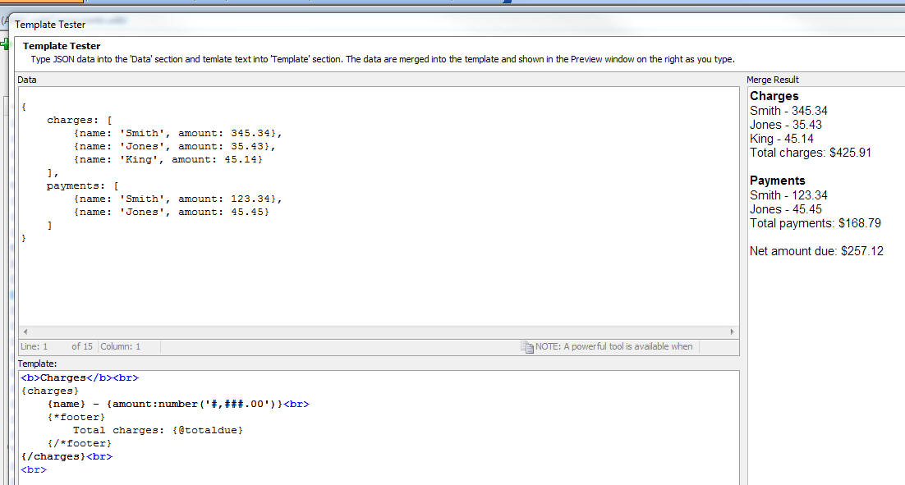
You can also click the 'Load Example' button to open a menu showing several different examples that illustrate different concepts.


Whenever you open the Template Tester, the text that you had last entered is automatically restored.
The A5.u.template.expand() Javascript Function - Templates are expanded using the A5.u.template.expand() Javascript function, which is part of the Alpha Anywhere Javascript library.
The syntax is
var html = A5.u.template.expand(data,settings);
Where data is a the data array or object to be merged into the template and settings defines the template (and any partial templates).
For example:
var data = {firstname: 'Fred', lastname: 'Smith'};
var template = 'Hello {firstname} {lastname}';
var settings = {
template: template,
partials: ''
}
var html = A5.u.template.expand(data,settings)
NOTE: For an example that uses partials, see 'Partial Templates - {*partial partialName}' above.
A5.u.template.parse() Function - If a template is used multiple times in a component, you can pre-parse the template so that when the template needs to be expanded you can use the pre-parsed template for improved performance.
For example, take the following Javascript:
var data = {firstname: 'Fred', lastname: 'Smith'};
var template = 'Hello {firstname} {lastname}';
var settings = {
template: template,
partials: ''
}
var html = A5.u.template.expand(data,settings)
The could be re-factored as follows:
var data = {firstname: 'Fred', lastname: 'Smith'};
var template = 'Hello {firstname} {lastname}';
var parsedTemplate = A5.u.template.parse(template);
var settings = {
template: parsedTemplate,
partials: ''
}
var html = A5.u.template.expand(data,settings)
Action Javascript - Templates - Merge data into client-side template' Action - This action allows you to define a data and a template, merge the data into the template and then set the innerHTML of a div, placeholder control, or Panel with the resulting HTML.
Watch Video
Download Component

When you open the builder, the genie shows this screen:

You can either specify static data to merge into the template, or you can specify the name of a Javascript function that will return the data to merge into the template.
Similarly, you can specify a static template, or the name of a Javascript function that will dynamically create the template.
Using Client-side Templates on the Server-side - a5_merge_JSON_into_template() Function - Because Alpha Anywhere has the ability to execute Javascript from an Xbasic script, you can actually use client-side templates in Xbasic using the a5_merge_JSON_into_template() function.
The syntax for the function is:
c Result = a5_merge_JSON_into_template(C jsonData
,C template [,C javascriptFunctions [,C partialTemplatesJSON
[,C localCSS ]]])
For example:
dim data as c
data = <<%txt%
{firstname: 'Fred', lastname: 'Jones'}
%txt%
template = <<%html%
Name: {firstname} {lastname}
%html%
htmlOut = a5_merge_JSON_into_template(data,template)
showvar(htmlOut)
{grid.object}.getRowsInGrid() Method - Returns the number of rows in the current page of the grid. This is not the same as the number of rows in the Grid query.
Previously, users were using the internal ._rowsInGrid property to get the number of rows in the current page, but this value includes rows that have been deleted.
For example, say that the Grid is set to show 10 rows per page and that the refresh method is set to 'Auto' and that a minimal refresh is done after update, insert and delete operations.
If the user deletes a row from the Grid, the ._rowsInGrid property will still be 10, because the deleted row is not really deleted from the current page - it is just hidden and marked as deleted.
On the other hand, the {grid.object}.getRowsInGrid() method will return 9.
{grid.object}.getSelectedRow() Method - Returns the selected row number, or null if no row is selected.
Previously, users were using the internal ._selectedRow property to get the row number of the currently selected row. However, under some circumstances this property can return a confusing (but technically correct) value.
For example, if the refresh method on the Grid is set to 'Auto' and a minimal refresh is done after an update, insert or delete operation and the user deletes a row, the ._selectedRow property will return the row number of the row that was just deleted (which is actually correct internally, because the row that was deleted has simply been hidden in the page and it is still marked as selected).
On the other hand. the {grid.object}.getSelectedRow() method will return null, indicating that no row is currently selected.
UX Component - List Control - List Preview - Modeless - The List Builder has a 'Preview' button to do a quick preview of the List control while you are in the List builder. The Preview window is now modeless - which means you can keep it open while you are working in the List builder (and perhaps move it to a second screen if your computer has two monitors). This makes it very convenient to preview the List after every change you make.
UX Component - List Virtualization - Normally, when a List control is populated, the HTML for all of the rows in the List is rendered. If the list only has a few rows (say 200 rows), then there is no noticeable delay while the List is populated.
However, if the List has a lot of rows (say several thousand rows), then there will be a noticeable delay while the List is populated and also, a large amount of memory will be consumed by the List. On a mobile device where memory is more limited, the amount of memory consumed by the List could be a problem.
List virtualization allows you to only create HTML elements for a portion of the List - the portion that is currently visible and some additional rows above and below the currently visible portion. The number of rows that are rendered in the List is called the 'page' size.
When the user is scrolling the List and they hit a page boundary, the user can tap on a Next or Previous button (or optionally use a pull/release gesture) to populate the List with the next or previous page of data. It is important to recognize that tapping the Next or Previous button does not trigger an Ajax callback. It is simply rendering the next or previous page of data using the data that has already been loaded into the List and is in memory. Therefore, the time take to populate the next or previous page is practically instantaneous.
The advantage of virtualizing the List is that you can dramatically reduce the time taken to load large Lists and you can reduce the memory footprint of the List.
To turn on List Virtualization, set the Virtualization type property shown below to 'Dynamic'.
Watch Video
Download component
Once you do this, several additional properties will be shown
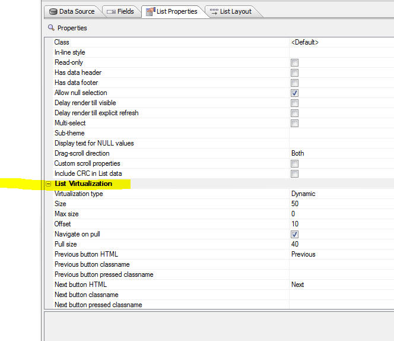
Virtualization type - Set to 'None' to turn virtualization off. Set to 'Dynamic' to turn virtualization on.
Size - The size property defines the 'page' size - the number of rows of data that should be rendered. This should typically be a multiple of the number of rows in the viewport. For example, say that your List can display 20 rows of data at a time, you might set the size to (say) 100 so that the user can scroll a fair amount before hitting the page boundary.
When you reach a page boundary (either on top or bottom
of the page), there are 'Next' and 'Previous' buttons to
get the next logical 'page' of data. The user can either
tap on the Next/Previous button, or use a pull/release
action to fetch the next page of data.
Max size - This is an advanced optional setting
that can be used to specify a type of 'hybrid'
virtualization. By default, this property is set to 0,
which means that the number of rows that the List
renders is always equal to the 'page' size. When you hit
a page boundary, the current page is memory is replaced
by the next page that is loaded.
However, if you set the Max size to -1 (which indicates
that the max size is equal to the number of rows in the
List), or some positive number that is greater than the
size property, then when you are navigating
forward and you hit a page boundary, the next page of
data is automatically rendered (without requiring the
user to tap the Next button). The number of rows in
memory continues to grow as the user scrolls down in the
List. In other words, the memory consumed by the List is
initially very small (as only a single page of data are
rendered) and the time taken to render the List is
optimized (again, because only a single page of data are
rendered), but as the user scrolls, the number of
rendered rows in the List continue to grow and more
memory is consumed. When the 'max size' is reached, then
the user will then have to use the 'Next' button to
continue to viewing additional records.
Offset - When you hit a page boundary, and click
the Next/Previous button, the 'offset' indicates the
number of rows from the page that is being discarded
that should be included in the new view. If this number
is less than the number of rows in the viewport, the
List will appear to 'jump' when you navigate to a new
page. It is recommended that this value be set to a
minimum of the number or records that can be seen in the
viewport at one time so that when the user taps the
Next/Previous button, the scroll position of the List
does not change. It is recommended that this number be
no more than half of the 'page size'. The larger the
number, the more rows the user can scroll backwards
before hitting the Next/Previous buttons.
Navigate on pull - Allows the user to
pull/release to navigate (in addition to tapping on the
Next/Previous buttons).
Pull size - Number of pixels before the
'pull/release' gesture is recognized as a 'navigate'
action.
UX Component - List Control - onBeforePopulate and onPopulate Client-side events - Two new client-side events have been added to the List control.
onBeforePopulate - fires before the List is populated. Allows you to transform the data that will be used to populate the List. The event handler gets passed in 'data' - an array with all of the data for the List.
onPopulate - fires after the List has been populated.
UX Component - List Control - Transform Data Type - Unless the List data source is a Javascript function (in which case you have complete control over the data types for each field in the List), all data in the List are string values.
Watch Video
Download component
The 'Transform data type' property allows you to transform the data type of the data in a List column to a Date, Numeric, or Logical data type.
To transform the data type, set the option in the 'Transform data type' property on the Fields pane in the List builder (as shown below).

The benefit of transforming dates into true date objects and numbers into true number objects is that you can then use the template formatting options to format date or numeric values.
For example, the template for a date field might be specfied as:
{DateOfBirth:date('MM-dd-yyyy')}
or a numeric field, the template might be specified as:
{Price:number('$# ###.00')}
NOTE: It is not strictly necessary to transform a string to a number in order to use the number format directive in the template. The sample template shown above ( {Price:number('$# ###.00')} would actually also work on a string value that contained a valid number.
Property Grids - Font Size - Property Grids are ubiquitous in the Alpha Anywhere builders. You can now change the default font size by selecting the View, Settings... menu item. Select the 'System Font's pane and then the 'Property Grid' category.
The image below shows a Property Grid with a 12 point font size:

word_i() function - A case-insensitive version of the word() function
Example
?word_i("alpha software corp",2,"SOFTWARE")
= "corp"
Web Applications - Session Object - .SaveSessionFileToFile() - A new method on the session object allows you to save a file that as previously stored as a session file to a permanent location.
The syntax is
session.saveSessionFileToFile(c Key, C DestinationFile)
Note: The session file might have been created in the first place using either of these methods:
session.saveFileToSessionFile( c fileName, c key)
session.saveDataAsFile( b data, c key)
Storage - Storage is an Alpha Anywhere abstraction for dealing with different types of storage using a standard interface. Currently, 3 type of storage are supported - Amazon S3, Azure and Disk storage.
Storage is used for storing files.
To work with Storage you will need a storage connection string to 'connect' to the storage object.
Named connection strings are typically used (in much the same way that named AlphaDAO connection strings are used when you connect to a SQL database).
To create a named storage connection string, select the Tools, Storage Connection strings menu item from the Tools menu when the Web Control Panel has focus.

This will open a dialog where you can create as many named storage connection strings as you want.
When you create or edit a named storage connection string, the Connection String dialog is shown:

Named storage connection strings are published in the a5_application.a5i file when you publish your application.
Summary of Helper Functions for Working with Storage - Several Xbasic helper functions make it easy to work with the storage. These helper functions are written on top of the low level storage objects that are documented here.
The helper functions are:
Examples for each of these functions is shown below.
a5Storage_saveFile() - Saves a file to storage
Syntax:
L a5Storage_saveFile(C connectionString ,C filename ,C
itemName [,C mimeType [,* pResult ]] )
Where:
connectionString - Storage connection string with ::storage:: as a prefix.
filename - name of the local file to save in storage.
itemName - name of the object in storage. You can can specify a logical folder by using forward slashes in the name. For example: image/image1.jpg
mimeType - the mime type of the object. If you don't specify this property, the value can be inferred from the extension you assign to the itemName property.
pResult - an optional dot variable that you can pass in that will be populated with information about the object.
Example:
dim pr as p
flag = a5Storage_saveFile("::storage::Amazon_East","c:\images\4290.jpg","movies/4290.jpg","",pr)
?flag
= .T.
If you examine the pr dot variable that was passed into the function you will see the following properties:
hasError = .f.
timeTakenMilliseconds = 239
AbsolutePath = "https://
ContentType = "image/jpeg"
ModifiedTime = CTODT('03/15/2014 01:53:13 00 pm')
Name = "movies/4290.jpg"
size = 5880
The AbsolutePath property gives you a URL to the object. Note that in order for this URL to work you need to make sure that you have set the appropriate permissions on the storage container ('bucket' in S3 terminology).
a5Storage_saveData() - Saves data to storage
Syntax:
L a5Storage_saveData(C connectionString ,b blob ,C itemName [,C mimeType [,* pResult ]])
Same as a5Storage_saveFile(), except takes a blob as input rather than a filename.
A5Storage_getItemProperties() - Gets properties of an item in storage
Syntax:
P itemProperties = a5Storage_getItemProperties(C connectionString , C itemName)
Where:
connectionString - Storage connection string with ::storage:: as a prefix.
pResult - an optional dot variable that you can pass in that will be populated with information about the object.
Returns a dot variable with these properties
a5Storage_getItem_as_blob() - Retries data from an item in storage and put the data in a blob variable
Syntax:
b blob = a5Storage_getItem_as_blob(C connectionString ,C itemName [,* pResult ])
Where:
connectionString - Storage connection string with ::storage:: as a prefix.
pResult - an optional dot variable that you can pass in that will be populated with information about the object.
Example:
dim p3 as p
b3 = a5Storage_getItem_as_blob("::storage::Amazon_East","movies/4290.jpg",p3)
?b3.size()
?p3
'= contentType = "image/jpeg"
timeTakenMilliseconds = 297
a5Storage_getItem_as_file() - Retries data from an item in storage and create a local file
Syntax
L flag = a5Storage_getItem_as_file(C connectionString ,C itemName, C filename [,* pResult ])
Where:
connectionString - Storage connection string with ::storage:: as a prefix.
pResult - an optional dot variable that you can pass in that will be populated with information about the object.
a5Storage_listItems() - Lists items in storage
Syntax:
c List = a5Storage_listItems(C connectionString [, C searchPrefix [,* pResult ]])
Where:
connectionString - Storage connection string with ::storage:: as a prefix.
pResult - an optional dot variable that you can pass in that will be populated with information about the object.
a5Storage_deleteItem() - Delete an item from storage
Syntax:
L flag = a5Storage_deleteItem(C connectionString, C itemName [,* pResult ])
Where:
connectionString - Storage connection string with ::storage:: as a prefix.
itemName - name of item to delete
pResult - an optional dot variable that you can pass in that will be populated with information about the object.
Note: The flag value returned by this function is .f. if the connection failed, but is .t. if the item was not found in storage.
Web Applications - .A5W Pages - Debugging - You can now debug live running .A5w pages from within the HTML editor. The editor now has a new 'Live Preview' tab.
Simply insert a debug(1) statement in your Xbasic code and then switch to the 'Live Preview' tab pane.

UX Component - Pop-up Javascript Windows - Customize Title Direction - A new property has been added to set the default title direction for pop-up Javascript windows. By default, the direction is 'ltr' (left to right), but the direction can now also be set to 'rtl' (right to left - title on right and close button on left).

Grid Component and UX Component - Image and File Upload - Show Progress and Allow Cancel - The image and file upload features in the UX and Grid components have been enhanced.
The image below shows the File Upload window showing progress as a large file is uploaded.
You can now:
Display progress while a file is uploading
Allow a user to abort the upload after the upload has started
Check the maximum allowed upload size before the upload is started. (Previously the file was uploaded and then if the uploaded file exceeded the maximum allowed size an error was returned to the user).
Check the allowed file types before the upload is started. (Previously the file was uploaded and then if the uploaded file was not of the correct type, an error was returned to the user).
In order to enable this new functionality, edit your Image Upload, File Upload or File Upload - User Defined actions (defined using Action Javascript) and set the properties shown below.
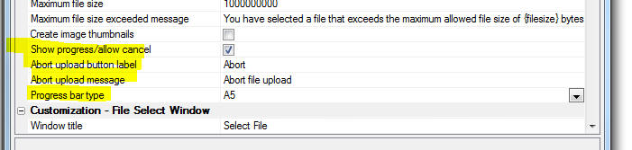
In the case of the 'File Upload - User Defined' when the 'Allow multiple files' option is selected, the size check that takes place before the upload begins is the combined size of all selected files. You can set the maximum combined size property in the builder. The 'Maximum file size' property which applies to individual files will also be enforced after all of the files have been uploaded.

The Action Javascript builders allows you to specify the style for the progress bar. The 'A5' style blends in nicely with the component style, but for older styles, such as GrBlue, GrOlive, etc. the 'A5' style might be too subtle for your taste and you might prefer to use the 'Basic' style, wich uses a standard HTML progress element.
The image below shows how the slider is rendered using the 'A5' option (first slider - using the iOS style) and the 'Basic' option (second slider).

Grid and UX Component - HTML Editor - File and Image Upload - The File and Image upload features in the HTML editor have been enhanced.
You can now:
Display progress while a file is uploading
Allow a user to abort the upload after the upload has started
Check the maximum allowed upload size before the upload is started. (Previously there was no way to specify a maximum file size).
Check the allowed file types before the upload is started. (Previously there was no way to specify allowed file types).
UX Componet - Slider Control - Displaying Progress - A new property on the slider control has been exposed that allows you to turn off the slider handle. This is useful for displaying 'progress'. In the image below the first Slider has its handle turned off.
When you want to use the slider to show progress, you should also disable it so that the user cannot change the value by clicking on the slider. For example, enter '1=2' as the client-side Enable expression for the slider.

UX Component - Tab Control - Genie Style - Genie Button Position - When defining 'Genie Style' tab controls (shows buttons to advance through the tabs), you can now specify the button position (Above or Below the Tab Panes). Previously, the buttons were always shown below the Tab Panes.

Xdialog - Edit Combo - Case-Insensitive - The edit combo in Xdialog is case-insensitive by default. You can now force it to be case sensitive using the new %CS% flag.
For example
dim selected as c = ""
dim colors as c
colors = a5.color_enum()
ui_dlg_box("Select Color",<<%dlg%
Color combo: [%CS%.50selected^+colors];
Color edit-combo: [%CS%.50selected^=colors];
%dlg%)
UX Component - Abstract Events - downHold Information - Click, Tab, Swipe, Etc. events now have additional information in the event's 'abstractData' object that tells you if a 'downHold' event occurred. The motivation for this additional information is to allow you to add code to Click, Tap and other abstract events to prevent them from executing their standard code when a downHold abstract event fires.
For example, if you examine the 'e' object that is available inside the event handler for a click abstract event, you will see the following information (screen shot taken from Visual Studio Javascript debugger). As the screen shows, the e.abstractData object has a property called 'downHold'. In this case the property is true, indicating that the click event has fired as a consequence of the downHold event firing.
You might then write your click event handler as follows
var flagRunCode = true;
if(typeof e.abstractData != 'undefined') {
if(e.abstractData.downHold) flagRunCode = false;
}
if(flagRunCode) {
//code you want to run in a pure click event
}
Code Editors - Search and Search and Replace - Regular Expressions - The Search and Search and Replace dialogs now support the ability to use regular expression. In addition, the history feature that shows previous search and replace values is now case-sensitive.
UX Component - Internationalization - List Controls - The UX component Internationalization genie (described later in this document), now allows you to add language and text dictionary tags to column headings for List controls.
Xbasic - Dot Variables - .data() Method - The .data() method can be used to read the value of a property in a dot variable. However, the .data() method trims trailing spaces. Now you can use an option to preserve trailing spaces by adding the '.raw' suffix to the property name.
delete p
dim p as p
p.name = " "
?"a" + p.name + "b"
= "a b"
?"a" + p.data("name") + "b"
= "ab"
?"a" + p.data("name.raw") + "b"
= "a b"
UX Component - List Control - Client-side Numeric Formats - You can now specify format directives in the template for the List control. For example, the image below the template for the 'longitude' column in the List.
Notice that the placeholder in the template shows:
{longitude:number('#.0'}
The numeric format is specified in the placeholder, separated from the field name by a colon.
The builder has a link labeled 'Insert format directive' that will open a genie to help you define formatting directives.
NOTE: In the screenshot shown below the List is a columnar List. Client-side format directives can also be inserted into the template for Freeform Layout Lists.

See 'UX and Grid Component - Client-side Calculated Fields - Builder' below for more information.
Xbasic - Image Metrics Class - The new Image
Metrics class gets both the pixel size and the logical
size of an image.
The logical size is expressed in twips, and reflects the
DPI stored with the image.
Example usage:
dim isize as Helper::ImageMetrics
isize.LoadImage("jpg",file.to_blob("C:\imgage.jpg"))
? isize
..
pixel_height = 1200
pixel_width = 1920
twip_height = 18000
twip_width = 28800
? *unit_convert(isize.twip_width,"tw","in")
= 20
? *unit_convert(isize.twip_height,"tw","in")
= 12.5
UX and Grid Component - Action Javascript - Open Grid
- The Action Javascript to "Open a grid component"
now has an option to set Autorefresh on focus if the
target is a TabbedUI Pane. When checked, the content in
the tab pane will be refreshed automatically every time
the pane gets focus.
UX and Grid Component - Masks - User Defined Formats - When you define a mask for an input control in either the UX or Grid you can select from a list of built-in masks, or you can define your own mask. Now, you can add your own entries to the list of built-in masks by creating a special text file in the executable folder. The text file must be called:
UserDefinedMasks.txt
The text in the file must be of this form:
{data=(000) 000-0000}US Phone number
{data=000-00-0000}Social Security Number
{data=00000}Zip code - 5 digit
{data=00000-0000}Zip code - 9 digit
{data=L0L 0L0}Postal Code - Canada
UX and Grid Builder - Live Preview - Caching - Previously if you made a change to CSS or linked Javascript files after previously having done a Live Preview in the builder, the changes were not always reflected because Internet Explorer was loading assets from its cache. Now, the builder is more aggressive about not caching assets during Live Preview.
UX Component - Internationalization - In order to
design a UX component that adapts automatically to
different languages, you typically wrap all labels in
either language tags (e.g.
A new Internationalization Utility makes it easy to retrofit an existing UX component with language or text dictionary tags.
To access the utility, click the Menu button, shown below.
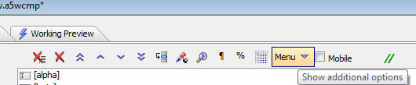
Then, select the Internationalization Helper Utilities... menu option.

This will open a dialog that allows you to select different options. Each option generates some Xbasic code that will set properties on your UX component.
TabbedUI - onTabbedUIInitialize Server-side Event - The TabbedUI Component now has a new server-side event that fires when the TabbedUI component is initialized.
TIP: You can use this event to simulate session variables when you are in Working Preview. For example:
if eval_valid("request.SERVER_PROTOCOL") then
if request.SERVER_PROTOCOL = "A5RES" then
session.var1 = "simulated value for var1"
end if
end if
UX Component - Get Online Status - {dialog.object}._getOnlineStatus() Method - The
{dialog.object}._getOnlineStatus() method returns true if the device has an internet connection and false if there is no connection.
NOTE: The onConnectionChange client-side event fires when the connection state changes.
NOTE: For testing how your application will behave when there is no connection, you can set your component to simulate a disconnected state by calling the {dialog.object}._setSimulatedOnlineStatus() method.
UX Component - Set {dialog.object}SimulatedOnlineStatus() Method - Allows you to force the return value from the {dialog.object}._getOnlineStatus() method to be true or false, regardless of the true state of the connection. This is useful for testing purposes when you want to test how your component behaves when it is disconnected, even though you currently have a connection.
The syntax is
{dialog.Object}._setSimulatedOnlineStatus(mode);
Where the mode flag is
UX Component - Client-side Events -
onAjaxCallbackNotAvailable Event - A new client-side
event has been defined. The onAjaxCallbackNotAvailable
event fires if the user tries to execute some Javascript
that does an Ajax callback and the device is not
currently connected to the internet.
UX Component - Client-side Events - onConnectionChange Event - The onConnectionChange event fires whenever the device's connection status changes. For example if the device was online and the connection was lost, the event will fire, and vice versa.
NOTE: If you set the simulated connection status using the {dialog.object}._setSimulatedOnlineStatus() method, the event will also fire (assuming that the _setSimulatedOnlineStatus() method changed the simulated online status.
UX Component - Ajax Callback Action - Offline Javascript - A new property can be set when defining an Ajax Callback. The 'Offline Javascript' property allows you to define Javascript to be called when the device is not connected. This differs from the 'Ajax failed Javascript' property in that if the device is not connected, the Ajax callback is not even attempted, and the Javascript specified in the 'Offline Javascript' property is executed immediately.
On the other hand, the 'Ajax failed Javascript' is only fired after the timeout period if a response is not obtained from an Ajax callback.
NOTE: You can also use the new client-side onAjaxCallbackNotAvailable event to specify Javascript to execute when a user tries to make an Ajax callback and there is no connection.

UX Component - List Control - Filter Records - Range Searches - Using Action Javascript, you can create actions that filter the records shown in a List control. Now, you can easily make 'range' searches (similar to the Search Part in a Grid).
To define a 'range' search, select the control that has the 'range start' value first. Then, check the 'Range search' checkbox. A new prompt will be shown where you can specify the name of the control that has the 'range end' value.
Range searches can also be defined for actions that search embedded grids on a UX, retrieve primary keys for a data bound UK and print embedded reports.

UX Component - Absolute Layout Containers - Save as
PDF - You can now create a button using Action
Javascript to save the contents of the container to a
PDF file.
Watch Video
To create a button to save an Absolute Layout container as a PDF, use the 'Absolute Layout Container - Create PDF' action in Action Javascript.
After the PDF is created you have the option of either:

UX Component - Control Containers - Class Name and Prevent Float - When a UX component is rendered, every control in the component is wrapped in a DIV control that has a class of 'A5CWLayout'.
NOTE: If you have set the UX 'Layout type' property to be 'ControlWidth', then the class is A5container.
The A5CWLayout (or A5container) class has two important functions:
Under some circumstances a developer might want more control over the styling of the container (a DIV) that is used to enclose each control. Two new properties have been added for most of the controls in a UX:

The 'Control container class name' property allows you to specify the CSS class name that will be used in the container DIV in addition to the standard 'A5CWLayout' (or 'A5container') class.
The 'Control container prevent float' property allows you to specify if the container DIV will use the 'A5CWLayout' (or 'A5Container') class at all.
With these two new properties you have complete control over the styling of all controls on the UX.
NOTE: For controls that are in a 'NoFloat' container, the 'Control container prevent float' property is implicitly true.
UX Component - Panels - .Refresh() Method - Panel Cards and Panel Navigators now have a .refresh() method. This means that if you change the contents in the header or footer of the Panel (which might change the height of a header or footer, for example), you can now call the .refresh() method to layout out the Panel again, showing the new footer or height.
For example:
var pObj = {dialog.object}.panelGet('PANELCARD_1');
//some code to change the HTML shown in the Panel header or footer
pObj.refresh();
Xbasic - CURL - Built-in Support For CURL - CURL is a popular library for calling URLs. A genie is available to convert a CURL command that you might read in some API documentation into Xbasic. To open the CURL command to Xbasic genie, right click on whitespace in the Xbasic code editor or Interactive window. The select the CURL command to Xbasic command.

The genie open up and you can paste in a CURL command, then click the Generate Xbasic button.
The generated Xbasic instantiates the Curl object in the extension namespace.
NOTE: When using the HTTPS protocol, you must have a certificate. In the sample shown below the certificate in the CARoot folder in the Alpha Anywhere executable folder is used.

Grid Component - SQL - Search Part - Grids Based on GROUP BY Statements - If you have defined a Grid that is based on a SQL statement that has a GROUP BY clause, interpreting what the user intends when they do a search using the the Grid's Search Part can be tricky. For example, does the user intend the submitted search criteria to be used in a WHERE clause, or a HAVING clause?
Previously, if the Grid based based on a GROUP BY statement, the SQL generated by the Search Part was added to the HAVING clause.
Now, a more flexible approach is implemented.
When you define the Search Part in a Grid, for each field you add to the Search Part, you can define the Search Expression. The Search Expression is used in the generated SQL when the user searches on this field. If the search expression uses a summary operator (for example Sum(AmountDue) ), then a search on this field will go into the HAVING clause. On the other hand, if the Search Expression does not use a summary operator (for example, AmountDue), then a search on this field will go into the WHERE clause.
As a result of this change, you can define a Search Part in the Grid that will generate SQL statements that have both WHERE and HAVING clauses.
Grid and UX Component - Image and File Upload - Window Position - You can now set an explicit position for the file select window in these actions:

Reports - HTML Content - Base64 Encoded Embedded Images - If you have HTML content in a report and the HTML content has base64 encoded embedded images, the images will now render correctly in the printed report.
UX Component - List Control - Action Javascript - List Control Actions - Client-Side Order Expression - The genie now allows you to perform multi column sorts.
Set the 'Client-side sort mode' to Advanced and then use the smart field to define the sort definition.
You can define ascending or descending sorts and you can specify whether you want to sort on the whole field, or a subset (for example, just the first character of the field).

This gene generates Javascript that uses the .setOrder() method of the List. For example, here is how a mult-level (Customer, Country) sort would be defined:
var listObj = {dialog.object}.getControl('LIST1');
var sortObj = {'Country' : 1 , 'City' : 1};
listObj.setOrder(sortObj);
UX Component - List Control - Group Breaks - Client-Side - The List control has always had a Group Break option, but this option is a server-side group break. This means that the data that is sent from the server to the browser has the group breaks physically embedded into the List data.
Now, you can define client-side group breaks. These group breaks are inserted into the List on the client-side (after the List has been populated). Client-side group breaks offer several advantages over server-side group breaks. Namely:
NOTE: One advantage of server-side group breaks over client-side group breaks is when the List data source is based on a SQL query and you have turned on the List pagination option. In this case, summary data shown in a List header will be for all of the data in that group, not just the records that are currently visible in the List.
In the image below, the List has two levels of grouping: Country and City. Notice that a custom style has been defined for the second level group headers (showing the city name in blue, with a left padding of 50px).
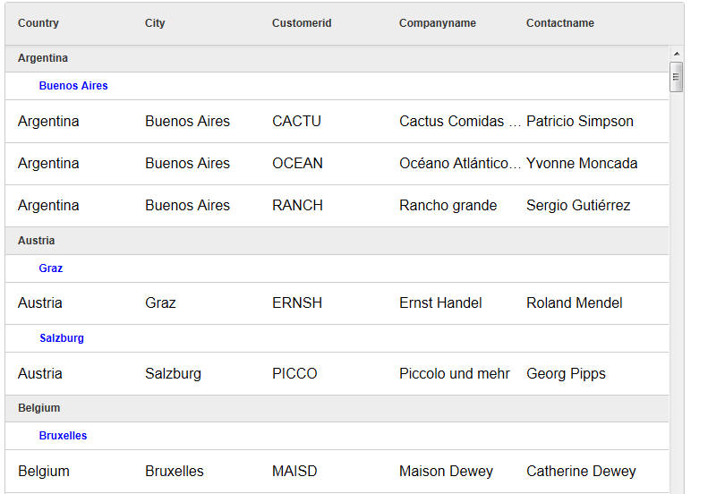
Here is the same List, but this time showing some summary data in the top level group header:
To turn on client-side grouping for a List, check the 'Has client-side group breaks' property for the List as shown in the image below:

You can then click the smart field to open the 'Client-side Grouping' genie.
The genie allows you to define multiple levels of grouping.
For each group you define:
When you define the HTML for the header or footer, you can click the smart field button to open a genie. This genie has an option that makes it easy to include summary data in the header or footer. For example, in the image below, which shows the editor for the header HTML expression, the user has clicked on the 'Insert summary field' hyperlink, and the Summary Field Genie is displayed.

When you use the Summary Field genie, the generated Javascript that is inserted into the expression calls a special helper method of the List object. For example, here is the code to compute the average of the Price column:
this.groupSummary(data,'Price:N','avg')
Note: The .groupSummary() method ignores NULL values in the data.
In the example below, the average is computed and then formatted using a format string
Number(this.groupSummary(data,'Price:N','avg')).toFormat('# ##0,00')
UX Component - List Navigator - When you have a lot of records in a List, scrolling the List to the bring a section of the List into view can be tedious - especially on mobile devices where there is no vertical scroll bar. The List Navigator makes it easy to scroll a List that has group breaks. In the image below a List is shown with group breaks on the first character of the Contactname field. A List Navigator is shown on the right side of the List.
NOTE: You can only display a Navigator if the List has group breaks. It does not matter, however, if the group breaks are computed server-side or client-side.

The user can drag on the Navigator to quickly scroll the List.
The Navigator has an entry for each Group Heading.
The Navigator can be positioned on the left, right, top or bottom of the List. Positioning the Navigator on the top or bottom is generally done when the List is set to scroll horizontally.
You have complete control over the size of the Navigator (when it is not in use) and its position (relative to to the edge of the List). The size of the Navigator when it is in use (i.e. when the user is dragging on it), is automatically determined by its contents. If the size of the Navigator (when it is not in use) is not wide enough (for left/right position), or high enough (for top/bottom position) to show its full contents when the user starts to drag on it, it will dynamically resize while it is in use and then go back to the smaller size when the user stops dragging on it.
To define a Navigator for a List, check the 'Has List Navigator' property on the List Properties pane of the List Builder. Then click the smart field to open the genie.

The List Navigator builder (shown above) allows you to define a Javascript expression that determines what data are put into the Navigator. You expression can reference the special html field. The html field contains the HTML that is shown in the Group Header.
In the above screen show, the HTML expression is:
html
This means that if the Group Headers in the List contain:
A
B
C
D.....
The Navigator will also contain the exact same values.
But, if the HTML expression was:
html.toLowerCase()
The Navigator would contain:
a
b
c
d...
UX Component - List Control - Action Javascript - List Control Actions - Client-side Group Breaks - A new action has been added to the List Control Actions genie that allows you to apply client-side Group Breaks to a List. The user interface for the Genie is identical to the user interface for client-side group breaks in the List Builder. See the section 'UX Component - List Control - Group Breaks - Client-Side' for more details.
UX Component - List Control - Action Javascript - List Control Actions - Show Navigator/Hide Navigator - New actions have been added to the List Control Actions genie that allow you to show a List Navigator for any list that has group breaks and to hide a previously shown List Navigator.
UX Component - List Control - Client Side Filter and Order Expressions - You can now define a client-side filter and order for any List. The client-side filter is applied to the data when it is loaded into the List. If you have defined a server-side filter/order, the client-side filter will be applied in addition to the server side filter/order.
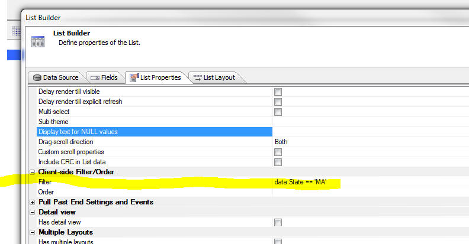
UX Component - Lookup Columns - You can display columns in a List where the data in the column is 'looked' up in another List, or by calling a Javascript function.
Watch Video
Download Component (You will need to change the connection string
for both lists to point to the sample Northwind database).
Consider the following example. The image shows a List based on the Order Details table in the sample Northwind database. Notice that the List shows the ProductId, but not the ProductName.

It would be nice to show the Product Description in the List, as shown in the image below:

Obviously this could be done by specifying a SQL join for the List data source where the Order Detail table was joined with the Products table. However, this would mean that much more data would have to be sent over the network as every row of data in the List would include the Product Description field.
A much better approach would be to 'look up' the data on the client-side as the List was being rendered. You might create a second List based on the Products table that has the ProductId and ProductDescription fields in it.
To define a Lookup, click the smart field for the 'Lookup columns' property on the 'List Properties' pane in the List Builder.

This will open the Lookup Columns genie. You can define as many lookups as you want.
Each lookup must have a unique name. The lookup type is either 'List' or 'Function'.
A 'List' lookup will lookup the value in another List. You can Link the list to the Lookup List on one or more fields.
IMPORTANT: The List that is used as the data source must appear in the UX builder before the List that references it. For example, if the OrderDetails List lookups up values in the Products List, the Products List must appear before the OrderDetails List in the UX builder.
A 'Function' lookup will call a Javascript function that you define and return either a single value, or an object (with multiple values). Data from the current row in the List is passed into the Javascript function. You specify what data from the current row is passed into the Javascript function by setting the 'Lookup field(s)' property in the Lookup Columns builder.
If you specify more than one lookup field (for example, 'Firstname' and 'Lastname'), the lookup fields are passed into the Javascript function in an array. If there is only one lookup field, the value is passed into the Javascript function as a string. Here is an example of a very simple Javascript function that takes an array of input values:
function myLookupFunction(idValues) {
if(idValues[0] == 'John' && idValues[1] == 'Smith') return 'value1';
if(idValues[0] == 'John' && idValues[1] == 'Jones') return 'value12;
return 'Value not found'
}
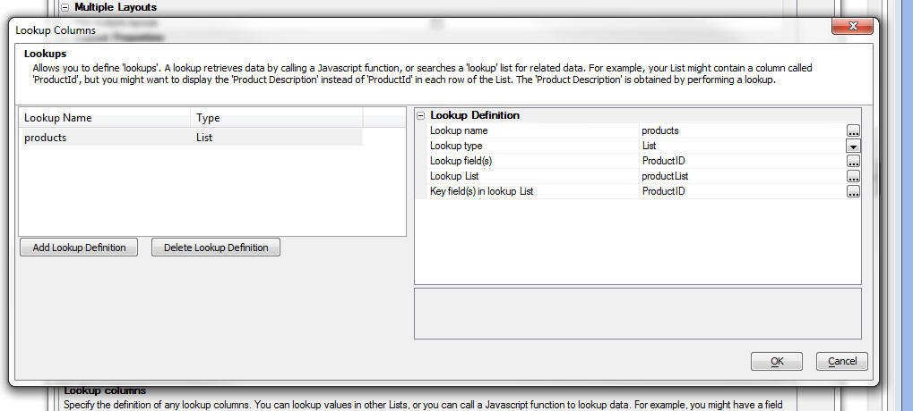
Once you have defined the Lookup, the fields from the Lookup are available in the 'Available Fields' list in the List Builder.
Notice in the image above, the 'Lookup Name' was set to 'products'.
Notice in the image below the available fields include:
The 'products' prefix is derived from the 'Lookup Name'. The list of available fields includes all of the fields in the Lookup List.

UX Component - Buttons - Split Buttons - A new option on the Button control allows you to easily create 'split' buttons. A 'split' button has a 'button' part and a 'down' part. You can define different event handlers depending on which part of the button the user clicked on.
Watch Video - Part 1
Watch Video - Part 2
Watch Video - Part 3
Download components
To define a split button, set the 'Display as split button' property
In your Javascript event handler you can reference
arguments[1]
If the user clicked on the button, arguments[1] is set to 'normal'
If the user clicked on the dropdown arrow, arguments[1] is set to 'split'.
IMPORTANT: You can only reference the arguments[1] parameter if your code is in the button's 'onClick' event. If you use the abstract 'click' event, then arguments[1] is not set to 'normal' or 'split'.

A typical use case for a split button is to display a menu when the user clicks on the down arrow. The user makes a selection from the menu, the action is performed AND the button is updated to show the action the user selected. The next time the user wants to perform the same action, a single click on the button will perform the action (rather than clicking on the down arrow and having to select from the menu).
The relevant methods that the menu can use to update the text in the button are:
For example:
var btn = {dialog.object}.getControl('button1');
btn.setContent( { html : 'New Button Text', tip: 'Help for button', icon: 'mynewicon.jpg'});
In some case, when the down arrow has been pressed, you might want to open a modal window and while the window is open you might want to show the button in a 'depressed' state, For example, notice the difference in the image below compared with the image above:
To set the state of a button to depressed or normal, you can use the
The syntax is:
<buttonObj>.setState( pointerToButtonElement, true/false);
where true indicates the button is depressed and false returns the button to its normal state.
For example, assume the button Id is 'BUTTON_1';
var bEle = {dialog.object}.getPointer('BUTTON_1');
var bObj = {dialog.object}.getControl('BUTTON_1');
bObj.setState(bEle,true);
Application Server - Security Framework - Large Applications - The time to load security framework information for large applications has been significantly improved. In a test of a large application with 5,000 pages, each of which had security settings, the the time improvement is 2 orders of magnitude. To take advantage of this change, you must republish something in your application.
If a project is published from the latest pre-release to an older application server, the older application server will report a 500 internal server error as it won't be able to read the new file. The application server should be the same build as the development program.
SQL Query Builder - Column Alias Naming - When you build a SQL query that involves multiple tables and you select a column with the same name from multiple tables, Alpha Anywhere automatically assigns an alias to the column so that it has a unique name. The alias is a numeric suffix (e.g. CustomerID1). Now, you can specify if you prefer to use a table alias in the generated column alias. To set you preference, click the Preferences hyperlink in the image shown below.

PhoneGap - Support for the PhoneGap Build service is now tightly integrated into Alpha Anywhere.
PhoneGap is an open source product that allows you to build native applications for mobile devices. PhoneGap Build is a web service offered by Adobe that allows you to create native applications that use PhoneGap without having to install the device SDK on your machine, or in the case of iPhone/iPad apps, without even having to use a Mac.
PhoneGap creates a native application with an embedded browser control. Your Alpha Anywhere mobile app runs in the embedded browser, but has access to all of the native features of the phone that are exposed by PhoneGap.
To bring up the PhoneGap genie, click the PhoneGap button on the Web Control Panel toolbar.
You can download the documentation for the PhoneGap Build genie here.
For more information on PhoneGap, go to http://phonegap.com/
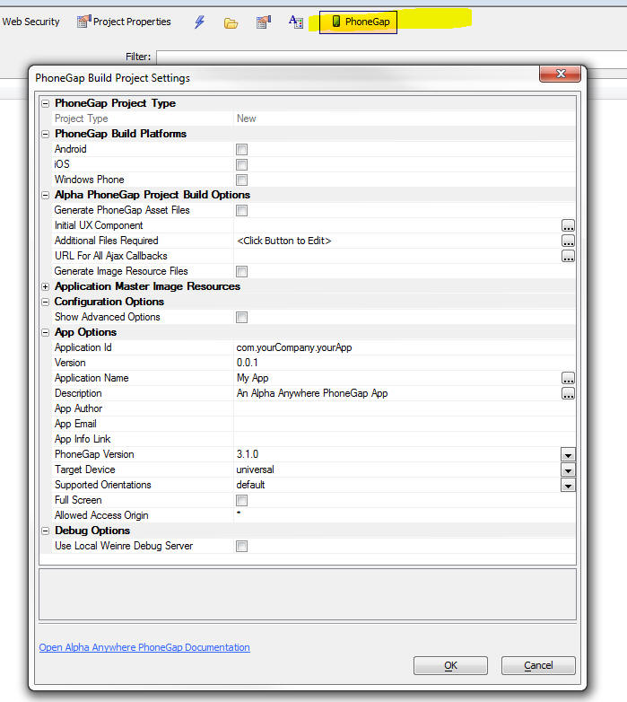
Web Applications - Security Framework - SQL Databases - The Web Application Security framework allows you to store the account information for the users and groups in your security framework in either .dbf tables or a SQL database. Previously, configuring the Web Security Framework to use SQL tables was a manual process, described in the following document:
http://wiki.alphasoftware.com/Using+SQL+tables+in+Web+Security
Now, a new genie makes it easy to configure the Security Framework to use SQL tables for your user and groups list. The genie also make it easy for you switch a previously configured Security Framework from .dbf tables to SQL tables without loosing any data.
When you edit your Security Properties (by clicking the Web Security button when the Web Control Panel has focus), the dialog now has a new property called 'Security Table Type', as shown in the image below.
If you select the 'SQL' option, then when you close the Security Settings dialog, a genie is launched (see screens below) to walk you through the process. The genie will prompt for a connection string and then will create the necessary security tables in your target SQL database.
If you are switching from .dbf security tables to SQL security tables, the genie will transfer your existing data to the SQL database.
NOTE: Remember, the genie will only be started once you close the Security Settings dialog and only if you have not previously configured security settings, or you are changing from .dbf to SQL tables. If you have previously configured your Security Settings to use SQL tables and you edit your security settings, the genie will not be started when you cloe the Security Settings dialog.
NOTE: The genie creates new tables in your SQL database. Mapping to existing tables is not supported.
TIP: If you want to change the SQL database in which your account information is stored you should first convert to use .dbf tables. That will import all of your existing account information into .dbf tables. The convert back to SQL. This will then export the data in the temporary .dbf tables to the new target SQL database.

After you click the OK button to close the Security Settings dialog, the Web Security Tables Upsize Genie is started.


AlphaDAO -
AlphaDAO - ODBC Connection String - DSN Less Connections - You can now create ODBC connections that do not use a DSN.
At the Data Source Name prompt in the Connection String
builder, select

When bypassing the DSN, you must provide the driver name by adding Driver='' as an additional parameter:
Example:
Driver='{Microsoft Paradox Driver (*.db )}'
For the generic ODBC API Alpha Anywhere populates the following parameters in the ODBC connection string if the we encounter corresponding values in the Alpha Anywhere connection string:
Prompt
SQL_DRIVER_NOPROMPT
NoPrompt SQL_DRIVER_PROMPT
Complete SQL_DRIVER_COMPLETE
Required SQL_DRIVER_COMPLETE_REQUIRED
See the Microsoft documentation for ODBC for a complete explanation of these
options.
Here is an example of an Access connection string and the equivalent DSN-less connection string that Alpha Anywhere automatically creates behind the scenes when the first connection string is used.
Connection String using the built-in Access option in the Connection String builder:
{A5API=Access,FileName='C:\temp\Northwind.mdb',A5TraceSQL=Y}
DSN-less ODBC connection string:
{A5API='ODBC',A5Syntax='Access',A5TraceSQL=Y,Driver='{Microsoft
Access Driver (*.mdb, *.accdb)}',DBQ='c:\temp\Northwind.mdb',ExtendedAnsiSQL=1,ImplicitCommitSync=Yes,UserCommitSync=Yes}
a5_show_htmlChrome() Function - Desktop Applications - Opens an Xdialog window and display HTML content using the embedded Chrome browser. Contrast with the existing a5_show_html() function that uses the IE activex control.
For example, consider the following script in a desktop application
dim html as c
html = <<%html%
Hello World
%html%
a5_show_htmlChrome(html)
UX and Grid Component - Styles - iOS7 and Android - New styles are included for iOS7 and Android. For Android, two styles are included - AndroidDark and AndroidLight.
IMPORTANT: If you are converting an existing
component that previously used the iOS style to iOS7,
AndroidDark or AndroidLight you will notice that the
'disclosure icons' on the right edge of your List
controls do not render properly. Also, if your component
was built using the Demo Mobile App that ships with
Alpha Anywhere, the Menu List control might not render
properly. Here is how to fix these two issues.
To fix the List template, edit the template and replace
the disclosure icon in the template with
{images.dialog.listNavSubtle}
or {images.dialog.listNav}.
The fixed HTML will then look like this:
To fix the Menu List, edit the Window container that
contains the Menu List and check the HTML template in
the Header HTML
property. This property is in the
Optional Window
Parts
section. Edit this template and make sure that
the following HTML markup exists at the end of the
template HTML:
| 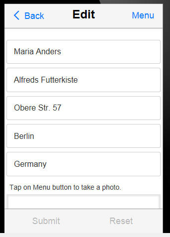 |
 |
 |
 |
| 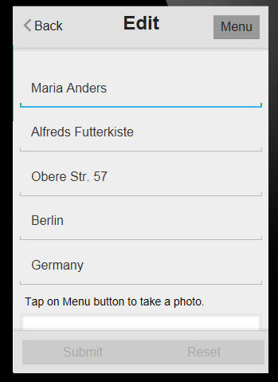 |
 |
A particularly attractive feature of these new styles is the way that the icons in the style are rendered. Instead of using bitmaps for the icons, the styles use CSS Icons (also called Font Icons because the icons are all included in a special font file that is included as part of the style).
See below for more information on CSS Fonts in general and on Font-Awesome in particular. Font-Awesome is an open-source Font Icon that is now bundled with Alpha Anywhere.
UX, Grid and TabbedUI Components - CSS Icons (Icon Fonts) - Support has been added for CSS Icons (also know as Icon Fonts) - Icon fonts have become very popular, especially for mobile applications because they scale smoothly, and are smaller than bitmaps. Also, there are many libraries of icon fonts that can be used with Alpha Anywhere.
In the image below, the two icons in the buttons are both CSS Icons rendered using the Icon Fonts that come with the iOS7 style.

An icon font is just a regular font, excepting that instead of displaying characters, such as 'a', 'b', 'c', etc., the font has icons at each character position. So, assuming that the font defines a 'save' icon for character 'a', then in order to display the 'save' icon on your component, you would display the character 'a', and set its style to use the Icon Font.
Remembering that the 'save' icon corresponds to the character 'a', would be tedious, so a corresponding CSS file is defined. This CSS file has two main purposes:
For example, the CSS might define a rule called 'icon-save' that indicates what character the 'save' icon is mapped to.
When defining an image for a control (for example a button), you would indicate that the image name is:
cssIcon=icon-save
When the component is rendered the HTML markup, might look like this:
This HTML markup is then automatically translated by Alpha Anywhere to:
which correctly renders the icon using the appropriate character in the Icon Font.
You can also define an inline style for the CSS Icon. For example, if you define the image name as:
cssIcon=icon-save {color: blue;}
then, when this is translated automatically, the HTML becomes:
UX, Grid and TabbedUI Components - Font-Awesome Icon Font Library - Font-Awesome is a popular open-source icon font library. Alpha Anywhere now comes with Font-Awesome pre-installed. The Font-Awesome library is installed in the CSSIcons folder in the folder where the Alpha Anywhere executable is installed.
For more information on Font-Awesome, please go to:
In order to use any icons in the Font-Awesome library, (or in any 3rd party CSS Icon Library) you must set a property in the UX, Grid or Tabbed UI builder to indicate that the library should be loaded. Click the smart field button for the CSS (Font) Icons property to open the dialog that allows you to select which CSS Icon library you want to load.
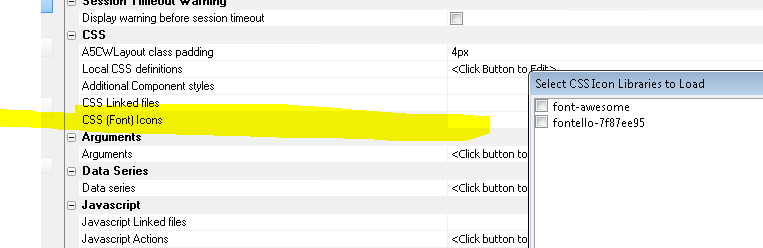
NOTE: When you close the 'Select CSS Icon Libraries to Load' dialog shown in the above image, the library files are copied from the CSSIcons folder in your executable folder to the CSS folder in your Web Project. Because the CSS Icon library files are then part of your Web Project, they will be automatically published when you publish your application.
Once you have indicated the libraries that you want to load, any time you are prompted for the name of an icon, you can select a regular bitmap, or a CSS Icon. For example, note the 'CSS Icon' option on the Image selector:

If you select the CSS Icon option you can select the icon source. If you are using a style that uses icon fonts (for example the iOS7, AndroidLight, or AndroidDark styles), the ImageSource list will show
IMPORTANT: If you currently have build 1620-4172 from 21 Aug 2013 or an earlier build installed, then this is a required update.
UX Component - Slider Control - Slider Message - If you turned on the slider message, but did not have an onChange event defined, you would get an error when trying to save the component. If you had defined an onChange event, there was no error.
IMPORTANT: If you currently have build 1620-4172 from 21 Aug 2013 or an earlier build installed, then this is a required update.
Internet Explorer 8 - Fixed an issue that would occasionally result in a page failing to load in Internet Explorer Version 8.
Tabbed UI - Print Reports - HTML - The Breaking Change described in the release notes for build 1788-4225 is no longer true. It is not necessary to recalculate Tabbed UI components.
API_UUIDSEQCREATE Function - Similar to the existing API_UUIDCREATE() function, but creates the GUIDs in sequential order.
? API_UUIDSEQCREATE
= "e220817f-4e10-11e3-8ac1-
? API_UUIDSEQCREATE
= "e2208180-4e10-11e3-8ac1-
? API_UUIDSEQCREATE
= "e2208181-4e10-11e3-8ac1-
? API_UUIDCREATE()
= "e57b36bb-ba36-48a5-990d-
? API_UUIDCREATE()
= "561f9dcf-8c5a-4485-8f65-
? API_UUIDCREATE()
= "2e1f5004-9a83-4d90-8da7-
*guid_seqcreate() Function - Similar to the existing *guid_create() function, but creates the GUIDs in sequential order.
?*guid_create()
= "{c4bc6cbc-d5a8-44a8-aada-3e94cf5e868f}"
?*guid_seqcreate()
= "{ae059bff-51f0-11e3-89bf-f04da23a263b}"
IMPORTANT: If you currently have build 1620-4172 from 21 Aug 2013 or an earlier build installed, then this is a required update.
Tabbed UI - Print Reports - HTML - If your Tabbed UI has any buttons that print reports with the initial view set to HTML then you will need to recalculate the button that opens the report. To do this, edit the Tabbed UI component, then click the Menu button and select 'Recalculate all controls'. If you don't recalculate the button, you will get this error when you try to print the report: 'phtm.pdfOptions not found'.

| UX and Grid Component | Accordion Control - Changing the Background Color of the Pane Selector |
When you define the properties of an Accordion
control you can specify class names to apply to
the Title Band when the band is opened, closed,
or disabled. This can be used to change the
appearance of the title band depending on its
state. In this video we show how the background color and font title of the title band can be dynamically controlled through custom CSS classes. Watch Video |
Reports - Session Variables - Calculated fields that referenced Session variables were not displaying the value of session variable.
UX Component - Server-side Action Scripting - Send Email Action - If you specified that the e-mail body should be read from the repository table, and that the name of the item in the repository was based on a field in the UX (rather than a hard coded name), the action did not retrieve the entry in the repository correctly.
Web Component - Styles - Global Styles - If you used the Style Editor to create a new global style, the global style folder was not in the correct location. It was placed in a folder called 'Shared Resources' in the current Project. It should have been one folder up in the .WebProjects (plural) folder.
Grid Component - Detail View - Edit On Demand - Date Picker, Edit-Combo, Auto-suggest - Did not work if the Detail View as set to 'Edit on Demand' mode.
sql_lookup() Function - The function will
now accept a blank filter expression and return all
values. Previously, if the "result_Expression" in the
function was a comma delimited list of fields, the
function would return only the first field in the list
for the first record found if the option "flagReturnAllValues"
was false. It now returns all fields listed in "result_Expression"
for the first record found when "flagReturnAllValues" is
false.
The function now has an optional parameter for a column
delimiter that is only added between fields if the
expression is a comma delimited field list. The default
column delimiter is a tab.
IMPORTANT: If sql_lookup() specifies a filter and returns a single field in the return expression, the return value is correctly typed. If more than one value is returned, or no filter is specified, the return value is a character string.
sql_records_get() Function - Now allows a blank
filter expression which will return all records.
UX Component - Client-Side Calculated Fields - In certain cases Javascript rounding errors in math calculations were causing wrong values to be displayed.
Application Server - Report Server - Multiple Application Servers - If you were running multiple instances of the Application Server on a machine, the Report Server did not work correctly.
Reports - Web Applications - Reports - Report Server - If a SQL connection string contained high order characters, it could cause the report to fail.
Forms - Desktop Applications - Web Content Chrome - The Toolbox now has a new item 'Web Content Chrome'. This controls duplicates the functionality of the 'Web Content' control, but uses Chrome and not Internet Explorer to render the content. For example, you can use this control to render Google Maps on the form.
Forms - Desktop Applications - Google Maps Supercontrol - Fixes issues with this control. You now can create a Google Map supercontrol on a form using either the 'Web Content' control (uses Internet Explorer) or 'Web Content Chrome' (uses Chrome).
UX Component - Client-side Calculated Fields - Round() Function - The round() function in client-side calculated fields was using the built-inJavascript Math.round() method to round values. The Javascript Math.round() function rounds negative numbers differently that some people might expect (and differently than Excel does, for example).
For example:
Math.round(-4.5,0) returns -4
However, Excel returns -5.
To be consistent with Excel's behavior (which is likely what most users would expect), when the Round() function is used in a client-side calculation, it now uses the Excel convention.
Behind the scenes, the round() function in a client-side calculation is actually translated into the built-in $u.n.round() function in the Alpha Anywhere Javascript library. This function now takes these optional flags
For example:
$u.n.round(4.25,1)= 4.3
$u.n.round(-4.25,1) = -4.3
$u.n.round(4.25,1,'u') = 4.3
$u.n.round(-4.25,1,'u') = -4.2
$u.n.round(4.25,1,'d') = 4.2
$u.n.round(-4.25,1,'d') = -4.3
$u.n.round(4.25,1,'a') = 4.3
$u.n.round(-4.25,1,'a') = -4.3
$u.n.round(4.25,1,'t') = 4.2
$u.n.round(-4.25,1,'t') = -4.2
UX Component - List Control Performance - The way in which events are bound to List controls elements has been improved. This will result in a improvement in performance when doing an orientation change on the device and switching to a different List layout based on the orientation.
Reports - Layout Table Reports - Project Reports - Text Dictionary - You can now insert text dictionary tags in Layout Table reports defined at the Project level. Workspace reports do not support Text Dictioanries.
For example, you can specify the title of a column in a Layout Table report as
When the report is printed, the text dictionary tags are resolved.
NOTE: To define the Text Dictionary, go to the Project Properties dialog on the Web Control Panel.
To define entries in the Text Dictionary, select the Text Dictionary... command from the Report menu in the Layout Table Report Editor.

When you preview your report, you can specify which Language you want to use by selecting the 'Default Language for Text Dictionary...' command on the Report menu.
When you define a Layout Table report, the Cell Contents dialog allows you to edit the contents of a cell in the Layout Table. If you want to use Text Dictionary tags on some static text, you must check the 'Is Template' checkbox as shown below.

When you click the 'Is Template' checkbox, then
Mobile Theme - Slate - A updated version of the new Slate stylesheet is ready for testing.
To download the style click here. Unzip the file into the CSS folder where you have Alpha Anywhere installed. This will create a new folder called Slate in the CSS folder. To use the style, edit a UX component, and then change the style name for the component to 'Slate'.
NOTE: See Release Notes for more information on the Slate stylesheet.
Grid Component - Query By Example Searches - The search performed by the QBE search feature is now case-insensitive on databases that are normally case sensitive.
You can disable this feature by setting this property in the Grid's Advanced Properties section:
tmpl.qbeSearchIsCaseInsensitive = .f.
Grid Component - Alphabet Button Search - Case-insensitive Searches - The search performed by the Alphabet Button search feature is now case-insensitive on databases that are normally case sensitive. To see this change you must make the Grid dirty and then resave it.
UX and Layout Table Report - AbsoluteLayout Editor - The AbsoluteLayout editor is now based on an embedded version of the Chrome Browser. Previous versions were based on the Internet Explorer ActiveX control. However, as a result of some very unfortunate changes that Microsoft apparently made to IE11 (which comes standard on Windows 8.1), the AbsoluteLayout editor did not work correctly on machines where IE11 was installed. Now that the AbsoluteLayout Editor is based on an embedded version of Chrome, there is no dependency on Internet Explorer and no risk that a future update to IE will break some aspect of the AbsoluteLayout editor.
Grid - Search Part - Setting Initial Value of a Checkbox Control - Multiple Values - The Search Part allows you to define the initial value of each control in the Search Part. However, in the case of a multi-valued controls, such as a Checkbox control, you might want to set the initial value of the control to two or more checked values. You can do this by specifying some Javascript in the client-side onSearchRender event. Use the .setValue() method and pass in an array of the initial selections. For example:
{grid.object}.setValue('S','COLOR',['Red','Green']);
IMPORTANT: If you currently have build 1620-4172 from 21 Aug 2013 or an earlier build installed, then this is a required update.
UX Component - Signature Capture Control - Show in Window - If the Signature Capture control was placed in a Window Container, when the window was opened, the signature capture control was shown but you could not draw on it.
List Control - Microsoft Access - Paginated Lists - There is a bug in Microsoft Access where if you specify a SQL Select statement with a limit clause and an Order By clause, the limit is interpreted as a percentage. For example
SELECT TOP 5 CustomerID, CompanyName, City FROM Customers ORDER BY City
In the above query, Access returns the top 5% of records in the query, not the top 5 records. This bug causes the wrong number of records to be shown in the List when the pagination option is set to .t.
A work around for the above Access bug has been added so that the List now correctly shows the correct number of records.
UX and Grid Controls - Submitting Data with Leading Quote Sign - If you submitted a field value that had a leading quote, the quotes were stripped. For example, if you tried to save this data into a field:
"alpha"
the value that was actually saved was:
alpha
Grid Component - Postgres - UUID Fields - Fixed an error when entering a new record with a primary key that was set to a UUID.
Grid Component - Search Part - Case-insensitive Search Options - The Search Part of the Grid allows you to specify a search option for each search field. These options are:
The above search-options perform a case-insensitive search on databases that are not case-sensitive, and perform a case-sensitive search on databases that are case-sensitive. Oracle and Postgres are examples of databases that are typically configured to perform case-sensitive searches, while MySQL and SQLServer typically perform case-insensitive searches.
Now, new search options are available to force a search to be case-insensitive, regardless of how the database is configured. These options use the portable SQL lower() function to force a case-insensitive search. For example:
lower(name) LIKE lower(:what_name)
The new options are:
AlphaDAO - Postgres - SSL - Support for SSL is now available for PostgreSQL ODBC extension driver variants these include PostgreSQL, PostgresPlus and FoundationDB (under development):
email_smtp_send() Function - Character Set - You can now specify the character set when using the email_smtp_send() function.
DIM ps as P
DIM pm as P
pm.from = "aaron@alphasoftware.com"
pm.from_alias = "Aaron Brown"
pm.to = "ed@alphasoftware.com"
pm.subject = "This is a test"
' Text that contains non ascii characters - encoded as
UTF8
pm.message = convert_acp_to_utf8("mme manire")
' Indicate that we want to send the text with 'utf8'
encoding
pm.charset = "utf8"
IF email_smtp_open(ps, "mail.alphasoftware.com")
email_smtp_send(pm, ps)
END IF
Email_smtp_close(ps)
Mobile Theme - Slate - A updated version of the new Slate stylesheet is ready for testing.
To download the style click here. Unzip the file into the CSS folder where you have Alpha Anywhere installed. This will create a new folder called Slate in the CSS folder. To use the style, edit a UX component, and then change the style name for the component to 'Slate'.
NOTE: See Release Notes for more information on the Slate stylesheet.
Reports - Free-form Reports - Maximum Report Height - The maximum height of a report section was previously limited to 22 inches. This limit has now been substantially expanded. The maximum height of a report section is now approximately 300 inches.
UX Component - Watermarks - High Order Characters (e.g. Hebrew) - Specifying watermark text for a textbox or textarea control using high order characters (for example, Hebrew characters) is possible, but requires the text for the Watermark to be entered as a unicode encoded string, with the {unicode} prefix.
For example, to set the watermark to the characters shown in the screenshot below, enter:
{unicode}05D0{unicode}05D1{unicode}05D2
In the screenshot shown below, the watermark is in Hebrew and it is on the right side of the control.
To get the text flow direction to 'right-to-left' (so that the watermark is on the right side of the control), the following Javascript was added to the client-side onRenderComplete event:
document.body.style.direction = 'rtl';
Display List of all Session Variables and their Values - The following .A5W page shows how you can list all of the session variables in the user's session and also display the value of each session variable.
<%a5
'test variables - you can delete these if you want
session.var1 = "alpha"
session.var2 = "beta"
'get a list of all of the session variables
'!f flag indicates that no functions should be returned
dim vars as c
vars = properties_enum(session.variables,"!f")
dim html as c
html = ""
'loop over each session variable and get its value
for each vn in vars
html =
html+"session."+vn.value+"="+eval("session.variables."+vn.value)+"
"
next
'print out the contents of 'html'
?html
%>
IMPORTANT: If you currently have build 1620-4172 from 21 Aug 2013 or an earlier build installed, then this is a required update.
Application Server - Activation - Fixes a bug in build 1755-4125 that prevented an Application Server that had not previously been activated from being activated.
List Control - Microsoft Access - Paginated Lists - There is a bug in Microsoft Access where if you specify a SQL Select statement with a limit clause and an Order By clause, the limit is interpreted as a percentage. For example
SELECT TOP 5 CustomerID, CompanyName, City FROM Customers ORDER BY City
In the above query, Access returns the top 5% of records in the query, not the top 5 records. This bug causes the wrong number of records to be shown in the List when the pagination option is set to .t.
A work around for the above Access bug has been added so that the List now correctly shows the correct number of records.
UX and Grid Controls - Submitting Data with Leading Quote Sign - If you submitted a field value that had a leading quote, the quotes were stripped. For example, if you tried to save this data into a field:
"alpha"
the value that was actually saved was:
alpha
Mobile Theme - Slate - A updated version of the new Slate stylesheet is ready for testing.
To download the style click here. Unzip the file into the CSS folder where you have Alpha Anywhere installed. This will create a new folder called Slate in the CSS folder. To use the style, edit a UX component, and then change the style name for the component to 'Slate'.
NOTE: See Release Notes for more information on the Slate stylesheet.
Reports - Free-form Reports - Maximum Report Height - The maximum height of a report section was previously limited to 22 inches. This limit has now been substantially expanded. The maximum height of a report section is now approximately 300 inches.
UX Component - Watermarks - High Order Characters (e.g. Hebrew) - Specifying watermark text for a textbox or textarea control using high order characters (for example, Hebrew characters) is possible, but requires the text for the Watermark to be entered as a unicode encoded string, with the {unicode} prefix.
For example, to set the watermark to the characters shown in the screenshot below, enter:
{unicode}05D0{unicode}05D1{unicode}05D2
In the screenshot shown below, the watermark is in Hebrew and it is on the right side of the control.
To get the text flow direction to 'right-to-left' (so that the watermark is on the right side of the control), the following Javascript was added to the client-side onRenderComplete event:
document.body.style.direction = 'rtl';
This update is a required update. It must be installed before November 1.
UX Component - Client-side Readonly Expression - If your UX component has a client-side readonly expression you must recalculate the control and then resave the UX component. To recalculate the control, select the control that has the client side readonly expression and then make a change to any property of the control.
| UX Component | Image and File Upload - In Depth Look at What Happens Behind the Scenes When a File is Uploaded |
When you upload a file or image in the UX
component, the binary data that is uploaded is
stored in temporary session storage until the
user commits the record they are editing. This
video discusses what happens when a file is
uploaded and what happens when the record you
are editing is committed. The video also shows how you can write Xbasic to modify the filename that is stored on disk when the Camera is used to capture an image on a mobile device. Watch Video - Part 1 Watch Video - Part 2 Watch Video - Part 3 Watch Video - Part 4 Download Component |
| Reports | Printing Data that Contains HTML Markup |
In some cases the data in a report you are
printing might contain HTML markup. You might
want to print the HTML markup in its rendered
form, rather than its raw form. In this video we
show how you can configure the report editor to
print HTML markup as rendered HTML. Watch Video |
| UX and Grid Component | Understanding Component Aliases and the Use of Placeholders in Javascript Code |
When you write your own Javascript code in a
Grid or UX component, you often use
'placeholders' (such as {Dialog.object} ) in
your code. In this video we explain in depth how
these placeholders work and we discuss the
concepts of a component 'alias'. Watch Video - Part 1 Watch Video - Part 2 Watch Video - Part 3 Watch Video - Part 4 Watch Video - Part 5 |
| UX Component | Consolidate Multiple Ajax Callbacks into a Single Callback |
This video is aimed at advanced developers. It
shows how the a5_ux_action() utility function
can be used to optimize certain types of UX and
List control actions into a single Ajax
callback. Watch Video - Part 1 Watch Video - Part 2 Download Component |
| Xbasic | Working with XML Documents |
Xbasic has always had a powerful XML parser, but
the new *property_from_xml() function and the
new XML document viewer make it ever easier to
work with XML documents. Watch Video |
| Grid and UX Component | Image Upload to a Character Field |
When you upload images in either the Grid or UX
component, the target field can either be a
binary field or a character field. In the case
of a character field, the filename of the image
is stored in the field and the image file itself
is stored in a file in the specified 'upload
folder'. The filename of the image that is stored in the target character field can be a fully qualified filename, or more likely, you will store the 'shortfilename' (i.e. a relative filename). If you choose to store the 'shortfilename', then you must configure an image path property so that the image filename can be resolved. This video discusses this issue. Watch video |
| UX Component | Responsive Layout - Modifying the Design of a Component Automatically Based on the Device and Screen Orientation |
'Responsive' is the term used to refer to
a design that automatically changes its layout
based on the device on which it is running, the
device orientation and the window size (for
desktop browsers). The UX component has very
powerful tools for implementing responsive
layouts. In this video we show how the Responsive Layout Genie can be used to build highly responsive UX component designs. Watch Video - Part 1 Watch Video - Part 2 Watch Video - Part 3 Advanced settings Watch Video Download Components |
| UX Component | List Controls/Data Series - Using an IN Clause with Array Arguments in a SQL Statement |
List controls, Charts and Data Series in a UX
can all be based on a SQL query. In some cases
you might want to use an IN clause in the SQL
query and reference an argument value to get the
values for the IN clause. This video shows how you can use arrays in a SQL::argument object and then reference the argument in a SQL IN clause. Watch Video Download Component |
| UX Component - List Control | Using the Server-side AfterQuery Event - Computing a Column Total |
For List controls that are based on a SQL query,
the server-side AftterQuery event fires after
the query to get the List data has been
executed. This event is typically used to
compute some Javascript code to return to the
browser. In this video we show how the event can be used to return the total for a column in the List. Since the List is paginated, all of the data in the List query is not currently shown in the List and therefore the calculation of the total must be done on the server. Watch Video - Part 1 Watch Video - Part 2 Watch Video - Part 3 Download Components |
| UX Component | Computing a List Column Total using Client-side Calculations |
In cases where the List data is not paginated
(and therefore the List contains all of the data
in the List query), column totals can be
computed client-side. In this video we show how the data in a column in the List is computed using Javascript. Watch Video Download Components |
| UX Component - List Control | Adding Dynamic Bubble Help (tooltips) to a Field in a List |
In this video we show how you can add dynamic
bubble help to a field in a List control using
some Javascript in the onItemDraw event. Watch Video Download Component |
| UX Component | Embedded UX Components - Understanding the onPanelActivateEvent |
A common practice when designing mobile
applications is to break a large application
into multiple smaller UX components and then
embed components in Panel Cards in the 'master'
UX component. When you do this, it is useful to
be able to execute code whenever a child UX
component gets focus. In this video we show how the onPanelActive client-side event in a child UX will fire whenever the Panel Card in which it is embedded gets focus. Watch Video Download Components |
| UX Component | Annotating an Image using the Signature Capture Control |
The signature capture control can be used for
more than capturing images. In this video we
show how a medical application can use the
signature capture control to annotate an image
of the body to indicate affected areas. Watch Video Download Component |
| UX Component - List Control | Server-side Summary Values |
For List controls that are based on SQL data,
you can specify that summary data (e.g. total,
avg, count, min and max) should be computed for
certain columns in the List control. The summary
computations are based on the List query (not on
the rows actually visible in the List). In the
case of a paginated List, there may be more rows
in the query than are visible in the List. For
example, the query might have 1,000,000 rows,
but the list might show 20 rows at a time. This video shows how a List control is configured to compute summary values, and then how the afterServerSideSummaryCompute event in the List is used to update a label on the UX component showing the summary values. Watch Video |
| Grid Component | Locking the Screen while a Long Running Ajax Callback is Executing |
If a Grid or UX component makes an Ajax callback
that takes a long time to complete, you might
want to display a message to the user telling
them to wait and also you might want to 'lock'
the screen to prevent them from firing other
callbacks until the current callback has
completed. In this video we show how this is easily done using a custom modal window. Watch Video |
| Grid Component | Storing State Information |
Both the Grid and the UX allow you to store
'state' variables that are available on both the
client and server-side. The UX has always allowed you to set state variables on the server side (in any server-side event or an Ajax callback) by setting variables in the 'e._state' object. Previously, to set state variables on the server side in the Grid you had to generate Javascript code. Now, you can also set variables in the e._state object on Grid server side events. This video shows how this is done. Watch Video - Part 1 Watch Video - Part 2 |
| UX and Grid Component | Overview of How to Localize a UX or Grid Component |
In this video we give a brief overview on how a
Grid or UX component can be localized so that
the same component can be used for different
languages. The technique involves using either
Language tags ( Watch Video - Part 1 Watch Video - Part 2 For certain languages, the text flow direction is 'right to left' (e.g. Hebrew, Arabic). In this video we show how you can execute Javascript to change the text flow direction for the whole page. The Javascript is added to the component's render complete event. It sets the text direction using this code: document.body.style.direction= 'rtl' Watch Video - Part 3 |
| UX Component | Show/Hide Buttons in Panel Header/Footer Without Messing Up Button Alignment |
A common pattern in mobile applications is to
have buttons in a Panel header or footer and to
space the buttons so that some are left
justified, some centered and some right
justified. Then you might show/hide one or more
of the buttons, but you don't want the spacing
on the buttons to be affected. This video shows how this can be done. Watch Video |
| UX Component | Building a Menuing System in a UX Component Using Docked Panels in a Panel Layout |
In mobile applications is it common to build
menus that slide in from the right or left of
the screen. In this video we contrast how this
is accomplished in jQuery mobile and Alpha
Anywhere. The approach we have taken in this
video for Alpha Anywhere shows how the menus can
be placed in Panel Cards that are docked inside
a Panel Navigator. Watch Video - Part 1 Watch Video - Part 2 Watch Video - Part 3 Watch Video - Part 4 Watch Video - Part 5 Download Components |
| UX Component | How to Dynamically Change the Code on a Button |
(Advanced Javascript Developers) This video
shows how you can dynamically change the code
associated with a button on a UX component by
'unbinding' the existing code and then 'binding'
new code. Watch Video |
| UX Component - List Control | Edit the Current Row in a List Control in another UX Component |
The Grid component has an option in Action
Javascript to edit the current row in a Grid
using a UX component (that is data bound to the
same table that the Grid is based on). This
option also allows you to add a new record to
the Grid using a UX component. The action for
the Grid is called: "Open a UX component to Edit Current Record in Grid, or add a new Record" Now an analogous action is available in Action Javascript to edit the current row in a List control (for Lists that are based on SQL or DBF data sources) using another UX component that is data bound to the same table that the List is based on. The action for the UX is called: "Open a UX component to Edit Current Record in List Control in a UX, or add a new Record to a List Control in a UX" Watch Video |
| UX Component - Mobile | Panel Layout - Understanding the Different Ways in Which a Docked Panel Can Be Shown - 'Over', 'Slide' and 'Push' |
Using Panel Layouts that contain multiple child
Panels is common when building mobile
applications. One or more of the child Panels
that are shown in a Panel Layout can be 'docked'
(i.e. hidden). Panels can either be explicitly
docked, or conditionally docked (for example, on
an orientation change). Panels that have been docked can be shown (typically by clicking on a 'controller' button in a Panel Header). When a docked Panel is shown, you can specify the method use to show the Panel. This method discusses the various methods - Over, Slide and Push Watch Video |
| UX Component - Mobile | Overview of Different Methods for Specifying the Size of a Panel in a Panel Layout |
When using a Panel Layout you can optionally
specify the size of each Panel that is displayed
within the Panel Layout. When you specify the
size of a Panel, you can use either an absolute,
percentage or relative size. This video
discusses the various options. Watch Video |
| UX Component | Embedding Reports into a UX Component and Dynamically Filtering the Report |
Reports can be 'embedded' into the UX component
and then dynamically filtered based on values
that the user enters into controls on the UX.
This allows for powerful interactive dashboard
type applications where users can interact with
reports. This video shows how this can be done. Watch Video |
| UX Component | Custom Styling for RadioButton and CheckBox Controls |
The standard way in which browsers render
checkbox and radiobutton controls is pretty
drab. In this video we show how the UX component
allows you to apply a rich set of styling
options to radiobutton and checkbox controls. Watch Video - Part 1 Watch Video - Part 2 Watch Video - Part 3 Download Component |
| UX Component | Positioning Controls at Absolute Locations on the Screen using the WYSYWIG Builder - Understanding the AbsoluteLayout Container |
By default, the UX component lays out the
controls that have been placed on the component
automatically, 'flowing' the controls from left
to right, top to bottom. All controls are
perfectly aligned. However, there are times when
you want more precise control over the placement
of controls. This is especially true when you
want to use an image (for example, an image
of a PDF form you might have) as the backdrop to
a form and then place your UX component controls
at precise locations exactly over the 'fields'
in the image. This video shows how you can place controls in an an AbsoluteLayout container and the set the absolute position and size of each control. Watch Video - Part 1 Watch Video - Part 2 Watch Video - Part 3 Watch Video - Part 4 Watch Video - Part 5 Watch Video - Part 6 Watch Video - Part 7 |
| UX Component | Understanding the 'NoFloat' Container Type |
By default, all controls in a UX component are
wrapped in a DIV with a class name of
A5CWLayout. This class adds a CSS float and
padding so that the controls 'flow'
automatically, left to right, top to bottom
across the page. If a control has a 'break'
after it, a new 'line' is started. This
automatic lay out of the controls on a UX makes
it very easy to design attractive, perfectly
aligned forms. However, there are cases when the padding that is automatically added to all controls gets in the way of the effect that you are trying to achieve and in these cases you can wrap controls in a special 'NoFloat' container. This video explains how the 'NoFloat' container works. Watch Video |
| UX Component | Adding a 'Flow Collapse' Button to Panels in a Panel Layout to Hide/Show Panels |
Panels in a PanelLayout can be hidden or shown
by adding a 'flow collapse' button to a Panel. A
common reason for doing this is to create a
'full screen' view for the 'primary' Panel in a
PanelLayout. This video shows how this is done. Watch Video Download Component |
| UX and Grid Component - | 'NotInList' Event for Auto-Suggest and Edit-Combo Controls |
The 'NotInList' event fires when the user enters
a value into an Auto-suggest or Edit-combo
control and the value entered is not is the list
of available choices for the control. Watch Video |
| Reports | Printing QR Codes |
Printing QR Codes on Layout Table Reports is now
a built-in feature. Watch Video |
| UX Component | Displaying QR Codes on a UX Component |
A common requirement, especially in mobile
applications, is to display data encoded as a QR
code. The UX component has a built-in QR Code
control that makes it very easy to display any
data in the form of a QR Code. This control uses
Javascript to generate the QR Code. Because it
is a pure Javascript control, no Ajax callback
is required and therefore it is very fast.
However, you can also generate QR codes on the
server. This video shows how QR codes can be shown on a UX component using both client-side and server-side techniques. Watch Video - Part 1 Watch Video - Part 2 Download Component |
| Reports | Absolute Positioning of Objects in a Layout Table Report - Using a Form Image as Report Background |
In a previous video we have shown how the UX
component supports absolute positioning of
controls over a bitmap image of a form
(typically a PDF form). Layout Table reports also offer the ability to also use an image of a form as the report background and to then position the report fields directly over the 'fields' on the background image. This video shows how this is done. Watch Video - Part 1 Watch Video - Part 2 Watch Video - Part 3 |
Reports - Printing Reports that Contain HTML Markup
in the Data - In some cases the data in a report you
are printing might contain HTML markup. You might want
to print the HTML markup in its rendered form, rather
than its raw form. In this video we show how you can
configure the report editor to print HTML markup as
rendered HTML.
Watch Video
UX Component - Buttons - How to Programmatically Enable and Disable Buttons - In V12 all buttons on the UX component are 'Adanced Buttons'. (In V11 buttons could either be 'standard' or 'advanced'). Advanced buttons are implemented as Javascript objects and so in order to enable or disable them programmatically, you need to get a pointer to the object and then call the object's .setDisabled() method.
NOTE: All Javascript controls, not just buttons, in the UX (List, ButtonList, SpinList, Tree, etc.) support the .setDisabled() method.
For example:
var bObj = {dialog.object}.getControl('BUTTON_1');
//set the button disabled
bObj.setDisabled(true);
//now enable the button
bObj.setDiabled(false);
If the button is in a Repeating Section, and you want to call the .setDisabled() method for a specific button instance (say the button in row 3), then you can pass in an optional parameter to the .setDisabled() method. For example:
//get a pointer the button element in row 3
var eles = $('{dialog.componentname}.V.R1.BUTTON_2_A5INSTANCE3');
//pass in eles as an optional argument to the .setDisabled()
method
{dialog.object}.getControl('BUTTON_2').setDisabled(true,eles);
NOTE: In the above example, if you did not pass in the optional second argument to the .setDisabled() method, the button in every row of the Repeating Section would have been disabled.
UX Component - Lists and Embedded Components - Delay Render Until Visible - Panel Layouts - Panels and Embedded Objects that were set to delay render until visible were not rendered if they were in a Panel Card inside a Panel Layout if the initial state of the Panel Card was 'docked'.
Forms - Super Controls - Google Maps Supercontrol - Windows 7/8 - If you used the Google Maps Superconrol in a Form on a machine where IE10 was installed, you would get a Javascript error. This error is apparently a bug in IE10 because the same Form runs without error on XP (where IE8 is used). A work around for this IE bug has been found and now the Form will work on Windows 7/8 without error.
Reports - Layout Table Reports - Linked Reports - If a child report uses arguments, and the parent report also uses arguments, then in the dialog where the child report is linked, you can now specify argument bindings to bind a child report argument to a parent report argument. Previously you could only bind child report arguments to literal or field values.
Report - Layout Table Reports - Linked Reports - Arguments in the Report Filter - If a child report (that was based on a SQL query) defined a filter in the report definition that used arguments, when this report was linked by a parent report, the child report arguments were not seen. Child report arguments were only seen if they were part of the report Data Source.
UX Component - List Control - Scrolling - As a result of changes to the change event described in a previous pre-release build, scrolling in he List caused the List's onClick event to fire. This is now fixed. Here is how tapping, and scrolling and List events now work:
ReportMailer and Netmailer - The installers for both have been updated for V12. If you need to use either of these addins with V12, please download the installers from the location specified in your order confirmation email.
UX Component - Data Bound - Security - If a UX component had security on a control so that for certain roles a control was not present on the UX, when doing an insert into a SQL table, you would get an error.
UX Component - Action Javascript - Insert, Update or Delete on an Unbound UX - Fixed some issues with the action.
Grid Component - Detail View - Edit on Demand - Cancelling out of the New Record - If a Grid with a Detail View was configured to only edit on demand when cancelling out of a new record, the Detail view did not return to the correct state (showing controls as labels, and not textboxes).
AlphaDAO - MySQL - Longbinary Fields - Fixes an issue with inserting null blobs inot longbinary fields.
Grid Component - File Export - In the case of an ascii export, was not honoring the extension if you supplied a custom client side filename.
Windows 8.1 - Working Preview - Windows 8.1 has made a change that is causing Working Preview in the Component Builders to fail. You will receive an error message from Javascript ("access denied"). This build has a work around so that Working Preview is now working in Windows 8.1.
Report Server - The 4 core Report Server is now automatically enabled without requiring a Feature Key to be added. Previously, the Report Server was only enabled if you had entered a Feature Key.
TIP: If you want to disable the Report Server, you can go to Project Properties and disable it from there. The setting will apply to the current project.
UX Component - Action Javascript - Map Actions - Add Marker to a Map - If you selected the action to add a marker to a map and you passed in a comma separated latitude/longitude value (e.g. 31.65583, -81.21025) the marker was not positioned correctly on the map. The problem did not occur if you passed in an address. The reason that the marker was not being positioned correctly was that the generated code passed the lat/lng value to the .addMarker() method as a string, when it should have been passed in as an array. To fix the problem you will need to edit and resave the action in your component.
UX Component - Cascading Dropdown Controls - Repeating Sections - If a UX component had Repeating Sections, and had cascading dropdownbox controls in both the top level section of the UX and in a Repeating Section, the cascading dropdown in the Repeating Section was not populated correctly when the UX was populated with an existing record.
UX Component - Opening Child UX Components in Dynamic Panels - Fixed a bug where the Image Upload action in a child UX component that was opened in a Dynamic Panel did not work.
TabbedUI Component - Grid Component - Multi-line Text Area - Under some circumstances when working with a Grid that has a multi-line text-area control in a Tabbed UI, pressing down or up arrow in the text-area would not move the insertion point.
Grid and UX Component - Edit Combo - Did not scroll the current selection into view.
Reports - HTML Reports - SQL Tables with Spaces in Field Names - Fixed a bug in HTML reports when there were spaces in field names.
.Net Framework 4.5 - Alpha Anywhere currently requires .Net 4.0. We will soon be switching to .Net 4.5. In anticipation of this change the Full and Patch installers will now install .Net 4.5 on your machine if it is not already installed.
UX and Grid Component - Javascript Confirmation Windows - Title Direction - By default, all confirmation dialogs show the title on the left and the close icon on the right. For right to left languages, you might want to change this.
To do so, put the following Javascript in the Grid or UX onRenderComplete client-side event:
A5.msgBox.window = {
title: {
direction: 'rtl'
}
}
Reports - Layout Table Reports - Absolute Layout - Layout Table Reports now support absolute positioning of fields. This feature is similar to the absolute positioning of controls in a UX component using an AbsoluteLayout container.
The primary motivation for adding this feature to reports is to allow you to use an image of a form (for example, an image of a IRS 1040 PDF form) as the background for a cell in a Layout Table report, and to then allow you to place the fields in the report at explicit locations so that they print 'on top of' the fields in the image background.
NOTE: This feature is only available for Layout Table reports that are being edited in the full report editor - not in the Quick Report genie.
To access the feature, double click on a cell in the Layout Table report. The 'Cell Contents' dialog opens up. Note a new choice in the dialog - 'Absolute HTML'.

If you select this option, then click the 'Edit...' button, the Absolute Layout editor for the cell opens up:
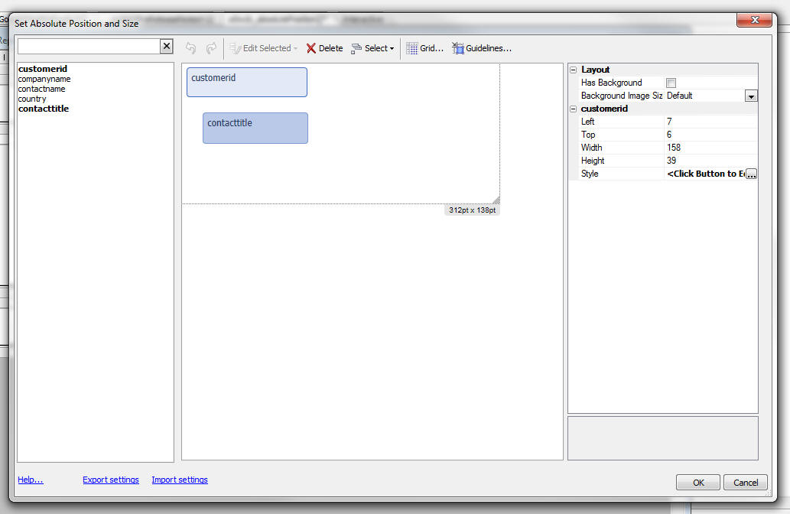
The editor shows the available fields, a 'canvas' where you can place the fields using drag and drop actions, and a property sheet showing properties of the selected field.
NOTE: Unlike the UX component, the size of the editing region (shown as 312 by 138 pt in the above image) cannot be changed in the editor. The size of the editing region is determined by the size of the cell in the Layout Report.
For each field that you place on the canvas, you can use the Style property in the Property Sheet to define properties (using HTML CSS syntax) to control the appearance of the field in the report.
For example, if you want a field in the absolute layout HTML to appear in red, with a blue border, you would define the following for its Style property:
color: red; border: solid 1px blue;
Placing 'Radio Buttons' and 'Checkbox' Controls
Assume that the background image for a cell uses the image shown below. Consider the 'Filing Status' area. It is likely that in your table, you have single field called 'filingStatus' that might have a value of 1, 2, 3, 4, or 5 stored in the field.
However, when you print a report, you want to print an 'X' above the appropriate box in the image.
To do this, you would need to define five calculated fields in your report. For example:
filingStatus_1 = if(filingStatus = 1, "X","")
filingStatus_2 = if(filingStatus = 2, "X","")
filingStatus_3 = if(filingStatus = 3, "X","")
filingStatus_4 = if(filingStatus = 4, "X","")
filingStatus_5 = if(filingStatus = 5, "X","")
Having done this, when you open the Absolute Layout editor, your field list will show the five calculated fields you have defined, and you can place each one of these fields over the appropriate radio button control on the image.

Defining the Background Image for the Cell
When you are in the Absolute Layout editor, you can define the background image for the cell. When you specify the image, you can specify how the image should be scaled to fit the cell. The options are:
UX Component - Mobile Applications - Location Information - Current location information can be used in several actions in Action Javascript. These actions include Ajax Callbacks, Centering a Map, Placing a Marker on a Map, Filtering a List for Records within the Vicinity of the Current Location.
Now, the Action Javascript builders expose three properties which previously were hard coded to default values. These properties are:
High accuracy - If true, the device will use its most
accurate method to get location information. If false,
the device will use its fastest or lower power
consumption method depending on the device. (Default
true)
Timeout - The amount of time in milliseconds to wait on
the device to acquire location information excluding the
amount of time it takes the user to grant the web page
access to geolocation data. (Default 15000)
Max age - The amount of time in milliseconds to accept a
previously acquired location. 0 means that a new
location must be acquired from the device. (Default
30000).
You can also change the default settings for these properties, by adding Javascript like this (using appropriate values for each of the properties) to the onRenderComplete client-side event:
{dialog.object}.locationMaximumAge = 30000;
{dialog.object}.locationTimeout = 15000;
{dialog.object}.locationHighAccuracy = true;
UX Component - ListControl - onBeforeSelect event - The onBeforeSelect event fires before the Select event. If the event returns false, then the user is prevented from moving off the currently selected row in the List.
Grid and UX Component - Windows, Auto-suggest and Edit-combo - Specifying a Maximum Window Height - When you define the window height for a pop-up window, an auto-suggest control or an edit-combo control, you can specify a window height.
If you leave the height property blank, the window will be sized to accommodate the entire height of the content (which will result in a window that is too high if there is a lot of content).
On the other hand, if you specify an explicit size, then you will end up with a window that looks too big if there is just a small amount of content in the window.
Now, when you specify the window height you can use the 'max' syntax to specify that the window should be automatically sized to fit its content, but should not grow bigger than the specified max size. For example, you can specify the height property as:
max: 300px
UX and Grid Component - Auto-suggest and Edit-combo Controls - 'NotInList' Rule - The 'NotInList' event fires when the user enters a value into an Auto-suggest or Edit-combo control and the value entered is not is the list of available choices for the control.
The primary use case for this event is to allow the developer to add code to the component to add the value that was entered into the control into the table on which the control choices are based so that the next time the user visits the control the value entered will be in the pick list for that control.
UX Component - QRCode Control Type - A new control type has been added to the UX component. The QRCode control displays its value as a QR Code.
The image shown below shows a UX with a QRCode controls.
Watch Video - Part 1
Watch Video - Part 2
Download Component

NOTE: The QRCode control is a client-side control. That means that Javascript is used to generate the QR code. You can also use Xbasic methods to generate servers-side QR codes (as bitmaps or SVG). See ::Qrcode::Creator:: below for more details.
To place a QRCode control on a UX, select the control type from the toolbox.

The QRCode control is just like other data bound controls in that it has a .getValue() and .setValue() method.
To display a QR code, you simply call the .setValue() method of the control. For example:
{dialog.object}.setValue('MYQRCONTROL_1','value to encode');
QRCodes - Xbasic - New methods have been added to Xbasic to generate QRCodes. The methods are:
::Qrcode::Creator::GenerateBmp(c text, c flags)
::Qrcode::Creator::GenerateBmpFile(c text, c filename, c flags)
::Qrcode::Creator::GenerateJpeg(c text, c flags)
::Qrcode::Creator::GenerateJpegFile(c text, c filename, c flags)
::Qrcode::Creator::GeneratePng(c text, c flags)
::Qrcode::Creator::GeneratePngFile(c text, c filename, c flags)
::Qrcode::Creator::GenerateRTF(c text, c flags, n width, n height)
::Qrcode::Creator::GenerateSVG(c text, c flags)
The flags parameter can be set to 'L' (low), 'M' (medium) or 'H' (hight) to indicate the level of error correction in the generated QR Code.
For example, from the Interactive window:
dim svg as c
svg = ::QRCode::Creator::GenerateSVG("http://www.alphasoftware.com","L")
a5_show_html(svg)
To display a QR code in an Xdialog:
svg = ::QRCode::Creator::GeneratePngFile("http://www.alphasoftware.com","c:\myfiles\qr1.png","L")
ui_dlg_box("QRCODE","{image=c:\myfiles\qr1.png}")
Qrcode_bitmap() Function - Generates a bitmap of
a QR Code - This function is a wrapper for the ::QRCode::Creator::GeneratePng()
function. However, it is able to scale the bitmap to an
explicit size.
Returns either binary PNG data or base64 encoded string with 'data:image/png;base64,' prefix
Syntax
A blobOrString = qrcode_bitmap(c text, c flag [,N width , [N height [, L flagBase64encodedWithPrefix]]])
QRCodes - Layout Table Reports - Layout Table Reports now support printing any cell in the Layout Table that contains a text value as a QR code.
To print the contents of a cell as q QR code, simply check the 'Display QRCode for text in cell' property at the bottom of the 'Cell Contents' dialog box.

For example, here is a report showing customers in the sample Northwind database:

UX Component - PanelLayout Containers - Flow Collapse Buttons - Allows you to put a button in a Panel (only applies if the Panel is contained within a PanelLayout) to 'collapse the flow' of Panels that come 'before' the current Panel. By 'collapsing the flow' of a Panel, you make the Panel invisible.
The following set of images help to explain the concept:
The image below shows a Panel Layout with 3 child Panel (the child Panels can be PanelCards, PanelNavigators or PanelLayouts). The PanelLayout flow is set to LTR so that the Panels 'flow' from left to right. All of the Panels in the PanelLayout are currently visible. PanelCard1 and PanelCard2 both have an explicit size (say 100px) and PanelCard3 takes up the remaining available space.

Now, let's assume that PanelCard3 has a button (either in the Panel body itself, but more likely in its header or footer) to 'collapse the flow' (of the Panels that come before it).
If this button was pressed, then the Panels that come before it (PanelCard1 and PanelCard2 - because the flow direction is LTR) will get 'collapsed'. Their widths will get set to zero using an animation.

When the animation has completed, Panel Card3 will consume all of the available space in its parent PanelLayout.

The 'Flow collapse' button acts as a toggle. So, if the button were pressed a second time (while PanelCard1 and PanelCard2 are collapsed), then PanelCard1 and PanelCard2 will be re-shown, again, using an animation.
When would you use a 'Flow collapse button'? Assume that in the above example, PanelCard1 and PanelCard2 contain navigation or menu controls and that PanelCard3 is the main 'work' area of your application. By have a 'flow collapse' button in PanelCard3, you can allows you users to toggle 'full screen' mode on and off.
The primary use case for this pattern is when PanelCard1 and PanelCard2 contain 'navigation' or 'menu' controls and
Defining a 'Flow Collapse' Button
To define a 'Flow Collapse' button for any Panel (PanelCard, PanelNavigator or PanelLayout), set the 'Has a 'flow collapse' button' property in the Panel's Property Sheet.
Once you click this property, you can specify the ID of the button that will act as a 'flow collapse' button.
NOTE: If you have defined an onClick event for the flow collapse button, the event will be ignored since the button is being 'hijacked' to perform the 'flow collapse' action.
The builder allows you to define separate icons to use for when the Panels are in the collapsed state and when they are in the expanded state.
IMPORTANT: If you want to display icons on the flow collapse button you must set the button type to the appropriate option in the properties for the button you specify as the 'flow collapse' button.

UX Component - NoFloat Container Type - By
default, all controls in a UX component are wrapped in a
DIV with a class name of A5CWLayout. This class adds a
CSS float and padding so that the controls 'flow'
automatically, left to right, top to bottom across the
page. If a control has a 'break' after it, a new 'line'
is started. This automatic lay out of the controls on a
UX make it very easy to design attractive, perfectly
aligned forms.
However, there are cases when the padding that is
automatically added to all controls gets in the way of
the effect that you are trying to achieve and in these
cases you can wrap controls in a special 'NoFloat'
container.
In the image below, the first container (red) is a standard container. 'Firstname' and 'Lastname' are on the same line (because the break after 'Firstname' was turned off) as are 'City' and 'State'. Also, each control has padding around it.
The second container (blue) has been set to a 'NoFloat' container. Notice that all controls now are on their own line (even though there is no break after 'Firstname' and 'City' and all padding between controls has been removed.

Xdialog - List Control - W=milliseconds Directive to Delay Firing Selected Event - A new directive can be added to a List control to delay firing the selected event for a specified number of milliseconds.
The directive:
W=milliseconds
is inserted in the Listbox commands (between the % symbols).
To test the effect of this directive, create a new Xbasic script and paste this code in. Then click on a row - a message box will show the selected value. Then hold the down arrow down and the selection will move quickly down the list, but the event which shows the current selection will not fire until you have stopped holding down the down key.
Then, repeat the exercise with te W=2000 directive removed. You will see that the message box is shown for every row.
dim colors as c
colors = a5.Color_Enum()
dim selected as c
dim dlg_title as c
dim dlg_body as c
dim dlg_event as c
dlg_title = "Title"
dlg_body = <<%dlg%
{removecomments}
{removeleadingspaces}
[%W=2000%.100,30selected^#colors!selected_changed];
%dlg%
dlg_event = <<%code%
if a_dlg_button = "selected_changed" then
a_dlg_button = ""
ui_msg_box("",selected)
end if
%code%
dim flagOK as l = .f.
ui_dlg_box(dlg_title,dlg_body,dlg_event)
UX Component - Radiobutton and Checkbox Controls - Custom Styling - The standard way in which browsers render checkbox and radiobutton controls is pretty drab. The UX component allows you to apply a rich set of styling options to radiobutton and checkbox controls.
For example, here is an example of how these controls can be styled:

Watch Video - Part 1
Watch Video - Part 2
Watch Video - Part 3
Download Component
To style a Radiobutton or Checkbox, check the 'Has custom design' property.

Then click the smart field for the 'Custom appearance designer' to open the builder. The builder gives you control over a large number of appearance properties and also shows a real-time preview of the control's appearance.
UX Component - Embedded Obects - Reports - HTML Reports - When you embed a report into a UX component, you now have the option to specify that the report should be rendered as HTML.
Panel Layout - Display Method - 'Push' Option - A new option for the 'Docked Panel display method' property has been added. The option is 'push'. The 'push' method pushes the Panel that are to the left (or right, above or below - depending on the Flow direction)
Panel Layout - Dock Options - Several new options have been added to specify when a Panel that is contained in a Panel Layout should be docked (i.e. hidden). The complete list of options is shown below:
The options prefixed with 'landscape', 'portrait', and 'self' are new.
If a Panel's dock option is set to 'portrait-collapse-before' then the Panel will be docked (i.e. hidden) when the device is in portrait mode, but not when in landscape mode.
If a Panel's dock option is set to 'self-portrait-collapse-before' then the Panel will be docked when the Panel Layout in which it is contained is in 'portrait' mode (i.e. it has a width that is less than its height), regardless of the orientation of the device itself.
Panel Layout - Size Options - New options have been added for specifying the size of a Panel in a Panel Layout. You can now use percentages and negative sizes.
If you specify a percentage size, the percentage represents the percentage of the available space in the Panel Layout.
If you specify a negative size (e.g. -100px), then the Panel Layout will have a size equal to the size of the Panel Layout (in the flow direction), minus 100px.
Grid Component - Alphabet Button Search - Custom Buttons - The Alphabet Button search feature in the Grid has always allowed custom button definition. For example:
A..C = left({searchfield},1) >= 'A' and left({searchfield},2) <= 'C'
In the above example, a button with a label of 'A..C' is defined with a corresponding filter of:
left({searchfield},1) >= 'A' and left({searchfield},2) <= 'C'
Now, you can specify that the filter expression uses arguments. For example the above custom button can now be defined as:
A..C = left({searchfield},1) >= :arg1 and left({searchfield},2) <= :arg1 && a|||c|arg1
The argument value is defined using the syntax:
argumentValue|||argumentType|argumentName
and is separated from the filter by:
&&
When specifying the argument value you can use an expression by prefixing the argument value with an = sign.
For example:
Today's Orders = orderDate = :d1 && =date()|||d|d1
If you want o use International characters in an argument value, then you must use an expression that uses the *html_to_text() function and an html encoded version of the argument value.
For example:
&;#1489; = left({searchfield},1) = :arg1 && =*html_to_text("&;#1489;")|||c|arg1
UX and Grid Component - CSS Editor - Remember Last Pane Used - The CSS editor now remembers the last pane you were on. If you switched to the Code pane, then closed the editor, the next time you open the editor you will be on the Code pane. Previously, the editor always opened on the Design pane.
UX Component - List Control - Action Javascript - Edit Current Row in List - A new action has been added to Action Javascript to allow you to edit the current row in a List control that is based on a SQL or DBF data source in another UX component.
The action is called:
Open a UX component to Edit Current Record in List Control in a UX, or add a new Record to a List Control in a UX
The UX component that is used to edit the List record
must be data bound to the same table that the List is
based on, and the AfterDialogValidate event in the UX
used to edit the List row must have a server-side Action
Script to save the record when the Submit button is
pressed.
UX Component - Logical Checkbox - Prompt Text - You can now specify an optional label that appears to the right of the logical checkbox.
UX Component - Radiobutton, Checkbox and Logical Checkbox Controls - Now wrap the individual choices and their corresponding label in a element. You can specify the class name for this element. This allows for more styling options on these controls.
Web Projects Control Panel - Find File - A new option on the right click menu allows you to search for a particular file in all of the Web Projects in the current Workspace. This function is useful if you have many Web Projects in a particular Workspace and you are not sure in which Web Project a particular file is located.
UX Component - AbsoluteLayout (WYSIWYG) - You can now position controls in a UX component at absolute locations on the screen.
A common use case for absolutely positioning controls is so that you can display an image of a professionally designed form as a 'backdrop' to your UX and then precisely position your UX controls over the 'fields' in the form image.
By default, when you place controls on a UX component, the controls are positioned on the screen automatically by the UX component. The controls 'flow' from left to right, then top to bottom.
For example, say you have have a UX component that has these controls on it:

As the image shows, there is no break after the 'firstname' field, so 'firstname' and 'lastname' will be on the same 'line'.
'address' will be on its own 'line' because there is a break before and after it. Finally, 'city', 'state' and 'zip' will all be on the same 'line'.
Here is how this UX will render:

Because the UX was in charge of rendering, you can see that the baselines of all controls on the same 'line' are automatically aligned. And the left edges of controls at the start of each line are also automatically aligned. Furthermore, automatic spacing has been placed between the controls so that the form lays out nicely.
NOTE: The amount of spacing between controls is defined by setting the 'A5CWLayout Class Padding' property on the UX Properties Pane. By default this is set to 4px. You can set explicit values for top, right, bottom and left using the standard CSS convention: For example: 4px 4px 0px 0px.
An important (and extremely powerful) aspect of the way Alpha Anywhere lays out controls automatically is how the UX component will react when the window in which it is contained is resized. In the example show above, City, State and Zip are on the same line. However if the window is resized smaller and there is no longer space for all of the controls on the line, the Zip control will automatically 'wrap' to the next line. As the window is further resized smaller, eventually the State field will also automatically 'wrap' to the next line.
When you use Absolute Layout, you turn off the automatic layout of controls that the UX component does and instead you take on responsibility for positioning and sizing controls yourself.
For example, you might lay out the controls in the following (admittedly decidedly odd) fashion:

The way in which you indicate that you want to absolutely position controls in a UX is by wrapping the controls in an AbsoluteLayout container.

The AbsoluteLayout container has these properties:

Absolute positions for controls - The smart field for the 'Absolute positions for controls' property will open the builder where you can visually set the position and size of each control in the container.
Has background image - The 'Has background image' property indicates if the AbsoluteLayout container has a background image.
Control style overrides - The 'Control style overrides' property is a convenience feature. It allows you to automatically add some CSS to use for the in-line style of every control in the AbsoluteLayout container without having to go to individual controls in the AbsoluteLayout container and set the in-line style, control by control. For example, if you wanted every control in the AbsoluteLayout to have a red border, you could just set this property to:
border: solid 1px red;
The layout of controls in the screenshot shown earlier is represented in the AbsoluteLayout builder as follows:

NOTE: Data controls (such as textboxes, textareas, dropdown boxes, etc.) only show the control itself (and not the control Label - if the labels are turned on), when placed in an AbsoluteLayout container.
Working with the AbsoluteLayout Editor
The AbsoluteLayout editor allows you to position controls on a 'canvas'. You also define the size of the control on the canvas. The editor has many advanced features that make positioning and sizing controls precisely extremely quick and easy.
To place an object on the canvas, select the object in the field list on the left. The click on the canvas at the position you want to place the object, and while holding down the mouse button, draw a rectangle that represents the size of the object.
While you are drawing, the current size and position of the object are shown.
You can also edit the size and position of an object in the Property Sheet shown on the right.

To
Toggling the Background Image On/Off
If you have specified that your AbsoluteLayout container has an image background, then when you open the editor, the image background is shown. However, with the image shown, it can be hard to see all of your controls against the image background. You can therefore toggle the image on/off by clicking the 'Background Image' button on the toolbar:

Guidelines
Guidelines make it very easy to position controls relative to other controls. For example in the image shown below, the width of the bottom control is being adjusted and a vertical guide line has been drawn to show the the right edge of the control is aligned with the right edge of the control above it.
Adjusting Multiple Controls as Once
You can select multiple controls by shit-clicking on controls. Once you have more than one control selected, the Edit Selected button on the toolbar becomes enabled.
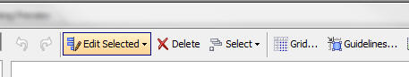
This button displays a menu that allows you to perform actions on multiple controls at once, such as aligning them, or sizing them.
A useful option is the ability to size multiple controls to a be the same size as a 'reference' control. The 'reference' control is the first control that was selected when you selected multiple controls.
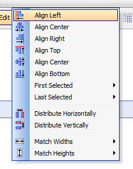
Positioning Individual Radiobutton and Checkbox Controls
Normally when you position a Checkbox or Radiobutton control in an AbsoluteLayout container, you position the control as a single object and then Alpha Anywhere renders the individual radio button or checkbox controls for each choice (either horizontally, vertically, or in snaking columns). However, in certain use cases (typically when using an image as a background), it is necessary to precisely position the individual choice objects.
For example, consider the section of the IRS 1040 form shown below. The checkboxes show on the form (which are really radio buttons - since only a single box is meant to be checked) are laid out in a custom fashion.
When using this image as the background image for an AbsoluteLayout container you would clearly want to have a 'FilingStatus' Radiobutton control and then be able to position each choices over the checkbox shown in the image.
Furthermore, you would want to suppress the label associated with each Radiobutton choice because the image background explains what each option represents.
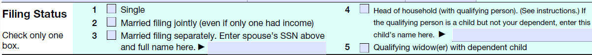
In order to turn on the ability to individually position choices in a Checkbox or Radiobutton control, you must turn on the Custom layout when in AbsoluteLayout container property for the Checkbox or Radiobutton control:

NOTE: The Custom layout when in AbsoluteLayout container property is only shown if the Radiobutton or Checkbox control is based on a static list of choices.
Once you have checked the Custom layout when in AbsoluteLayout container property, when you open the AbsoluteLayout editor, the individual choices for the control will be available in the field list so that you can place them on the canvas. For example, in the image below the Radiobutton control has 3 choices, and so the AbsoluteLayout builder shows three objects which can be individually placed.

UX Component - {dialog.object}.setFocus() Method - Javascript Controls - Now works for Javascript controls (such as the List control). Previously this only worked for HTML controls (such as a checkbox, textbox, etc). The motivation for adding support for Javascript controls to the .setFocus() method was to enable the following use case:
Assume you have a UX component with a List control on one Panel and some other controls on another Panel. The second Panel has a button that returns focus to the first Panel. However, when focus returns to the first Panel, pressing up and down keys (when running on a desktop browser) did not navigate in the List (even though visually, the List appeared to have focus). By using the .setFocus() method in the event handler for the button that returns focus to the first Panel, you can solve this problem.
UX Component - List Control - Client-side Summary Values - You can specify that client-side summary values should be computed for any column in a list.
To turn on client-side summary values for a field in the List, check the property shown below in the List builder:

NOTE: For Lists based on SQL data, you can also specify server-side summary values. Server-side summary values are only different than client-side summary values if the List is paginated. Server-side summary values compute the summary based on the List query, whereas client-side summary values are based on the data that is currently loaded into the List. In the case of the paginated List, there can be many more records in the List query than are displayed in the List.
When you compute summary data for a List column, you will typically want to display the data on the UX component. The List's afterClientSideSummaryCompute event is useful for this. The afterClientSideSummaryCompute fires after the client-side summary values have been updated.
In this event handler you can reference the summary data that was computed. Here are some examples of how your Javascript code can reference summary values:
csSummary['QTY'].total
csSummary['PRICE'].avg
csSummary['PRICE'].max
The 'csSummary' object contains all of the summary data. The field name must be in uppercase and the summary type (total, avg, count, min, or max) must be in lower case.
You can also use a method of the UX object to read a List summary value using the following method:
{dialog.object}.getListClientSideSummaryValue(listName, fieldName, summaryType)
For example:
var tot = {dialog.object}.getListClientSideSummaryValue('list1','QTY','total');
UX Component - List Control - Static Data - Group Breaks - If your data is already in the the correct sorted order, you can instruct the List not to sort the data on the break field.

Reports - Layout Table Reports - Creating Custom Style Sheets - It is now much easier to create custom style sheets for Layout Table Reports.
In the Quick Report Genie, you can click the 'New Style Sheet...' hyperlink.
In the Layout Table Report editor when you select the 'Apply or Create Stylesheet..' menu, you can then click the 'New Style Sheet' button shown below.


When you select the New Style Sheet option, you get a dialog that allows you to define the color and other properties of the style.

ShowResultSet() Function - The showResultSetFunction() is a useful utility function to quickly show data in an AlphaDAO resultset. It is typically used in the Interactive window, or while debugging code.
Here is an example of an Interactive window session:
dim cn as sql::Connection
cn.open("::Name::sqlserver2012_northwind")
dim sql as c = "select * from customers where city = 'london'"
cn.PortableSQLEnabled = .t.
?cn.Execute(sql)
= .T.
dim rs as sql::ResultSet
rs = cn.ResultSet
showResultSet(rs)

Note: After you have called the showResultSet() function once to show a resultset, you cannot call it a second time to show the same resultset without first executing the query again. That's because AlphaDAO resultsets are 'forward only'.
Grid Component - State Variables - Setting State Variables on the Server-Side Using the e._state Object - Both the Grid and the UX allow you to store 'state' variables that are available on both the client and server-side.
NOTE: State variables are variables whose value can be set or read on either the server-side (using Xbasic), or the client-side (using Javascript). Once a state variable has been set, its value is available on all subsequent Ajax callbacks.
The UX has always allowed you to set state variables on
the server side (in any server-side event or an Ajax
callback) by setting variables in the 'e._state' object.
For example, in a server side event:
e._state.mystatevar1 = "alpha"
However, in the Grid, you could not use this syntax. Instead, you had to generate Javascript to set the state variable and then return that Javascript in the response from your server side event. For example:
{grid.object}.setStateInfo({mystatevar1: 'alpha'});
Now, you can also set variables in the e._state object on Grid server side events.
NOTE: Some Grid events do not take 'e' as the input parameter. These events take 'args' as one of their input parameters. In events that do not take 'e' as in input parameter, you can still set state variables on the server-side by setting
args.rtc._state.mystatevar1 = "alpha"
On a Grid, when a server side event is executing, state variables can be read from the e.__si2 object. (For the few server-side events that take 'args' you can read state variables in the args.rtc.__si2 object).
Watch Video - Part 1
Watch Video - Part 2
The section below summarizes how state variables are set and read on both the server-side and client-side in the Grid and UX:
UX
Server-side (Xbasic)
Set state variable - e._state.myvar1 = "alpha"
Read state variable - myvar = e._state.myvar1
Client-side (Javascirpt)
Set state variable - {dialog.object}.setStateInfo({myvar1: 'alpha'})
Read state variable - var myvar = {dialog.object}.stateInfo['myvar1'];
GRID
Server-side (Xbasic)
Set state variable - e._state.myvar1 = "alpha"
Read state variable - myvar = e.__si2.myvar1
Client-side (Javascirpt)
Set state variable - {grid.object}.setStateInfo({myvar1: 'alpha'})
Read state variable - var myvar = {dialog.object}.stateInfo['myvar1'];
NOTE: The inconsistency between the Grid and the UX in the way state variables are read in server-side code is because of legacy code in the Grid that could not be changed without making a breaking change to Grids. Therefore when you read a state variable in a Grid you read from the e.__si2 object (and not the e._state object). Setting state variables, however, is done in the e._state object.
Mobile Theme - Slate - A updated version of the new Slate stylesheet is ready for testing.
To download the style click here. Unzip the file into the CSS folder where you have Alpha Anywhere installed. This will create a new folder called Slate in the CSS folder. To use the style, edit a UX component, and then change the style name for the component to 'Slate'.
NOTE: See below for more info on the Slate stylesheet.
UX Component - List Control - Server-side Summary Values - For List controls that are based on SQL data, you can specify that summary data (e.g. total, avg, count, min and max - total and avg are only available for numeric fields) should be computed for certain columns in the List control.
NOTE: Client-side summary values can also be computed. Client-side summaries are not limited to SQL data sources.
The summary computations are based on the List query (not on the rows actually visible in the List). In the case of a paginated List, there may be more rows in the query than are visible in the List. For example, the query might have 1,000,000 rows, but the list might show 20 rows at a time. If the List is not paginated, then the number of rows in the List is the same as the number of rows in the List query.
Server-side summary values are automatically updated when the List data is refreshed. If your UX is data-bound and you have specified that the List should be updated when records are updated or saved, the server-side summaries will be updated when data in the List is edited.
To turn on summary calculations for a column in a List, check the 'Compute summary values' property. Once this property is checked, the 'Summary field formatting' property is shown where you can define display formats for the data. For example, to round the average to 2 decimal places, you would use:
round(
You can use any Xbasic function for format the data.
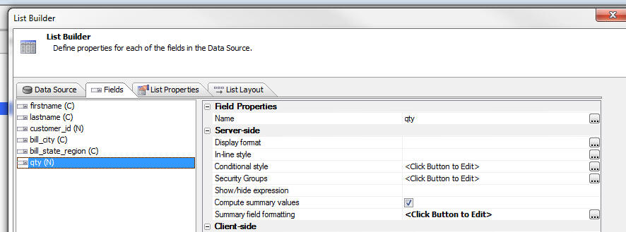
When you compute summary data for a List column, you will typically want to display the data on the UX component. The List's afterServerSideSummaryCompute event is useful for this. The afterServerSideSummaryCompute fires after the server-side summary values have been updated.
In this event handler you can reference the summary data that was computed. Here are some examples of how your Javascript code can reference summary values:
summary['QTY'].total
summary['PRICE'].avg
summary['PRICE'].max
The 'summary' object contains all of the summary data. The field name must be in uppercase and the summary type (total, avg, count, min, or max) must be in lower case.
You can also use a method of the UX object to read a List summary value using the following method:
{dialog.object}.getListServerSideSummaryValue(listName, fieldName, summaryType)
For example:
var tot = {dialog.object}.getListServerSideSummaryValue('list1','QTY','total');
UX Components - Abstract Tap and DoubleTap Events - Two new abstract events have been added to the UX component. These events have been added because the behavior of the click and dblClick events have been changed in an important, but subtle way. (See below for more details on the click and dblClick events.) The tab and dblTap events allow you to get the previous behavior of the click and dblClick events should your application require this behavior.
Assume you have a large button and you click on the button and then, before releasing, you move your finger or mouse by more than the threshold amount (used to be 5px, now upped to 10px). You then released, while still over the button.
Previously, the click event would not have fired. Now it will fire. The tap event, however, will not fire (because you moved by more than the threshold amount).
If you have moved off the button by the time you release, then neither the tap or click events will fire.
NOTE: The List control has also added onTap and onDblTap events. The behavior of the onClick and onDblClick events in the List has been changed.
UX Component - Click and DblClick Event - The behavior of the abstract click and abstract dblClick events have been changed slightly so as to make it consistent with the behavior of a these events on native devices.
Previously, if you clicked (or dblClicked) on a control and then, before releasing, moved your pointer by more than the threshold amount (was 5px, but has not been changed to 10px), then when you released (assuming you will still over the original element), the event did not fire. Now, the event will fire as long as you are still anywhere over the original element at the time you release.
NOTE: If your application need the original click event behavior, use the new tap event.
UX Component - Action Javascript - Delete Record Action - Enhancements - The Delete Record action allows you to delete a record in a UX component that has been data bound.
Previously, this action required that the primary keys for the data bound table had been loaded (normally done in the onDialogInitialize event using the 'Load Primary Keys for Parent Table' server-side action, or by an Ajax callback).
It is no longer necessary for primary keys to have been loaded in order to use this action.
When you use this action now, the builder now gives you these options for specifying the primary key of the record to delete:
The dialog for this action is shown below.

UX Component - Signature Control - Client-side Enable Expression - Now honors the client-side enable expression. When the control is disabled, the buttons are disabled, not the canvas (where the user signs).
UX Component - Signature Control - Client-side Show/Hide Expression - Now honors the client-side show/hide expression.
UX Component - Client-Side Events - onPanelActivate - A common practice when designing mobile applications is to break a large application into multiple smaller UX components and then embed components in Panel Cards in the 'master' UX component. When you do this, it is useful to be able to execute code whenever a child UX component gets focus.
The UX component now has a new client-side event - onPanelActivate. This event fires when the UX gets focus (because the Panel Card in which it is embedded has gotten focus).
IMPORTANT: This event will only fire if you have assigned an explicit alias to the UX component when you embed it into its parent UX component.
Watch Video
Download Components
pdf_exportJPG() function - Converts a PDF file to a JPG image - A new function converts a PDF file into a JPG file. If the PDF file has multiple pages then one .jpg file is created for each page. The .jpg files are numbered sequentially.
Syntax:
L flag = Pdf_exportJPG(c file, c result_file , c resolution)
resolution - 'default', 'low', 'medium', 'high'
result_file - name of the .jpg file to create.
UX Component - Session Timeout Warning - The UX component can now be configured to display a warning to the user that their session is about to expire.
To turn on session timeout warning, check the 'Display warning before session timeout' property on the Properties pane of the UX builder.
Once you turn this property on, there are a number of properties that allow you to customize the feature.

The onSessionTimeoutWarning client-side event will fire just before the warning dialog comes up telling the user that their session is about to expire.
UX Component - List Control - Server-side In-line and Conditional Style - Previously, if you defined a server-side in-line or conditional style for a field in a List control, a span was inserted into the data on the server to format the data. While this gave the required visual appearance, it meant that if you read the value from the control, the value that you read included the HTML markup.
This has now been changed. The server-side style is computed on the server and is now included in a separate (hidden) field in the List data. The style is then applied on the client-side. The net result of this change is that when you read data from a field that has a server-side style, the data no longer includes any HTML markup.
Reports - Double Lines - When setting the style for the border around a cell in a Layout Table, you can now set the style to 'double' to create a double line, as shown in the image below.

Here is how the Properties Pane is configured to set the left edge of the field to a double line:

UX Component - Setting Default Values - Multi-valued Controls - Certain controls in a UX are multi-valued. For example, the checkbox control, a List control that has been configured to allow multi-select, a dropdownbox that has been configured to display more than one line and allow multi-select, etc.
To set the initial (i.e. default value) for a control, you can either set the value in the Default Value property in the control properties, or you can set the value in the onDialogInitialize event, using code like this:
e.control.color = "a"
However, there was no easy way to set the default value to more than a single value.
Now, when you specify the default value for a multi-value control, you can use a special array() keyword.
For example, to set the initial value for a checkbox that displays a list of colors, you can enter this in the Default Value property:
array(red,green,blue)
Or, you can enter this in the onDialogInitialize event:
e.control.selectedColors = "array(red,green,blue)"
UX Component - List Control - Custom Datasource - The Xbasic function that is called to compute the data in a List populated by a Custom data source can now return Javascript to the browser by setting a value in this property in the 'e' object that is passed into the Xbasic function for the Custom data source:
e.javascript
UX Component - List Control - SQL Data Source - AfterQuery Server-side Event - A new server side event is available for List controls that are populated using a SQL data source.
The AfterQuery event fires after the List query has been performed. The typical use case for this event is to compute some Javascript to return to the browser. For example, you might want to compute the total for a column in the List and then update some control on the screen.
Watch Video - Part 1
Watch Video - Part 2
Watch Video - Part 3
Download Components
argument_add_array_argument() Function - Adds or updates an array argument to a sql::arguments object.
The sql::arguments object can be populated with argument arrays (typically used when passing values to a SQL query that uses an IN clause).
Syntax: argument_add_array_argument( sql::arguments argumentObject, c argumentName, c argumentType, c argumentValues)
Example:
dim args as sql::arguments
dim cities as c
cities = <<%txt%
London
Boston
Bulawayo
%txt%
argument_add_array_argument(args,"color","c",cities)
UX Component - List Control and Data Series - Using Argument Arrays in SQL Queries - You can now use an IN clause with an argument array in the SQL query for a Data Series or List Control.
For example
SELECT customerId FROM customers where country IN (:array_whatCountry)
Notice that when using an IN clause with arguments, the argument name must start with array_.
Also notice that the argument reference in the SQL statement is in parentheses.
UX Component - Responsive Layout Genie - Mobile applications must run on multiple device form factors and must respond to orientation changes. You typically want to design a single UX component that will respond automatically (i.e. make layout changes) based on the device it is running on (e.g. phone, small tablet, large tablet, desktop browser) and the orientation of the device (mobile devices) or window size (desktop browsers).
The new Responsive Layout Genie makes it easy to create responsive layout designs.
Watch Video - Part 1
Watch Video - Part 2
Watch Video - Part 3
Download Components
To open the Responsive Layout Genie, click the smart field for the 'Responsive layout settings' property on the UX properties pane.

This will open the builder as shown below:

The builder is divided into three sections. In the first section you define your layout rules. In the second section you define the actions that should take place when a rule is true, and in the third section you define the properties for the action.
Rules
Layout rules are simply Javascript expressions that evaluate to true or false. The rules can reference special system fields, such as screen.width, or device.isWebKit.
IMPORTANT: Since the expression is Javascript, you need to use Javascript syntax, such as == for an equality test, && for an AND operator and || for an OR operator.
You can define as many rules as you want. Each rule you define is given a name. The name is arbitrary, but a meaningful name is recommended as you can refer to the rule name in client-side watch expressions.
For example, in the screen shot show above, there are two rules that have been defined.
To add a new rule click the Add Rule button an give the rule a name and enter its expression. When entering the expression, you can click the Insert Field hyperlink to get a list of available system fields to use in the expression.
The image below shows the system fields that can be used in the rule expression.

You can also save rule sets so that they can easily be imported into other UX components.
Actions
Actions are performed when a rule is true. You can define as many actions as you want. To add a new action, click the Add actions button. A dialog allows you to select the action you want to perform:
Once you have selected an action, the Properties for that action can be defined.
Properties
Action properties must be defined for each rules. Therefore, for a given action, you will select the first rule and define the action properties. Then you will select the next rule and define the action properties for this rule, an so on, moving through all of the rules.
Using Javascript to Specify an Action Property Value
In some cases you can use Javascript to specify the value of a property. For example, in the screenshot shown above, the 'Layout size' property for PANELCARD_2, for the 'portrait' rule has been specified as:
javascript:getpanelwidth(screen,device)
The 'javascript:' prefix indicates that the property value should be computed by calling a Javascript function. This function takes screen and device as inputs so you can reference the special system fields that the Javascript rules expressions reference. In the above case, we are calling a Javascript function, but we could just as easily specified inline Javascript code after the Javascript: prefix.
Viewing Generated Javascript
It can be useful to view the generated Javascript for the actions so that you can learn how certain actions are performed.
To see the generated Javascript, right click on an action in the builder.
The dialog (shown below) shows you:

When are Layout Rules Evaluated
Layout rules are evaluated:
When the Layout Rules are evaluated the rules are evaluated in the order in which they were defined. When a true rule is found, the actions for that rule are performed and a special property in the UX object is set with the name of the rule that was true.
You can reference this property as follows:
{dialog.object}._activeLayoutRule
Using Active Layout Rule Name in a Client-side Watch Expression
Client-side watch expressions (e.g. show/hide, dynamic images, enable and dynamic style) can reference a special system field called:
dialog.activeLayoutRule.
This field has the name of the currently active Layout Rule.
In the screen below, a container in the UX is only being shown if the 'landscape' rule is true.

Rules Mode
By default, the actions associated with the first Layout Rule that is true are executed and then further rules are not checked. However, you can set the Rules Mode to AllRules so that the actions for all true rules (not just the first true rule), are evaluated. To change the Rules Mode, you need to set the Responsive rules mode property in the UX Properties.

Manually Executing a Rule
Regardless of whether a rule is true or not, you can use a method of the UX object to force the actions for a particular rule to fire.
For example:
{dialog.object}.fireLayoutRule(ruleName)
UX, AppLauncher and Custom Component - Page Title Property - The components now have a page title property that allows you to set the page title when the component is run from an .a5w page.

Web Projects Control Panel - Search in Files - This feature has now been enhanced to allow you to specify the type of files to search

UX Component - List Control - Read-only Property - The List control now has a read-only property. This is especially useful if you have configured the list to behave like a carousel and you want to prevent any item in the List from displaying as selected. To find out what row a click, right click, or double-click action occurred on, your Javascript can reference
arguments[0]
This gives the zero based row index of the target row.
UX Component - Action Javascript - Panel Action - A new action to show/hide a Panel header or footer has been added.
ShowXML() Function - Displaying an XML Document Structure - The ShowXML() function is a utility Xbasic function that is helpful in understanding the structure of an XML Document.
The image below shows the user interface displayed by the ShowXML() function.
The first image shows the XML pane where the raw XML is displayed. The second image shows the Xbasic Properties pane is shown where a tree view of the Xbasic variable (into which the XML has been parsed) is shown.

*property_from_xml() Function - Populates an Xbasic Dot Variable with XML Attribute/Element Values - Xbasic has always had very strong XML parsing features (see Help, Open Documentation and search for 'Parsing XML Documents with Xbasic'), however the new *property_from_xml() function provides a new way in working with XML. This function populates an Xbasic dot variable with the data from the XML document. Once you have he Xbasic variable, it is very easy to extract a specific element or attribute value from the XML document.
UX Component - List Control - Word Wrapping Text in a Column - New options are available for controlling how long text in a list column should be handled. By default, long text is truncated and ellipses are displayed to indicate that the text is truncated.
You can turn on the word-wrap option for individual fields. When you turn on word-wrap, you now get a 'wordwrap option' property with these choices:
tag in HTML
UX Component - Server Side Actions - Send E-mail - The server-side Send E-mail action now supports the option of using the Mandrill mail service to deliver the e-mail.
a5_ux_action() - New options added to the a5_ux_action() Xbasic Utility Function - The a5_ux_action() is a utility function that generates the Javascript for certain actions that the UX can perform. The use case for this function is to consolidate several Ajax callbacks into a single callback. New options have been added to this method. The full list of options current supported are summarized below:
The actions that can be performed by this utility function are:
List Control Action
Filter List
Refresh List
Refresh row(s) by key value
Append row(s) by key value
Refresh Data Series
Set UX into 'New Record' mode
Populate Controls with Data from a Table
Refresh choices in a dropdownbox control
List Control Action:Filter List
Filters/sorts the data in a List control.
This action is equivalent to the {dialog.object}.filterList() method.
Example:
Function myAjaxCallback as c (e as p)
dim ops as p
ops.Action = "Filter"
ops.filter = "country = :country and city = :city"
ops.order = "companyname desc"
'the arguments are specified in a crlf() delimited string.
'syntax is argumentValue|||type|argumentName
ops.parameters = "UK|||c|country" + crlf() + "London|||c|city"
'specify the id of the list to filter
ops.listId = "list1"
dim xb as c
xb = a5_UX_Action(e,ops,"ajaxListAction")
myAjaxCallback = xb
end function
List Control Action: Refresh List
Refreshes the data in a List control.
This action is equivalent to the {dialog.object}.refreshListData() method.
Example:
Function myAjaxCallback as c (e as p)
dim ops as p
ops.Action = "Refresh"
ops.listId = "list1"
dim xb as c
xb = a5_UX_Action(e,ops,"ajaxListAction")
myAjaxCallback = xb
end function
List Control Action:Refresh Row(s) by key value
Refreshes data in one or more rows of a List control.
This action is equivalent to the {dialog.object}._listRefreshRecordsByKey() mehod.
Example:
Function myAjaxCallback as c (e as p)
dim ops as p
'primary keys to refresh (case sensitive!)
ops.primaryKey = "EASTC,GALED,FURIB"
ops.listId = "list1"
ops.action = "refreshRowByKey"
'if the record to be refreshed is not currently in the list,
'should it be added to to the list?
ops.appendRowsNotInList = .f.
dim xb as c
xb = a5_UX_Action(e,ops,"ajaxListAction")
myAjaxCallback = xb
end function
List Control Action:Append row(s) by key value
Appends data to a List control.
This action is equivalent to the {dialog.object}._listFetchRecordsByKey() method.
Example:
Function myAjaxCallback as c (e as p)
dim ops as p
'primary keys to fetch and add to list (case sensitive!)
ops.primaryKey = "EASTC,GALED,FURIB"
ops.listId = "list1"
ops.action = "appendRowByKey"
dim xb as c
xb = a5_UX_Action(e,ops,"ajaxListAction")
myAjaxCallback = xb
end function
Refresh Data Series
Refreshes one or more data series. All controls that are bound to the data series are refreshed.
This action is equivalent to the {dialog.object}.refreshDataSeries() method.
Example:
Function myAjaxCallback as c (e as p)
dim ops as p
ops.Action = "refreshDataSeries"
ops.seriesNames = "series1,series2,series3"
dim xb as c
xb = a5_UX_Action(e,ops,"ajaxListAction")
myAjaxCallback = xb
end function
Set UX into 'New Record' mode
This action is equivalent to the {dialog.object}.newRecord() method
Example:
Function myAjaxCallback as c (e as p)
dim ops as p
myAjaxCallback = a5_UX_Action(e,ops,"NewRecord")
end function
Populate Controls with Data From a Table
(Applies only if the UX has been data bound). Populates controls on the UX with data from the data bound tables for a specified primary key value.
This action is equivalent to the {dialog.object}.populateControlsFromTable() method.
Example:
Function myAjaxCallback as c (e as p)
dim ops as p
ops.primaryKey = "ALFKI" 'case sensitive!
dim js_getRecord as c
ops.__dtfmt = e.rtc._state.__dtfmt
dim js as c
js = a5_UX_Action(e,ops,"populateControlsFromTable")
myAjaxCallback = js
end function
Refresh choices in a dropdownbox control
This action is equivalent to the {dialog.object}.refreshDropdownBoxChoices() method.
Example:
function myAjaxCallback as c (e as p)
dim js as c
dim ops as p
'name of dropdowncontrol to refresh
ops.controlName = "CITIES"
'if the control is in a repeating section should just the current instance
'be repopulated
ops.currentRepeatingSectionRowOnly = .f.
'filter for query
ops.filter = "country = :whatcountry"
'argument value - format is
value|||type|argumentName
ops.arguments = "USA|||c|whatCountry"
'value in dropdownbox to select
after it has been populated
ops.selectedValueAfterPopulate = ""
js = a5_ux_action(e,ops,"refreshDropDownBox")
myAjaxCallback = js
end function
SQL Query Genie - Export to Excel - The 'Actions' button on the SQL Query Genie toolbar now has a new option - export to Excel.

TabbedUI Object - New methods added to the TabbedUI object - You could previously get the active Pane by examining private variables in the tbiObj object. Now, these new methods provide an easier method.
tbiObj.getCurrentPaneIndex() - zero based pane number for the current pane
tbiObj.getCurrentPaneName() - internal name of the current pane
tbiObj.getCurrentPaneLabel() - HTML label for the tab current pane.
You can also programmatically set the active pane, either by its index (zero based), or by it label.
tbiObj.selectPaneByIndex(index) - set active pane by index
tbiObj.selectPane(label) - set active pane by Label
UX Component - Frame and Container Controls - Client-side Conditional Style and Class - You can now define client-side watch expressions to automatically change the style and/or class of a container or frame control. Previously, conditional client-side style and class were limited to input controls, buttons, etc.
UX Component - Repeating Sections - Setting a Column Width Using Javascript - A new method has been added to the UX control to allow you to programmatically change the width of a Repeating Section column at run-time.
{dialog.object}.setRepeatingSectionColumnWidth(columnName,width);
Width is expressed using CSS units (e.g. '100px'). Percentage widths are not supported.
Mobile Theme - Slate - A new stylesheet for mobile applications is ready for testing. This style (screenshots shown below) is not yet complete and will only work for UX components. If does not contain any CSS classes for Grids or Tabbed UI. We are making this new style available to mobile developers now to get feedback on what you like and don't like about the style.
To download the style click here. Unzip the file into the CSS folder where you have Alpha Anywhere installed. This will create a new folder called Slate in the CSS folder. To use the style, edit a UX component, and then change the style name for the component to 'Slate'.
1 | 2 | 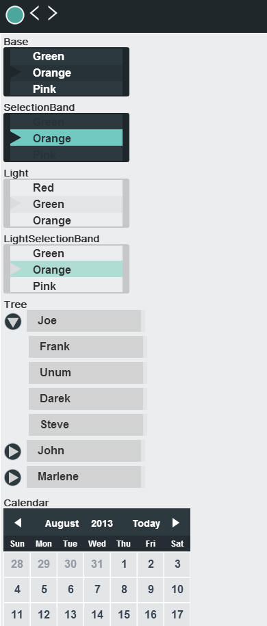 |
pdf_optimize() Function - Optimize a PDF document to make it smaller. Results may vary based on the compression of the original file, but file size may be reduced by up to 50%.
Syntax:
pdf_optimize(C file [, C NewFile])
If NewFile is not specified the input file is replaced.
json_generate() Function - Performance - The json_generate() function has been re-written and is now considerably faster.
NOTE: Previously the json_generate() function would escape single quotes. However the JSON spec does not require this and so single quotes are no longer escaped. For example:
dim pj as p
pj.text = "some text with ' single quote"
?json_generate(pj)
= {
"text": "some text with ' single quote"
}
UX Component - Spin List Control - Large Data Sets - There has been a significant improvement in the time taken to populate a Spin List control when populating it with a large number of choices.
UX Component - Map Control - Specifying the Map Language - By default, the language used on the Map control is based on the browser setting for language preference. A new property has been added to allow you to specifically set the language preference. To get a list of valid language code go to:
http://msdn.microsoft.com/en-us/library/ms533052(VS.85).aspx
SQL Query Genie - Count Query - When you build a SQL query using the SQL Genie and you preview the query, a count query is automatically performed when your query is executed. This is done so that your preview will show you how many records satisfied the query. However, in some cases the database to which you are connected might take a long time to execute a count query and therefore you might want to turn off the count query when previewing your query. A new property on the Properties pane of the SQL Genie allows you to do this.
UX Component - Action Javascript - Buttons - A new action has been added to Action Javascript to enable or disable a button. This action only applies to Advanced Buttons (all buttons in a UX component are advanced buttons by default).
email_send_mandrill() Function - Setting the Key Value Globally - You can now set the key for this function in the Web Project Properties dialog. If you do set the key in Web Project Properties, then you can pass in a blank key in the email_send_mandrill() function. If you pass in an explicit key when calling email_send_mandrill(), then the key you pass in will override the gloal key.
Grid and UX Component - Field Validation - Xbasic - If you write custom Xbasic code to validate an individual field, your Xbasic code and now send back a Javascript response to the client by setting this property in Xbasic code:
e.javascript
UX Component - Buttons - .getControl() Method - The {dialog.object}.getControl() method can now be used to get a pointer to a button object. Once you have a pointer to the object, you can call the .setDisabled() method.
For example:
var bObj = {dialog.object}.getControl('BUTTON_1');
//set the button disabled
bObj.setDisabled(true);
//now enable the button
bObj.setDiabled(false);
NOTE: As a result of this change, if you have a client-side enable expression for a button in a Repeating Section, you will need to edit the enable expression and resave it in order to re-generate the Javascript code.
ADVANCED NOTE: If you have a button in a Repeating Section, the .getControl() method will point to ALL of button instances (i.e. the button in row1, row2, etc.). If you then call the .setDisabled() method, you will be set the state on the button in each row.
If you want to call the .setDisabled() method for a specific button instance (say the button in row 3), then you can pass in an optional parameter to the .setDisabled() method. For example:
//get a pointer the button element in row 3
var eles = $('{dialog.componentname}.V.R1.BUTTON_2_A5INSTANCE3');
//pass in eles as an optional argument to the .setDisabled()
method
{dialog.object}.getControl('BUTTON_2').setDisabled(true,eles);
| UX Component | Preventing a Panel from Losing Focus |
A common design pattern in a mobile application
is to have multiple Panel Cards inside a Panel
Navigator. If one of the Panel Cards contains a
form, you might want to prevent the user from
navigating to another Panel Card if the form has
been edited, but not yet been saved. In this video we show how this is easily done using the Panel Navigator's onBeforePanelActivate event. The same techniques can be used in a PanelLayout. Watch Video Download Component |
| UX Component | Responsive Design - Dynamically Resizing Controls on Orientation or Window Size Change - Understanding the FlexLayout Container |
A common requirement when designing a UX
component is to have a control dynamically
resize when the orientation of a mobile device
changes or when the window size (in a desktop
browser) changes. This is easily accomplished
using the FlexLayout container on a UX. Any of the controls in a FlexLayout container can have their width specified as a 'relative' size (relative to the size of the other controls in the FlexLayout container). This video shows how to use the FlexLayout container type. Watch Video - Part 1 Watch Video - Part 2 |
UX Component - Image Upload Action - Thumbnails - If you specified that you wanted to create a thumbnail when uploading images, and the target for the thumbnail image was a character field in the target table, the 'image filename transformation expression' was being ignored and the actual filename for the thumbnail image that was stored was always just the short filename.
UX Component - Tab Control - Genie Style - If a 'genie' style Tab Control was wrapped in a Container control and the [Tab Control End] control came immediately before the [ContainerEnd] control, the genie buttons did not render.
Grid Component - Images - Under some circumstances, if a Grid contained an image control, it would generate an error. This was a newly introduced bug. If you received this error, you will need to edit and resave the Grid.
UX Component - PanelNavigator and PanelLayout - onBeforePanelActivate Event - A new event has been added to the PanelNavigator and the PanelLayout. This event is useful if you want to prevent the Panel that has focus losing focus. For example, if the form fields on a Panel have been edited, but not yet committed, you might want to prevent the Panel from losing focus. This is much like preventing a pop-up window that contains a Grid or UX component from closing if the child component has been edited.
If the Javascript that you define in the onBeforePanelActivate event returns false, then any attempt to activate another Panel will fail and focus will remain on the Panel that currently has focus. If the event returns true, then you will be able to give focus to another Panel.
Watch Video
Download Component
UX and Grid Component - Image Upload - Thumbnails - The Action Javascript builder now has a new option in the Thumbnail Definition Builder to allow you to specify if the thumbnail file that is created should overwrite an existing file, or be renamed, so as not to conflict with existing files.
UX and Grid Component - Image Upload - File Rename - When you upload images or files and store the uploaded images or files in a filename on a server, there is an option to rename the file if there is an existing file with the same name on the server. The algorithm that computes the filename in the case of a conflict has been changed slightly.
Previously, if a filed called "c:\myimages\image1.jpg" existed and you wanted to create a new file called 'image1.jpg', the new file would have been called "c:\myimages\images2.jpg". This is now changed to "c:\myimages\myimage1_1.jpg".
UX Component - FlexLayout Containers - A new container type in the UX component makes it easy to dynamically size controls when the orientation of the device changes (mobile devices), or the window size changes (desktop browsers).
Watch Video - Part 1
Watch Video - Part 2
The purpose of the FlexLayout container is to dynamically size the widths of controls that are on a single line. This container does not size the height of controls.
NOTE FlexLayout containers are not supported in Repeating Sections.
For example in the image below, the device is in portrait mode. The button to the right of the textbox control is set to have a fixed size of 80px. The text box has been set to have a flexible width, so it consumes all of the available space (less the built-in padding between controls, defined by the A5CWLayout class padding property).

Notice in the image below, when the device orientation is changed to landscape, the button size has not changed - it is still 80px wide. But the textbox had grown in width.

Here is how the textbox and button control are represented in the builder. Note that the controls are wrapped in a container with a sub-type of 'FlexLayout'.
When you set the container sub-type to FlexLayout, a new property in the Property Grid is exposed. The image shows that the 'Flexible layout width settings' have been set to:
flex(1),80px
This means that the first control in the FlexLayout container will have relative width of flex(1) (this is the textbox), and the second control (i.e. the button) will have a fixed width of 80px.

The property has a smart field which brings up a builder to help you set the control widths.
Notice that the builder also shows the 'Defined Width' for each control. The 'Defined Width' is the width that was defined for each individual control.
Typically when you wrap controls in a FlexLayout container, you will want to set each control's Defined Width to 100%. The builder will show you at a glance if any of the top-level controls in the FlexLayout container have not been set to 100%.
The 'Break' column will also show you at a glance if any of the top-level controls in the FlexLayout have breaks after them. You should not have breaks after top-level controls, so the builder will give you a warning to fix this problem.

In the case where only one control in a FlexLayout container has a 'flex' width, the meaning of the flex setting is simply to fill the available space on the line (after allocating space to the fixed size controls).
However, if you have two or more controls with a 'flex' setting, then all of the flex controls together will fill the available space (after allotting space to any fixed size controls), and each 'flex' control will have a relative size based on its 'flex' setting.
For example, if you have two flex controls with settings of flex(1) and flex(2), then the second control will always be twice the width of the first control.
| UX Component | Storing and Restoring the 'state' of a UX Component with multiple Panels |
UX Components can use complex layouts that
involve multiple Panel Cards inside Panel
Navigators and Panel Layouts. You might want to
persist the state of the Panel (i.e. remember
which Panel Card in a particular Panel Navigator
is active and which Panels in a Panel Navigator
have been docked) so that you can later restore
this state. This video shows how this can be
done. Watch Video Download Component |
SQL Server 2008 - Date Fields - Occasionally, users report a problem when trying to update a MS SQL table that has a 'Date' field. The problem is caused because the correct Microsoft files are not installed on the machine where SQL Server is running. The error reported by SQL Server is:
"Function requested is not supported"
The correct MIcrosoft drivers can be downloaded here:
Here are the links to the download on the Microsoft web site:
X86
Package(sqlncli.msi) - 4549 KB
X64
Package(sqlncli.msi) - 7963 KB
IA64
Package (sqlncli.msi) -
11112 KB
Forms - Embedded Browse - Data Entry - Fixed a cosmetic issue with data entry when working with a set that has a one-to-one link off a table that is linked to the parent in a one-to-many link.
UX - Signature Capture - If the UX component was not using Panels, and if the component had been vertically scrolled, the signature capture area did not scroll with the window. This only affected UX components that did not use Panels.
UX Component - Image and File Upload Actions in Action Javascript - As a result of a change made in a recent update to make the value in the client side controls available to the server side Xbasic events, when you clicked the button to upload a file or image, the popup window which was displayed did not have any controls in it. This bug, however, only happened if there were a large number of controls on the UX component. It also only happened in IE. The reason it happened is that the maximum length for a query string was exceeded. This is now fixed.
UX Component - Image and File Upload Actions in Action Javascript - Xbasic Event Handlers - When the Xbasic event handlers execute, the value of the control on the UX component are now available in the
e.formData
property. Previously, the data was made available in another of the e object's properties. If you have an event handler that references client side control values, you will need to change your code.
UX Component - Image Controls (Data Bound) - Repeating Sections - Fixed a bug that was introduced in the last update.
Email - Sending Email Using the Mandrill Email Service - Alpha Anywhere has always offered Xbasic functions to send email. However, these functions require that you have access to a SMTP mail server. The existing functions in Xbasic include:
With the emergence of email services, such as Mandrill (www.mandrillapp.com) an alternative, possibly easier, certainly more powerful, way of sending emails from your applications is now possible.
A new function,
email_send_mandrill()
allows you to send email using the Mandrill service.
Benefits of using a 3rd party emailing service include the easier setup, better deliverability, and access to powerful value added features offered by the service, such as tracking whether people open your email message, etc.
The full functionality of the Mandrill email service can be read by navigating to this address:
https://mandrillapp.com/api/docs/index.JSON.html
In order to use the Mandrill email server, you will have to visit their web site and apply for a key. The key allows you to send a certain number of free emails each month. Beyond that, there is a fee.
NOTE: Alpha Software is not involved in any way at all in the fee and does not receive any payment at all if you use the Mandrill service.
There are two different ways in which you can use the email_send_mandrill() function.
1. Simple Method: Define Message Using Xbasic Dot Variable
In the simple method, you define an Xbasic dot variable that defines the properties of the message you want to send and then you call email_send_mandrill(), passing in your Mandrill key and the dot variable. This simple method does not expose all of the functionality of the Mandrill service, but it is very easy to set up and use, and it is great for simple email messages.
For example:
'create a .dot variable to define the message
dim ms as p
ms.send_to = "john@acme.com:John Smith,sally@acme.com:Sally Jones"
ms.send_to_cc = ""
ms.send_to_bcc = ""
ms.from_email = "sales@alpha.com"
ms.from_name = "Sales at Alpha" 'friendly name - optional
ms.subject = "Information You Requested"
ms.message_html = "Here is the information you requested."
ms.message_text = "Plain text version of the message"
ms.attachments = "c:\files\mychart1.pdf,c:\files\mytext1.txt"
Notes About the Properties in the Dot Variable
CC and BCC Addresses
Even though the Dot variable allows you to specify separate comma delimited lists for the TO and CC addresses, in reality, Mandrill does not support CC addresses. Furthermore, Mandrill only supports a single BCC address.
If you specify any CC addressesl, the TO list and the CC list of addresses is combined into a single list and the emails are sent to all addresses in the combined list. However, the Mandrill internal .preserve_recipients property is set to false, so that none of the recipients will see the names of any other recipients.
If you provided a list of names in the TO list, and no names in the CC list, the recipients of the email would all be able to see the names of the other recipients.
Once you have defined the .dot variable, you can send the message. For example
dim pResult as p
pResult = email_send_mandrill("mysecretkey",ms)
The function returns a .dot variable with several properties:
Here is what a typical item in the .result array looks like:
result[1].email = "john@acme.com"
result[1].status = "sent"
result[1]._id = "some message id" --- used to make queries against the Mandrill API for message status
Here is a complete example of sending an email in the simplest possible way (eliminating all optional properties in the Xbasic .dot variable). As you can see, it just a few lines of code.
'create a .dot variable to define the message
dim ms as p
ms.send_to = "john@acme.com:John Smith,sally@acme.com:Sally Jones"
ms.from_email = "sales@alpha.com"
ms.from_name = "Sales at Alpha" 'friendly name - optional
ms.subject = "Information You Requested"
ms.message_html = "Here is the information you requested."
dim pResult as p
pResult = email_send_mandrill("mysecretkey",ms)
Alternative Method for Specifying Attachments - Specifying the Attachment Data
We have previously indicated that attachments are specified by setting the .attachments property to a comma delimited list of filenames. An alternative method is to set the .attachmentsArray property as a property array with .name, .type and .content properties.
Where:
For Example
dim ms.attachmentsArray[1] as p
ms.attachmentsArray[1].name = "chart.pdf"
ms.attachmentsArray[1].type = resolve_mime_type("pdf")
ms.attachmentsArray[1].content = base64encode(file.to_blob("c:\myfiles\chart.pdf"))
Merge Variables - Mail Merge Variables into the Message Body and Subject
An advanced feature of the Mandrill service is to allow you to specify placeholders in the message subject and body that will be replaced with variables that you supply at the time Mandrill sends out the email to each recipient.
The format for the placeholders is:
*|VariableName|*
For example, here is how the message subject or body could have been specified using placeholders:
ms.subject = "*|Fname|*, here is the Information You
Requested"
ms.message_html = "*|Fname|* *|Lname|* here is the information you requested."
When you use placeholders in the subject or body, you must specify the placeholder values. Obviously, you need to specify placeholder values for each recipient.
For example, assume that you had specified two recipients as follows:
ms.send_to = "john@acme.com:John Smith,sally@acme.com:Sally Jones"
You would then need to specify the FName and LName variables for john@acme.com and for sally@acme.com.
Here is how you would do this:
'define the .merge_vars[] array with 2 items
dim ms.merge_vars[2] as p
'define the actual variables for the first recipient.
'since there are two variables, we define a sub-array with two items
dim ms.merge_vars[1].vars[2] as p
'here are the variables for the first recipient
ms.merge_vars[1].vars[1].name = "FName"
ms.merge_vars[1].vars[1].content = "John"
ms.merge_vars[1].vars[2].name = "LName"
ms.merge_vars[1].vars[2].content = "Smith"
ms.merge_vars[1].rcpt = "john@acme.com
'here are the variables for the second recipient
dim ms.merge_vars[2].vars[2] as p
ms.merge_vars[2].vars[1].name = "FName"
ms.merge_vars[2].vars[1].content = "Sally"
ms.merge_vars[2].vars[2].name = "LName"
ms.merge_vars[2].vars[2].content = "Jones"
ms.merge_vars[2].rcpt = "sally@acme.com
In addition to supplying merge variables for each recipient, you can also supply global merge variables - for all recipients. You do this by specifying the .global_merge_vars property array. If a merge variable is defined at the individual recipient level, it will override the corresponding global merge variable.
For example:
dim ms.global_merge_vars[1] as p
ms.global_merge_vars[1].name = "Company"
ms.global_merge_vars[1].content = "Alpha Software"
Using a DataSource Property
Instead of supplying the actual email addresses and merge variables directly in the dot variable you can pass in a 'dataSource' (an array of JSON objects), and then indicate that the .send_to property should be populated from the data source.
For example, consider the following definition of the .dataSource property:
ms.dataSource = <<%txt%
[
{email: "sam@acme.com", firstName: "Sam", lastname: "Smith"},
{email: "joe@acme.com", firstName: "Joe", lastname: "Jones"}
]
%txt%
If the above .dataSource property has been defined, then you can define the .sent_to property as follows:
ms.send_to = "{datasource:email}"
This indicates that the .send_to property should be populated from the 'email' property in the dataSource.
If you pass in a .dataSource property, then there is no need to pass in the .merge_vars property - these properties are automatically generated from the data in the .dataSource property.
Here is what happens if you pass in a .dataSource property: The .message_html, .message_text and .subject properties are scanned to see if any merge-variables are used. If any merge variables are found in any of these properties, then the merge variables for each address are automatically extracted from the .dataSource property.
Using the .dataSource property, it is extremely easy to create a mass mailing with custom merge variables for each recipient.
2. Advanced Method: Define Message Using a JSON String
The JSON method exposes the full functionality of the Mandrill service. To see all of the options that are available, please see the Mandrill API documentation.
If you want to use advanced features, like track opens, or schedule delivery, you will need to use this option.
Here is an example of how you can use this method:
DIM json as C = <<%str%
{
"message": {
"to": [
{
"email": "john@acme.com",
"name": "John Smith"
}
],
"from_email": "Sales@alpha.com",
"subject": "Information You Requested",
"html": "Here is the information you requested",
"text": "Plain Text Message",
"preserve_recipients": false
},
"asynch": false,
"ip_pool": null,
"send_at": null
}
%str%
dim pResult as p
pResult = email_send_mandrill("mysecretkey",json)
Generating the JSON String From Xbasic
Xbasic has powerful functions for generating JSON from an Xbasic dot variable. For example, the json_generate() function will generate JSON from a .dot variable. A powerful way to programmatically construct the JSON string that you pass into the email_send_mandrill() function is to build up an Xbasic .dot variable with the various properties that you want to set, then call json_generate() to generate the JSON.
UX Component - Panels - New Methods - Some new methods have been added to the UX component that allow you to save and restore the state of a complex Panel Layout.
.getPanelObject()
If the UX component use Panels, gets a pointer to the Panel object. Once you have a pointer to the Panel Object you can call methods of the Panel Object (such as .getState() and .setState()). For example:
var pno = {dialog.object}.getPanelObject();
Gets the 'state' of the Panel Object so that it can later be restored.
An object is returned. The active Panel in all Panel Navigators is
stored as well as the dock state of Panels in Panel Layouts.
The purpose of getting the Panel State is so that you can later restore
is using the .setState() method. For example:
//Get a pointer to the Panel Object
var pnObj = {dialog.object}.getPanelObject();
//Get the current state of the Panel Object
var state = pnObj.getState();
//See what's in the 'state' object
alert($u.o.toJSON(pnObj.getState());
Restores the state of a Panel Object from a previously created
//Get a pointer to the Panel Object
var pnObj = {dialog.object}.getPanelObject();
//Restore the state of the Panel Object. (Assume that the state is in a
variable called 'state')
pnObj.setState(state);
Video Player Component - SSL - A new property to use SSL has been added.
UX Component - List Control - Data Source - A new option has been added for specifying the data source of a List control. The 'Javascript Function' option allows you to specify the name of a Javascript function. This function must return an array of JSON objects that contain the data for the List.
When you choose this option, you must specify the name of the Javascript function as well as a list of columns that the List has.
For example, assume that you specify that the List has these columns:
Firstname,Lastname,City
Your Javascipt function could then be defined as follows:
function getListData() {
var data = [
{Firstname: 'Jim', Lastname: 'Smith', City: 'Boston'},
{Firstname: 'Cecelia', Lastname: 'Dawkins', City: 'Denver'}
]
return data;
}
Ux Component - Client-side Conditional Style and Text - Repeating Section - If you set a text property (as opposed to a style property) for a control that was in a Repeating Section, you would get a Javascript error.
Web Applications - Publishing - FTP Optimized - AEX Files - If you used Optimized FTP publishing to publish a web application that used .aex files, the functions in the .aex file would not be seen until the server had been stopped and restarted. This is now fixed.
UX Component - Image Upload Action Javascript - A bug introduced in build 1605 was fixed.
| UX Component | Chart Control - Dynamically Changing the Chart Appearance by Changing the Stylesheet |
In the previous video we showed how aspects of
the chart appearance could be changed at
run-time. In this video we show how a dynamic
stylesheet can be applied to the chart to
control even more aspects of the chart
appearance. Watch video Download Component TIP: To get started creating a custom stylesheet for a chart, you should start with the style builder, then convert to CSS. See video. |
| UX Component | User-defined Sub-themes to Style UX Component Controls |
Many of the controls on a UX component allow you
to specify a sub-theme. The sub-theme controls
various aspects of a control's appearance and
also behavior. For most of the controls there
are several built-in sub-themes to chose from.
For example, buttons have sub-themes that can
make the button look like a 'back' or 'next'
button. A powerful aspect of sub-themes is the
fact that it is very easy for developers to
create their own sub-themes to create highly
customized appearances for controls on a UX. In this video we show how a custom sub-theme for a window can be created and used. Watch Video - Part 1 Watch Video - Part 2 Download Component |
| UX Component | Getting a Pointer to a Parent or Child Component So You Can Call Methods of the Parent or Child Component |
The ability to re-use components and open a
child component in a window, div, TabbedUI pane,
Panel, or embed into a parent component is one
of the most powerful aspects of the Alpha
Anywhere architecture. When you open a component from a parent component, you will often want to get a pointer to the child component so you can manipulate it in your Javascript code in some way. For example, you might want some code in the parent component to read a control in the child, or set a value in the child. Similarly, you might want some code in the child component to read or set a control in its parent. The .getParentObject() and .getChildObject() methods are used to get pointer to an object's parent or child objects. In this video, we show how this is done. Watch Video - Part 1 Watch Video - Part 2 Download Component |
| Grid Component | Putting the Search Part in a Pop-up Window |
In this video we show how the Search part of a
Grid component can be shown in a window. By
default, the Search part is shown on the page
directly above the Grid part, but by showing the
Search Part on in a window, you can save space
on the page. Watch Video Download Component (requires a connection string called 'Northwind' that points to the sample Northwind.mdb files database in the MDBFiles folder). |
| UX Component | Example App Showing How to Synchronize an Embedded UX Component when a Value in a Parent UX Component Changes |
A common pattern when building mobile
applications is to break the application into
multiple sub-components and then embed child
components into the parent component. Using this
pattern, you break your application into
manageable pieces. However, when you follow this
pattern, it is often necessary to synchronize
the embedded child component when a value in the
parent component changes. In this video we show a sample application that shows customers in the sample Northwind database. An embedded UX component shows the orders for the selected customer. When the user selects a different customer, the embedded 'Orders' UX component is synchronized. Watch Video - Part 1 Watch Video - Part 2 Watch Video - Part 3 Download Components (requires a connection string called 'Northwind' that points to the sample Northwind.mdb files database in the MDBFiles folder). |
| UX and Grid Component | Handling Missing Images |
When a UX or Grid component displays images,
there is a possibility that an image referenced
in an image tag is missing. A new onImageError
client side event allows a developer to
programmatically handle this situation and
decide what image to display in place of the
missing image. Watch Video |
| UX Component - List Control | Custom Layout - Setting a List Item Size to Fill the Screen - Understanding the 'Fill' Option for List item size and Custom Scrolling Options. |
When you are working with a List control that
uses a free-form layout for the List, you can
set the height (and width in the case where the
List is set to scroll horizontally) of each
'row' (i.e. 'item') in the List. In addition to
setting an explicit size (say 200px) for an item
height or width, you can also use the special
'fill' keyword to indicate that the item should
fill the viewport. When you use the 'fill' option, it is often desirable to customize the way in which the List scrolls, so that it scrolls in discrete amounts (for example the size of the viewport) rather than scrolling continuously. By setting the item size to use the 'fill' keyword, and by customizing the List scrolling, it is possible to make a List behave much like a Panel Card in a Panel Navigator. In this video we show how these options are used. Watch Video - Part 1 Watch Video - Part 2 |
| UX Component | Signature Capture Control |
A common requirement in mobile applications is
the ability to capture a signature and store the
signature in a database. In this video we show
how this is easily achieved by placing a
Signature Capture control on a UX component. Watch Video - Part 1 Watch Video - Part 2 |
| Reports | Printing QR Codes |
Video shows how to print a QR Code on a report. Watch video |
| UX Component | Using a UX Component to Create a Login Component for a Mobile Application |
A common requirement for any application, Mobile
included, is to authenticate users before they
can interact with the application. There are
several ways in which authentication can be
performed in Alpha Anywhere. These include using
the standard Login component, or using the
AppLauncher. In addition to the above two
techniques, you can also build a UX component
for performing the authentication. The advantage of building the Login screens using a UX component is that you can make a much richer UI for the login and it can include standard mobile elements like Panel Headers, etc. In this video we show how an authentication layer has been added to a mobile application. Watch Video - Part 1 Watch Video - Part 2 Watch Video - Part 3 Watch Video - Part 4 Watch Video - Part 5 Download Web Project Used in Videos - Note: To use the project, create a new, empty Web Project, then click the 'Open Project Folder in Windows Explorer' button and paste these files into the folder. The passwords for the sample accounts are: a@a.com - aalpha, s@a.com - salpha m@a.com - malpha |
Xbasic - Running External Programs from Within Alpha Anywhere - .NET Framework- A common requirement is to run external programs from with Alpha Anywhere. Xbasic has had the sys_shell() and sys_shell_wait() command for many versions, but you can also use .Net framework methods. The method is:
System::Diagnostics::Process::Start()
For example, say you want to log onto a VPN programmatically from within Alpha Anywhere:
System::Diagnostics::Process::Start("rasdial.exe", "MyVPN MyUsername MyPassword")
To disconnect:
System::Diagnostics::Process::Start("rasdial.exe", "MyVPN /d")
AlphaDAO - Customizing the Connection String - The AlphaDAO connection string builder might not expose some setting that you would like to use. For example, in the case of Postgres, the connection string builder does not expose the option to use SSL.
Here is what an connection string for Postgres might look like:
{A5API=PostgreSQL,Server='localhost',Port='5432',UserName='postgres',Password='mypassword',Database='postgres'}
The properties that we would like to set are:
ssl=true
sslmode=require
In general, any values Alpha Anywhere doesnt recognize
in the connection string are passed directly through.
This makes it possible to provide values we dont
support in the user interface yet.
The above connection string can therefore be modified as follows:
{A5API=PostgreSQL,Server='localhost',Port='5432',UserName='postgres',Password='mypassowrd',Database='postgres',ssl=true,sslmode=require}
Xbasic - Making RESTful API Calls - Xbasic offers
quite a number of functions and methods for using the
HTTP protocol to make various requests from web servers.
Sending a RESTful request to a web service is becoming
increasingly popular, but is not always as
straightforward a s requesting a simple resource from a
web server.
REST (representational state transfer) is a general
architectural concept, and specific REST APIs will vary
from web service to web service, so there is no "one
size fits all" solution. However, the Xbasic HTTP
functionality still offers all of the requisite
components. The HTTP method used by the API will define
how you send any required information to the service,
and therefore dictate which Xbasic function to use.
GET is very common because it allows you to simply send
data as part of a query string. The My Movie API is a
good example of this. To search IMDB for the movie
titled "Casablanca", a simple GET request needs to be
sent to http://imdbapi.org/?q=Casablanca.
The easiest way to do this would be by using http_get(), though http_get_page2() and http_fetch() will also work.
For example:
dim MyResponse as p
MyResponse = http_get("http://imdbapi.org/?q=Casablanca")
The response body will be in the MyResponse.body variable. In the above case, the response is JSON data, so you can then use the json_parse() function to parse the response values.
PUT and POST are typically used when more information is
being sent to the web service and generally to be stored
there. http_put() and http_post() are the simplest
functions to use here:
dim Response as p
Response = http_put(
However, the limitation of both http_put() and http_post()
is that they will always use
application/x-www-form-urlencoded as the body's
content type. If the service to be accessed requires a
body in a different format, http_fetch() must be used so
that the alternate content type may be specified.
For example:
dim Response as p
dim Request as p
Request.Host = "
Request.Page = "
Request.Header = "Content-Type: application/json"
Request.Body = "
Response = http_fetch(Request)
DELETE generally operates the same as GET, just taking
data in a query string. In these cases, http_delete()
may be used just like http_get() would be.
UX Component - Image Upload - Thumbnails - If you had configured the image upload to upload to a binary field in the target table and you had set the stored type to (say) PNG, but you uploaded a file of a different type (say JPG), the code that created the thumbnail image would create a garbage image. This bug only happened if the upload file type was different than the stored file type and the image was stored in a binary field.
Report Editor - Fixed several bugs when editing Workspace reports.
Tabbed UI - UX Components with Panels - UX Components that used Panels did not render properly in the Tabbed UI.
Grid Component - Linking Grids - Fixed an issue were, under some circumstances, the wrong linking value was written into new records in a linked Grid.
a5_getImageSize() Function - Was failing on very large images.
AppLauncher Component - Fixed a number of bugs. If the AppLauncher loaded a TabbedUI, the TabbedUI did not operate properly. The device.isMobile and device.isTablet flags were not getting set correctly for Google Nexus devices.
UX and Grid Component - In-line Style Property - Many of the controls in both the UX and Grid components allow you to define an in-line style. The in-line style builder now has two links at the bottom of the screen that allow you to save commonly used in-line style definitions in a library and then retrieve from the library.

UX and Grid Component - Password Controls - Watermark - When you set a textbox control to be a 'password' control and you also turn on the watermark property, previously, the watermark was not readable because it was displayed using the same characters used to hide the text that the user typed into the field. Now, when no text has been typed into the field, the watermark is displayed in clear text, so it is readable.
Demo Mobile Application - Step-by-step Tutorial - A new step-by-step tutorial on how to build the Demo Mobile Application that ships with Alpha Anywhere is now available. Currently, the tutorial has 16 lessons. More lessons are being added, so be sure to check back from time to time.
http://downloads.alphasoftware.com/a5v12download/BuildingSampleMobileApp.htm
NOTE: If you install Alpha Anywhere updates (as opposed to using the Full Installer), changes that have been made to the Demo Mobile App since your initial full install have not been installed on your machine. You can get an up-to-date version of the sample app here. Unzip this into the Samples\DemoMobileApp folder where Alpha Anyhwere is installed.
Grid and UX Component - Action Javascript - File Download - A number of improvements have been made to this action.
NOTE: You will need to edit and re-save the action to get the new features.
Web Applications - Project Properties Dialog -
Allowed File Download Folders - When defining the
folders from which files are allowed to be downloaded,
you can now use the
Web Project Properties - Linked CSS Files - The Web Project Properties dialog now allows you to specify linked CSS files. This is useful if you have some CSS that you want to have available to all of the component in your project. Instead of linking the CSS files in the individual components, you can not link the CSS in a central location. The same comments apply for linked JS files.
Grid Component - Detail View - Method for Opening Detail View - A new option has been added for the method for opening the Detail View. The 'programmatic' option allows you to add your own button or event handler to open the Detail View. For example, you might want to have a button in the Grid row that opens the Detail View. The event handler for this would be:
{grid.object}.detailView({grid.rowNumber});
If the button to open the Detail View as not placed in each row of the Grid, but instead was placed (for example), in the Grid header or footer, then the {grid.rownumber} placeholder is meaningless and cannot be used to indicate the row for which the Detail View should be opened. In this case, your Javascript would be:
//get the row number of the currently selected row
var rowNum = {grid.object}._selectedRow;
{grid.object}.detailView(rowNum);
Reports - Printing QR Codes - You can now print QR codes in a report, new printQRCode() function.
To print a QR Code in a report you define a calculated field using the printQRCode() function and then place the calculated field on the report.
The printQRCode() function takes three arguments - the value to encode, the size of the QR code (in pixels) and a flag that indicates if the value should be url encoded (set to .t. by default).
Note: The QR Code function calls into the Google charts api, so an Internet connection is required.
For example, here is how you can define the calculated field to print the 'serialnumber' field:
qrcode = printQRCode(serialnumber,400)
UX Component - Integrated Login Functionality - The UX Component can include integrated login/logout functionality.
This means you don't have to use a separate Login Component, or (AppLauncher with login turned on) to authenticate users in your application.
In this video we show how an authentication layer has
been added to a mobile application.
Watch Video - Part 1
Watch Video - Part 2
Watch Video - Part 3
Watch Video - Part 4
Watch Video - Part 5
The primary use case for integrated login in the UX component is for mobile applications where the application is typically built using a UX component.
However, another use case for the integrated login in the UX is to build a custom login dialog to replace the built-in Login component.
To turn on the integrated login feature, go to the Properties pane on the UX Builder and check the 'Has integrated login functionality' property, as shown in the image below:
Once you check this property you get prompted for some additional properties.
'User name control' and 'Password control' - You must specify which controls on the UX component are used for entering the username and password. Your UX component will therefore need to have two controls (likely textbox controls) where the username and password are entered.
TIP: For the password control, be sure to check the 'Password' property so that the password is hidden when the user is entering it.
Placeholder for login errors - You must put a placeholder control on the UX (see [Placeholder] in the Other Controls section of the UX Builder toolbox) to indicate where login errors should be shown. Use this property to specify the name of the placeholder.
Customize login failure messages - You can customize the various messages that the security framework displays when login errors occur.
Logout does a full page reload - When the user logs out, do you want this UX component to reload?
If you check this option, the component's layout is re-computed on the server (and controls on the UX for which membership in security groups are required are hidden).
Here is why this is an important property to understand:
Assume that when you design the UX component you set the security property on certain controls in the component so that they are only visible to users who are in a certain group (i.e. security role). For example, you might have a button called 'Increase Salary' and you might have set the security on this button to only show the button for users who are in the 'Manager' group.
Assume that the current user is logged in as a member of the 'Manager' group - so she sees this button.
After this user logs out, you will want to ensure that this button is no longer visible. So, forcing the component to reload will cause the server to re-compute the layout of the UX component, and the button will be removed when the server sends back a re-rendered version of the component - because the user will no longer be logged in as a member of the 'Manager' group.
Login/Logout Buttons
Once you have configured your UX component to turn on integrated login functionality, you will also need to add buttons to the UX component to login and logout.
The event Javascript code that will need for these buttons is shown below:
Login
{dialog.object}.login();
Logout
{dialog.object}.logout();
Tip: You can select the 'Login-Logout' item in the 'Defined Controls section of the toolbox to automatically add login/logout buttons and also the placeholder for login errors.

Server-side Events
When the user clicks the 'login' button to login, an Ajax callback is made to authenticate the user. There are several
server-side events for login and logout.

beforeLogin - This event fires before any attempt is made to authenticate the user. A possible use for this event is to log out any user who might be logged in (use the A5WS_LogoutUser() function).
onLogin - Fires after the user is authenticated. The event fires regardless of whether the authentication was successful or not. The e.loginSucceeded flag indicates if the login was successful or not. An important use of this event is to force a reload of the component on login. See the discussion below on 'Forcing a Reload of the UX Component After Login' for more details. This event can also be used to set the 'friendly user name'. The 'friendly user name' is made available in client-side 'afterLogin' event. It can also be used in client-side watch expressions.
onLogout - Fires after the user logs in.
Client-side Events
When the user logs in or logs out there are several client-side events that fire, as shown in the image below.

The afterLogin event can be used to display a message on the screen indicating the (friendly) name of the logged in user.
For example, assume you have a static text control on the UX with this text:
Logged in as:
In the afterLogin event, you could add this code:
var ele = $('loggedinusername');
ele.innerHTML = e.userNameFriendly;
You might also put a client-side show/hide expression on the label as follows:
dialog.isLoggedIn = true
This will cause the static text control to be hidden when there is no logged in user.
In a Mobile application, a common design pattern is to put the login screen in a Panel Card and the application in one or more additional Panel Cards. The Panel Cards would then all be wrapped in a Panel Navigator that was set to 'programmatic' mode for the method of navigating the Panels. In the afterLogin event you would set focus to the first Panel Card in the application. In the afterLogout event, you would set focus back to the Panel Card that contains the logn form.
Forcing a Reload of the UX Component After Login
After the user has logged in you might want to force the UX component to reload. Consider the following scenario which explains a use case for this option:
Assume that the application you have built is a single UX component, and it has integrated login functionality. Assume also that this component has certain controls that have security on them (for example a 'Set Salary' button that is only visible to member of the 'Manager' group).
When the UX is initially loaded, the 'Set Salary' button will not be visible (because the user is not yet logged in).
Now assume that the user enters their username and password and clicks the login button. This will fire an Ajax callback and the user will be authenticated. Assume that the user is now authenticated and is part of the 'Manager' group.
This user should now see the 'Set Salary' button, but does not because when the UX was originally rendered, the user was not logged in.
However, by forcing a reload after login, the component will be re-rendered on the server and the user will see the 'Set salary' button.
The way in which you force a reload of the UX component after login is by setting the e.url property in the onLogin server-side event. For example, you could add this code to the onLogin server-side event:
e.url = "
NOTE: If you are forcing a reload after the UX
component loads, you will likely also want to set the
'Logout does full page reload' property to true.

Friendly User Name
For security reasons, it is not a good idea to expose the logged in user name on the client-side after the user has logged in. In the onLogin server-side event you can execute code to translate the user name that the user logged in with into a 'friendly' user name which can be safely displayed on the client-side.
For example, assume that you had a table that had two columns - 'userName' and 'friendlyUserName'
An example entry in the table might be:
jsmith23 John Smith
In your onLogin server-side event you would execute code to set e.userNameFriendly by looking up the friendly name for the user name.
Once you have set e.userNameFriendly in the server-side event, it can be used in the afterLogin client-side event and also in watch expressions.
TIP: If you do want to have the real logged in user name available on the client-side (for example, so that you can display it in a message like 'Logged in as: james@acme.com'), then you can always set the friendly name to the same as the user name in the onLogin server-side event.
Client-side Watch Expressions
The client-side watch expressions (e.g. the show/hide, enable, conditional style) can reference the following system fields that are populated with login information:
dialog.isLoggedIn
dialog.loggedInUserNameFriendly
Note: The system fields that you can use in watch expressions also include dialog.loggedInUserName, but this value is always set to 'hidden_for_security_reasons'. If you want to make the real logged in name available on the client-side, then you can set the friendly user name to the real logged in user name in your server-side onLogin event.
Mobile Applications - Adding Login/Logout
The following section describes a common design pattern for adding authentication to a mobile application.
In the image below we show the structure of the UX component that contains the login/logout logic.
NOTE: You can get a quick start building this component for yourself by selecting it from the list of available templates when you create a new UX component. Select the 'Security Framework - LoginComponentMobileApp' template.

The basic structure of this UX component is a Panel Navigator with two Panel Cards. The Panel Navigator has been set to 'Programmatic' (meaning that a Javascript command, and NOT a user 'swipe' on the screen is needed to navigate from one Panel Card to another).
The first Panel Card contains the login and password prompts.
The second Panel Card contains an embedded UX component. This component is your application.
After the user has successfully authenticated, the client-side afterLogin event fires and set focus to the Panel Card that contains the embedded UX (i.e. the application). The client side event executes this code:
{dialog.object}.panelSetActive('PANEL_APPLICATION');
The [Embedded Object] control (i.e. the UX component for your application) is set to only render when the Panel gets focus. This is very important. It means that the embedded component is not rendered until AFTER the user is authenticated. At that point, the server knows what role (i.e. groups) the user is a member of, and when the component is rendered, any controls that are conditioned on membership of specific security groups can be included or excluded in the component.
When the user logs out of the application, the PANEL_LOGIN panel in the parent UX component is shown.
In this video we show how an authentication layer has
been added to a mobile application.
Watch Video - Part 1
Watch Video - Part 2
Watch Video - Part 3
Watch Video - Part 4
Watch Video - Part 5
Xbasic - helper::HTMLProcess Class - A powerful new class has been added to Xbasic to help write code that processes and transforms text. The class is mainly used for processing HTML or XML documents, but it can be applied to other types of documents.
NOTE: See the Documentation Viewer (Help,Open Documentation) for a full list of methods. You might need to click the refresh button on the Documentation viewer if you don't see the topics.
Here are some examples showing ways in which the class can be used.
Example 1: Manipulating attribute values in an HTML document.
Assume that you have a simple HTML document with this content:


You would like to modify all of the img tags to add a prefix to the src attribute. You would like the resulting document to look like this:

Here is how the helper::HTMLProcessor class can be used to solve this problem:
dim oldHTML as c
oldHTML = <<%html%
'define a handler to call the changeSrc() callback function
'every time an attribute called 'src' is encountered.
hh.AddTagAttributeFilter("src","changeSrc(
'call the object's .processHTML() method
dim newHtml as c = hh.ProcessHTML(oldHtml)
'define the callback function
function changeSrc as c(tagName as c,tagValue as c)
if tagName = "img" then
tagValue = "http://myimages.net/" + tagValue
end if
changeSrc = tagValue
end function
Here is how the code works:
hh is an instance of the helper::HTMLProcessor object.
hh as a number of methods (see the Documentation viewer for a full list of methods - you might need to click the refresh button on the Documentation viewer if you don't see the topics.).
the .AddTagAttributeFilter() allows you to define a 'callback' function that gets called every time a specified attribute is encountered when processing the document. In this case we specify the 'src' tag (first argument). The second argument is the callback function.
When you define the callback function you can use special placeholders. For example, the callback function is specified here as:
"changeSrc(
The actual processing of the input document takes place when the .processHTML() method of the object is called.
Inside the callback handler the code checks to see if the element name is 'img'. If so, then it returns a new value for the 'src' element.
Example 2: Manipulating Elements in an HTML Document
In the previous example, we manipulated attributes in an element. In this example we manipulate all of the text for an element.
For example, assume that the input HTML document looks like this:
var myvar =
'';
myvar =
'alpha';
is some arbitrary element that we want to
transform. The resulting document should look like this:
The solution is very similar to example 1. The difference is that instead of adding a callback handler using the .AddTagAttributeFilter() method, this time we add a callback handler using the .AddTagPair() method.
Here is the working example:
dim hh as helper::HtmlProcessor
'define the callback handler.
'the callback handler will be called whenever a 'code' element is encountered
'note that
'the element (including the tags).
hh.AddTagPairFilter("code","","processBlock(
dim newtxt as c
'process the document
newtxt = hh.ProcessHTML(txt)
function processBlock as c (txt as c )
dim doc as p
'get a DOM from the text
doc = *xml_document(txt)
dim txtInner as c
txtInner = doc.top.innerXML
processBlock = "[" + txtInner + "]"
end function
The helper::HTMLProcessor class also has some static method that we demonstrate in the next example.
Example 3: Extract Attribute Values
This example shows how you can quickly dump out attribute values for a given element.
Say we have an HTML document that looks like this and we want to extract information about the src and style attributes for each element:
dim HTML as c
HTML = <<%html%
Here is how we can do this using a static method of the class:
'get list of all image sources
dim images as c
images =
helper::HtmlProcessor::ExtractTagAttributes("img",HTML,"src|||style")
?images
Logo.png|||width:200px;
Signature.png|||
The .ExtractTagAttributes() takes three arguments:
tagName - the tag from which you want to extract attribute values - in this case the 'img' tag
text - the text you want to process
outputFormat - a definition or the output format. In this was we have specified 'src|||style' which means we ant to dump out the value of the src attribute, then 3 pipe characters, then the value of the style attribute.
Example 4: Extracting Elements
In the previous example we dumped the values of attributes of a specified element.
We can also dump out the text (inner or outer) of a particular element using another static method of the class - .extractTags()
For example, assume this input document:
dim html as c
html = <<%html%
%html%
'Get the outer HTML for all 'a' elements:
outerHTML = helper::HtmlProcessor::ExtractTags("a",HTML,-1,.t.)
?outerHTML
Go to page 1
Go to page 2
Go to page 3
Go to page 10
Go to page 20
Go to page 30
The .extractTags() method takes the tag name, input document, instance number and a logical flag indicating if you want outer or inner html of the tag.
In the above example, the instance number is set to -1, indicating all instances.
To get the inner HTML for all 'a' elements
innerHTML = helper::HtmlProcessor::ExtractTags("a",HTML,-1,.f.)
?innerHTML
Go to page 1
Go to page 2
Go to page 3
Go to page 10
Go to page 20
Go to page 30
Now, lets take this example a little further and assume that we only want to extract the data from 'a' elements that are inside the div with the id of 'id2'.
We can use the .getTagInnerHTML() method to get the inner HTML for the div tag with an id of 'id2'. However, this method takes a tag instance number. We first need to find out what instance number the div with an id of 'id2' is.
'Extract the ids of all div elements
dim allIds as c
allIds =
helper::HtmlProcessor::ExtractTagAttributes("div",HTML,"[id]")
?allIds
= [id1]
[id2]
Now find out what instance number 'id2' is. We wrapped the output from .extractTagAttributes() in [ ] so we actually search for [id2]
dim lineNum as n
lineNum = word_number_get(allIds,"[id2]",crlf())
?lineNum
=2
Now that we know that the instance number of id2, we can extract the innerHTML of this div
dim txtDiv as c = ""
txtDiv =
helper::HtmlProcessor::GetTagInnerHTML("div",HTML,lineNum)
Now get the text for the 'a' attributes in 'txtDiv'
dim innerHTML = helper::HtmlProcessor::ExtractTags("a",txtDiv,-1,.f.)
Example 5: Stripping tags
Another useful static method of the class is the .removeSpans() method which strips tags from HTML.
For example:
dim html as c
html = <<%html%
span
and now we are out of the span.
span and now
we are out of the span.
UX Component - Signature Capture - A common requirement in mobile applications is the ability to capture a signature and store the signature in a database.
A new Signature Capture control has been added to the UX
component.
Watch Video - Part 1
Watch Video - Part 2
To add a Signature Capture control to a UX component, select the control from the 'Data Controls' section of the toolbox.
You can then define properties of the control in the property grid.
The signature control contains two HTML elements, only one of which is visible at any time:
For example, in the image below, the signature capture control is showing a previously entered signature, so the image element is displayed.
The 'Sign' button that appears below the image is a built-in button (i.e. it is automatically generated by the Signature Control - you can optionally turn it off).

When the user clicks the 'Sign' button, the 'Image' element that displays the signature is hidden and the 'Canvas' element (where the user can sign) is displayed, as shown in the image below:

The 'Clear', 'Cancel' and 'Accept' buttons (like the 'Sign' button in the previous image) are automatically generated by the Signature Capture Control. Like the 'Sign' button, you can optionally turn off these buttons and add your own buttons to control the Signature Capture Control. The buttons perform the following actions:
The image and canvas elements that make up the Signature Capture control are contained within an outer container. When you define the properties of the Signature Capture control you specify the dimensions of the outer container separately from the dimensions of the signature capture area.
The dimensions of the signature capture area must be smaller than the dimensions of the outer container (because the signature capture area has to fit within the outer container) and must not use percentage sizes. For example you can't set the width of the signature capture area to (say) '80%'. The reason for this is that you never want the signature capture area to resize (for example, when the orientation of a mobile device changes), or else a signature captured when the device was using (say) portrait mode would look distorted when you were in landscape mode.
Storing Signatures in a Database
When the user submits the UX component, you can store the signature that the user entered in a field in a table. The signature control must be bound to a binary field. When the UX component is submitted, the value in the signature capture control is submitted as a base64 encoded PNG image. The value is converted to a binary value before it is stored in the table field.
NOTE: In the case where you are storing data in a .dbf table, you must store the data in a PNG image field.
Defining Your Own Buttons to Control the Signature Capture Control
The property sheet for the Signature Capture control allows you to turn off the system generated buttons. If you do this, then you must add your own buttons. Here is the Javascript code that each button must call:
Sign Button
{dialog.object}._functions._toggleCanvas(signatureControlId,'canvas');
{dialog.object}._functions._clearCanvas(signatureControlId);
Clear Button
{dialog.object}._functions._clearCanvas(signatureControlId);
Cancel Button
{dialog.object}._functions._toggleCanvas(signatureControlId,'image');
Accept Button
{dialog.object}._functions._saveCanvas(signatureControlId);
{dialog.object}._functions._toggleCanvas(signatureControlId,'image');
Where 'signatureControlId' is the id of the control.
In order to hide the 'Sign' button when the 'Clear', 'Capture' and 'Accept' buttons are shown, and vice versa, you can hook into the 'onSignatureCaptureToggle' client-side event.
Validating Signature
A common requirement in a UX component is to validate that the user has signed the form when the UX is submitted. You can check that there is data in a signature capture control by adding code to the server-side dialogValidate event. When the UX is submitted, the signature (in base64 encoded form) will be submitted in a special hidden field with the same name as the signature control and a '_HIDDENA5FN' suffix.
The following code in the dialogValidate event will check to see that the user has signed the UX (assuming that the signature control was called 'SIG':
function dialogValidate as p (e as p)
dialogValidate.hasError = .f.
dialogValidate.errorText = ""
if e.dataSubmitted.SIG_HIDDENA5FN = "" then
dialogValidate.hasError = .t.
dialogValidate.errorText = "You have not signed the form."
end if
end function
UX and Grid Component - onImageError Client-side Event - Missing Images - A new client-side event has been added to allow you to handle errors caused by missing images.
UX Component - Repeating Sections - Populating - There has been a substantial improvement in the time taken to populate a repeating section with data. This is especially noticeable when the Repeating Section has a large number of rows and there are multiple client-side watch events in the Repeating Section.
UX Component - List Control - Freeform Layout - 'Fill' Option for List Height or Width - By default, when you define a freeform layout for a List, each item (i.e. row) in the list has a default size (the amount of space taken by the item content), or an explicit size (that you specify - e.g. 200px). A new option has been added when you specify an exlicit size. You can now use the 'fill' keyword (in place of an explicit size).
For example, in a List that is set to scroll horizontally, you can set both the height and width to 'fill'. This will result in each item on the List completely filling the List. You will only be able to see one List item at a time.
The image below shows a List set to scroll horizontally. The item width is set to 150px and the item height has not been set.

In the next image, the item width has been changed to 'fill'. Notice now that each item has the full width of the 'viewport' (i.e. the List).
When you use the 'fill' keyword for a List item dimension (height or width), you can also specify a modifier - an amount by which the dimension should be less than the viewport dimension. E.g. fill-10px.

In the next image, the item height has also been changed from 'blank' (ie. not height specified, so base the height on the item content) to 'fill'. Notice now that the item completely fills the 'viewport'.

When you set a width or height dimension to 'fill' you might want to turn on custom scroll settings, to prevent a situation like the one shown below from happening.
In the image below (for a List set to scroll horizontally), the item width has been set to 'fill' and the user has scrolled the List so that some of row 1 and some of row 2 are shown.
You can set the List so that it scrolls in discrete amounts to prevent this from happening. See the topic 'UX Component - List Control - Custom Scroll Settings' for details.

In the image below, custom scroll settings have been defined so that the List scrolls in discrete amounts (in this case, the width of the viewport). As a result, when you stop drag scrolling, the List animates a complete item into view. A partial item (as in the above image) will never be shown.

UX Component - List Control - Custom Scroll Settings - Normally drag-scrolling on a List is continuous. In other word, when you drag-scroll the List, you can stop dragging at any time and the List will remain scrolled in the position where you stopped dragging. However, you might want the List to scroll in discrete amounts, rather than continuously.
You can define custom scroll settings for a List, or for an individual Layout in a List (if the List has more than one Layout).
When you define custom scroll settings, you can define these properties:
The 'Scroll step size' and 'Offset' can be defined for both the x and y axes.
UX Component - List Control - Freeform Layout - Dynamic Templates - When you define a freeform template for a List control you can now define multiple sub-templates and then automatically select which sub-template to use depending on the data in the current row.
For example, here is a very simple freeform template:
{Firstname} {Lastname}, {State}
Every row of data in the List will be rendered using the same template. So, row 1 of the List might look like this:
John Smith, MA
and row 2 of the List might look like this:
Fred Tyson, CA
However, say you want the template for the row to be completely different for all people in the state of MA and CA. Here is how you would define the freeform template:
{condition:data.state == 'MA'}
put template for 'MA' here
{conditionEnd}
{condition:data.state == 'CA'}
{conditionEnd}
{condition:else}
{conditionEnd}
The condition that follows the {condition: directive is a Javascript logical expression. You can use the 'data' object to reference data values in the current row.
Application Server - Analyze Web Access Logs -
A5W_AnalyzeWebAccessLogs() Function - A new
function A5W_AnalyzeWebAccessLogs() has been added to
analyze web access logs and find the number of requests
per minute. This is a good tool to estimate the loads
being placed on a server. The Enable server Logging
option must be checked in the server configuration on
the Logging tab to create the access logs.
The function is context aware and can be run on the
desktop or on a web page. The function can output the
requests per minute on a chart or in a list showing the
requests for each minute. The list option can include a
list of all IP addresses that accessed the system and
sort the IP addresses by the number of requests.
When run on the desktop, a genie will allow selecting
any access log stored on the computer and select the
output options. If a list is selected, it can be saved
in a file if desired.
To run on a web page, create a page with only this in
the source HTML
<%a5
?A5W_AnalyzeWebAccessLogs()
%>
The function will create the complete page HTML code. A
dropdown control on the page allows selecting any of the
last 50 logs created by the app server running the page.
The web page can create the same chart or list as the
desktop genie. The desired output is displayed on the
page.
An example of the output generated by this function is shown below:

UX Component - Comments - You can insert comments into your UX component to document your component. Components can be inserted at two levels:
To add a comment to any control in the list of selected controls, click the comment icon on the toolbar at the top of the list. The comment icon is shown with a yellow highlight in the image below.
This will open an editor where you can enter your comment.
You can either create a plain text comment, or you can use HTML to create richly formatted comments.
The comment shows up on the right edge of the control list. For example in the image below, the [Panel Card CUSTOMERFORM] control has a comment. You must set the width of the UX builder to be wide enough to see the comment.
The indent level of the comments is set to 6 inches by default, but you can control this value by going to the Properties pane, Advanced section in the UX builder.
You can also turn off comment display if you want by going to the Properties pane, Advanced section.
The comment control is a new control type. You can insert a comment control by selecting it from the 'Other Controls' section in the control toolbox on the left edge of the UX builder. As a shortcut for inserting a comment control, you can select the 'Insert comment' menu from the drop down menu. See the 'Menu' button in the toolbar on the image below.
To edit the comment for a comment control you can either click on the comment icon on the toolbar, or you can double click on the control in the control list.
In the image below three comment controls are shown directly above the [Panel Card: CUSTOMERFORM] control.
UX Component - Comments - Printing Comments - You can print all of the comments in a uX component by selecting the 'Print comments' command on the dropdown menu.

UX Component - Adding Controls - Watermark - Shortcut - A common pattern when building mobile applications is to set control label position to 'None' and then turn on the watermark property. This saves valuable screen real estate.
For example:
Now, a new shortcut when adding controls makes this even easier to do. When you add new controls, the component, the dialog allows you to set the label position to 'watermark'

UX Component - Windows - Drag Scrolling on Window Contents - If a pop-up window contains more content than can be displayed in the window, you can now turn on drag scrolling of the window so that the window contents can be scrolled on touch enabled devices. You can also define 'pull past end' settings (for example, you can define an event when the user drags up on the window contents past the end of the contents).
UX and Grid Components - Client-side Watch Expressions - User Defined Javascript Functions - When defining client-side watch expressions (e.g. show/hide, enable, client-side dynamic style, dynamic images), you have always been able to use user defined Javascript functions in the expression. However, if you put your functions in a private name space in the Grid or Dialog object, the expression would not parse correctly in the builder.
Now, you can use Javascript functions that are in your own namespace within the Grid or Dialog object.
For example, say you defined the following function in the Javascript Function definitions
{dialog.object}._functions.myfunction = function() {
return true;
}
In a show/hide expression, you can now specify this as the expression:
{dialog.object}._functions.myfunction() = true
UX Component - List Control - Long Data Values - Word-Wrap - By default, when a long character value is shown in a List control the data in the list are truncated, not word-wrapped. A new property in the List builder, allows you to turn on word-wrapping.


Xdialog - Double Buffering to Reduce Flicker - {composited} Directive - On large Xdialogs, when you change the display in a list, you might notice some screen flickering. A new Xdialog directive can be used to turn on double-buffering for the screen display to eliminate, or reduce, screen flickering. The directive is:
{composited}
This directive can be placed anywhere in the dialog body. For example:
dlg_body = <<%dlg%
{removecomments}
{composited}
[%O={@@}%.130,40indx^#arr[\].display];
%dlg%
You can download a sample Xbasic script here to demonstrate the effect of this directive.
Component Builders - Preview Pane - The Preview pane has been removed from the builders as it is not necessary. The Live Preview and Working Preview provide a better preview of how your design will look.
UX Component - Data Bound - SQL Tables - Refresh Schema for SQL Tables - When you open a UX component for editing, if the UX has been data bound to SQL tables, the schema that is stored in the UX for each bound table is now automatically refreshed. If you want to turn off this behavior, there is a new property in the Properties Pane, Data Binding section to do so.
Grid Component - SQL Tables - GUID as Primary Key - If you had a Grid based on a table that used a GUID as the primary key, you had to previously add code to the CanInsertRecord event to set the value in the GUID field.
For example:
function CanInsertRecord as v (DataSubmitted as P, Args
as p, PageVariables as p, Result as p)
with PageVariables
Result.Cancel = .f.
Result.ErrorHTML = ""
DataSubmitted.MYGUIDFIELD = *guid_create()
end with
end function
This is now no longer necessary. If no value was supplied for the GUID field, an GUID value will be automatically generated (only if the GUID field is the primary key).
A5W/HTML Page Editor - Remote Test on Mobile Device - You can now do a remote test of an A5W or HTML page directly from the editor.
When you click on the 'Execute Page' button (the yellow lightening bolt), you now get a menu allowing you to select 'Live Preview' or 'Remote Test'. If you select the 'Remote Test' option you will get the standard 'Remote Test' dialog that allows you to easily open the page in the browser on a remote device (e.g. a mobile device).
UX Component - Populating Controls with Data in a Data Bound UX - Ajax Callback - In a data bound UX component, you can make call this method of the UX component to do an Ajax callback and populate the UX component with data for the specified primary key value:
{dialog.object}.populateControlsFromTable
However, if you have your own, user defined Ajax callback, you might want to generate the Javascript to populate the controls with table data in your own callback, rather than triggering a second Ajax callback. A new option in the a5_UX_Action() server-side function allows you to do this. In the example below we show the Xbasic function to handle a custom Ajax callback. Assume the Xbasic function is called myXB.
function myXB as c (e as p)
dim ops as p
ops.primaryKey = primaryKeyValue
ops.showDebugInfo = flagValue
dim javascriptCode as c
javascriptCode = a5_UX_Action(e.ops,"populateControlsFromTable")
dim jsOther as c
jsOther = "any other javascript you want your callback to return"
myXB = javascriptCode + jsOther
end function
UX Component - Embedded UX Component in a Panel Card - Synchronize UX - A new property has been added to the embedded UX component that allows you to automatically synchronize the UX every time the Panel Card gets focus (assuming that the Panel Card is contained in a Panel Navigator).
If this option is checked, the embedded UX component's server-side onSynchronize event and client-side onSynchronizeDialog events are fired.
Dynamically Adding Panels to a Panel Navigator - Closing the Dynamically Added Panel - If the dynamic panel is added to a Panel Navigator that has been configured to use Tab Bands as the method for navigating the child Panels, you can allow the user to close a dynamically added Panel. When the .addPanel() method is called, the JSON object that defines the new Panel should include:
close: true
For example
//get a pointer to the Panel Navigator where the new Panel
will be added
var pNav = {dialog.object}.panelGet('PANELNAVIGATOR_1');
//add the new Panel Card to the Panel Navigator
pNav.addPanel({
name: panelName ,
title: panelTitle,
src : myNewPanelCard,
close: true
});
In the image below, Pane4 was added dynamically with the close option set to true. As you can see, the Tab Band label for the Pane includes a close icon. If you tap on the close icon, the Pane is closed and is removed from the Panel Navigator.
UX Component - Slider Control - onSlide and onChange Events - Previously, when you defined these events you specified the name of a Javascript function and you put your event handler in the Javascript function. Now, in order to make the slider more consistent with how event handlers for other controls (e.g. Switch, ButtonList, List, etc) are defined, the code for the event handlers can now be added directly to the property (you no longer need to call a Javascript function). For backwards compatibility, the old method is still supported. So, if you define the following Javascript for the event handler:
myChangeFunction
This is assumed to be the name of the function that you want to call.
UX Component - Image and File Upload - Xbasic Event Handlers - Control Values - In a UX component, when the server-side Xbasic events defined in the Action Javascript builder fire, the control values for all of the controls on the UX are available to the Xbasic code. For example, assume that the UX had a control called 'FIELD1'. In the Xbasic event handlers, you can reference this value as follows
request.variables.v.r1.field1
UX and Grid Component - Image and File Upload - Filename for Uploaded File - When you upload an image or a file to a target character field (rather than a binary field), the uploaded file is saved in a file in the UploadFolder (defined in the builder) and the filename of the file is saved in the target character field. The filename is derived from the filename of the file on the client machine.
Now, a new property in the builder allows you to define an Xbasic function in which you can compute the filename to use for the uploaded file.
As shown in the screenshot below, the new 'OnStoredFilename Compute Xbasic Function' property allows you to define the name of an Xbasic function. The Xbasic function exposes the 'e' object which has these properties:
You Xbasic function can change the value in the e.targetFileName
property. If you do change this value, the uploaded flle will be stored
in the filename specified by the new value in e.targetFileName
IMPORTANT: The transformation expression (defined in Action
Javascript at design time) will be applied to whatever value is in
e.targetFilename. So, if your event handler changes the value in
e.targetFilename, the transformation expression is applied to this new
value.
Your code can optionally set a value for e.storedValue property in the e
object
If you set the e.storedValue property, this value will be stored in the
target field in the record (and the transformation expression will be
ignored).
A5_imageURL_from_blob() Function - Takes a blob (image data) and creates a URL for the image. A use case for this function would be if you had a table that contained a binary field with some image data in it. You would like to display this image in some html.
Syntax
c URL = a5_imageURL_from_blob(blob as b, imageTypeIn as c, imageTypeOut = "" )
Where imageTypeIn is the image type (jpg, bmp, png) and imageTypeOut is the image type you want to return.
Example
<%a5
dim cn as sql::connection
cn.open("::name::myconnection")
dim sql as c
sql = "select imageblob from products where productid = 1")
cn.execute(sql)
dim b as b
b = cn.resultset.data("imageblob")
dim url as c
url = a5_imageURL_from_blob(b,"jpg","jpg")
?""
%>
AppLauncher Component - The AppLauncher component is designed to address the following problem:
You have designed an application that is accessed through some URL. For example:
www.mycompany.com/salesApp
Some of the users of this application will be
launching your app in a desktop browser, some will be
launching it in a browser running on an iOS phone,
others on an iOS tablet, other on an Android tablet and
so on.
You do not want to have a different URL for each class
of user. However, you want each class of user to launch
a different startup component or page.
By using the AppLauncher component, you can automatically determine what type of device the user is using and then launch the appropriate component, or .a5w page, using the appropriate stylesheet. You can even navigate to a different URL.
For example, if a user us using a desktop browser, you might want to launch a TabbedUI component. If the user is using a phone, you might want to launch a particular UX component, but with one stylesheet for the users on an iOS device, another stylesheet for users on an Android device, and so on.
The AppLauncher component can also, optionally, prompt for username and password, and it can authenticate the user before it launches the startup component.
How the AppLauncher Component Works
The App Launcher component makes an Ajax callback to the server after it is launched. When the callback is made, information about the device that the user is on is passed back to the server. This information is available to determine what startup component to load.
How to Define the Startup Component
To define the Startup Component, click the smart field for the 'Startup component' property.

This will open a builder where you can define a series of logical expressions. When the Ajax callback to the server is made, these logical expressions are evaluated in the order in which they are defined.
For example, in the screen shown below, if 'logicalExpression1' is true, then the UX component called 'ux1' is loaded using the GrBlue stylesheet.
The logical expressions are Xbasic expressions that can reference 'system fields' (such as client.isIPad, client.isAndroid, etc.)

The system fields that the logical expression can reference are actually properties in the A5.flags global Javascript object.
You can add you own system fields in the AppLauncher by adding your own code to the client-side 'beforeTargetIsLoaded' event. Your code would add new properties to the global A5.flags object.
For example, you could add this code to the event:
A5.flags.__myvar = "alpha"
Then, in the logical expressions you define to select the startup component, you could reference this value as follows:
client.__myvar
Two Ways to Launch the Startup Component

There are two ways to load the application launcher:
If the target component is a TabbedUI, PageLayout, or a5w page, then
you have to use the full page reload option.
If you do not use the full page reload option and the style you want to
use for the target component is not the same as the style used in the
AppLauncher you will have to add the target component style name to the
'Additional styles' property.
UX Component - User-Defined Sub-Themes - Most
of the Javascript controls on a UX component support the
concept of 'sub-themes'. This topic discusses how
user-defined sub-themes can be added to a UX component.
Watch Video - Part 1
Watch Video - Part 2
Download Component
NOTE: Javascript controls on a UX component include Panel Cards, Panel Navigators, Panel Layouts, Tabs, Accordions, Buttons, Sliders, SpinLists, ButtonLists, Switches, Lists, Trees, Edit-combos, Auto-suggest, etc.
The sub-theme sets style and behavior properties of the control. Out of the box, each control type comes with one or more built-in sub-theme. For example, the Button control type comes with the following built-in sub-themes:
Every control type has a sub-theme of 'base' and this sub-theme is implied if no sub-theme is explicitly set.
The sub-themes for a given style (e.g. iOS, MobBlue, etc.) are defined in the style.js file in the folder with the same name as the style. (e.g. CSS\iOS\style.js)
Developers can define their own sub-themes by adding code to the style.js file, (in which case the new sub-theme will be available to all components that use a particular style), or by adding the sub-theme in as a 'locally' defined sub-theme as part of the UX component.
To define a local sub-theme, use these properties in the UX builder:
A sub-theme typically has both a Javascript aspect to it and a CSS aspect.
In the image below, a window with the default appearance for a window using the iOS theme is shown. In the builder where this window was defined, no sub-theme was specified (which means that the 'base' window sub-theme was used).

However, in this next image, a custom sub-theme for the window was used. The appearance of the window has been completely changed as a result of applying the sub-theme. Notice that the window does not have a title, it is semi transparent (you can see the controls that are behind it), and the close button is positioned slightly above and to the right of the top right corner of the window.
To define this new window sub-theme, the following code was added in the 'Local sub-themes definition - Javascript' property of the UX component:
{
window: {
customSubTheme: {
className: 'customWindow',
title: {
className: 'customWindowTitle',
tools: {
inset: '-12px',
verticalInset: '-12px'
}
},
body: {
className: 'customWindowBody'},
_defaultTools: {
'close' : {
action: 'close',
name: 'close',
image: 'css/iOS/winClose.png'
}
}
}
}
}
NOTE: The above Javascript was not written from scratch. It was copied, then modified, from the style.js file for the style (in the CSS folder)
In addition, the following code was added in the 'Local sub-themes definition - CSS' property:
.customWindow {
background:rgba(0,0,0,.5);
color: white;
border-radius: 10px;
}
.customWindowBody { padding: 10px; text-shadow: none;}
.customWindowTitle { overflow:hidden; height: 0px; }
The Javascript shown above for the local sub-theme definition is a simple JSON object. The JSON object defines an object called 'window' which is the type of control for which the sub-theme is being defined. Within the 'window' object, a sub-theme called 'customSubTheme' has been defined. In this case only additional sub-theme for the 'window' class was defined, but you would define an unlimited number of window sub-themes.
The sub-theme simply defines CSS class names to use for various aspects of the window and also defines other properties. For example, the 'inset' and 'verticalInset' properties define the placement of the window 'tools' relative to the top, right corner of the window (in this case, the only 'tool' is the close button).
UX Component - Chart Control - Dynamically Changing Chart Appearance at Run-time - You can now dynamically change certain chart properties at run-time to alter the chart appearance.
Watch Video - Part 1
Watch Video - Part 2
Download Component
Changing the chart stylesheet:
Watch video
Download Component
The properties in the chart that can be changed can be bound to controls on the UX component. When the chart is refreshed, the value for these 'bound' properties are read from the corresponding UX component controls.
Certain chart properties (such as the chart title) are defined by an expression (e.g. "My Chart Title" - this is an expression because it is enclosed in quotes). However, if you have a control on the UX (called say 'chartTitle'), then you can set the chart title expression to: chartTitle (no quotes). This means that the chart title will be read from the chartTitle control on the UX component.
Other properties (such as whether the chart is 3D or 2D) are not controlled by expressions. To bind these properties to UX controls, you need to open the 'Binding - Dynamic Charts' builder in the chart builder.
Once you open the builder for Dynamic Charts, you will see a dialog like this:

This allows you to define a CR-LF delimited list of chart bindings. For example, in the image shown above, the
ChartType property of the chart control is bound to a control on the UX component called chartType
UX Component - Slider - Date and Character Values - The slider
control by default allows you to select a numeric value in a range of
numbers. But it can also be configured to select a date value from a
range of date values, or a string value from a pre-defined list of
choices (e.g. Poor, Average, Good).
This video shows how the Slider can be configured as a numeric,
character or date slider. It also shows how the range of allowed values
(numeric and date sliders) or the list of choices (character sliders)
can be dynamically changed at runtime.
Watch Video
Grid Component - Search Part - Hide Grid if No Active Search - If a Grid that had a search part was configured to not show the Grid part if there was no active search was opened from a button that set a base filter of a link to the child Grid, the base filter or link would not be applied when a search was performed in the child Grid.
UX Component - List Control - Group Breaks - If a custom List control was being used as a record navigator in a UX that was data bound, if the List had group breaks turned on, clicking on a row in the List would navigate to the wrong record.
UX Builder - Low Resolution Screens - When working on a machine that has less than 768px vertical resolution, the OK and Cancel buttons on the dialog were not visible.
UX Builder - Remote Test - Under certain circumstances, an error would occur when clicking on the Remote Test icon on the toolbar.
UX Component - Action Javascript - 'Google Map Methods (UX Component)' Action - Resize Map - A new option has been added to the 'Google Map Methods (UX Component)' action that allows you to resize the map. You can set the map height and width to an explicit size, or you can read the size from controls on the component, or you can call a Javascript function that returns the height and width.
NOTE: In many cases where a Map is used in a UX that has Panels, you will set the 'Fill container' property on the Map and so the map will resize automatically. You will not need this new action.
UX and Grid Component - Image Upload - Thumbnails - When you define how thumbnails are to be created, you can specify if the thumbnail is to be stored as a file on disk, or as binary data in a record. In the case where you specify a file on disk, the builder allows you to specify a 'suffix' that is automatically added to the filename. For example if the suffix is 'thumb1', then the file on disk might called 'image_thumb1.jpg'. However, there may be situations where you don't want the suffix. Previously, if you set the suffix to a blank value, the file on disk was created as 'image_.jpg'. Now, if you set the suffix to a blank value, the file on disk has no suffix at all (e.g. 'image.jpg').
Of course, if you set the suffix to a blank value, the upload folder for the thumbnails needs to be different than the upload folder for the main image you are uploading, or else when the thumbnail is created, it will overwrite the main image.
UX Component - Accordion Controls - Icons to Show Open/Close Status - You can now display icons on Accordion Panes to indicate if the pane is open or closed.
NOTE 2: If you have previously installed Alpha Anywhere, you will need to run a Full Install to get the new istyle sheets. The Patch Install does not update stylesheets.
For example, in the image below, the first Accordion pane is open, and so an icon pointing down is shown. The second Accordion pane is closed, so an icon pointing to the right is shown.
In order to enable this functionality, you simply select the appropriate sub-theme for the Accordion, as shown in the image below.
This sub-theme is defined in the style.js and style.css file in the css\iOS folder. If you wanted to add this behavior to Accordions for other styles (e.g. MobBlue, GrGray, etc.), you would need to modify the style.css and style.js files for these styles as described below.

The text in red below shows the code that was added to the style.js file in the css/iOS folder in order to add a new sub-theme called 'icon' to the Accordion control.
If you wanted to add the accordion icon functionality to a custom style of your own, you would need to edit the corresponding style.js file for that style and make a similar modification.
accordion: {
base: {
titleClassName: 'iOSAccordionButton',
titleSelectedClassName: 'iOSAccordionButtonSelected',
titleDisabledClassName: 'iOSAccordionButtonDisabled',
paneClassName: 'iOSAccordionPane'
},
icon: {
titleClassName: 'iOSAccordionIconButton',
titleSelectedClassName: 'iOSAccordionIconButtonSelected',
titleDisabledClassName: 'iOSAccordionIconButtonDisabled',
paneClassName: 'iOSAccordionPane'
}
},
The text below shows the CSS that was added to the style.css file in the css/iOS folder.
If you wanted to add the accordion icon functionality to a custom style of your own, you would need to edit the corresponding style.css file for that style and make a similar modification.
.iOSAccordionIconButton {
display: block;
text-decoration: none;
font: 14px Arial;
font-weight: bold;
color: #6a6a6a;
text-shadow: 0px 2px #d9dbe0;
background-color: #c8c8c8;
background-image: url('accordionClosed.png'), url('button.jpg');
background-position: left, center;
background-repeat: no-repeat, repeat;
background-size: auto, 100% 100%;
border-bottom: #ababab 1px solid;
padding: 8px;
padding-left: 28px;
}
.iOSAccordionIconButtonSelected {
display: block;
text-decoration: none;
font: 14px Arial;
font-weight: bold;
color: #6a6a6a;
text-shadow: 0px 2px #d9dbe0;
background-color: #c8c8c8;
background-image: url('accordionOpened.png'), url('button.jpg');
background-position: left, center;
background-repeat: no-repeat, repeat;
background-size: auto, 100% 100%;
border-bottom: #ababab 1px solid;
padding: 8px;
padding-left: 28px;
}
.iOSAccordionIconButtonDisabled {
display: block;
text-decoration: none;
font: 14px Arial;
font-weight: bold;
color: #aaa;
text-shadow: 0px 2px #d9dbe0;
background: #c8c8c8 url('button.jpg');
background-size: 100% 100%;
border-bottom: #ababab 1px solid;
padding: 8px;
padding-left: 28px;
}
UX Component - List Control - Refresh and Filter Operations - User Defined Ajax Callbacks - The List control has methods that allow you to refresh the data or filter the data. For example:
{dialog.object}.refreshListData('list1')
{dialog.object}._filterList('list1','country = "usa" ');
Each of these methods causes an Ajax callback.
Say you had a button on a UX that did a user-defined Ajax callback. Let's also assume that you want the button to refresh one list and filter another list. In the Javascript returned by the Ajax callback, you could certainly include the Javascript code to refresh the list and filter the other list, but then you would be triggering two additional Ajax callbacks. It would be preferable to have only a single Ajax callback.
This is now possible using a new Xbasic function:
a5_UX_Action()
The following examples show how this function can be used in an Xbasic function that handles a custom Ajax callback.
Function myCallbackXB as c (e as p)
'compute the Javascript to filter a list.
'we need to set properties in an object that will be passed to a5_ux_action()
dim ops as p
ops.Action = "Filter"
ops.filter = "country = :country and city = :city"
ops.order = "companyname desc"
'the arguments are specified in a crlf() delimited string.
'syntax is argumentValue|||type|argumentName
ops.parameters = "UK|||c|country" + crlf() + "London|||c|city"
'specify the id of the list to filter
ops.listId = "list1"
'compute the Javascript to filter the list
'the 3rd parameter 'ajaxListAction' indicates that the UX action
'we are going to perform is on a List.
'the default value for this parameter is 'ajaxListAction' so in
'this case, we could have omitted it.
dim xb as c
xb = a5_UX_Action(e,ops,"ajaxListAction")
'you can include other Javascript in the response that this callback returns.
'for example:
xb = xb + crlf() + "alert('List was filtered');"
myCallbackXB = xb
end function
Example 2:
Function myCallbackXB2 as c (e as p)
'compute the Javascript to refresh a list.
'we need to set properties in an object that will be passed to a5_ux_action()
dim ops as p
ops.Action = "Refresh"
ops.listId = "list1"
'compute the javascript to refresh the list
dim xb as c
xb = a5_UX_Action(e,ops,"ajaxListAction")
myCallbackXB2 = xb
end function
Example 3:
Function myCallbackXB3 as c (e as p)
'compute the Javascript to refresh data series
dim ops as p
ops.Action = "refreshDataSeries"
ops.seriesNames = "series1,series2,series3"
dim xb as c
xb = a5_UX_Action(e,ops)
myCallbackXB3 = xb
end function
A5_UX_Action() Function - Summary of Actions that Can Be Performed - The a5_ux_action() Xbasic function is a utility function that can be used in an Ajax callback to generate the Javascript commands to perform certain actions on a UX component.
The purpose of this command is to allow you to consolidate several actions that would normally be performed by distinct Ajax callbacks into a single Ajax callback.
The actions that can be performed by this utility function are:
List Control Action
Filter List
Refresh List
Refresh row(s) by key value
Append row(s) by key value
Refresh Data Series
Set UX into 'New Record' mode
Populate Controls with Data from a Table
Refresh choices in a dropdownbox control
List Control Action:Filter List
Filters/sorts the data in a List control.
This action is equivalent to the {dialog.object}.filterList() method.
Example:
Function myAjaxCallback as c (e as p)
dim ops as p
ops.Action = "Filter"
ops.filter = "country = :country and city = :city"
ops.order = "companyname desc"
'the arguments are specified in a crlf() delimited string.
'syntax is argumentValue|||type|argumentName
ops.parameters = "UK|||c|country" + crlf() + "London|||c|city"
'specify the id of the list to filter
ops.listId = "list1"
dim xb as c
xb = a5_UX_Action(e,ops,"ajaxListAction")
myAjaxCallback = xb
end function
List Control Action: Refresh List
Refreshes the data in a List control.
This action is equivalent to the {dialog.object}.refreshListData() method.
Example:
Function myAjaxCallback as c (e as p)
dim ops as p
ops.Action = "Refresh"
ops.listId = "list1"
dim xb as c
xb = a5_UX_Action(e,ops,"ajaxListAction")
myAjaxCallback = xb
end function
List Control Action:Refresh Row(s) by key value
Refreshes data in one or more rows of a List control.
This action is equivalent to the {dialog.object}._listRefreshRecordsByKey() mehod.
Example:
Function myAjaxCallback as c (e as p)
dim ops as p
'primary keys to refresh (case sensitive!)
ops.primaryKey = "EASTC,GALED,FURIB"
ops.listId = "list1"
ops.action = "refreshRowByKey"
'if the record to be refreshed is not currently in the list,
'should it be added to to the list?
ops.appendRowsNotInList = .f.
dim xb as c
xb = a5_UX_Action(e,ops,"ajaxListAction")
myAjaxCallback = xb
end function
List Control Action:Append row(s) by key value
Appends data to a List control.
This action is equivalent to the {dialog.object}._listFetchRecordsByKey() method.
Example:
Function myAjaxCallback as c (e as p)
dim ops as p
'primary keys to fetch and add to list (case sensitive!)
ops.primaryKey = "EASTC,GALED,FURIB"
ops.listId = "list1"
ops.action = "appendRowByKey"
dim xb as c
xb = a5_UX_Action(e,ops,"ajaxListAction")
myAjaxCallback = xb
end function
Refresh Data Series
Refreshes one or more data series. All controls that are bound to the data series are refreshed.
This action is equivalent to the {dialog.object}.refreshDataSeries() method.
Example:
Function myAjaxCallback as c (e as p)
dim ops as p
ops.Action = "refreshDataSeries"
ops.seriesNames = "series1,series2,series3"
dim xb as c
xb = a5_UX_Action(e,ops,"ajaxListAction")
myAjaxCallback = xb
end function
Set UX into 'New Record' mode
This action is equivalent to the {dialog.object}.newRecord() method
Example:
Function myAjaxCallback as c (e as p)
dim ops as p
myAjaxCallback = a5_UX_Action(e,ops,"NewRecord")
end function
Populate Controls with Data From a Table
(Applies only if the UX has been data bound). Populates controls on the UX with data from the data bound tables for a specified primary key value.
This action is equivalent to the {dialog.object}.populateControlsFromTable() method.
Example:
Function myAjaxCallback as c (e as p)
dim ops as p
ops.primaryKey = "ALFKI" 'case sensitive!
dim js_getRecord as c
ops.__dtfmt = e.rtc._state.__dtfmt
dim js as c
js = a5_UX_Action(e,ops,"populateControlsFromTable")
myAjaxCallback = js
end function
Refresh choices in a dropdownbox control
This action is equivalent to the {dialog.object}.refreshDropdownBoxChoices() method.
Example:
function myAjaxCallback as c (e as p)
dim js as c
dim ops as p
'name of dropdowncontrol to refresh
ops.controlName = "CITIES"
'if the control is in a repeating section should just the current instance
'be repopulated
ops.currentRepeatingSectionRowOnly = .f.
'filter for query
ops.filter = "country = :whatcountry"
'argument value - format is
value|||type|argumentName
ops.arguments = "USA|||c|whatCountry"
'value in dropdownbox to select
after it has been populated
ops.selectedValueAfterPopulate = ""
js = a5_ux_action(e,ops,"refreshDropDownBox")
myAjaxCallback = js
end function
{kind=link}